Tell your story and show it with data, using free and easy-to-learn tools on the web. This introductory book teaches you how to design interactive charts and customized maps for your website, beginning with easy drag-and-drop tools, such as Google Sheets, Datawrapper, and Tableau Public. You’ll also gradually learn how to edit open-source code templates built with Chart.js, Highcharts, and Leaflet on GitHub.
Hands-On Data Visualization takes you step-by-step through tutorials, real-world examples, and online resources. This book is ideal for students, educators, community activists, non-profit organizations, small business owners, local governments, journalists, researchers, or anyone who wants to take data out of spreadsheets and turn it into lively interactive stories. No coding experience is required.
Learn more about this open-access web edition, based on the book manuscript we submitted to our publisher, O’Reilly Media, Inc., which we have permission to freely share under the terms of our contract. Readers may purchase the publisher’s improved and copyedited version, in print or ebook editions. Figure numbering and other details vary between this open-access web edition and the publisher’s editions.
The information is this book is provided without warranty. The authors and publisher have neither liability nor responsibility to any person or entity related to any loss or damages arising from the information contained in this book.
Audience and Overview
As educators, we designed this book to be accessible for new learners, to introduce key concepts in data visualization and reinforce them with hands-on examples. We assume no prior knowledge other than a basic familiarity with computers and some vague memories of secondary school mathematics. Based on feedback we’ve received from an earlier draft, many readers across the globe have taught themselves with this book, and others educators are already using it as a textbook to teach their students.
Our subtitle, “Interactive Storytelling from Spreadsheets to Code,” reflects how the scope of the book progresses from strengthening basic skills to editing open-source code templates, while continually maintaining our focus on telling true and meaningful data stories. We explain both the why and the how of visualization, and encourage critical thinking about how data is socially constructed, and whose interests are served or ignored.
Unlike many computer books that focus on selling you a specific software application, this book introduces you to over twenty different visualization tools, all of them free and easy-to-learn. We also offer guiding principles on how to make wise choices among digital tools as they continue to evolve in the future. By working through the sample datasets and tutorials, you will create more than a dozen different interactive charts, maps, and tables, and share these data stories with other readers on the public web.
Although our introductory book is comprehensive, we do not address certain advanced topics. For example, while we discuss ways to make meaningful data comparisons, we do not delve into the field of statistical data analysis. Also, we focus primarily on software tools with a friendly graphical user interface, rather than those that require you to memorize and enter command-line instructions, such as the powerful R statistics packages. Finally, while we teach readers how to modify HTML-CSS-JavaScript code templates with the Leaflet, Chart.js, and Highcharts libraries, we do not explore more advanced visualization code libraries such as D3. Nevertheless, we believe that nearly everyone who reads this book will discover something new and valuable.
Advice for Hands-On Learning
Learn by following our step-by-step tutorials on a laptop or desktop computer with an internet connection. Most of the tools introduced in the book are web-based, and we recommend you use an up-to-date version of Firefox, Chrome, Safari, or Edge browsers. We advise against using Internet Explorer as this older browser is no longer correctly supported by many web services. A Mac or a Windows computer will allow you to complete all tutorials, but if you use a Chromebook or Linux computer, you still should be able to complete most of them, and we’ll point out any limitations in specific sections. While it may be possible to complete some tutorials on a tablet or smartphone device, we do not recommend it because these smaller devices will prevent you from completing several key steps.
If you’re working on a laptop, consider buying or borrowing an external mouse that plugs into your computer. We’ve met several people who find it much easier to click, hover, and scroll with an external mouse than a laptop’s built-in trackpad. If you’re new to working with computers–or teaching newer users with this book—consider starting with basic computer and mouse tutorial skills from the Goodwill Community Foundation. Also, if you’re reading a digital version of this book on a laptop, consider connecting a second computer monitor, or working with a tablet or second computer alongside you. This allows you to read the book in one screen and build data visualizations in the other screen.
Chapter Outline
The chapters in this book build up toward our central goal: telling true and meaningful stories with data.
Introduction asks why data visualization matters, and shows how charts, maps, and words can draw us further into a story or deceive us from the truth.
Chapter 1: Choose Tools to Tell Your Data Story helps you to navigate your way through the process of sketching out your story and selecting which visualization tools you need to tell it effectively.
Chapter 2: Strengthen Your Spreadsheet Skills starts with basics and moves on to ways of organizing and analyzing data with pivot tables and lookup formulas, as well as geocoding add-on tools and collecting data with online forms.
Chapter 3: Find and Question Your Data offers concrete strategies for locating reliable information, while raising deeper questions about what data truly represents and whose interests it serves.
Chapter 4: Clean Up Messy Data introduces ways to spot and fix inconsistencies and duplicates with spreadsheets and more advanced tools, and also how to extra tables from digital documents.
Chapter 5: Make Meaningful Comparisons provides common-sense strategies to begin analyzing and normalizing your data, while watching out for biased methods.
Chapter 6: Chart Your Data teaches how to create visualizations with easy-to-learn drag-and-drop tools, and which ones work best with different data stories.
Chapter 7: Map Your Data focuses on building different types of visualizations that include a spatial element, and the challenges of designing true and meaningful maps.
Chapter 8: Table Your Data explains how to create interactive tables that include thumbnail visualizations called sparklines.
Chapter 9: Embed on the Web connects prior chapters by demonstrating how to copy and modify embed codes to publish your visualizations online and share your work with wider audiences.
Chapter 10: Edit and Host Code with GitHub walks through the web interface for this popular platform for modifying and sharing open-source visualization code templates.
Chapter 15: Tell and Show Your Data Story brings together all of the prior chapters to emphasize how data visualization is not simply about numbers, but truthful narratives that persuade readers how and why your interpretation matters.
Appendix A: How to Fix Common Problems serves as a guide for when your visualization tool or code does not work, which is also a great way to learn how it works.
Jack Dougherty is Professor of Educational Studies at Trinity College in Hartford, Connecticut. He teaches a data visualization course where students partner with community organizations to help them tell their stories online with interactive charts and maps. Trained as a historian, Jack learned data visualization to share evidence more widely about cities, suburbs, and schools over time for his On The Line book. Visit his website to email or follow him on social media.
Ilya Ilyankou is a computer scientist and artist. He is currently pursuing a PhD in conversational systems (large language models) at University College London (UCL). Prior to joining UCL, Ilya spent five years in industry as a full-stack developer and data engineer. He holds a bachelor’s degree in Computer Science and Studio Arts from Trinity College, Hartford, and a master’s degree in Geospatial Information Science from the University of Leeds. Follow Ilya on Twitter or visit his website.
Acknowledgements
In 2016, we launched an earlier draft of this book under a different title, Data Visualization for All, as part of an introductory course for Trinity College students and their community partners in Hartford, Connecticut to tell their organization’s data stories through interactive charts and maps. Veronica X. Armendariz (Trinity Class of 2016) served as an outstanding teaching assistant and provided initial tutorials. The draft expanded in 2017 when we launched a free online Trinity edX course by the same name, with our wonderful co-instructors Stacy Lam (Trinity Class of 2019) and David Tatem (Instructional Technologist), who contributed rich ideas and countless hours. To date more than 23,000 students have started the edX course, though only a small fraction actually complete the six-week curriculum. Thanks also to the Trinity Information Technology staff and friends who produced edX course videos: Angie Wolf, Sean Donnelly, Ron Perkins, Samuel Oyebefun, Phil Duffy, and Christopher Brown. Funding for students who worked on the earlier draft was generously provided by the Office of Community Learning and Information Technology Services at Trinity College.
We thank the many individuals and organizations who helped us learn many of the skills that we teach in this book, especially Alvin Chang and Andrew Ba Tran, who were previously data journalists at The Connecticut Mirror; Michael Howser, Steve Batt, and their colleagues at the University of Connecticut Library, Map and Geographic Information Center (MAGIC); and Jean-Pierre Haeberly, Director of Web Development at Trinity College; Also, thank you to everyone who inspired Jack to be code-curious at The Humanities and Technology Camp (THATCamp) events, sponsored by the Roy Rosenzweig Center for History and New Media at George Mason University, and encouraged him and his students to explore civic technology for the public good at the Transparency Camp sponsored by the Sunlight Foundation. We also appreciated opportunities to share our work-in-progress at data workshops hosted by Scott Gaul and Doug Shipman, formerly at the Hartford Foundation for Public Giving, and Michelle Riordan-Nold at the Connecticut Data Collaborative.
Guided by feedback from readers, educators, and our editors, we rewrote the entire draft in 2020 to reorganize the structure, deepen the concepts, and enhance the tutorials. We thank everyone at O’Reilly Media who worked with us to bring you this finished product, especially our outstanding developmental editor, Amelia Blevins, our meticulous copy editor, Stephanie English, our well-organized production editor, Katie Tozer, and other members of their team: Nick Adams, Jonathan Hassel, and Andy Kwan We also appreciate O’Reilly’s support for three technical reviewers who provided excellent commentary that helped us to improve the manuscript: Carl Allchin, Derek Eder, and Erica Hayes. Thanks also to readers who kindly shared feedback on the draft text or code templates: Jen Andrella, Gared Bard, Alberto Cairo, Fionnuala Darby-Hudgens, Lino Galiana, Nick Klagge, Dorraj Machai, Federico Marini, Oleksandr Oksymets, Elizabeth Rose, Lisa Charlotte Rost, Xavier Ruiz, Laura Tateosian, Elizabeth von Briesen, and Colleen Wheeler.
Our Open-Access Web Edition: Why and How
This open-access web edition displays the book manuscript we submitted to our publisher, O’Reilly Media, Inc., which we publicly shared under the terms of our contract, and is freely available to read at https://HandsOnDataViz.org. Also, you can access our open-source code templates that we featured in this book on our GitHub organizational account at https://github.com/handsondataviz. To suggest any corrections or updates for future editions, you can open an issue or submit a pull request on our book’s GitHub repository at https://github.com/handsondataviz/book. See also Appendix: Publishing with Bookdown to learn why and how we built our workflow around Bookdown, GitHub, and Zotero.
Why create an open-access book?
Why did we publicly share this open-access edition of our book? Why not maximize our profits and try to pocket all of the cash instead? Our answer is a combination of philosophical values and pragmatic realities. This is Jack’s third open-access book, and he has previously written more about the rationale in the introductions to Writing History in the Digital Age (co-edited with Kristen Nawrotzki) and Web Writing: Why and How for Liberal Arts Teaching and Learning (co-edited with Tennyson O’Donnell).1. Here’s a summary of our key motivations.
First, we believe that knowledge becomes more valuable when shared widely, rather than hidden behind a paywall. If our book makes a small improvement to the world by helping a thousand readers to communicate more clearly with data, then reaching ten thousand or more readers is even better. Originally, this book began as a compilation of tutorials for a data visualization course, which educated many college students and Hartford community partners in face-to-face settings, and thousands more in a free online course that attracted readers from around the globe. An open-access book is more likely to share knowledge than a closed one.2
Second, both of us operate in a reputation economy, where our professional status rises or falls in the eyes of readers who judge the quality of our work. Therefore, it’s in our professional self-interest to make our best work more accessible to wider audiences, rather than hiding it behind a paywall. Jack is a college professor and Ilya is a civic technologist. Creating an open-access book that introduces readers to core principles and concrete examples, and shares links to our open-access code templates, aligns with the expectations in our professions. Money also matters, but it’s not our primary motivator, and both of us earn salaries through our regular employment.3
Third, the quality of our final product improved as a direct result of reader feedback on the early open-access editions. Years before we even considered approaching a publisher, we publicly shared early drafts on the web, and interactions with readers, both face-to-face and via email, eventually persuaded us to pitch it to a publisher as a full-fledged book. During our extended writing and revising process, we intentionally made all of the chapters visible as we wrote them, including incomplete sections with lots of “TODO” notes. Readers sent us thoughtful questions, helpful suggestions, and told us how they were using the draft book to teach students or coworkers. Some readers pointed out errors we had missed, and a few even submitted corrections via GitHub pull requests. To be clear, our draft also improved dramatically due to the feedback of our developmental editor and her colleagues, as well as peer reviewers she recruited, all of whom were compensated by the publisher. Thanks to input from all of our readers, this open-access book is much stronger than a closed one would have been.
Finally, one more motivator may be particular to this type of book on data visualization. By design, the ideal way to read this book is through your browser on the open web. We embedded dozens of charts and maps on web pages so that readers can explore their interactive nature and float their cursors to view underlying data. The text also includes hundreds of hyperlinks to sample data and sources for further reading. If you’re reading the print or PDF edition of this book, you’re missing out. And while it may be possible to include some interactive materials behind a password-protected website, that proprietary approach might violate the terms of service for some of the charts, maps, and tools we feature in this book.
How did we make this book open access?
When we decided we wanted to transform our existing online draft chapters into a polished publication, we sought a publisher who would work with us to include an open-access edition. Fortunately, our first-choice publisher, O’Reilly Media, has a friendly stance toward open access than many traditional publishers, and they also make money by selling print and digital books. When pitching our book proposal to O’Reilly’s editors, we pointed to our existing open-access site and the web traffic it received as evidence of the book’s audience.
During our book contract negotiations with O’Reilly, here’s how our acquisitions editor addressed the open-access issue in an April 2020 email:
I assume you are wanting to leave the open-access textbook version available as it stands now? That would generally be fine with us, with the caveat that our edits and any material added to print book and our platform edition (basically, the work we do together) stays with us and does not migrate to the open edition. It does not prevent you from also updating your open edition differently, but would prevent a cut and paste of all of our editorial work into your open edition. And of course it would prevent you from charging separately for your open edition, but as long as you kept it open, it could stay up in perpetuity…
Based on this favorable stance, we agreed to sign a contract with O’Reilly that permits us to publish our open-access web edition for free (we cannot sell it) and which we also submitted as the final manuscript. The publisher has done copyediting (which we cannot directly “cut and paste” into our web edition), but we can update our web edition as we wish, and have continued to do so. Also, we submitted more than 300 figures, and the editorial team redrew about 15% to match their style. So while we cannot paste those redrawn figures into the web edition, that’s fine because those are mostly stylistic changes.
Interestingly, O’Reilly’s standard book contract does not specifically mention “open access” by name. Instead, here’s the relevant sections of our agreement. Part 2A gives O’Reilly exclusive rights to publish our work, and Part 2C states that their exclusive rights in 2A do not apply to our “pre-existing materials,” meaning our open-access web edition and final manuscript.
You, jointly and severally, grant us the exclusive rights throughout the world and in any language, for the duration of all copyrights in the Work, to: (i) print, copy, publish, market, display, distribute, and provide access to the Work, in print, electronic, online, audio, and/or audiovisual form (and/or in any form in which we may now or in the future publish, display, distribute, or provide access to similar works); (ii) create derivative works based on the Work, and with respect to any derivative work, to exercise the rights granted to us in the preceding subsection (i) with respect to the Work; and (iii) license others to exercise any of the rights licensed to us. We will register the copyright in the first U.S. print edition of the Work in the United States Copyright Office in your names, provided that you sign and return to us Exhibit 3.
You acknowledge and agree that your ownership rights in the Work do not include ownership of any public domain data and technology, open source material that is not authored by you, or third-party material included in the Work. You also acknowledge and agree that with respect to any publication, distribution, or display of the Work, or access to the Work, permitted by this agreement, our ownership rights include the distinctive elements associated with the Work in that format, for example, the title, cover art, design format, “look and feel,” method of presentation, elements related to any series that includes the Work, and our trademarks, service marks, and trade names.
We acknowledge and agree that the work will be based on, and may incorporate, materials you have previously developed and/or published (“Pre-Existing Materials”). We agree that the exclusivity granted in Section 2(a) above does not apply to such Pre-Existing Materials and nothing in this agreement is intended to restrict your ability to utilize the Pre-Existing Materials.
Also, during editing and production, O’Reilly asked us not to include the open-access link (https://HandsOnDataViz.org) in the text of their book. We understand and respected that request, though also pointed out that it pops up as the first result in a Google search of the book’s title.
Finally, it’s interesting that even when we tweet about the book being open-access, the O’Reilly marketing team often likes or retweets us. This suggests that our for-profit publisher understands that the open-access edition might generate some sales that otherwise would not have happened if buyers were unaware of our book. For example, as we were finishing up our open-access manuscript, data visualization expert Alberto Cairo tweeted about our book and many followers liked or reshared his tweet, including our publisher. This type of Twitter publicity probably would not have happened if our book manuscript was locked behind a for-profit paywall.
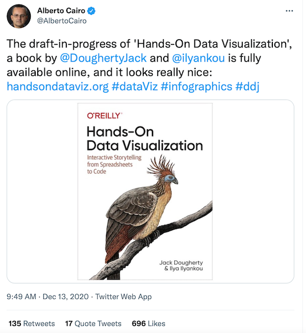
Tweet by Alberto Cairo about our open-access book, December 2020
What is our readership and sales data?
How many people have read our open-access web book? And how many for-profit books have been sold? Answering these questions requires data from different sources because our book appears in four editions. One is the open-access web edition that we host on our GitHub website (with our custom domain https://handsondataviz.org). The other three editions are sold by O’Reilly: subscriber-only online access to their entire library (which retails at $49/month), the print book edition, and the eBook edition. Furthermore, O’Reilly sells foreign rights to publish the book in other countries.
Here’s a summary of readership for our open-access web edition, according to our Google Analytics data, before and after O’Reilly published our book in late March 2021:
Time Period (calendar year)
Users
Pageviews
Avg Session Duration
2019 (before contract)
41,443
117,750
1:55 minutes
2020 (revising manuscript)
60,709
185,391
2:09 minutes
2021 (book published March)
112,586
285,511
1:46 minutes
2022
170,889
391,751
1:27 minutes
2023
139,215
311,013
0:54 minutes
2024
119,902
285,849
0:55 minutes
2025
73,468
177,456
1:01 minutes
Here’s a summary of O’Reilly’s book sales for their editions thru January 2026:
O’Reilly Sales
Units
Earnings
Pct to Author
Author Royalties
Online Access
$13,170
25%
$3,292
Print Books
964
$23,900
10%
$2,390
eBooks
363
$13,890
25%
$3,473
Foreign Rights
$5,747
25%
$1,436
Other/Returns
$ 146
Total
1,327
$56,708
$10,738
Note that O’Reilly does not provide us with data on the number of readers or pageviews of our book through their subscriber-only online access.
In response to the Russian invasion of Ukraine, we have contributed all book royalties from 2022 to present to three funds: Save Life in Ukraine, the Ukraine Humanitarian Appeal, which closed down in 2025, and most recently The Halo Trust for de-mining in Ukraine. Please join us and donate. #StandWithUkraine
While our open-access web book audience is large and growing, O’Reilly’s total earnings from for-profit sales seems modest by comparison. That’s perfectly fine with us, because we never measured our success by squeezing out more money from for-profit book sales. Instead, our primary goal with Hands-On Data Visualization was to enhance the quality and expand the readership of our open-access edition, while collaborating with a publisher, who respects our open-access priorities, to produce print and digital editions of the book to readers who prefer to buy them in these formats. Working with O’Reilly—especially our developmental editor, copyeditor, and production editor—has been an excellent experience.
In conclusion, our approach to open-access book publishing may not match your ideals or realities. Perhaps you rely on book sales as your sole source of income. Many authors and publishers still prefer to let readers preview only a chapter online in order to maximize revenue. Some authors will consider open-access publishing, but dare not share their drafts until the work is completed. Others take the opposite approach and widely circulate pieces of their early writing online in blog posts or social media, but do not share the comprehensive final work in the same manner. Still others have never considered any of these options, nor do they realize that the knowledge-production industry is slowly changing, and some book publishers are growing more comfortable with open-access agreements. So while our approach may not suit your situation, we hope that our reasoning will nudge you to think differently about why and how all of us publish books, both in the present and in future years to come.
How to read the web edition
Reading the open-access edition of Hands-On Data Visualization in your web browser the ideal way to explore our interactive charts and maps. Most are embedded in the web pages as iframes using the same principles illustrated in Chapter 9: Embed on the Web. Also, the web edition enables readers to easily click on internal cross-references and follow our links to external sources.
Try these toolbar features located near the top of your browser:
Menu
Search
Font to adjust text size and display
View source code on GitHub (if available)
Download book files (if available)
Shortcuts (arrow keys to navigate; s to toggle sidebar; f to toggle search)
Social Media
Share
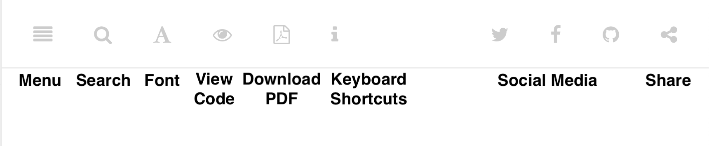
Toolbar features in open-access web edition
Open links in new tabs
Keep your place when reading online and moving between pages.
Two-finger trackpad click
or Control + click (Mac)
or Alt + click (Chromebook)
or right-click (Windows and others)
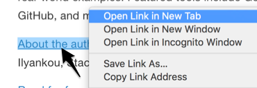
How to open links in new tab (on Mac)
Share section links
Float your cursor over any section header to reveal a hashtag anchor symbol: #. Click the symbol to view the section link in your browser bar, and copy it to share with others.
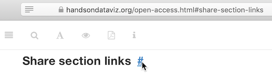
How to share section links
Introduction: Why Data Visualization?
In this book, you’ll learn how to create true and meaningful data visualizations through chapters that blend design principles and step-by-step tutorials, in order to make your information-based analysis and arguments more insightful and compelling. Just as sentences become more persuasive with supporting evidence and source notes, your data-driven writing becomes more powerful when paired with appropriate tables, charts, or maps. Words tell us stories, but visualizations show us data stories by transforming quantitative, relational, or spatial patterns into images. When visualizations are well-designed, they draw our attention to what is most important in the data in ways that would be difficult to communicate through text alone.
Our book features a growing number of free and easy-to-learn digital tools for creating data visualizations. We broadly define this term primarily as charts, which encode data as images, and maps which add a spatial dimension. While tables do not illustrate data in the same way, we include them in this book because of our pragmatic need to navigate new learners through a decision-making process that often results in building one of these three products. Furthermore, in this digital era we define data visualizations as images that can be easily re-used by modifying the underlying information, typically stored in a data file, in contrast to infographics that are generally designed as single-use artwork.4
As educators, we designed Hands-On Data Visualization to introduce key concepts and provide step-by-step tutorials for new learners. You can teach yourself, or use the book to teach others. Also, unlike many technical books that focus solely on one tool, our book guides you on how to choose among over twenty free and easy-to-use visualization tools that we recommend. Finally, while some other books only focus on static visualizations that can be distributed only on paper or PDF documents, we demonstrate how to design interactive tables, charts, and maps, and embed them on the web. Interactive visualizations engage wider audiences on the internet by inviting them to interact with the data, explore patterns that interest them, download files if desired, and easily share your work on social media.
Data visualizations have spread widely across on the internet over the last decade. Today in our web browsers we encounter more digital charts and maps than we previously saw in the print-only past. But rapid growth also raises serious problems. The “information age” now overlaps with the “age of disinformation.” Now that nearly anyone can post online, how do you make wise decisions about whom to trust? When presented with conflicting data stories about divisive policy issues such as social inequality or climate change, which one do you believe? In the next section, we’ll delve into this thorny topic by exploring what types of evidence persuades you, and why. And we’ll share this dirty little secret about data visualization: it illuminates our path in pursuit of the truth, but it also empowers us to deceive and lie.
What Can You Believe?
To begin, how do you know whether or not to believe us, the authors of this book? Could we be lying to you? How do you determine what information is truthful? Let’s start with a simple one-sentence statement:
Claim 1. Economic inequality has sharply risen in the United States since the 1970s.
Do you believe this claim—or not? Perhaps you’ve never thought about the topic in this particular way before now (and if so, it’s time to wake up). It’s possible your response depends on whether this statement blends in with your prior beliefs, or pushes against them. Or perhaps you’ve been taught to be skeptical of claims lacking supporting evidence (and if so, thank your teachers).
So let’s move on to a more complex two-sentence statement that also cites a source:
Claim 2. In 1970, the top 10 percent of US adults received an average income of about $135,000 in today’s dollars, compared to the bottom 50 percent who earned around $16,500. This inequality gap grew sharply over the next five decades, as the top tier income climbed to about $350,000, while the bottom half barely moved to about $19,000, according to the World Inequality Database.5
Is this second claim more believable than the first one? It now makes a more precise claim by defining economic inequality in terms of average income for the upper 10 percent versus the bottom 50 percent over time. Also, this sentence pins its claims to a specific source, and invites us to read further by following the footnote. But how do these factors influence its persuasiveness? Does the sentence lead you to ask about the trustworthiness of the source and how it defines “income”? Does the wording make you wonder about the other 40 percent of the population between the two extremes?
To answer some of those questions, let’s supplement the second claim with a bit more information, as shown in Table ?tbl-us-income.
(#tab:us-income) Average US Adult Income, 1970-2019
US Income Tier
1970
2019
Top 10 Percent
$136,308
$352,815
Middle 40 Percent
$44,353
$76,462
Bottom 50 Percent
$16,515
$19,177
Note: Shown in constant 2019 US dollars. National income for individuals aged 20 and over, prior to taxes and transfers, but includes pension contributions and distributions. Source: World Inequality Database, accessed 2020
Does Table ?tbl-us-income make Claim 2 more persuasive? Since the table contains essentially the same information as the two sentences about top and bottom income levels, it shouldn’t make any difference. But the table communicates the evidence more effectively, and makes a more compelling case. For many people, it’s easier to read and grasp the relationship between numbers when they’re organized in a grid, rather than complex sentences. As your eyes skim down the columns, you automatically notice the huge jump in income for the top 10 percent, which nearly tripled over time, while the bottom 50 percent barely budged. In addition, the table fills in more information that was missing from the text about the middle 40 percent, whose income grew over time, but not nearly as much as the top tier. Furthermore, the note at the bottom of the table adds a bit more context about how the data is “shown in constant 2019 US dollars,” which means that the 1970s numbers were adjusted to account for changes to the cost of living and purchasing power of dollars over a half-century. The note also briefly mentions other terms used by the World Inequality Database to calculate income (such as taxes, transfers, and pensions), though you would need to consult the source for clearer definitions. Social scientists use different methods to measure income inequality, but generally report findings similar to those shown here.6
Some Pictures Are More Persuasive
Now let’s substitute a data visualization—specifically the line chart in Figure ?fig-us-income-chart1—in place of the table, to compare which one is more persuasive.
Is Figure ?fig-us-income-chart1 more persuasive than Table ?tbl-us-income? Since the line chart contains the same historical start and stop points as the table, it should not make any difference. But the line chart also communicates a powerful, visualized data story about income gaps that grabs your attention more effectively than the table. As your eyes follow the colored lines horizontally across the page, the widening inequality between the top versus the middle and bottom tiers is striking. The chart also packs so much granular information into one image. Looking closely, you also notice how the top-tier income level was relatively stable during the 1970s, then spiked upward from the 1980s to the present, and grew more distant from other lines. Meanwhile, as the middle-tier income rose slightly over time, the fate of the lowest-tier remained relatively flat, reached its peak in 2007, and then dipped back downward for much of the past decade. The rich got richer, and the poor got poorer, as the saying goes. But the chart reveals how rapidly those riches grew, while poverty remained recalcitrant in recent years.
Now let’s insert Figure ?fig-us-income-chart2, which contains the same data as Figure ?fig-us-income-chart1, but presented in a different format. Which chart should you believe? Remember, we warned you to watch out for people who use data visualizations to tell lies.
What’s going on? If Figure ?fig-us-income-chart2 contains the same data as Figure ?fig-us-income-chart1, why do they look so different? What happened to the striking growth in inequality gaps, which now seem to be smoothed away? Did the crisis suddenly disappear? Was it a hoax?
Although the chart in Figure ?fig-us-income-chart2 is technically accurate, it intentionally misleads readers. Look closely at the labels in the vertical axis. The distance between the first and second figures ($1,000 to $10,000) is the same as the distance between the second and the third ($10,000 to $100,000), but those jumps represent very different amounts of money ($9,000 versus $90,000). That’s because this chart was constructed with a logarithmic scale, which is most appropriate for showing exponential growth. You may recall seeing logarithmic scales during the Covid pandemic, when they were appropriately used to illustrate very high growth rates, which are difficult to display with a traditional linear scale. This second chart is technically accurate, because the data points and scale labels match up, but it’s misleading because there is no good reason to interpret this income data using a logarithmic scale, other than to deceive us about this crisis. People can use charts to illuminate the truth, but also can use them to disguise it.
Different Shades of the Truth
Let’s expand our analysis of income inequality beyond the borders of one nation. Here’s a new claim that introduces comparative evidence and its source. Unlike the prior US examples that showed historical data for three income tiers, this global example focuses on the most current year of data available for the top 1 percent in each nation. Also, instead of measuring income in US dollars, this international comparison measures the percentage share of the national income held by the top 1 percent. In other words, how large a slice of the pie is eaten by the richest 1 percent in each nation?
Claim 3. Income inequality is more severe in the United States, where the richest 1 percent of the population currently receives 20 percent of the national income. By contrast, in most European nations the richest 1 percent receives a smaller share, ranging between 6 to 15 percent of the national income.7
Following the same train of thought above, let’s supplement this claim with a visualization to evaluate its persuasiveness. While we could create a table or a chart, those would not be the most effective ways to quickly display information for over 120 nations in our dataset. Since this is spatial data, let’s transform it into an interactive map to help us identify any geographic patterns and to encourage readers to explore income levels around the globe, as shown in Figure ?fig-world-income-map1.
Explore the interactive map of world income inequality, measured by the share of national income held by the top 1 percent of the population, based on the most recent data available. Source: World Inequality Database 2020.
Is Figure ?fig-world-income-map1 more persuasive than Claim 3? While the map and the text present the same data about income inequality in the US versus Europe, there should be no difference. But the map pulls you into a powerful story that vividly illustrates gaps between the rich and poor, similar to the chart example above. Colors in the map signal a crisis. Income inequality in the US (along with Russia and Brazil) stands out in dark red at the highest level of the legend, where the top 1 percent holds 19% or more of the national income. By contrast, as your eye floats across the Atlantic, nearly all of the European nations appear in lighter beige and orange colors, indicating no urgent crisis as their top-tier holds a smaller share of the national income.
Now let’s introduce the alternative map in Figure ?fig-world-income-map2, which contains the same data as shown in Figure ?fig-world-income-map1, but is displayed in a different format. Which map should you believe?
Why does the second map in Figure ?fig-world-income-map2 look different than the first map in Figure ?fig-world-income-map1? Instead of dark red, the US is now colored medium-blue, closer on the spectrum to Canada and most European nations. Did the inequality crisis simply fade away from the US, and move to dark-blue Brazil? Which map tells the truth?
This time, neither map is misleading. Both make truthful interpretations of the data with reasonable design choices, even though they create very different impressions in our eyes. To understand why, look closely at the map legends. The first map sorts nations in three categories (less than 13%, 13-19%, 19% and above), while the second map displays the entire range in a green-blue color gradient. Since the US share is 20.5 percent, in the first map it falls into the top bucket with the darkest red color, but in the second map it falls somewhere closer to the middle as medium-blue color. Yet both maps are equally valid, because neither violates a definitive rule in map design nor intentionally disguises data. People can mislead with maps, but it’s also possible to make more than one portrait of the truth.
The interpretive nature of data visualization poses a serious challenge. As the authors of this book, our goal is to guide you in creating truthful and meaningful charts and maps. We’ll point you toward principles of good design, encourage thoughtful habits of mind, and try to show by example. Occasionally we’ll even tell you what not to do. But data visualization is a slippery subject to teach, sometimes more art than science. We know that charts and maps can be manipulated—just like words—to mislead your audience, and we’ll demonstrate common deception techniques to help you spot them in other people’s work, and consciously avoid them in your own. But newcomers may be frustrated by the somewhat fuzzy rules of data visualization. Often there is no single correct answer to a problem, but rather several plausible solutions, each with their own strengths and weaknesses. As a learner, your job is to continually search for better answers without necessarily expecting to find the one right answer, especially as visualization methods and tools continue to evolve, and people invent new ways to show the truth.
Organization of the Book
We’ve organized the chapters of this book to serve as an introductory hands-on guide to data visualization, from spreadsheets to code. Also, we assume no prior skills other than general familiarity with operating a computer and a vague memory of secondary school mathematics, along with an innate curiosity about telling stories with data. Imagine the book in four parts.
In part two, you’ll build lots of visualizations with easy-to-learn drag-and-drop tools, and find out which types work best with different data stories. We’ll start with Chapter 6: Chart Your Data, Chapter 7: Map Your Data, and Chapter 8: Table Your Data and develop your understanding of the interpretive style that each one emphasizes. In Chapter 9: Embed on the Web, you’ll learn how to insert all of these interactive visualizations on common web platforms, to invite readers to explore your data and share your work more widely.
In part four, we’ll wrap up all of the visualization skills you’ve developed by returning to the central theme of this introduction: telling true and meaningful stories with data. In Chapter 14: Detect Lies and Reduce Bias, you’ll learn how to lie with charts and maps in order to do a better job of telling the truth. Finally, Chapter 15: Tell and Show Your Data Story emphasizes how the goal of data visualization is not simply to make pictures about numbers, but to craft a truthful narrative that convinces readers how and why your interpretation matters.
Summary
Now you have a clearer sense of our primary goal for this book. We aim for you to learn how to tell true and meaningful stories with interactive data visualizations, while being mindful of the ways that people can use them to mislead. In the next chapter, let’s get started on clarifying the data story you wish to tell, and factors to consider when choosing tools to do the job. Let’s get started!
13 Choose Tools to Tell Your Story
If you feel overwhelmed by the avalanche of digital tools available today, you’re not alone. When you’re simply trying to do your regular work, keeping up with the latest software developments can feel like an additional part-time job you didn’t sign up for. Digital tools are constantly changing and evolving. That’s good news if you like to experiment and choose among different options, but not-so-good news if you lack the time to make complex decisions.
In this chapter, we’ll help you navigate your way through the decision-making process. We’ll begin with the most important step—sketching out your data story—to help identify the types of tools you need to tell it effectively. Next, we’ll review ten factors to consider when choosing digital tools and the tradeoffs involved. Finally, we’ll present our list of recommended data visualization tools, plus one extra to help you get organized: a password manager. All of these tools are free to use, and the book introduces them gradually, from easy-to-learn beginner tools to more advanced power tools that grant you more control over where your work is hosted and how it looks.
Start Sketching Your Data Story
Before we dive into digital tools, let’s focus on what’s most important: our data story. We build visualizations to help us tell a story about the information we’ve gathered, a narrative that draws the audience’s attention to meaningful patterns and key insights amid all of the pieces of data. Help them to see the forest, rather than listing every single tree.
But in the early stage of a data visualization project, a common problem is that we don’t yet have a clear sense of the key pieces of our data story, or how they fit together. That’s perfectly normal. One of the best ways to address that problem is a quick exercise that’s designed to move partially-formed ideas from inside our heads out onto pieces of paper, to help you and any co-workers see them more clearly.
For this exercise, push away your computer and pick up some of our favorite old-school tools:
several blank sheets of paper
colored pencils, pens, or markers
your imagination
Get ready to sketch out your data story in words and pictures. No artistic skills are required.
On the first sheet of paper, write down the problem that motivates your data project. If you prefer a prompt, try filling in these blanks: We need to find out ______ in order to _________. In many cases, people come to data visualization with an information-driven problem, which they hope will lead them to achieve a broader goal. For example, when working on the first draft of this book, our problem statement was: We need to find out our readers’ backgrounds and interests about data visualization, in order to write a better introductory guide that meets their needs.
On the second sheet of paper, rewrite your problem statement into a question. Write a question for which you genuinely do not yet know the answer—and punctuate it with a question mark. If your brain is tempted to jump ahead and try to answer the question, fight that urge. Instead, focus on framing the question, by using more precise wording than what you wrote above, without limiting the range of possible results. For example, when working on the first draft, our question was: How do readers of our book describe their prior experience with data visualization, education level, and learning goals? While we had some preliminary guesses, we honestly didn’t know the answer at that stage, which made it an authentic question.
On the third sheet of paper, draw pictures and arrows to show how you’ll find data to answer your question above. Are you conducting door-to-door interviews with neighborhood residents, or sending an online survey to customers, or downloading family income and county maps from the US Census? Sketch a picture of your data collection process, to show how you plan to bring together different pieces of information. For example, when writing the first draft of our book, we asked readers to fill out a quick online survey form, and reminded them not to insert any private data, because we shared back their collected responses in a public spreadsheet.
On the fourth sheet of paper, sketch at least one type of visualization you plan to create after you obtain your data above. Do you envision some type of chart, like a bar, line, or scatter chart? Or do you imagine some type of map, maybe with points or polygons? If your visualizations will be interactive, try to show the concept using buttons and more than one sheet of paper. You can add imaginary data at this stage because it’s just a preliminary sketch, as shown in Figure Figure 13.1. Have fun!
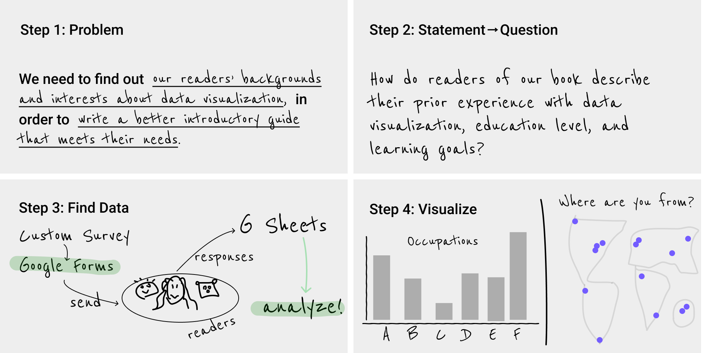
Figure 13.1: Sketch out your story idea on four pages: problem, question, find data, visualize.
This exercise can help you in multiple ways, whether you do it by yourself, or even better, with a team of co-workers, as shown in Figure Figure 13.2. First, by migrating ideas from your mind to paper, you’ll make your thinking clearer not only for you, but also more visible for others. When ideas are sketched out, you can reflect on them, listen to feedback, cross-out not-so-good ones, and replace them with better ones on new sheets of paper. If your initial sketches are too complicated or confusing, break down those ideas into separate pages to make them more coherent.
Figure 13.2: The data story sketching exercise can be done solo, but works even better with a team of people. In our data visualization course, college students and community partners collaborate on framing the data story for their projects.
Second, look at your sheets like a storyboard. Spread them out on a table, move them around to potentially reorder the sequence, start to define the three essential stages of your story: the beginning, middle, and end. Also, these pages can help you organize your thinking about how you’ll communicate your data story to larger audiences, such as a presentation slide deck, or paragraphs and pictures for your next report or web page. Don’t throw them away, because we’ll return to this exercise at the end of the book in Chapter 15: Tell and Show Your Data Story.
Finally, this sketching exercise can help you identify which chapters you should focus on in the body of this book. If you’re puzzled about where to search for data, check out Chapter 3: Find and Question Your Data. If you’re thinking about building a chart or map, but need examples of different types, look at the beginning of Chapter 6: Chart Your Data and Chapter 7: Map Your Data.
Now that you have a clearer sense of the story you wish to tell, and some initial ideas about the visualizations you wish to create, in the next two sections we’ll discuss tools to do the job, and factors you should consider when deciding among them.
Ten Factors When Considering Tools
Making decisions between the seemingly endless number of digital tools can feel overwhelming. To help you navigate your decision-making process, below we list ten key factors that we consider when evaluating new visualization tools or online services. When comparing options, many decisions involve some type of tradeoff, a balance between competing wants and needs, such as ease-of-use versus extensive features. By identifying key factors, we believe that each reader can make a more informed decision about which tools offer the best tradeoff for you, since all of us are different. Furthermore, we worded our categories broadly, because the concepts can be applied to other areas of your digital life, but followed up with more context about data visualization in particular.
1. Easy-to-learn
How much time will be required to learn a new tool? In our busy lives, this is often the most important factor, but also one that varies widely, as your personal investment of time and energy depends on your prior experience in using related tools and grasping key concepts. In this book, we use the label Easy Tools to identify those best suited for beginners (and even some advanced users prefer them, too). They usually feature a graphical user interface, meaning you operate them with pull-down menus or drag-and-drop steps, rather than memorizing commands to be typed into a blank screen. The better ones also offer user-friendly error messages that guide you in the right direction after a wrong turn. Later in the book, we’ll introduce Power Tools that provide more control and customization of your visualizations, such as code templates that you can copy and edit, which is easier than writing them from scratch. Overall, when deciding which tools to include in this book, we placed easy-to-learn at the top of our list. In fact, we removed a popular free drag-and-drop tool from an earlier draft of this book because even we had difficulty following our own instructions in how to use it. When faced with several good options, choose simplicity.
2. Free or Affordable
Is the tool free to use? Or is it based on a freemium model that offers basic functions for free, with premium features at a price? Or does it require paying a one-time purchase or monthly subscription fee? Of course, the answer to what is affordable will vary for each reader. We fully understand that the business model for many software developers requires steady revenue, and both of us willingly pay to use specific tools necessary for our work. If you regularly rely on a tool to do your job, with no clear alternative, it’s in your best interest to financially support their continued existence. But when creating this book, we were impressed by the wide array of high-quality data visualization tools that are available at no cost to users. To increase access to data visualization for all readers, every tool we recommend is free, or its core features are freely available.
3. Powerful
Does the tool offer all of the features you anticipate needing? For example, does it support building sufficient types of data visualizations for your project? Although more is usually better, some types of charts are obscure and rarely used, such as radar charts and waterfall charts. Also, look out for limits on the amount of data you can upload, or restrictions on visualizations you create. For example, we previously removed a freemium tool from an earlier version of this book when the company began to require a paid license if your map was viewed more than 100 times on the web. Furthermore, to what extent does the tool allow you to customize the appearance of your visualizations? Since drag-and-drop and freemium tools commonly limit your display options, you may need to make tradeoffs between them versus more powerful and customizable tools. In this book, we begin with easy tools and gradually introduce more advanced ones in each chapter, to help you identify your ideal combination of simplicity and power.
4. Supported
Does the developer regularly maintain and update the tool, and respond to questions or issues? Is there an active user community that supports the tool and shares its knowledge about using it? If you’ve worked with digital tools as long as we have, you’ll recognize our pain in losing several whose developers pulled the plug. For example, the Killed By Google lists nearly 200 applications and online services that this multi-billion dollar corporation closed down. One of these was a popular data visualization tool, Google Fusion Tables, which once occupied a full chapter in an earlier version of this book, when we removed when Google shut down the tool after a ten-year run in 2019. Although none of us can predict which online tools will persist in future years, we looked for signs of active support before including them in this book, such as regular updates, stars earned on a GitHub developer’s site, and questions answered in the StackOverflow user forum. But never assume that the future will resemble the past. The continuous evolution of digital tools means that some become extinct.
5. Portable
How easily can you migrate your data into and out of a tool? For example, we stopped recommending an online story map tool created by a well-known software company when we discovered that while users could easily upload locations, text, and photos, but there was no way to export all of their work! As digital technology inevitably changes, all data will need to migrate to another platform, and it’s your job to be prepared for this eventual transition. Think about the issue as historical preservation, to increase the likelihood that your projects will continue to function on some unknown platform in the future. If your current tool developer announced that it was shutting down next month, could you easily extract all of the underlying data in a commonly-used file format to upload to a different tool? A key step to future-proof your visualizations is to ensure that your data files are easily separated from the presentation software that generates the charts or maps. When recommending tools for this book, we favored those that support portable data downloads for future migrations.
6. Secure and Private
This category combines related questions about security and privacy. First, does the online tool or service take reasonable precautions to protect your personal information from malicious hackers and malware? Review a list of major data breaches on Wikipedia to help you make informed decisions. If your tool developer recently experienced a malicious data hack, find out how they responded. Second, when you access tools through your browser, does they track your web activity across different sites? Also be aware of internet censorship by different governments around the globe, as compiled by Wikipedia, unless you happen to be reading this book in China, which has blocked access to all of Wikipedia since April 2019. Finally, does the tool clearly explain whether the data you enter or the products you create will stay private or become public? For example, some companies offer free access to their visualization tools, but in exchange require you to make your data, charts, and maps publicly accessible. That tradeoff may be acceptable if you’re working with open-access data and already plan to freely share your visualizations, as many journalists and scholars do. In any case, make sure the terms of service are clearly defined before you start using a tool.
7. Collaborative
Does the tool allow people to work together and co-create a data visualization? If so, does the tool allow different levels of access or version control to help prevent team members from accidentally overwriting each other’s contributions? Prior generations of digital tools were designed primarily for solo users, in part to address security and privacy issues raised above. But today, many data visualization projects require access and input from multiple team members. Collaboration is essential for success. As co-authors of this book, who jointly wrote the text and co-created many of the visualizations, we favor a newer generation of tools designed for team work environments.
8. Cross-Platform
This category refers to both creating and consuming digital content. First, does the tool work across different computer operating systems? In this book, we highlight several tools that run inside any modern web browser, which usually (but not always) means they will operate on all major desktop and laptop computer platforms, such as Windows, Mac, Chromebook, and Linux. When necessary, we specify when a tool will only run on specific computer operating systems, and this often reduces access for people using lower-cost computers. Second, does the tool create visualizations that are responsive to different screen sizes? In other words, does it produce charts and maps that display satisfactorily on smaller devices, such as smartphones and tablets? In this book, we favor cross-platform tools that also display content responsively on smaller devices, but we do not necessarily expect that tools can be operated on small devices to create visualizations. In other words, when we say that a tool runs inside any modern web browser, we don’t necessarily mean phone and tablet browsers, but sometimes they work there, too.
9. Open-Source
Is the tool’s software code publicly viewable? Can the code be modified and redistributed, so that other developers can suggest improvements, or build new features or extensions? We recognize that many developers rely on non-public proprietary code to sell their tools at a profit, and several of those appear in the book. But we also have been impressed with the number of high-quality data visualization tools offered under different types of open-source licensing arrangements, by sustainable communities of volunteer developers, non-profit organizations, and also for-profit companies who recognize some economic benefits of open-source code development. When recommending tools for this book, we highlight open-source options when available.
Figure 13.3: On the left, the Datawrapper built-in check for colorblindness. On the right, a Highcharts line chart designed for low-vision accessibility.
Those are ten factors we consider when deciding whether to add another item into our digital toolkit. Often we need to make compromises, as you’ll read in the next section. Of course, your list of factors may vary, and might include other values that are vitally important yet sometimes harder to judge, such as a software developer’s ethical business practices or contribution to the public good. Whatever criteria you value, make them explicit in your decision-making process, and inform others about what influences your choices.
Also consider other people’s perspectives on making tool decisions. When visualization designer Lisa Charlotte Rost wrote about her fascinating experiment in recreating one chart with 24 different tools, she concluded that “there are no perfect tools, just good tools for people with certain goals.” On a related note, when digital historian Lincoln Mullen offered advice on making prudent choices about digital tools, his first recommendation was: “The best possible tool is the one you’re already using to get work done.” Don’t fall into the familiar trap of believing that your productivity will increase if only you began to use yet another new tool. Mullen’s second piece of advice was: “Prefer the tool that your local co-workers use.” Even if a different tool is objectively better, it may be outweighed by the benefits of mutual support and collaboration with people using a less-awesome application in your local setting.8
Now that you’ve considered different factors behind tool decisions, in the next section you’ll see an overview of our recommendations for readers of this book, with a quick description and link to the chapter where we introduce each of them.
Our Recommended Tools
When creating this book, we aimed to identify the most essential data visualization tasks that beginners are likely to face, and the digital toolkit needed to complete those tasks. In the prior section we listed ten factors that influenced our tool recommendations, such as being easy-to-learn, free or affordable, with powerful capacity. In this section, we have listed all of the tools featured in this book, with recommended uses and references to chapters where they appear, as shown in Table ?tbl-tools. Your data visualization projects may only require you to use only a small number of these, or perhaps even just one tool. But it’s important to be aware of the different types of tools, because you may not realize how they can help you if don’t know that they exist.
(#tab:tools) Recommended Tools and Uses, with Chapter References
If this list initially looks overwhelming, don’t worry! Newer users can complete most of the twelve introductory-level chapters in this book with only two easy-to-learn tools. Begin with Google Sheets for spreadsheets and basic charts, then move up to Datawrapper for more advanced charts and maps. You can create amazing data visualizations with just these two tools. Also, they play nicely together, as Datawrapper allows you to directly import and update data from Google Sheets.
We often make compromises about tools that excel in some criteria but not others. For example, the tool most frequently featured in our book’s tutorials is Google Sheets, because it’s easy-to-learn, free, and powerful. But Google Sheets is not open-source, and some people express concerns about giving Google too much access to their information. To address the latter point, one way to make this compromise more palatable is to create a specific Google account to your data visualization work from your private life.
Finally, we recognize that digital tools are continually changing and evolving. Some tools we only discovered because someone mentioned or tweeted about it while we were writing this book. As time goes by, we expect that some tools will no longer be available, and we also anticipate discovering newer ones that do a better job of telling our data stories. If you’d like to recommend a tool that’s not currently on our list, contact the authors and tell us how it rates on the ten factors that guide our selection process above.
Use a Password Manager
Finally, we highly recommend a password manager: think of it as one tool to rule them all! Password managers help you to keep track of all of the accounts you will create when using several of the online tools above. We recommend installing Bitwarden, an open-source password manager that offers its core features for free for Windows, Mac, and Linux computers, all major web browsers, and iOS and Android mobile devices. When you install BitWarden, you create one universal password (be careful not to forget it) that grants you access to all of the account usernames and passwords you catalog. You also install the Bitwarden extension in your preferred web browsers. When you register for a new account in your browser, the password manager typically asks if you wish to store that information in your vault with end-to-end encryption. Also, when you visit that site in the future, the password manager usually recognizes it and enters your login credentials with one click, as shown in Figure Figure 13.4.
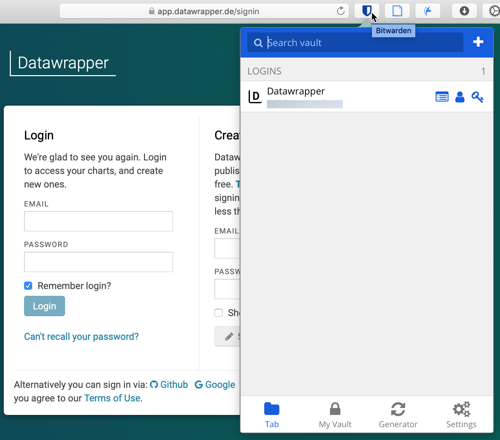
Figure 13.4: The Bitwarden browser extension recognizes sites you have previously stored, and enters your credentials with one click.
We recommend storing your passwords inside a tool like Bitwarden, rather than in a specific web browser (such as Chrome or Firefox) for two reasons. First, you can set up BitWarden to sync and access your passwords across different browsers and multiple devices, including your laptop and mobile phone. Second, if your primary browser or computer crashes, you still have online access to your secure Bitwarden vault, which means you can continue to work on a different computer.
Summary
Now you have a better sense of the wide range of data visualization tools we recommend in this book, and how to make wise decisions when choosing among tools in general. Always keep the data story in the forefront of your mind, since the tools are simply means to help you achieve that end. The next chapter is designed to strengthen your skills regarding the most common tool in our data visualization toolkit: spreadsheets.
14 Strengthen Your Spreadsheet Skills
Before we begin to design data visualizations, it’s important to make sure our spreadsheet skills are up to speed. While teaching this topic, we’ve heard many people describe how they “never really learned” how to use spreadsheet tools as part of their official schooling or workplace training. But spreadsheet skills are vital to learn, not only as incredible time-savers for tedious tasks, but more importantly, to help us discover the stories buried inside our data.
The interactive charts and maps that we’ll construct later this book are built on data tables, which we typically open with spreadsheet tools, such as Google Sheets, LibreOffice, or Microsoft Excel. Spreadsheets typically contain columns and rows of numerical or textual data, as shown in Figure Figure 14.1. The first row often contains headers, meaning labels describing the data in each column. Also, columns are automatically labeled with letters, and rows with numbers, so that every cell or box in the grid can be referenced, such C2. When you click on a cell, it may display a formula that automatically runs a calculation with references other cells. Formulas always begin with an equal sign, and may simply add up other cells (such as =C2+C3+C4), or may contain a function that performs a specific operation (such as calculating the average of a range of cells: =average(C2:C7)). Some spreadsheet files contain multiple sheets (sometimes called workbooks), where each tab across the bottom opens a specific sheet.
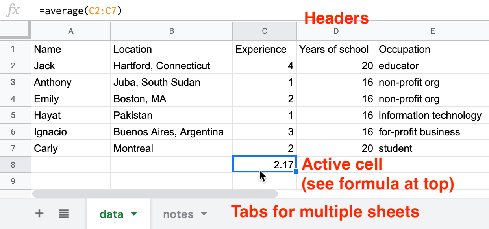
Figure 14.1: Screenshot of a typical spreadsheet, with headers, tabs, and the active cell displaying a formula.
We’ll practice several of these skills using sample data that may interest you, because it includes people like you. So far over 3,000 readers of this book have responded to a quick public survey about their general location, prior level of experience and education, and goals for learning data visualization. If you haven’t already done so, fill out the quick survey form to contribute your own response, and also to give you a better sense of how the questions were posed, then see the results in the public sample dataset.
If you want to learn ways to make your computer do more of the tedious data preparation work for you, this chapter is definitely for you. Or if you already feel very familiar with spreadsheets, you should at least skim this chapter, and perhaps you’ll learn a trick or two that will help you to create charts and maps more efficiently later in the book.
Select your Spreadsheet Tools
Which spreadsheet tools should you use? As we discussed in more detail in Chapter 1: Choose Tools to Tell Your Story, the answer depends on how you respond to different questions about your work. First, is your data public or private? If private, consider using a downloadable spreadsheet tool that runs on your computer, to reduce the risk of an accidental data breach that might happen when using an online spreadsheet tool that automatically stores your data in the cloud. Second, will you be working solo or with other people? For collaborative projects, consider using an online spreadsheet tool that’s designed to allow other team members to simultaneously view or edit data. Third, do you need to import or export data in any specific format (which we’ll describe in the next section), such as Comma Separated Values (CSV)? If yes, then choose a spreadsheet tool that supports that format. Finally, do you prefer a free tool, or are you willing to pay for it, or donate funds to support open-source development?
Here’s how three common spreadsheet tools compare on these questions:
Google Sheets is a free online spreadsheet tool that works in any modern web browser, and automatically stores your data in the cloud. While data you upload is private by default, you can choose to share it with specific individuals or anyone on the internet, and allow them to view or edit for real-time collaboration, similar to Google Documents. Google Sheets also imports and exports data in CSV, ODS, Excel, and other formats. You can sign up for a free personal Google Drive account with the same username as your Google Mail account, or create a separate account under a new username to reduce Google’s invasion into your private life. Another option is to pay for a Google Workspace business account subscription (formerly known as G Suite), which offers nearly identical tools, but with sharing settings designed for larger organizations or educational institutions.
LibreOffice is a free downloadable suite of tools, including its Calc spreadsheet, available for Mac, Windows, and Linux computers, and is an increasingly popular alternative to Microsoft Office. When you download LibreOffice, its sponsor organization, The Document Foundation, requests a donation to continue its open-source software development. The Calc spreadsheet tool imports and exports data in its native ODS format, as well as CSV, Excel, and others. While an online collaborative platform is under development, it is not yet available for broad usage.
Microsoft Excel is the spreadsheet tool in the Microsoft Office suite, which is available in different versions, though commonly confused as the company has changed its product names over time. A paid subscription to Microsoft 365 provides you with two versions: the full-featured downloadable version of Excel (which is what most people mean when they simply say “Excel”) for Windows or Mac computers and other devices, and access to a simpler online Excel through your browser, including file sharing with collaborators through Microsoft’s online hosting service. If you do not wish to pay for a subscription, anyone can sign up for a free version of online Excel at Microsoft’s Office on the Web, but this does not include the full-featured downloadable version. The online Excel tool has limitations. For example, neither the paid nor the free version of online Excel allows you to save files in the single-sheet generic Comma Separated Values (.csv) format, an important featured required by some data visualization tools in later chapters of this book. You can only export to CSV format using the downloadable Excel tool, which is now available only with a paid Microsoft 365 subscription.
Deciding which spreadsheet tools to use is not a simple choice. Sometimes our decisions change from project to project, depending on costs, data formats, privacy concerns, and the personal preferences of any collaborators. Occasionally we’ve also had co-workers or clients specifically request that we send them non-sensitive spreadsheet data attached to an email, rather than sharing it through a spreadsheet tool platform that was designed for collaboration. So it’s best to be familiar with all three commonly-used spreadsheet tools above, and to understand their respective strengths and weaknesses.
In this book, we primarily use Google Sheets for most of our examples. All of the data we distribute through this book is public. Also, we wanted a spreadsheet tool designed for collaboration, so that we can share links to data files with readers like you, so that you can view our original version, and either make a copy to edit in your own Google Drive, or download in a different format to use in LibreOffice or Excel. Most of the spreadsheet methods we teach look the same across all spreadsheet tools, and we point out exceptions when relevant.
Sidebar: Common data formats
Spreadsheet tools organize data in different formats. When you download spreadsheet data to your computer, you typically see its filename, followed by a period and a 3- or 4-character abbreviated extension, which represents the data format, as shown in Figure Figure 14.2. The most common data formats we use in this book are:
.csv means Comma Separated Values, a generic format for a single sheet of simple data, which saves no formulas nor styling.
.ods means OpenDocument Spreadsheet, a standardized open format that saves multi-tabbed sheets, formulas, styling, etc.
.xlsx or the older .xls means Excel, a Microsoft format that supports multi-tabbed sheets, formulas, styling, etc.
.gsheet means Google Sheets, which also supports multi-tabbed sheets, formulas, styling, etc., but you don’t normally see these on your computer because they are primarily designed to exist online.
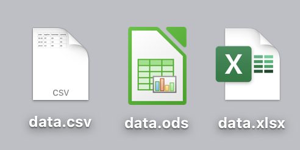
Figure 14.2: Three data formats commonly seen on your computer—csv, ods, and xlsx—when displayed properly in the Mac Finder.
Tip: The Mac computer hides filename extensions by default, meaning you may not be able to see the abbreviated file format after the period, such as data.csv or map.geojson. We recommend that you change this setting by going to Finder > Settings > Advanced, and check the box to Show all filename extensions, as shown in Figure Figure 14.3. In older Mac operating systems, the steps were Finder > Preferences > Advanced.
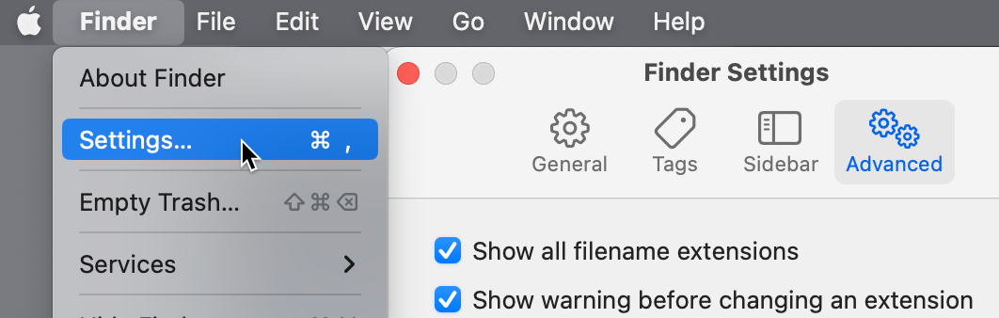
Figure 14.3: On a Mac, go to Finder-Settings-Advanced and check the box to Show all filename extensions.
Download to CSV or ODS Format
In Chapter 1: Choose Tools to Tell Your Story, you learned why we recommend software that supports portability, so you can migrate data to other platforms as technology evolves. Never upload important data into a tool that doesn’t allow you to easily get it back out. Ideally, spreadsheet tools should allow you to export your work in generic or open-data file formats, such as Comma Separated Values (CSV) and OpenDocument Spreadsheet (ODS), to maximize your options to migrate to other platforms.
Warning: If you’re working in any spreadsheet with multiple tabs and formulas, a CSV export will save only the active sheet (meaning the one you’re currently viewing), and only the data in that sheet (meaning that if you inserted formulas to run calculations, only the results would appear, not the formulas). Later in this book you may need to create a CSV file to import into a data visualization tool, so if the source was a multi-tabbed spreadsheet with formulas, keep track of the original.
One reason we feature Google Sheets in this book is because it exports data in several common formats. To try it, open this Google Sheets sample data file in a new tab, and go to File > Download to export in CSV format (for only the data in the active sheet) or ODS format (which keeps data and most formulas in multi-tab spreadsheets), or other formats such as Excel, as shown in Figure Figure 14.4. Similarly, in the downloadable LibreOffice and its Calc spreadsheet tool, select File > Save As to save data in its native ODS format, or to export to CSV, Excel, or other formats.
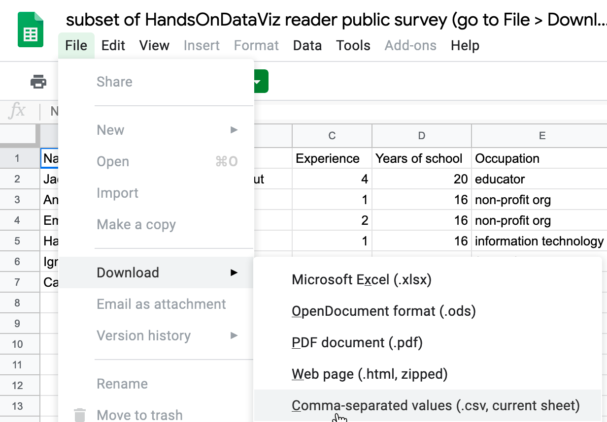
Figure 14.4: In Google Sheets, go to File - Download As to export data in several common formats.
But exporting data can be trickier in Microsoft Excel. Using the online Excel tool in your browser (either the free or paid version), you cannot save files in the generic single-sheet CSV format, a step required by some data visualization tools in later chapters of this book. Only the downloadable Excel tool (which now requires a paid subscription) will export in CSV format, a step required by some data visualization tools in later chapters of this book. And when using the downloadable Excel tool to save in CSV format, the steps sometimes confuse people. First, if you see multiple CSV options, choose CSV UTF-8, which should work best across different computer platforms. Second, if your Excel workbook contains multiple sheets or formulas, you may see a warning that it cannot be saved in CSV format, which only saves data (not formulas) contained in the active sheet (not all sheets). If you understand this, click OK to continue. Third, on the next screen, Excel may warn you about “Possible data loss” when saving an Excel file in CSV format, for reasons described above. Overall, when working with the downloadable Excel tool, first save the full-version of your Excel file in XLSX format before exporting a single sheet in CSV format.
Once you’ve learned how to export your spreadsheet data into an open format, you’re ready to migrate it into other data visualization tools or platforms that we’ll introduce in later chapters of this book. Data portability is key for ensuring that your charts and maps will last well into the future.
Make a Copy of a Google Sheet
In this book we provide several data files using Google Sheets. Our links point to the online files, and we set the sharing settings to allow anyone to view—but not edit—the original version. This allows everyone to have access to the data, but no one can accidentally modify the contents. In order for you to complete several exercises in this chapter, you need to learn how to make your own copy of our Google Sheets—which you can edit—without changing our originals.
Sign in to your Google account by clicking the blue button in the upper-right corner.
Go to File > Make a Copy to create a duplicate of this Google Sheet in your Google Drive, as shown in Figure Figure 14.5. You can rename the file to remove “Copy of…”.
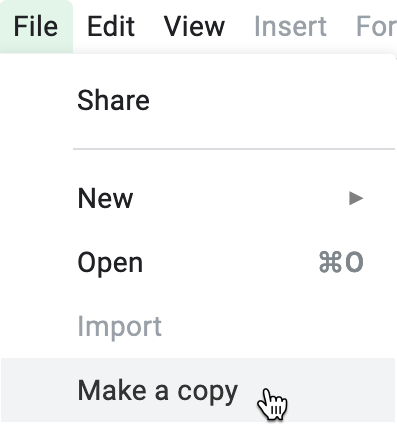
Figure 14.5: Go to File - Make a Copy to create your own version of this Google Sheet.
To keep your Google Drive files organized, save them in folders with relevant names to make them easier to find. For example, you can click the My Drive button and the New folder button to create a folder for your data, before clicking OK, as shown in Figure Figure 14.6.
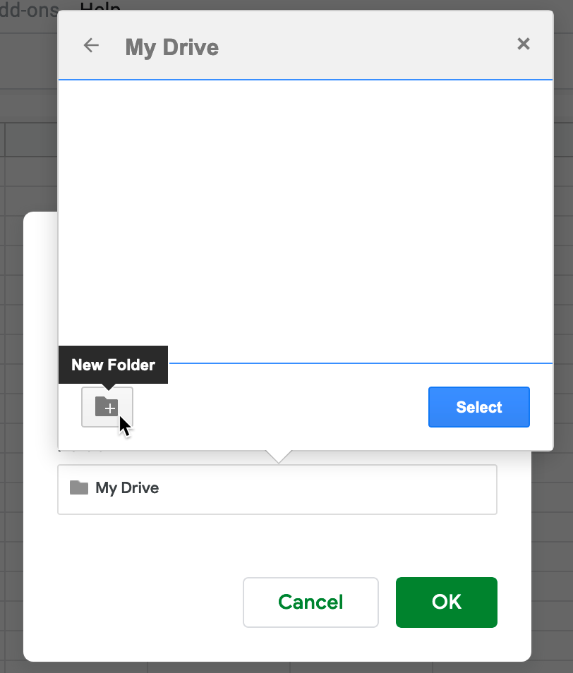
Figure 14.6: Click the My Drive and New folder buttons to save your work in a folder.
Your copy of the Google Sheet will be private to you only, by default. In the next section we’ll learn about different options for sharing your Google Sheet data with others.
Share Your Google Sheets
If you’re working on a collaborative project with other people, Google Sheets offers several ways to share your data online, even with people who do not own a Google account. When you create a new Sheet, its default setting is private, meaning only you can view or edit its contents. In this section, you’ll learn how to expand those options using the Share button.
Log into your Google Drive account, click the New button, select Google Sheets, and create a blank spreadsheet. You will need to name your file to proceed with next steps.
Click the Share button in the upper-right corner, and your options will appear as shown in Figure Figure 14.7.
In the top half of the screen, you can share access with specific individuals by entering their Google usernames into the Add people and groups field. For each person or group you add, on the next screen select the drop-down menu to assign them to be Viewer, Commenter, or Editor of the file. Decide if you wish to notify them with a link to the file and optional message.
In the lower half of the screen, you can share general access more broadly by changing the setting from Restricted to Anyone with the link, and granting permission for other people to View, Comment, or Edit the file. Also, you can click Copy link to paste the web address to your data in an email or public website.
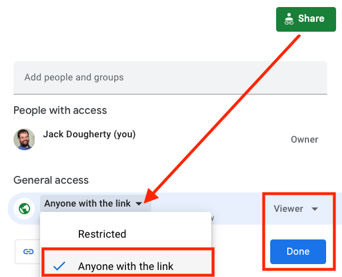
Figure 14.7: Click the Share button to grant access to specific individuals (top half), or offer general access so that Anyone with the link can View or Comment or Edit (bottom half).
Tip: If you don’t want to send people a really long and ugly Google Sheet web address such as:
then use a free link-shortening service, such as TinyURL. For example, using our Bitly.com account (which previously was free), we pasted in a long URL and customized the latter half to something shorter, such as bit.ly/reader-responses, as shown in Figure Figure 14.8. If someone else has already claimed your preferred custom name, you’ll need to think up a different one. Beware that shortened links may be case-sensitive, so we prefer to customize the latter half in all lowercase to match the front half.
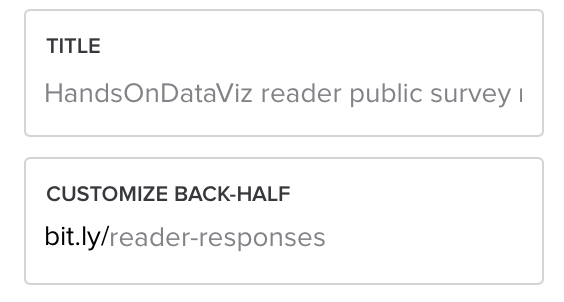
Figure 14.8: Use a link-shortening service and customize its back-end.
Now that you have different options for sharing a Google Sheet, let’s learn how to upload and convert data from different formats.
Upload and Convert to Google Sheets
We feature Google Sheets in this book partly because it supports data migration, meaning the ability to import and export files in many common formats. But imports work best when you check the Convert uploads box, which is hidden inside the Google Drive Settings gear symbol as shown in Figure Figure 14.9. Checking this box automatically transforms Microsoft Excel sheets into Google Sheets format (and also Microsoft Word and PowerPoint files into Google Documents and Slides formats), which allows easier editing. If you don’t check this box, then Google will keep your files in their original format, which makes them harder to edit. Google turns off this conversion setting by default on new accounts, but we’ll teach you how to turn it on, and the benefits of doing so.
Log into your Google Drive account, and click the Gear symbol in the upper-right corner, as shown in Figure Figure 14.9, to open the Settings screen. Note that this global Gear symbol > Settings appears at Google Drive level, not inside each Google Sheet.
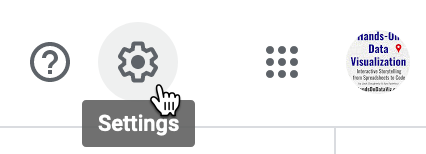
Figure 14.9: Click your Google Drive Gear Symbol - Settings in the upper-right corner.
On the Settings screen, check the box to Convert uploaded files to Google Docs editor format, as shown in Figure Figure 14.10, and click Done. This turns on the conversion setting globally, meaning it will convert all possible files that you upload in the future—including Microsoft Excel, Word, PowerPoint, and more—unless you turn it off.
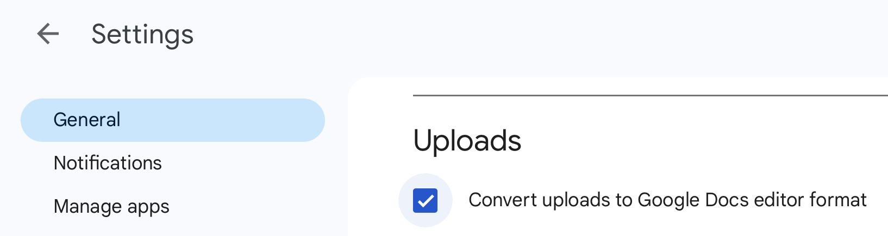
Figure 14.10: Inside your Google Drive Settings, check the box to automatically convert all uploads.
Upload a sample Excel file from your computer to your Google Drive. Either drag-and-drop it to the desired folder, as shown in Figure Figure 14.11, or use the New button and select File upload.
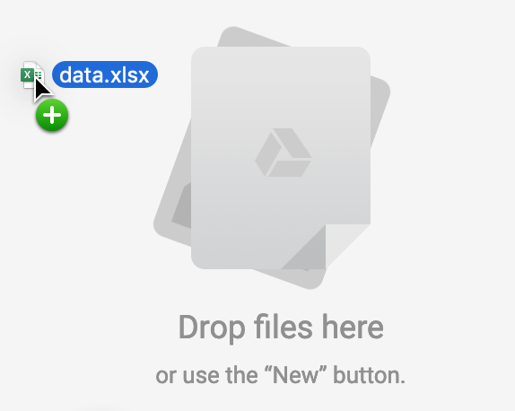
Figure 14.11: Drag-and-drop your sample Excel file into your Google Drive to upload it.
If you forget to check the Convert uploads box, Google Drive will keep uploaded files in their original format, and display their icons and file name extensions such as .xlsx or .csv, as shown in Figure Figure 14.12.
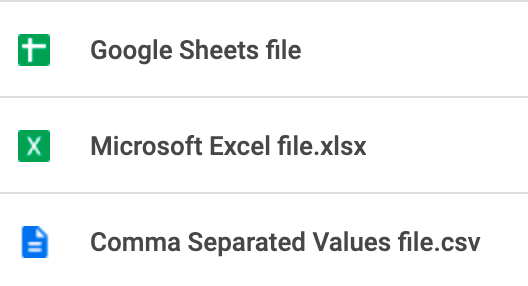
Figure 14.12: If you forget to convert uploads, Google Drive will keep files in their original format with these icons.
Tip: Google Drive now allows you to edit Microsoft Office file formats, but not all features are guaranteed to work across platforms. Also, Google Drive now allows you to convert a specific uploaded Excel file into its Google format by using the File > Save as Google Sheets menu. Finally, to convert individual files to your Google Drive, while keeping the global conversion setting off, from inside any Google Sheet you can select File > Import > Upload. But we recommend that most people turn on the global conversion setting as described above, except in cases where you intentionally use Google Drive to edit an Excel-formatted file, and understand that some features may not work.
Now that you know how to upload and convert an existing dataset, in the next section you’ll learn how to install and use a Google Sheets add-on tool to geocode address data into latitude and longitude coordinates.
Geocode Addresses in Google Sheets
In this section, you’ll learn how to geocode data by installing a free Google Sheets add-on tool. This allows you to geocode addresses directly inside your spreadsheet, which will be very useful when using Leaflet map code templates in Chapter 12.
Geocoding means converting addresses or location names into geographic coordinates (or x- and y-coordinates) that can be plotted on a map, as shown in Figure Figure 14.13. For example, the Statue of Liberty in the New York City area is located at 40.69, -74.04. The first number is the latitude and the second is the longitude. Since the equator is 0 degrees latitude, positive latitude is the northern hemisphere, and negative latitude is in the southern hemisphere. Similarly, the prime meridian is 0 degrees longitude, which passes through Greenwich, England. So positive longitude is east of the meridian, and negative longitude is west, until you reach the opposite side of the globe, roughly near the International Date Line in the Pacific Ocean.
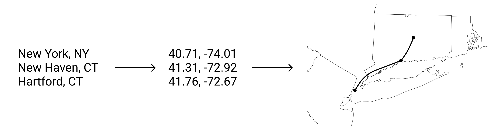
Figure 14.13: To map addresses, you first need to geocode them.
If you have just one or two addresses, you can quickly geocode them with Google Maps. Search for an address, right-click on that point, and select the first entry to copy its latitude and longitude, as shown in Figure Figure 14.14.
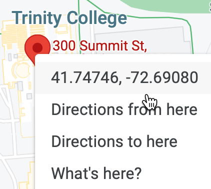
Figure 14.14: To geocode one address, search in Google Maps and right-click to copy its coordinates.
But what if you need to geocode a dozen or a hundred addresses? To geocode multiple addresses inside your spreadsheet, install a free Google Sheets Add-on called Geocoding by SmartMonkey, created by Xavier Ruiz, the CEO of SmartMonkey, a geographic route-planning company in Barcelona, Spain. Add-ons are created by third-party companies to expand features for Google Sheets, Google Documents, and related tools. Add-ons are verified to meet Google’s requirements and distributed through its G Suite Marketplace.
Sign into your Google Drive account, go to the Geocoding by SmartMonkey Add-on page, and click the blue button to install it in your Google Sheets. The Add-on will ask for your permission before installing, and if you agree, press Continue. In the next window, choose your Google Drive account, and if you agree with the terms, click Allow to complete the installation. Google will email you to confirm that you have installed this third-party app with access to your account. You can always review permissions and revoke access in the future, if desired.
Go to your Google Drive and create a new Google Sheet. Select the Extensions menu to see the new Geocoding by SmartMonkey options, and select Geocode Details menu. The geocoding tool will create a new sheet with sample data and display results for three new columns: Latitude, Longitude, and Address found, as shown in Figure Figure 14.15. Always review the quality of geocoded results by comparing the Address found column to the original Address entered.
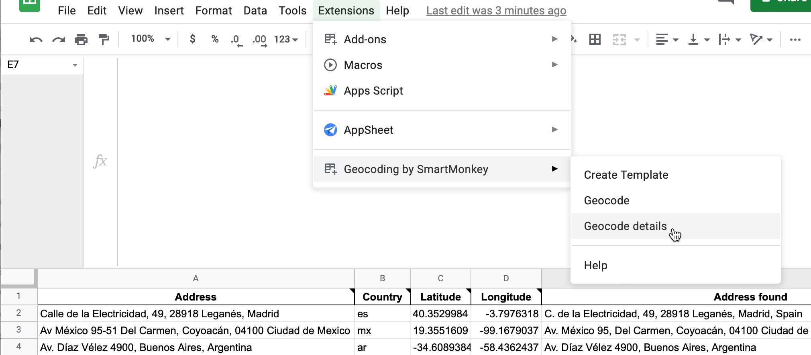
Figure 14.15: Select Extensions–Geocoding by SmartMonkey–Geocode Details to display sample data with results for three new columns: Latitude, Longitude, and Address found.
Paste your own address data to replace the sample data in the sheet, and geocode it as you did in the step above. Follow these guidelines to improve the quality of your results:
Do not skip any rows in the Address column.
Insert the full address using the format of the national postal service of the country where it is located. Separate terms with spaces.
You can leave the Country column blank, but its default value is the United States. To specify other nations, use their top-level Internet domain code, such as es for Spain.
Give the tool time to work. For example, if you enter 50 addresses, expect to wait at least 15 seconds for your geocoded results.
Gecoding results may be limited to approximately 500 addresses per day per account.
Always inspect the quality of your results, and never assume that geocoding services from any provider are accurate.
If you need a faster geocoding service for US addresses, which can handle up to 10,000 requests in one upload, see bulk geocoding with the US Census in Chapter 13: Transform Your Map Data.
Now that you know how to use a Google Sheets Add-on to geocode addresses, in the next section you will learn how to collect data using an online form, and access it as a spreadsheet.
Collect Data with Google Forms
At the top of this chapter, we invited you and other readers of this book to fill out a quick online survey, which publicly shares all of the responses in a sample dataset, so that we can learn more about people like you, and to continue to make revisions to match your expectations. In this section, you’ll learn how to create your own online form and link the results to a live Google Sheet.
Inside your Google Drive account, click on the New button and select Google Forms, as shown in Figure Figure 14.16.
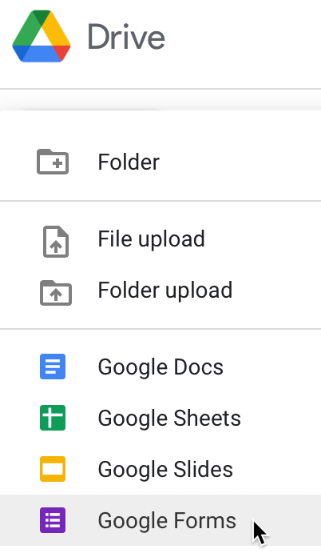
Figure 14.16: Click the New button to select Google Forms.
The Google Forms Questions tab allows you to design questions with different types of responses: short- and paragraph-length answers, multiple choice, checkboxes, file uploads, etc., as shown in Figure Figure 14.17. Furthermore, Google Forms attempts to interpret questions you enter in order to predictively assign them to a type.
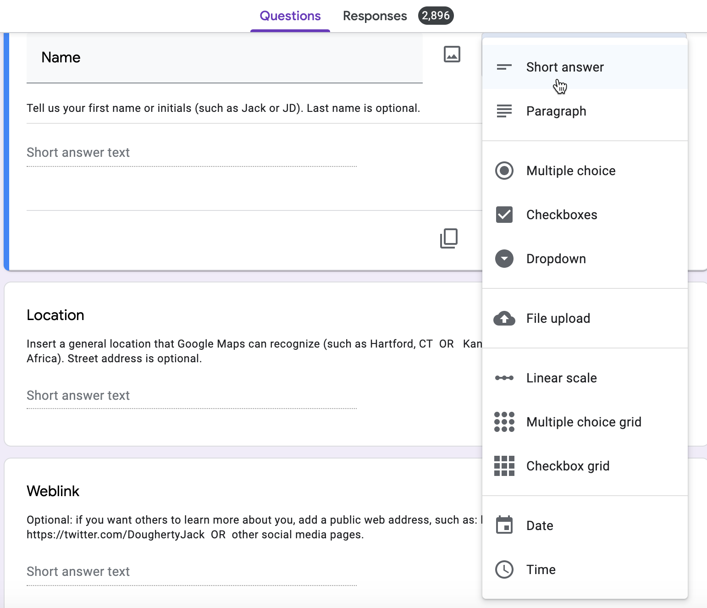
Figure 14.17: The Google Forms Questions tab allows you to designate different types of responses.
Give each question a very short title, since these will appear as column headers in the linked spreadsheet you’ll create further below. If a question needs more explanation or examples, click the three-dot kebob menu in the bottom-right corner to Show > Description, which opens a text box where you can type in more details, as shown in Figure Figure 14.18. Also, you can Show > Response validation, which requires users to follow a particular format, such as an email address or phone number. Furthermore, you can select the Required field to require users to respond to a question before proceeding. See additional options on the Google Forms support page.
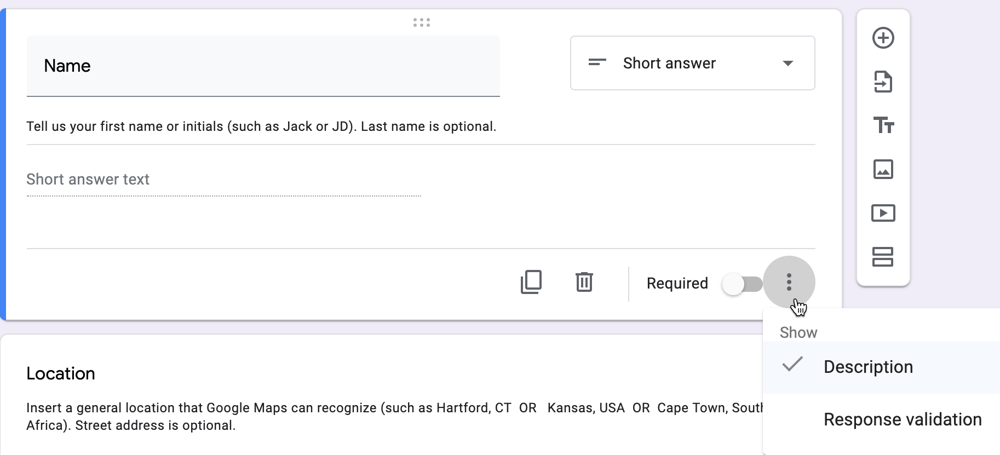
Figure 14.18: Click the three-dot kebab menu to Show - Description to add details for any question.
Note: Another name for the three-dot menu symbol is the “kebab menu” because it resembles Middle Eastern food cooked on a skewer, in contrast to the three-line “hamburger menu” on many mobile devices, as shown in Figure Figure 14.19. Software developers must be hungry.
Figure 14.19: Distinguish between the hamburger versus kebab menu icons.
To preview how your online will appear to recipients, click the Eyeball symbol near the top of the page, as shown in Figure Figure 14.20. When your form is complete, click the Send button to distribute it via email, a link, or to embed the live form as an iframe on a web page. Learn more about the latter option in Chapter 9: Embed on the Web.
Figure 14.20: Click the Eyeball symbol to preview your form.
The Google Forms Responses tab will show individual results you receive, and also includes a powerful button to open the data in a linked Google Sheet, as shown in Figure Figure 14.21.
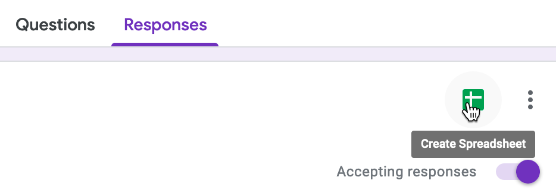
Figure 14.21: The Google Forms Responses tab includes a button to open results in a linked Google Sheet.
Now that you’ve learned how to collect data with an online form and linked spreadsheet, the next two sections will teach you how to sort, filter, and pivot tables to begin analyzing their contents and the stories they reveal.
Sort and Filter Data
Spreadsheet tools help you to dig deeper into your data and raise the stories you find to the surface. A basic step in organizing your data is to sort a table by a particular column, to quickly view its minimum and maximum values, and the range that lies in between. A related method is to filter an entire table to display only rows that contain certain values, to help them stand out for further study among all of the other entries. Both of these methods become more powerful when your spreadsheets contain hundreds or thousands of rows of data. To learn how to sort and filter, let’s explore the reader survey sample dataset we described at the top of the chapter.
Login to your Google Sheets account, and go to File > Make a Copy to create your own version that you can edit.
Before sorting, click the upper-left corner of the sheet to select all cells, as shown in Figure Figure 14.22. When the entire sheet becomes light blue, and all of the alphabetical column and numerical row headers become dark grey, this confirms you’ve selected all cells.
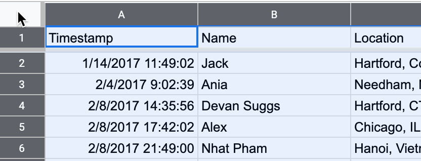
Figure 14.22: Click the upper-left corner to select all cells before sorting.
Warning: If you forget to select all cells, you might accidentally sort one column independently of the others, which will scramble your dataset and make it meaningless. Always select all cells before sorting!
In the top menu, go to Data > Sort Range > Advanced Range Sorting Options to review all of your sort options. In the next screen, check the Data has header row box to view the column headers in your data. Let’s sort the Experience with data visualization column in ascending order (from A-Z), as shown in Figure Figure 14.23, to display the minimum at the top, the maximum at the bottom, and the range in between.
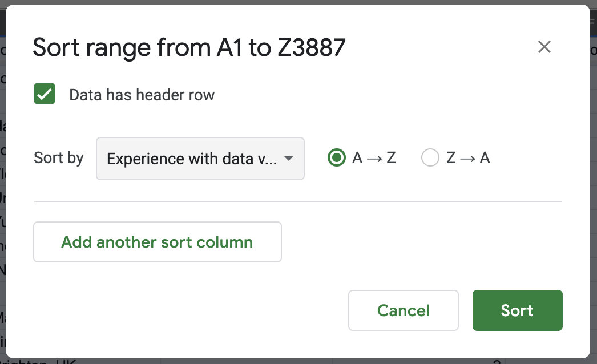
Figure 14.23: Go to Data - Sort Range - Advanced Range Sorting Options, check the header row box, and sort by Experience with dataviz in ascending order.
Scroll through your sorted data and you’ll see that over 1,000 readers rated themselves as beginners (level 1) with data visualization.
Tip: When working with large spreadsheets, you can “freeze” the first row so that column headers will still appear as you scroll downward. In Google Sheets, go to View > Freeze and select 1 row, as shown in Figure Figure 14.24. You can also freeze one or more columns to continuously display when scrolling sideways. LibreOffice has a same option to View > Freeze Rows and Columns, but Excel has a different option called Window > Split.
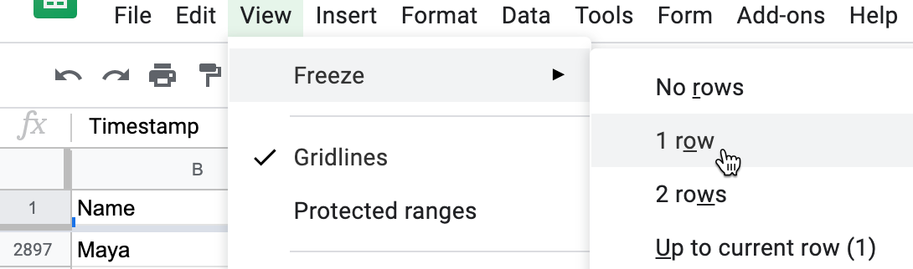
Figure 14.24: In Google Sheets, go to View - Freeze to select the number of rows to continuously display when scrolling downward.
Now let’s try filtering your sheet. Go to Data > Create a Filter, which inserts downward arrows in each column header. Click on the downward arrow-shaped toggle in the Occupation column, and see options to display or hide rows of data. For example, look under Filter by values, then click the “Clear” button to undo all options, then click only educator to display only rows with that response, as shown in Figure Figure 14.25. Click “OK”.
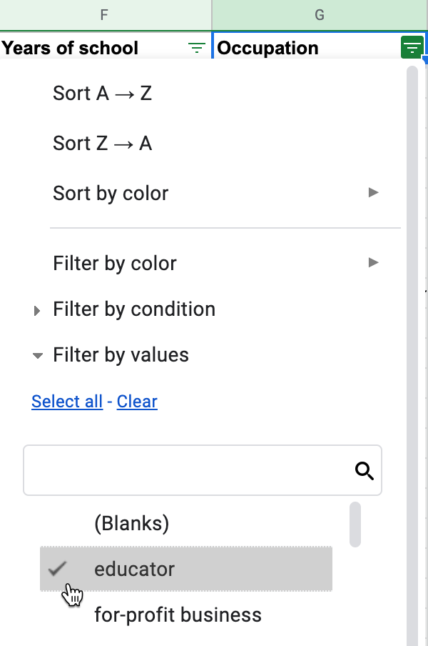
Figure 14.25: Go to Data - Create a Filter, click the downward arrow in the Occupation column, select only educator.
Now your view of reader responses is sorted by experience, and filtered to show only educators. Scroll through their one-sentence goals for learning about data visualization. How to do they compare to your own goals? In the next section, we’ll learn how to start analyzing your data with simple formulas and functions.
Calculate with Formulas
Spreadsheet tools can save you lots of time when you insert simple formulas and functions to automatically perform calculations across entire rows and columns of data. In this section you’ll learn how to write formulas and functions in a sample dataset.
Always start a formula with an equal sign (=) to tell the spreadsheet tool you are inserting a calculation, rather than regular text or numbers. Simple formulas use symbols for mathematical operations between specific cells:
Plus symbol (+) to add, like this: = B2 + B3
Minus symbol (-) to subtract, like this: = B2 - B3
Asterisk symbol (*) to multiply, like this: = B2 * B3
Forward slash (/) to divide, like this: = B2 / B3
Also, spreadsheet tools contain built-in functions that save us time by avoiding the need to write long formulas. Two simple functions are =SUM() and =AVERAGE(), which run calculations on cells inside the parentheses. A colon symbol (:) represents a consecutive range of cells. For example, the cells B2, B3, B4, B5, and B6 can be represented this like: (B2:B6).
To add up five cells, you could enter: = B2 + B3 + B4 + B5 + B6
But this function is faster: =SUM(B2:B6)
To find the average of five cells, you could enter: = ( B2 + B3 + B4 + B5 + B6 ) / 5, using parentheses to add up the sum before dividing by the count of numbers
But this function is faster: =AVERAGE(B2:B6)
Tip: Instead of typing out each character in your formulas and functions, experiment by clicking on specific cells or column headers, or clicking and dragging across ranges of cells, to automatically enter your desired instructions. For example, when you start typing the function =AVERAGE(), instead of typing B2:B6 inside the parentheses, you can click on cell B2, hold down your mouse or trackpad button, and drag to B6. Your spreadsheet tool should automatically generate this formula: =AVERAGE(B2:B6).
Now let’s practice our formula skills using the reader survey sample dataset described at the top of the chapter. You’ll use one function to calculate an average numeric value, and another function to count the frequency of a specific text response.
Log into your Google Drive account, and go to File > Make a Copy to edit your own version.
Add a blank row immediately below the header to make space for our calculations. Right-click on row number 1 and select Insert 1 below to add a new row, as shown in Figure Figure 14.26.
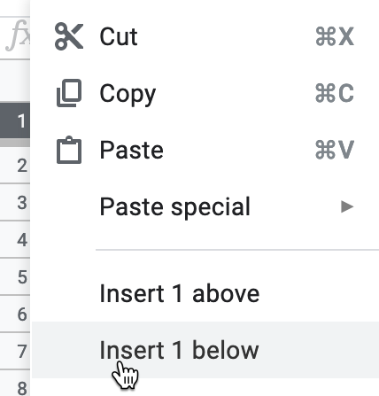
Figure 14.26: Right-click on row number 1 and select Insert 1 below.
Let’s calculate the average level of reader experience with data visualization. Click on cell E2 in the new blank row you just created, and type an equal symbol (=) to start a formula. Google Sheets will automatically suggest possible formulas based on the context, and you can select one that displays the average for current values in the column, such as =AVERAGE(E3:E2894), then press Return or Enter on your keyboard, as shown in Figure Figure 14.27.
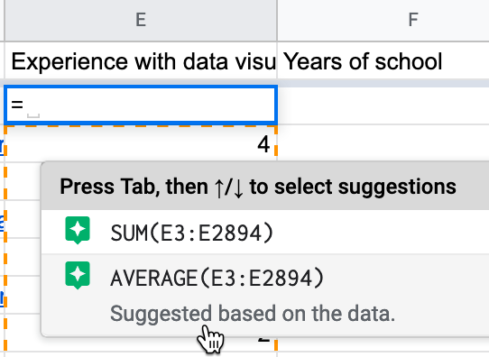
Figure 14.27: Type = to start a formula and select the suggestion for average, or type it directly in with the correct range.
Since our live spreadsheet has a growing number of survey responses, you will have a larger number in the last cell reference to include all of the entries in your version. Currently, the average level of reader experience with data visualization is around 2 on a scale from 1 (beginner) to 5 (professional), but this may change as more readers fill out the survey. Note that if any readers leave this question blank, spreadsheet tools ignore empty cells when performing calculations.
Tip: In Google Sheets, another way to write the formula above is =AVERAGE(E3:E), which averages all values in column E, beginning with cell E3, without specifying the last cell reference. Using this syntax will keep your calculations up-to-date if more rows are added, but it does not work with LibreOffice or Excel.
Part of the magic of spreadsheets is that you can use the built-in hold-and-drag feature to copy and paste a formula across other columns or rows, and it will automatically update its cell references. Click in cell E2, and then press and hold down on the blue dot in the bottom-right corner of that cell, which transforms your cursor into a crosshair symbol. Drag your cursor to cell F2 and let go, and show in Figure ?fig-sheets-drag-calc. The formula will be automatically pasted and updated for the new column to =AVERAGE(F3:F2894) or AVERAGE(F3:F), depending on which way you entered it above. Once again, since this is a live spreadsheet with a growing number of responses, your sheet will have a larger number in the last cell reference.
Click on the blue bottom-right dot in cell E2, then hold-and-drag your crosshair cursor in cell F2, and let go to automatically paste and update the formula.
Since the Occupation column contains a defined set of text responses, let’s use a different function to count them using an if statement, such as the number of responses if a reader listed “educator”. Click in cell G2 and type the equal symbol (=) to start a new formula. Google Sheets will automatically suggest possible formulas based on the context, and you can select one that displays the count if the response is educator for current values in the entire column. You can directly type in the formula =COUNTIF(G3:G2894,"=educator"), where your last cell reference will be a larger number to reflect all of the rows in your version, or type in the Google Sheets syntax =COUNTIF(G3:G,"=educator") that runs the calculation on the entire column without naming a specific endpoint, as shown in Figure Figure 14.28.
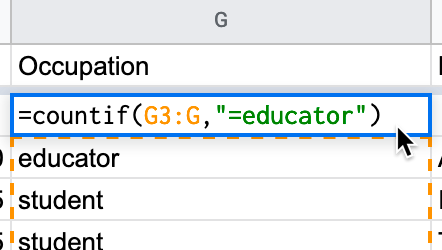
Figure 14.28: Select or enter a formula that counts responses if the entry is educator.
Spreadsheet tools contain many more functions to perform numerical calculations and also to modify text. Read more about functions in this support pages for Google Sheets, LibreOffice, or Microsoft Excel support page.
Now that you’ve learned how to count one type of survey response, the next section will teach you how to regroup data with pivot tables that summarize all responses by different categories.
Summarize Data with Pivot Tables
Pivot tables are another powerful feature built into spreadsheet tools to help you reorganize your data and summarize it in a new way, hence the name “pivot.” Yet pivot tables are often overlooked by people who were never taught about them, or have not yet discovered how to use them. Let’s learn this skill using the reader survey sample dataset we described at the top of the chapter. Each row represents an individual reader, including their occupation and prior level of experience with data visualization. You’ll learn how to “pivot” this individual-level data into a new table that displays the total number of reader responses by two categories: occupation and experience level.
Or, if you have already created your own copy for the prior section on Formulas and Functions, delete row 2 that contains our calculations, because we don’t want those getting mixed into our pivot table.
Go to Insert > Pivot Table, and on the next screen, select Create in a new sheet, as shown in Figure Figure 14.29. The new sheet will include a Pivot Table tab at the bottom.
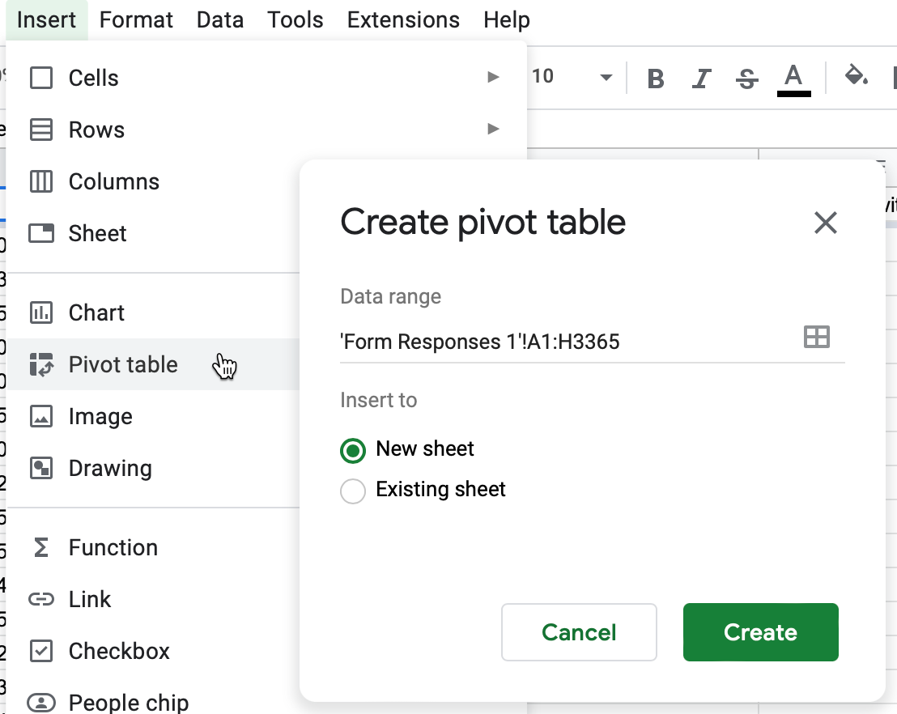
Figure 14.29: Go to Insert - Pivot Table, and create in a new sheet.
In the Pivot table editor screen, you can regroup data from the first sheet by adding rows, columns, and values. First, click the Rows Add button and select Occupation, which displays the unique entries in that column, as shown in Figure Figure 14.30.
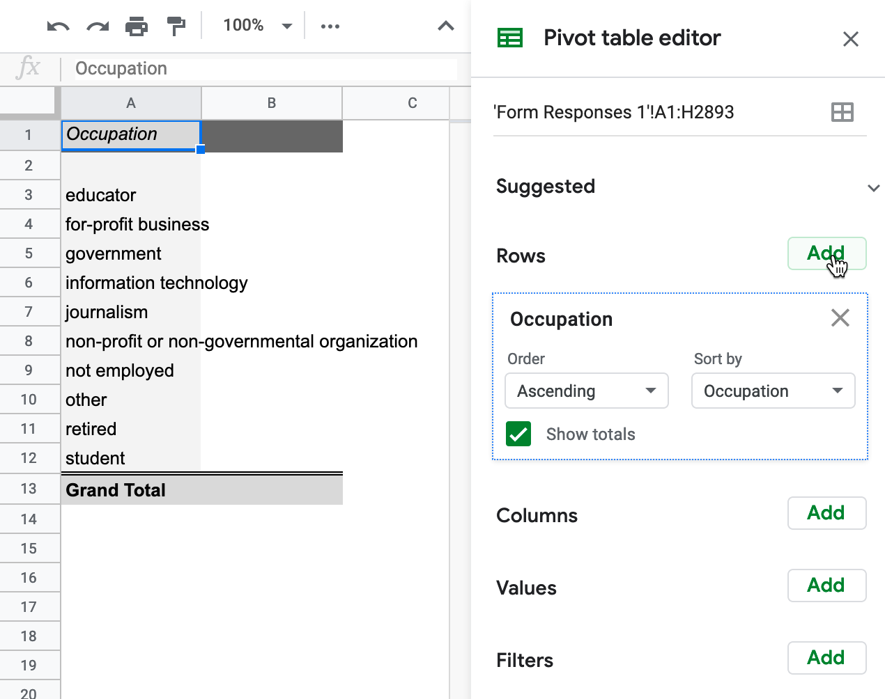
Figure 14.30: In the Pivot table editor, click the Rows Add button and select Occupation.
Next, to count the number of responses for each entry, click the Values Add button and select Occupation again. Google Sheets will automatically summarize the values by COUNTA, meaning it displays the frequency of each textual response, as shown in Figure Figure 14.31.
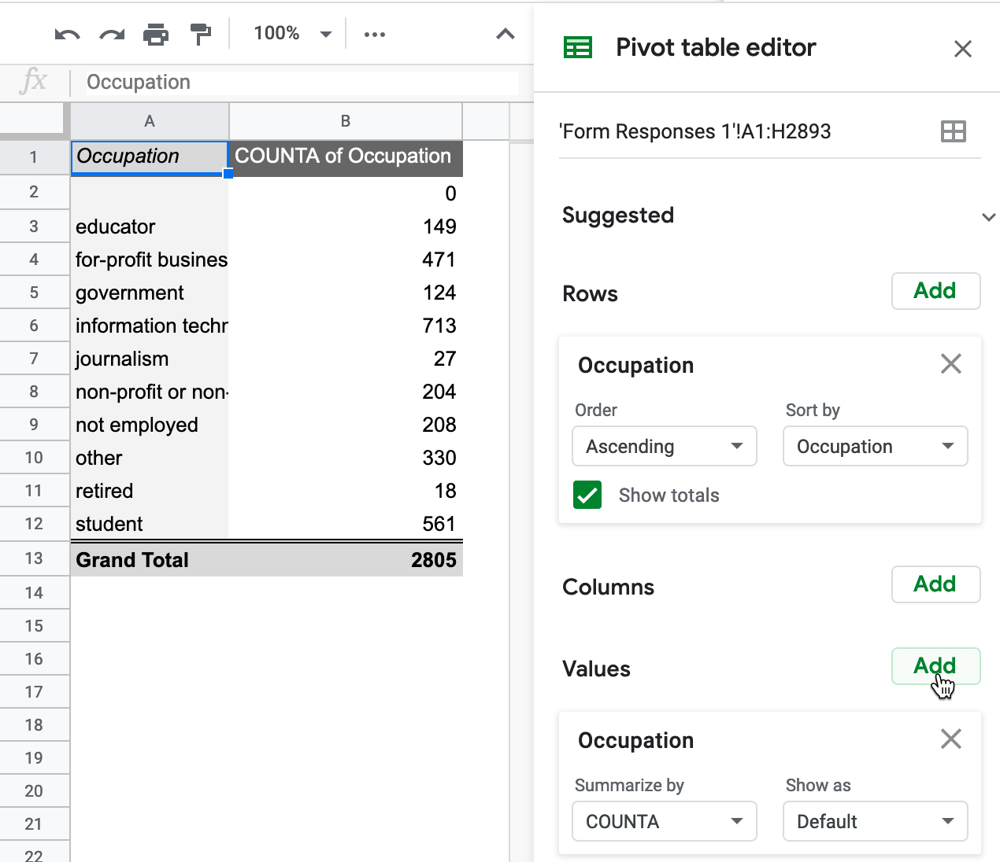
Figure 14.31: In the Pivot table editor, click the Values Add button and select Occupation.
Currently, the top three occupations listed by readers are information technology, for-profit business, and student. Since this is a live spreadsheet, these rankings may change as more readers respond to the survey.
Furthermore, you can create a more advanced pivot cross-tabulation of occupation and experience among reader responses. Click on the Columns button to add Experience with data visualization, as shown in Figure Figure 14.32.
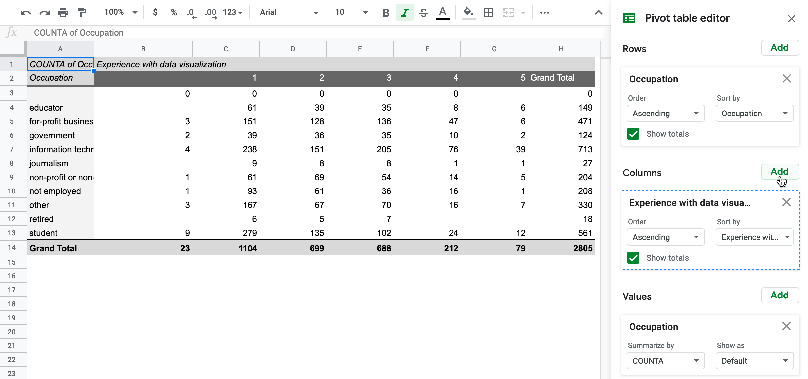
Figure 14.32: In the Pivot table editor, click the Columns Add button and select Experience with data visualization.
To go one step further, Filter the data to limit the pivot table results by another category. For example, in the drop-down menu, you can click the Filters Add button, select Years of school, then under Filter by values select Clear, then check 20 to display only readers who listed 20 or more years.
Deciding how to add Values in the Pivot table editor can be challenging, because there are multiple options to summarize the data, as shown in Figure Figure 14.33. Google Sheets will offer its automated guess based on the context, but you may need to manually select the best option to represent your data as desired. Three of the most common options to summarize values are:
SUM: the total value of numeric responses (What is the total years of schooling for readers?)
COUNT: frequency of numeric responses (How many readers listed 20 years of schooling?)
COUNTA: frequency of text responses (How many readers listed occupation as “educator”)
Although Google Sheets pivot tables display raw numbers by default, under the Show as drop-down menu you can choose to display them as percentages of the row, of the column, or of the grand total.
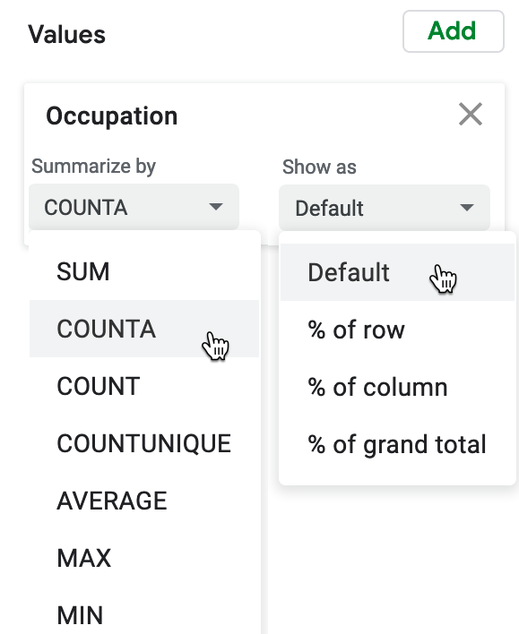
Figure 14.33: In the Pivot table editor, see multiple options to summarize Values.
While designing pivot tables may look differently across other spreadsheet tools, the concept is the same. Learn more about how pivot tables work in the support pages for Google Sheets or LibreOffice or Microsoft Excel. Remember that you can download the Google Sheets data and export to ODS or Excel format to experiment with pivot tables in other tools.
Now that you’ve learned how to regroup and summarize data with pivot tables, in the next section you’ll learn a related method to connect matching data columns across different spreadsheets using XLOOKUP.
Match Columns with XLOOKUP
Spreadsheet tools also allow you to “look up” data in one sheet and automatically find and paste matching data from another sheet. This section introduces the XLOOKUP function, where the “X” stands for “cross,” meaning matches across columns, which is the most common way to look up data. You’ll learn how to write a function in one sheet that looks for matching cells in select columns in a second sheet, and pastes the relevant data into a new column in the first sheet. If you’ve ever faced the tedious task of manually looking up and matching data between two different spreadsheets, this automated method will save you lots of time.
Tip: Earlier editions of this book described a similar function called VLOOKUP, but the XLOOKUP function is simpler to set up and more flexible. See more about both in the Google Sheets help page for XLOOKUP and the help page for VLOOKUP.
Here’s a scenario that illustrates why and how to use the XLOOKUP function. Figure Figure 14.34 shows two different sheets with sample data about food banks that help feed hungry people in different parts of the US, drawn from Feeding America: Find Your Local Food Bank. The first sheet lists individual people at each food bank, the second sheet lists the address for each food bank, and the two share a common column named organization. Your goal is to produce one sheet that serves as a mailing list, where each row contains one individual’s name, organization, and full mailing address. Since we’re using a small data sample to simplify this tutorial, it may be tempting to manually copy and paste in the data. But imagine an actual case that includes over 200 US food banks and many more individuals, where using an automated method to match and paste data is essential.
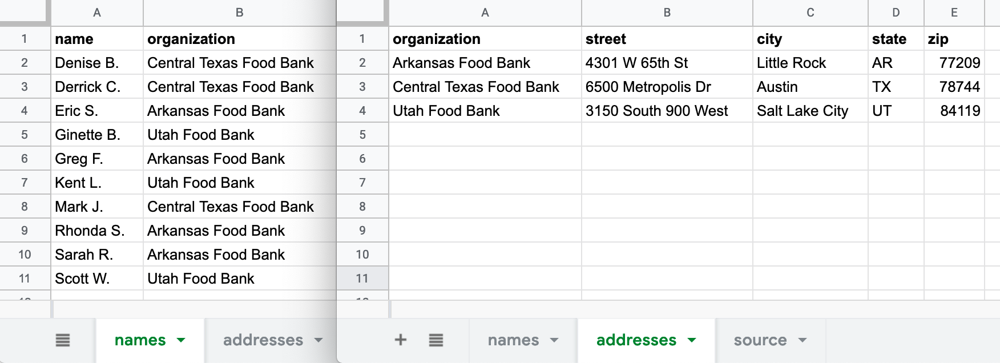
Figure 14.34: Your goal is to create one mailing list that matches individual names and organizations on the left sheet with their addresses on the right sheet.
We simplified this two-sheet problem by placing both tables in the same Google Sheet. Click on the first tab, called names, and the second tab, called addresses. In the future, if you need to move two separate Google Sheets into the same file, go to the tab of one sheet, right-click the tab to Copy to > Existing spreadsheet, and select the name of the other sheet.
In your editable copy of the Google Sheet, the names tab will be our destination for the mailing list we will create. Go to the addresses sheet, copy the column headers for street - city - state - zip, and paste them into cells C1 through F1 on the names sheet, as shown in Figure Figure 14.35. This creates new column headers where our lookup results will be automatically pasted.
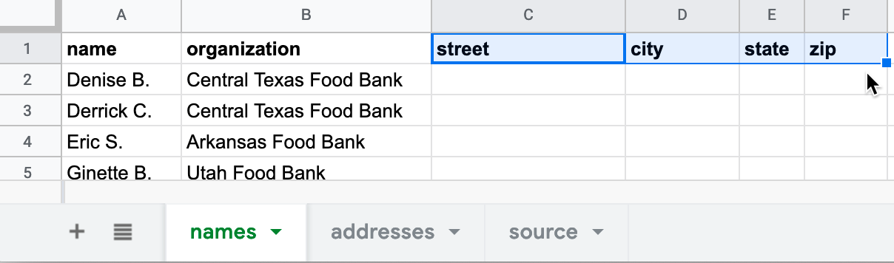
Figure 14.35: Paste the last four column headers from the addresses sheet into the names sheet.
In the names sheet, click in cell C2 and type =XLOOKUP, and Google Sheets will suggest that you complete the full formula in this format:
search_key = The cell in 1st sheet you wish to match.
lookup_range = The column or row in the 2nd sheet to search for your match.
result_range = The column or row the 2nd sheet that contains your desired result.
Afterwards are three optional parts, which in most cases you can omit and use the default values: - missing_value = The value to return if no match is found (#N/A by default). - match_mode = The precision level for finding matches (default is 0 for exact match). - search_mode = The direction for searching matches (default is 1 from first to last).
One option is to directly type this formula into cell C2, using comma separators, but it’s very long: =XLOOKUP(B2,'addresses'!A:A, 'addresses'!B:B).
A better option is to click on the XLOOKUP cross lookup green box that Google Sheets suggests, and click on the relevant cells, columns, and sheets for the formula to be automatically entered for you, as shown in Figure Figure 14.36. What’s new here is that this formula in the names sheet refers to a range of all rows in columns A and B in the addresses sheet. Press Return or Enter on your keyboard.
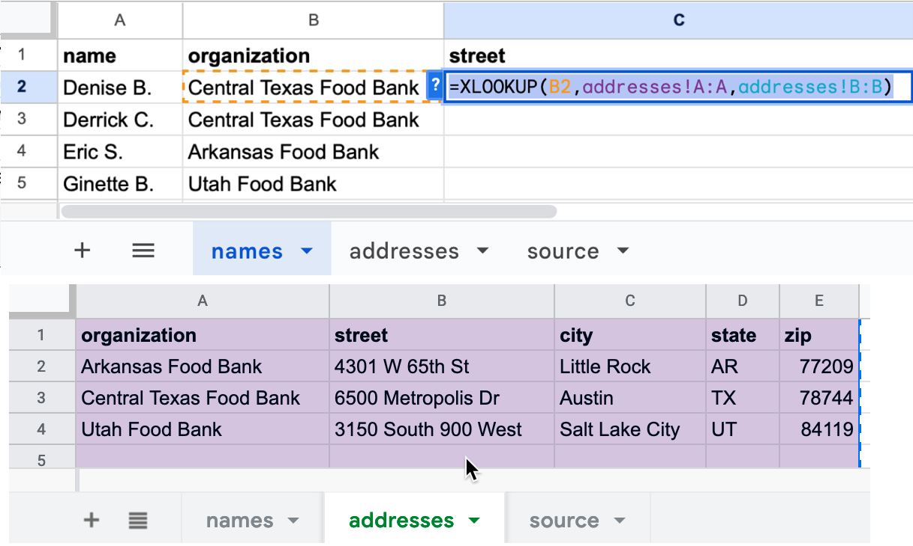
Figure 14.36: The XLOOKUP formula in cell C2 of the names sheet (top) searches for matches across column A in the addresses sheet and shows results from column B (bottom).
Let’s break down each part of the formula you entered in cell C2 of the names sheet:
B2 = The search_key: the cell in the organization column of the names sheet you wish to match.
'addresses'!A:A = The lookup range where you are searching for a match in the organization column of the addresses sheet.
'addresses'!B:B = The result range, meaning your desired result in the street column of the addresses sheet.
After you enter the full XLOOKUP formula, it will display the exact match for the first organization, the Central Texas Food Bank, whose address is 6500 Metropolis Dr. Click and hold down on the blue dot in the bottom-right corner of cell C2, and drag your crosshair cursor across columns D to F and let go, which will automatically paste and update the formula for the city, state, and zip columns, as shown in Figure Figure 14.37.
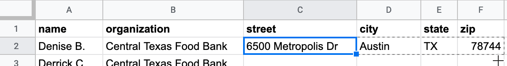
Figure 14.37: Click on cell C2, then hold-and-drag the bottom-right blue dot across columns D to F, which automatically pastes and updates the formula.
Finally, use the same hold-and-drag method to paste and update the formula downward to fill in all rows, as shown in Figure Figure 14.38.
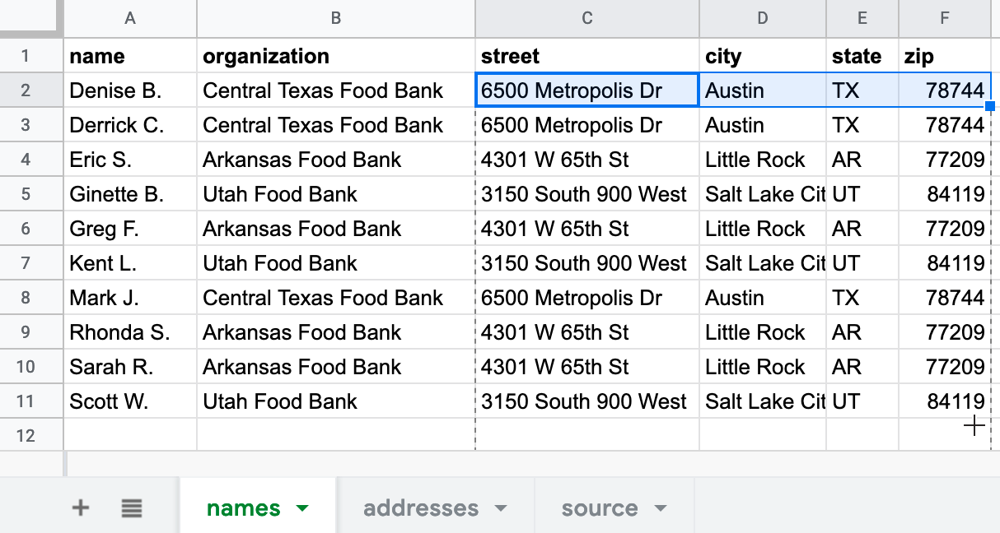
Figure 14.38: Click on cell F2, then hold-and-drag the bottom-right blue dot down to row 11, which automatically pastes and updates the formula.
Warning: If you save this spreadsheet in CSV format, your calculated results will appear in the CSV sheet, but any formulas you created to produce those results will disappear. Always keep track of your original spreadsheet to remind yourself how you constructed formulas.
You’ve successfully created a mailing list—including each person’s name, organization, and full mailing address—using the XLOOKUP function to match and paste data from two sheets. Now that you understand how to use formulas to connect different spreadsheets, the next section will teach you how to manage multiple relationships between spreadsheets with the help of a relational database.
Spreadsheet vs. Relational Database
In the previous section, you learned how the XLOOKUP function can search for matching data in columns across spreadsheets and automatically paste results. Building on that concept, let’s distinguish between a spreadsheet and a relational database, and under what circumstances it might be wiser to use the latter.
A spreadsheet is sometimes called a “flat-file database” because all of the records are stored in rows and columns in a single table. For example, if you kept a single spreadsheet of US food bank staff, every row would list an individual person, organization, and addresses, just like the mailing list we created in Figure Figure 14.38 in the prior section on XLOOKUP.
But keeping all of your data in a single spreadsheet can raise problems. For example, it contains lots of duplicated entries. For people who all work at the same food bank, each row contains a duplicate of that organization’s address. If an organization moves to a new location, you need to update all of the rows that contain those addresses. Or if two organizations merge together under a new name, you need to update all of the rows for individuals affected by that change. While keeping all of your information organized in a single spreadsheet initially sounds like a good idea, when your dataset grows in size and internal relationships (such as tracking people who are connected to organizations, etc.), continually updating every row becomes a lot of extra work.
Instead of a single spreadsheet, consider using a relational database, which organizes information into separate sheets (also known as tables), but continually maintains the relevant connections between them. Look back at the two-sheet problem we presented in Figure Figure 14.34 at the beginning of the XLOOKUP section. The first sheet lists individual people at each food bank, the second sheet lists the address for each food bank, and the two sheets share a column named organization that shows how they are related. Relational databases can save you time. For example, if you update an organization’s address in one sheet, the linked sheet will automatically reflect this change in every row for staff who work at that organization.
Although Google Sheets is a great spreadsheet, it’s not a relational database. Instead, consider a better tool such as Airtable, which allows you to create relational databases in your web browser with up to 1,200 free records (or more with the paid version), using existing templates or your own designs. Airtable enables data migration by importing or exporting all records in CSV format, and it also supports real-time editor collaboration with co-workers.
To demonstrate, we imported both of the Google Sheets above into this live Airtable database called Food Banks sample, which anyone with the link can view, but only we can edit. At the top are tabs to view each sheet, named people and food banks. To transform this into a relational database, we used Airtable settings to link the organization column in the people sheet to the food banks sheet, where the addresses are stored, as shown in Figure Figure 14.39. In our editable version, we double-clicked on the column name, then selected Link to another record in the drop-down menu, to connect it to another tab.
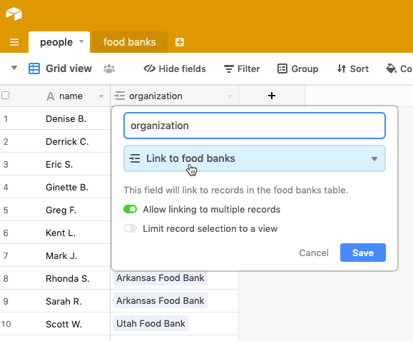
Figure 14.39: In this Airtable sample, we linked the organization column in the people sheet to the food banks sheet.
In our Airtable sample, click on a linked row to expand it and view related data. For example, if you click and expand on the first row the people sheet, their organization’s full address appears from the food banks sheet, as shown in Figure ?fig-airtable-expand. In our editable version, if we update the address for one organization in the food banks sheet, it’s automatically changed for all employees linked to that organization in the people sheet. In addition, Airtable allows you to sort, filter, and create different views of your data that you can share with others, a topic we’ll cover in Chapter 9: Embed on the Web. See more about its features in the Airtable Support page.
In this Airtable demo, click on a row in one sheet to expand and view its linked data in another sheet.
It’s important to understand the conceptual differences between a “flat-file” spreadsheet and a relational database to help you determine when to use one tool versus another. As you’ve learned in the sections above, spreadsheets are your best choice to begin organizing and analyzing your data, using methods such as sorting, filtering, pivoting, and lookup, to help reveal the underlying stories that you may wish to visualize. But relational databases are your best choice when maintaining large amounts of data with internal links, like one-to-many relationships, such as an organization with several employees.
Summary
If you’re one of the many people who “never really learned” about spreadsheets in school or on the job, or if you’ve taught yourself bits and pieces along the way, we hope that this chapter has successfully strengthened your skills. All of the subsequent chapters in this book, especially those on designing interactive charts in Chapter 6 and interactive maps in Chapter 7, require a basic level of familiarity with spreadsheets. In addition to serving as incredible time-savers when it comes to tedious data tasks, the spreadsheet tools and methods featured above are designed to help you share, sort, calculate, pivot, and lookup matching data, with the broader goal of visualizing your data stories.
The next chapter describes strategies for finding and questioning your data, particularly on open data sites operated by governmental and non-profit organizations, where you’ll also need spreadsheet skills to download and organize public information.
15 Find and Question Your Data
In the early stages of a visualization project, we often start with two interrelated issues: Where can I find reliable data?, and after you find something, What does this data truly represent? If you leap too quickly into constructing charts and maps without thinking deeply about these dual issues, you run the risk of creating meaningless, or perhaps worse, misleading visualizations. This chapter breaks down both of these broad issues by providing concrete strategies to guide your search, understand debates about public and private data, mask or aggregate sensitive data, navigate a growing number of open data repositories, source your data origins, and recognize bad data. Finally, once you’ve found some files, we propose some ways to question and acknowledge the limitations of your data.
Information does not magically appear out of thin air. Instead, people collect and publish data, with explicit or implicit purposes, within the social contexts and power structures of their times. As data visualization advocates, we strongly favor evidence-based reasoning over less-informed alternatives. But we caution against embracing so-called data objectivity, since numbers and other forms of data are not neutral. Therefore, when working with data, pause to inquire more deeply about Whose stories are told? and Whose perspectives remain unspoken? Only by asking these types of questions, according to Data Feminism authors Catherine D’Ignazio and Lauren Klein, will we “start to see how privilege is baked into our data practices and our data products.”9
Guiding Questions for Your Search
For many people, a data search is simply googling some keywords on the web. Sometimes that works, sometimes not. When that approach flounders, we reflect on the many lessons we’ve learned about data-hunting while working alongside talented librarians, journalists, and researchers. Collectively, they taught us a set of guiding questions that outline a more thoughtful process about how to search for data:
What exactly is the question you’re seeking to answer with data?
Literally write it down—in the form of a question, punctuated with a question mark at the end—to clarify your own thinking, and also so that you can clearly communicate it to others who can assist you. All too often, our brains automatically leap ahead to try to identify the answer, without reflecting on the best way frame the question in a way that does not limit the range of possible outcomes.
Look back at data visualization projects that made a lasting impression on you to identify the underlying question that motivated them. In their coverage of the US opioid epidemic, the Washington Post and the West Virginia Charleston Gazette-Mail successfully fought a legal battle to obtain a US Drug Enforcement Agency database that the federal government and the drug industry sought to keep secret. In 2019, a team of data journalists published the database with interactive maps to answer one of their central questions: How many prescription opioid pills were sent to each US county, per capita, and which companies and distributors were responsible? Their maps revealed high clusters in several rural Appalachian counties that received over 150 opioid pills per resident, on average, each year from 2006 to 2014. Moreover, only six companies distributed over three-quarters of the 100 billion oxycodone and hydrocodone pills across the US during this period: McKesson Corp., Walgreens, Cardinal Health, AmerisourceBergen, CVS and Walmart.10 Even if you’re not working with data as large or as controversial as this one, the broader lesson is to clearly identify the question you’re seeking to answer.
Also, it’s perfectly normal to revise your question as your research evolves. For example, Jack and his students once began a data project by naively asking What were Connecticut public school test scores in the 1960s? Soon we discovered that standardized state-level school testing as we know it today did not appear in states like Connecticut until the mid-1980s school accountability movement. Even then, results were not widely visible to the public until newspapers began to publish them once a year in print in the 1990s. Later, real estate firms, school-ratings companies, and government agencies began to publish data continuously on the web as the Internet expanded in the late 1990s and early 2000s. Based on what we learned, we revised our research question to When and how did Connecticut homebuyers start to become aware of school test scores, and how did these influence the prices they were willing to pay for access to selected public school attendance areas?11 Be prepared to refine your question when the evidence leads you in a better direction.
What types of organizations may have collected or published the data you seek?
If a governmental organization may have been involved, then at what level: local, regional, state/provincial, national, or international? Which branch of government: executive, legislative, judicial? Or which particular governmental agency might have been responsible for compiling or distributing this information? Since all of these different structures can be overwhelming, reach out to librarians who are trained to work with government documents and databases, often at state government libraries, or at local institutions participating in the US Federal Depository Library Program. Or might the data you seek have been compiled by a non-governmental organization, such as academic institutions, journalists, non-profit groups, or for-profit corporations? Figuring out which organizations might have collected and published the data can help point you to the digital or print materials they typically publish, and most appropriate tools to focus your search in that particular area.
What level(s) of data are available?
Is information disaggregated into individual cases or aggregated into larger groups? Smaller units of data allow you to make more granular interpretations, while larger units can help you to identify broader patterns. Librarians can help us to decipher how and why organizations publish data at different levels. For example, the US Census collects data every ten years about each person residing in the nation. Under law, individual-level data about each person is confidential for 72 years, then released to the public. Currently, you can search for specific individuals in the 1940 Census and earlier decades at the US National Archives and other websites, as shown in Figure Figure 15.1.
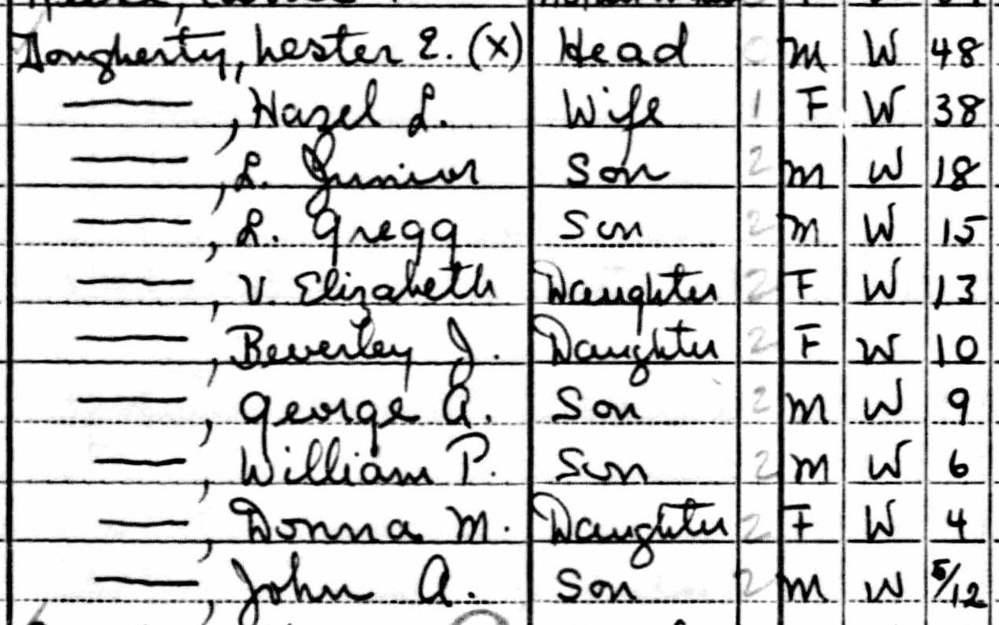
Figure 15.1: Excerpt of individual-level 1940 US Census data for Jack’s father’s family.
Meanwhile, the US Census publishes data for current years by aggregating individual records into larger geographic areas to protect people’s privacy. Using the Standard Hierarchy of US Census Geographic Entities, we created a simplified map in Figure ?fig-census-divisions-hartford to show the relationships between some of the most common geographic areas for Hartford, Connecticut:
State
County
County subdivisions (equivalent to Connecticut towns and cities)
Census tracts (designated areas, roughly 1,200–8,000 people)
Block groups (sub-unit of tracts, roughly 600–3,000 people)
Census blocks (sub-unit of block groups, but not always a city block)12
Common US census geographies around Hartford, Connecticut, 2019. Zoom out in the interactive version for county and state boundaries.
Have prior publications drawn on similar data, and if so, how can we trace their sources?
Some of our best ideas began when reading an article or book that described its source of evidence, and we imagined new ways to visualize that data. Several times we have stumbled across a data table in a print publication, or perhaps an old web page, which sparked our interest in tracking down a newer version to explore. Even outdated data helps by demonstrating how someone previously collected it at one point in time. Follow the footnotes to track down its origins. Use Google Scholar and more specialized research databases (ask librarians for assistance if needed) to track down the source of previously-published data. One bonus is that if you can locate more current data, you may be able to design a visualization that compares change over time.
What if no one has collected the data you’re looking for?
Sometimes this happens due to more than a simple oversight. In Data Feminism, Catherine D’Ignazio and Lauren Klein underscore how issues of data collection “are directly connected to larger issues of power and privilege” by recounting a story about tennis star Serena Williams. When Williams experienced life-threatening complications while giving birth to her daughter in 2017, she called public attention to the way that she, a Black woman, needed to advocate for herself in the hospital. After her experience, she wrote on social media that “Black women are over 3 times more likely than white women to die from pregnancy- or childbirth-related causes,” citing the US Centers for Disease Control and Prevention (CDC). When journalists followed up to investigate further, they discovered the absence of detailed data on maternal mortality, and what a 2014 United Nations report described as a “particularly weak” aspect of data collection in the US healthcare system. Journalists reported that “there was still no national system for tracking complications sustained in pregnancy and childbirth,” despite comparable systems for other health issues such as heart attacks or hip replacements. Power structures are designed to count people whose lives are highly valued, or under a high degree of surveillance. D’Ignazio and Klein call on us to critically examine these power systems, collect data to counter their effects, and make everyone’s labor in this process more visible.13 If no one has collected the data you’re looking for, perhaps you can make valuable steps to publicly recognize the issue, and possibly gather it yourself.
Hunting for data involves much more than googling keywords. Deepen your search by reflecting on the types of questions that librarians, journalists, and other researchers have taught us to ask: What types of organizations might—or might not—have collected the data? At what levels? At any prior point in time? And under what social and political contexts? In the next section, you’ll learn more about related issues to consider over public and private data.
Public and Private Data
When searching for data, you also need to be informed about debates regarding public and private data. Not only do these debates influence the kinds of data you might be able to legally use in your visualizations, but they also raise deeper ethical issues about the extent to which anyone should be able to collect or circulate private information about individuals. This section offers our general observations on these debates, based primarily on our context in the United States. Since we are not lawyers (thank goodness!), please consult with legal experts for advice about your specific case if needed.
The first debate asks: To what extent should anyone be allowed to collect data about private individuals? Several critics of “big data” worry that governments are becoming more like a totalitarian “Big Brother” as they collect more data about individual citizens in the digital age. In the United States, concerns mounted in 2013 when whistleblower Edward Snowden disclosed how the National Security Agency conducted global surveillance using US citizen email and phone records provided by telecommunications companies. Shoshana Zuboff, a Harvard Business School professor and author of The Age of Surveillance Capitalism, warns of an equal threat posed by corporations that collect and commodify massive amounts of individually-identifiable data for profit.14 Due to the rise of digital commerce, powerful technology companies own data that you and others consider to be private:
Amazon eavesdrops and records your conversations around its Alexa home assistants, as Fowler also documents.16
Facebook follows which friends and political causes you favor, and Fowler also reports how it tracks your off-Facebook activity, such as purchases made at other businesses, to improve its targeted advertising.17
Some point out that “big data” collected by large corporations can offer public benefits. For example, Apple shared its aggregated mobility data collected from iPhone users to help public health officials compare which populations stayed home rather than travel during the Covid pandemic. But others point out that corporations are largely setting their own terms for how they collect data and what they can do with it. Although California has begun to implement its Consumer Privacy Act in 2020, which promises to allow individuals the right to review and delete the data that companies collect about them, US state and federal government has not fully entered this policy arena. If you work with data that was collected from individuals by public or private organizations, learn about these controversies to help you make wise and ethical choices on what to include in your visualizations.
The second question is: When our government collects data, to what extent should it be publicly available? In the United States, the 1966 Freedom of Information Act and its subsequent amendments have sought to open access to information in the federal government, with the view that increased transparency would promote public scrutiny and pressure on officials to make positive changes. In addition, state governments operate under their own freedom of information laws, sometimes called “open records” or “sunshine laws.” When people say they’ve submitted a “FOI,” it means they’ve sent a written request to a government agency for information that they believe should be public under the law. But federal and state FOIA laws are complex, and courts have interpreted cases in different ways over time, as summarized in the Open Government Guide by the Reporters Committee for Freedom of the Press, and also by the National Freedom of Information Coalition. Sometimes government agencies quickly agree and comply with a FOI request, while other times they may delay or reject it, which may pressure the requester to attempt to resolve the issue through time-consuming litigation. Around the world, over 100 nations have their own version of freedom of information laws, with the oldest being Sweden’s 1766 Freedom of the Press Act, but these laws vary widely.
In most cases, individual-level data collected by US federal and state governments is considered private, except in cases where our governmental process has determined that a broader interest is served by making it public. To illustrate this distinction, let’s begin with two cases where US federal law protects the privacy of individual-level data:
Patient-level health data is generally protected under the Privacy Rule of the Health Insurance Portability and Accountability Act, commonly known as HIPAA. In order for public health officials to track broad trends about illness in the population, individual patient data must be aggregated into larger anonymized datasets in ways that protect specific people’s confidentiality.
Similarly, student-level education data is generally protected under the Family Educational Rights and Privacy Act, commonly known as FERPA. Public education officials regularly aggregate individual student records into larger anonymized public datasets to track the broad progress of schools, districts, and states, without revealing individually-identifiable data.
On the other hand, here are three cases where government has ruled that the public interest is served by making individual-level data widely available:
Individual contributions to political candidates are public information in the US Federal Election Commission database, and related databases by non-profit organizations, such as Follow The Money by the National Institute on Money in Politics and Open Secrets by the Center for Responsive Politics. The latter two sites describe more details about donations submitted through political action committees and controversial exceptions to campaign finance laws. Across the US, state-level political contribution laws vary widely, and these public records are stored in separate databases. For example, anyone can search the Connecticut Campaign Reporting Information System to find donations made by the first author to state-level political campaigns.
Individual property ownership records are public, and increasingly hosted online by many local governments. A privately-funded company compiled this US public records directory with links to county and municipal property records, where available. For example, anyone can search the property assessment database for the Town of West Hartford, Connecticut to find property owned by the first author, its square footage, and purchase price.
Individual salaries for officers of tax-exempt organizations are public, which they are required to file on Internal Revenue Service (IRS) 990 forms each year. For example, anyone can search 990 forms on ProPublica’s Nonprofit Explorer, and view the salary and other compensation of the top officers of the first author’s employer and the second author’s alma mater, Trinity College in Hartford, Connecticut.
Social and political pressures are continually changing the boundary over what types of individual-level data collected by government should be made publicly available. For example, the Black Lives Matter movement has gradually made more individual-level data about violence by police officers more widely available. For example, in 2001 the State of New Jersey required local police departments to document any “use of force” by officers, whether minor or major, such as firing their gun. But no one could easily search these paper forms until a team of journalists from NJ Advance Media submitted over 500 public records requests and compiled The Force Report digital database, where anyone can look up individual officers and investigate patterns of violent behavior. Similarly, a team of ProPublica journalists created The NYPD Files database, which now allows anyone to search closed cases of civilian complaints against New York City police officers, by name or precinct, for patterns of substantiated allegations.
Everyone who works with data needs to get informed about key debates over what should be public or private, become active in policy discussions about whose interests are being served, and contribute to making positive change. In the next section, you’ll learn about ethical choices you’ll need to make when working with sensitive individual-level data.
Mask or Aggregate Sensitive Data
Even if individual-level data is legally and publicly accessible, each of us is responsible for making ethical decisions about if and how to use it when creating data visualizations. When working with sensitive data, some ethical questions to ask are: What are the risks that publicly sharing individual-level data might cause more harm than good? and Is there a way to tell the same data story without publicly sharing details that may intrude on individual privacy? There are no simple answers to these ethical questions, since every situation is different and requires weighing the risks of individual harm versus the benefits of broader knowledge about vital public issues. But this section clarifies some of the alternatives to blindly redistributing sensitive information, such as masking and aggregating individual-level data.
Imagine that you’re exploring crime data and wish to create an interactive map about the frequency of different types of 911 police calls across several neighborhoods. If you search for public data about police calls, as described in the Open Data section in this chapter, you’ll see different policies and practices for sharing individual-level data published by police call centers. In many US states, information about victims of sexual crimes or child abuse (such as the address where police were sent) is considered confidential and exempt from public release, so it’s not included in the open data. But some police departments publish open data about calls with the full address for other types of crimes, in a format like this:
| Date | Full Address | Category |
| Jan 1 | 1234 Main St | Aggravated Assault |
While this information is publicly available, it’s possible that you could cause some type of physical or emotional harm to the victims by redistributing detailed information about a violent crime with their full address in your data visualization.
One alternative is to mask details in sensitive data. For example, some police departments hide the last few digits of street addresses in their open data reports to protect individual privacy, while still showing the general location, in a format like this:
| Date | Masked Address | Category |
| Jan 1 | 1XXX Main St | Aggravated Assault |
You can also mask individual-level data when appropriate, using methods similar to the Find and Replace method with your spreadsheet tool as in Chapter 4: Clean Up Messy Data.
Another strategy is to aggregate individual-level data into larger groups, which can protect privacy while showing broader patterns. In the example above, if you’re exploring crime data across different neighborhoods, grouping individual 911 calls into larger geographic areas, such as census tracts or area names, in a format like this:
| Neighborhood | Crime Category | Frequency |
| East Side | Aggravated Assault | 13 |
| West Side | Aggravated Assault | 21 |
In the next section, you’ll learn how to explore datasets that governments and non-governmental organizations have intentionally shared with the public.
Open Data Repositories
Over the past decade, an increasing number of governmental and non-governmental organizations around the globe have begun to pro-actively share public data through open data repositories. While some of these datasets were previously available as individual files on isolated websites, these growing networks have made open data easier to find, enabled more frequent agency updates, and sometimes support live interaction with other computers. Open data repositories often include these features:
View and Export: At minimum, open data repositories allow users to view and export data in common spreadsheet formats, such as CSV, ODS, and XLSX. Some repositories also provide geographical boundary files for creating maps.
Built-in Visualization Tools: Several repositories offer built-in tools for users to create interactive charts or maps on the platform site. Some also provide code snippets for users to embed these built-in visualizations into their own websites, which you’ll learn more about in Chapter 9: Embed on the Web.
Application Programming Interface (API): Some repositories provide endpoints with code instructions that allow other computers to pull data directly from the platform into an external site or online visualization. When repositories continuously update data and publish an API endpoint, it can be an ideal way to display live or “almost live” data in your visualization, which you’ll learn more about in Chapter 12: Leaflet Map Templates.
Due to the recent growth of open data repositories, especially in governmental policy and scientific research, there is no single website that lists all of them. Instead, we list just a few sites from the US and around the globe to spark readers’ curiosity and encourage you to dig deeper:
Data.gov, the official repository for US federal government agencies.
Data.census.gov, the main platform to access US Census Bureau data. The Decennial Census is a full count of the population every ten years, while the American Community Survey (ACS) is an annual sample count that produces one-year and five-year estimates for different census geographies, with margins of error.
Eurostat, the statistical office of the European Union.
IPUMS, Integrated Public Use Microdata Series, the world’s largest individual-level population database, with microdata samples from US and international census records and surveys, hosted by the University of Minnesota.
In addition, better-resourced higher-education libraries and other organizations may pay subscription fees that allow their students and staff to access “closed” data repositories. For example, Social Explorer offers decades of demographic, economic, health, education, religion, and crime data for local and national geographies, primarily for the US, Canada, and Europe. Previously, Social Explorer made many files available to the public, but it now requires a paid subscription or 14-day free trial. Also, Policy Map provides demographic, economic, housing, and quality of life data for US areas, and makes some publicly visible in its Open Map view, but you need a subscription to download them.
Now that you’ve learned more about navigating open data repositories, the next section will teach you ways to properly source the data that you discover.
Source Your Data
When you find data, write the source information inside the downloaded file or a new file you create. Add key details about its origins, so that you—or someone else in the future—can replicate your steps. We recommend doing this in two places: the spreadsheet file name and a source notes tab. As a third step, make a backup sheet of your data.
The first step is to label every data file that you download or create. All of us have experienced “bad file names” like these, which you should avoid:
data.csv
file.ods
download.xlsx
Write a short but meaningful file name. While there’s no perfect system, a good strategy is to abbreviate the source (such as census or worldbank or eurostat), add topic keywords, and a date or range. If you or co-workers will be working on different versions of a downloaded file, include the current date in YYYY-MM-DD (year-month-date) format. If you plan to upload files to the web, type names in all lower-case and replace blank spaces with dashes (-) or underscores (_). Better file names look like this:
town-demographics-2019-12-02.csv
census2010_population_by_county.ods
eurostat-1999-2019-co2-emissions.xlsx
The second step is to save more detailed source notes about the data on a separate tab inside the spreadsheet, which works for multi-tab spreadsheet tools such as Google Sheets, LibreOffice, and Excel. In Google Sheets, click the plus symbol on the lower tabs to a new tab, then rename it as notes, as shown in Figure Figure 15.2. Describe the origins of the data, a longer description for any abbreviated labels, when it was last updated, and add your own name and give credit to collaborators who worked with you. If you need to create a CSV file from this data, give it a parallel name to your multi-tabbed spreadsheet file so that you can easily find your original source notes again in the future.
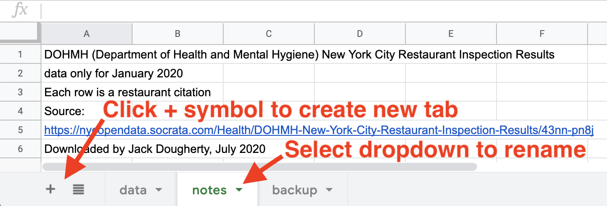
Figure 15.2: Create separate Google Sheet tabs for data, notes, and backup.
A third step is to make a backup of the original data before cleaning or editing it. For a simple one-sheet file in a multi-tab spreadsheet tool, right-click on the tab containing the data to make a duplicate copy in another tab, also shown in Figure Figure 15.2. Clearly label the new tab as a backup and leave it alone! For CSV files or more complex spreadsheets, create a separate backup file. To be clear, these simple backup strategy only helps you from making non-fixable edits to your original data. Make sure you have a broader strategy to backup your files from your computer or cloud account in case either of those are deleted or those systems crash.
Make a habit of using these three sourcing strategies—filenames, notes, and backups—to increase the credibility and replicability of your data visualizations. In the next section, we’ll explore more ways to reduce your chances of making “bad data” errors.
Recognize Bad Data
When your data search produces some results, another key step is to open the file, quickly scroll through the content, and look for any warning signs that it might contain “bad data.” If you fail to catch a problem in your data at an early stage, it could lead to false conclusions and diminish the credibility of all of your work. Fortunately, members of the data visualization community have shared multiple examples of problems we’ve previously encountered, to help save newer members from making the same embarrassing mistakes. One popular crowd-sourced compilation by data journalists was The Quartz Guide to Bad Data. Watch out for spreadsheets containing these “bad data” warning signs:
Missing values: If you see blank or “null” entries, does that mean data was not collected? Or maybe a respondent did not answer? If you’re unsure, find out from the data creator. Also beware when humans enter a 0 or -1 to represent a missing value, without thinking about its consequences on running spreadsheet calculations, such as SUM or AVERAGE.
Missing leading zeros: One of the zip codes for Hartford, Connecticut is 06106. If someone converts a column of zip codes to numerical data, it will strip out the leading zero and appear as 6106. Similarly, the US Census Bureau lists every place using a FIPS code, and some of these also begin with a meaningful zero character. For example, the FIPS code for Los Angeles County, California is 037, but if someone accidentally converts a column of text to numbers, it will strip out the leading zero and convert that FIPS code to 37, which may break some functions that rely on this code being a 3-digit number, or may make some people interpret it as a 2-digit state code for North Carolina instead.
65536 rows or 255 columns: These are the maximum number of rows supported by older-style Excel spreadsheets, or columns supported by Apple Numbers spreadsheet, respectively. If your spreadsheet stops exactly at either of these limits, you probably have only partial data. As we wrote this, the BBC reported that Public Health England lost thousands of Covid test results due to this row limit in older Excel spreadsheets.
Inconsistent date formats: For example, November 3rd, 2020 is commonly entered in spreadsheets in the US as 11/3/2020 (month-day-year), while people in other locations around the globe commonly type it as 3/11/2020 (day-month-year). Check your source.
Dates such as January 1st 1900, 1904, or 1970: These are default timestamps in Excel spreadsheets and Unix operating systems, which may indicate the actual date was blank or overwritten.
Dates similar to 43891: When you type March 1 during the year 2020 into Microsoft Excel, it automatically displays as 1-Mar, but is saved using Excel’s internal date system as 43891. If someone converts this column from date to text format, you’ll see Excel’s 5-digit number, not the dates you’re expecting.
Other ways to review the quality of data entry in any spreadsheet column are to sort or pivot the data as described in Chapter 2, or to create a histogram as you will learn in Chapter 6. These methods enable you to quickly inspect the range of values that appear in a column and to help you identify bad data.
Also beware of bad data due to poor geocoding, when locations have been translated into latitude and longitude coordinates that cannot be trusted. For example, visualization expert Alberto Cairo describes how data appeared to show that Kansas residents viewed more online pornography than other US states. But on closer examination, the internet protocol (IP) addresses of many viewers could not be accurately geocoded, perhaps because they sought to maintain their privacy by using virtual private networks (VPN) to disguise their location. As a result, the geocoding tool automatically placed large numbers of users in the geographic center of the contiguous US, which happens to be in Kansas.18 Similarly, when global data is poorly geocoded, the population booms on imaginary “Null Island,” which is actually a weather buoy located in the Atlantic Ocean at the intersection of the prime meridian and the equator, where the latitude and longitude coordinates are 0,0. For these reasons, carefully inspect geocoded data for errors caused by tools that mistakenly place results in the exact center of your geography, as shown in Figure Figure 15.3.
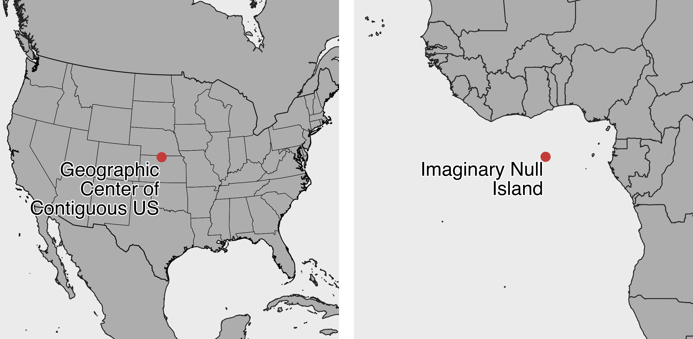
Figure 15.3: Beware of bad geocoding that automatically places data in the geographic center of the contiguous United States (in northern Kansas), or on imaginary Null Island in the Atlantic Ocean (the location of coordinates 0,0).
What should you do when you discover bad data in your project? Sometimes small issues are relatively straightforward and do not call into question the integrity of the entire dataset. Sometimes you can fix these using methods we describe in Chapter 4: Clean Up Messy Data. But larger issues can be more problematic. Follow the source of your data stream to try to identify where the issue began. If you cannot find and fix the issue on your own, contact the data provider to ask for their input, since they should have a strong interest in improving the quality of the data. If they cannot resolve an important data issue, then you need to pause and think carefully. In this case, is it wiser to continue working with problematic data and add a cautionary note to readers, or should you stop using the dataset entirely and call attention to its underlying problem? These are not easy decisions, and you should ask for opinions from colleagues. In any case, never ignore the warning signs of bad data.
Finally, you can help to prevent bad data from occurring by following key steps we’ve outlined above. Give meaningful names to your data files, and add source notes in a separate tab about when and where you obtained it, along with any definitions or details about what it claims to measure and how it was recorded. Explain what any blanks or null values mean, and avoid replacing those with zeroes or other symbols. Always watch out for formatting issues when entering data or running calculations in spreadsheets.
In the next section, you’ll learn more questions to help you understand your data at a deeper level.
Question Your Data
Now that you’ve found, sourced, and inspected some files, the next step is to question your data by looking more deeply than what appears at its surface level. Read the metadata, which are the notes that describe the data and its sources. Examine the contents to reflect on what is explicitly stated—or unstated—to better understand its origin, context, and limitations. You cannot program a computer to do this step for you, as it requires critical-thinking skills to see beyond the characters and numbers appearing on your screen.
One place to start is to ask: What do the data labels really mean? and to consider these potential issues:
What are full definitions for abbreviated column headers?
Spreadsheets often contain abbreviated column headers, such as Elevation or Income. Sometimes the original software limited the number of characters that could be entered, or the people who created the header names preferred to keep them short. But was Elevation entered in meters or feet? An abbreviated data label does not answer that key question, so you’ll need to check the source notes, or if that’s not available, compare elevation data for a specific point in the dataset to a known source that includes the measurement unit. Similarly, if you’re working with US Census data, does the Income abbreviation refer to per person, per family, or per household? Also, does the value reflect the median (the mid-point in a range of numbers) or the mean (the average, calculated by adding up the sum and dividing by the number of values). Check definitions in the source notes.
How exactly was the data collected?
For example, was Elevation for a specific location measured by a GPS unit on the ground? Or was the location geocoded on a digital map that contains elevation data? In most cases the two methods will yield different results, and whether that matters depends on the degree of precision required in your work. Similarly, when the US Census reports data from its annual American Community Survey (ACS) estimates for Income and other variables, these are drawn from small samples of respondents for lower levels of geography, such as a census tract with roughly 4,000 residents, which can generate very high margins of error. For example, it’s not uncommon to see ACS estimates for a census tract with a mean family income of $50,000—but also with a $25,000 margin of error—which tells you that the actual value is somewhere between $25,000 and $75,000. As a result, some ACS estimates for small geographic units are effectively meaningless. Check how data was recorded, and note any reported margins of error, in the source notes. See also how to create error bars in Chapter 6: Chart Your Data.
To what extent is the data socially constructed?
What do the data labels reveal or hide about how people defined categories in different social and political contexts, which differ across place and time? For example, we designed an interactive historical map of racial change for Hartford County, Connecticut using over 100 years of US Census data. But Census categories for race and ethnicity shifted dramatically during those decades because people in power redefined these contested terms and reassigned people to different groups.19 Into the 1930s, US Census officials separated “Native White” and “Foreign-born White” in reports, then combined and generally reported these as “White” in later decades. Also, Census officials classified “Mexican” as “Other races” in 1930, then moved this group back to “White” in 1940, then reported “Puerto Rican or Spanish surname” data in 1960, followed by “Hispanic or Latino” as an ethnic category distinct from race in later decades. Finally, the Census replaced “Negro” with “Black” in 1980, and finally dropped mutually-exclusive racial categories in 2000, so that people could choose more than one. As a result, these historical changes in the social construction of race and ethnicity influenced how we designed our map to display “White” or “White alone” over time, with additional census categories relevant to each decade shown in the pop-up window, with our explanation about these decisions in the caption and source notes. There is no single definitive way to visualize socially-constructed data when definitions change across decades. But when you make choices about data, describe your thought process in the notes or companion text.
What aspects of the data remain unclear or uncertain?
Here’s a paradox about working with data: some of these deep questions may not be fully answerable if the data was collected by someone other than yourself, especially if that person came from a distant place, or time period, or a different position in a social hierarchy. But even if you cannot fully answer these questions, don’t let that stop you from asking good questions about the origins, context, and underlying meaning of your data. Our job is to tell true and meaningful stories with data, but that process begins by clarifying what we know—and what we don’t know—about the information we’ve gathered. Sometimes we can visually depict its limitations through error bars, as you’ll learn in the chart design in Chapter 6, and sometimes we need to acknowledge uncertainty in our data stories, as we’ll discuss in Chapter 15.
Summary
This chapter reviewed two broad questions that everyone should ask during the early stages of their visualization project: Where can I find data? and What do I really know about it? We broke down both questions into more specific parts to develop your knowledge and skills in guiding questions for your search, engaging with debates over public and private data, masking and aggregating sensitive data, navigating open data repositories, sourcing data origins, recognizing bad data, and questioning your data more deeply than its surface level. Remember these lessons as you leap into the next few chapters on cleaning data and creating interactive charts and maps. We’ll come back to related issues on this topic in Chapter 14: Detect Lies and Reduce Bias.
16 Clean Up Messy Data
More often than not, datasets will be messy and hard to visualize right away. They will have missing values, dates in different formats, text in numeric-only columns, multiple items in the same columns, various spellings of the same name, and other unexpected things. See Figure Figure 16.1 for inspiration. Don’t be surprised if you find yourself spending more time cleaning up data than you do analyzing and visualizing it.
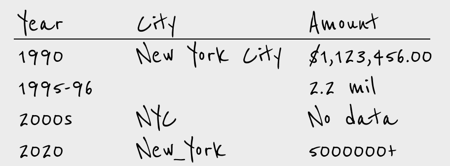
Figure 16.1: More often than not, raw data looks messy.
One of the newest reasons to work with your data in Google Sheets is to utilize their Smart Cleanup feature, which helps to identify and suggest corrections for inaccurate data. The tool opens a sidebar menu that spots potential problems, and you decide whether or not to accept its suggestion.
Learn what types of issues Smart Cleanup catches, and which ones it misses, using our sample data on the ten most populated nations in the world, which contains some problems that we intentionally added.
Go to Data > Data Cleanup > Cleanup suggestions and view items that appear in the sidebar, as shown in Figure Figure 16.2.
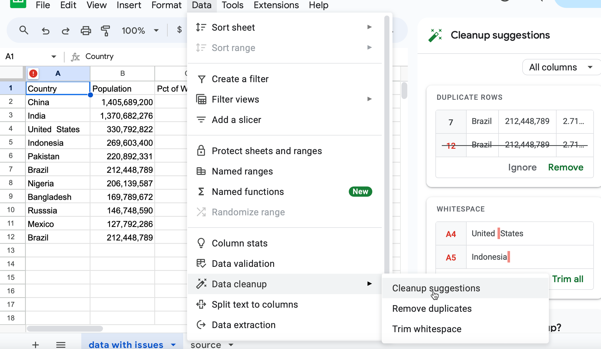
Figure 16.2: Go to Data Cleanup to review potential errors.
The Smart Cleanup feature successfully caught a duplicate entry (row 12), and whitespaces in cells A4 and A5. Click the green Remove and Trim all buttons to confirm that Google Sheets should clean them up.
But can you spot these other errors that Smart Cleanup missed?
In cell A10, Russsia is misspelled with an extra s.
In cell C6, Pakistan’s share of the world population appears in decimal form, not percentage.
In cell D4, the US date appears in a format unlike the other entries. If you’re familiar with different international date formats, you’ll also wonder if 12/10/2020 is meant to be MM/DD/YYYY format that’s commonly used in the US, or the DD/MM/YYYY format that’s commonly used elsewhere. Smart Cleanup cannot answer this for you.
The Google Sheets Smart Cleanup feature is a good place to start. But if your data is really messy, you may need to turn to more sophisticated tools described later in this chapter, such as OpenRefine. In the next section you’ll learn another clean-up method that works in any spreadsheet: find and replace with a blank entry.
Find and Replace with Blank
One of the simplest and most powerful cleanup tools inside every spreadsheet is the Find and Replace command. You can also use it to bulk-change different spellings of the same name, such as shortening a country’s name (from Republic of India to India), or expanding a name (from US to United States), or translating names (from Italy to Italia). Also, you can use find and replace with a blank entry to remove units of measurement that sometimes reside in the same cells as the numbers (such as changing 321 kg to 321).
Let’s look at Find and Replace in practice. A common problem with US Census data is that geographic names contain unnecessary words. For example, when you download data on the population of Connecticut towns, the location column will contain the word “town” after every name:
Hartford town
New Haven town
Stamford town
But usually you want a clean list of towns, either to display in a chart or to merge with another dataset, like this:
Hartford
New Haven
Stamford
Let’s use Find and Replace on a sample US Census file we downloaded with 169 Connecticut town names and their populations, to remove the unwanted “town” label after each place name.
Open the CT Town Geonames file in Google Sheets, sign in with your account, and go to File > Make a Copy to create a version you can edit in your Google Drive.
Select the column you want to modify by clicking its header. If you don’t select a column, you will be searching and replacing in the entire spreadsheet.
In the Edit menu, choose Find and replace. You will see the window like is shown in Figure Figure 16.3.
In the Find field, type town, and be sure to insert a blank space before the word. If you do not insert a space, you will accidentally remove town from places such as Newtown. Also, you’ll accidentally create trailing spaces, or whitespace at the end of a line without any other characters following it, which can cause troubles in the future.
Leave the Replace with field blank. Do not insert a space. Just leave it empty.
The Search field should be set to the range you selected in step 2, or All sheets if you didn’t select anything.
You have the option to match case. If checked, town and Town and tOwN will be treated differently. For our purpose, you can leave match case unchecked.
Press the Replace all button. Since this sample file contains 169 towns, the window will state that 169 instances of “town” have been replaced.
Inspect the resulting sheet. Make sure that places that include town in their name, such as Newtown, remained untouched.
Figure 16.3: Find and Replace window in Google Sheets.
Transpose Rows and Columns
Sometimes you download good data, but your visualization tool requires you to transpose, or swap the rows and the columns, in order to create the chart or map you desire. This problem often arises when working with time-series or historical data, because they are treated in opposite ways in tables and charts. When designing a table, the proper method is to place dates horizontally as column headers, so that we read them from left-to-right, like this:20
But when designing a line chart in Google Sheets and similar tools, which you’ll learn in Chapter 6: Chart Your Data, we need to transpose the data so that dates run vertically down the first column, in order for the software to read them as labels for a data series, like this:
Select all of the rows and columns you wish to transpose, and go to Edit > Copy.
Scroll further down the spreadsheet and click on a cell, or open a new spreadsheet tab, and go to Edit > Paste Special > Paste Transposed, as shown in Figure Figure 16.4.
Figure 16.4: Go to Edit - Paste Special - Paste Transposed to swap rows and columns.
Tip: Google Sheets also provides a function, =transpose( -insert range- ), which, unlike Paste Special > Transpose, will prevent you from overwriting existing data in the spreadsheet.
Now that you know how to clean up data by transposing rows and columns, in the next section you’ll learn how to split data into separate columns.
Split Data into Separate Columns
Sometimes multiple pieces of data appear in a single cell, such as first and last names (John Doe), geographic coordinates (40.12,-72.12), or addresses (300 Summit St, Hartford, CT, 06106). For your analysis, you might want to split them into separate entities, so that your FullName column (with John Doe in it) becomes FirstName (John) and LastName (Doe) columns, coordinates become Latitude and Longitude columns, and your FullAddress column becomes 4 columns, Street, City, State, and Zip (postcode).
Example 1: Simple Splitting
Let’s begin with a simple example of splitting pairs of geographic coordinates, separated by commas, into separate columns.
Select the data you wish to split, either the full column or just several rows. Note that you can only split data from one column at a time.
Make sure there is no data in the column to the right of the one you’re splitting, because all data there will be written over.
Go to Data and select Split text to columns, as in Figure Figure 16.5.
Google Sheets will automatically try to guess your separator. You will see that your coordinates are now split with the comma, and the Separator is set to Detect automatically in the dropdown. You can manually change it to a comma (,), a semicolon (;), a period (.), a space character, or any other custom character (or even a sequence of characters, which we’ll discuss in Example 2 of this section).
You can rename the new columns into Longitude (first number) and Latitude (second number).
Figure 16.5: Select Data - Split text to columns to automatically separate data.
Example 2: Complex Splitting
Now, let’s look at a slightly more complicated example. Each cell contains a full address, which you want to split into four columns: street, city, state, and zipcode (postcode). But notice how the separators differ: a comma between street and city, a space between city and state, and two dashes between state and the zipcode. In this case, you’ll need to manually add some instructions to properly split the text into four columns.
Select the column and go to Data > Split text to columns to start splitting from left to right.
Google Sheets will automatically split your cell into two parts, 300 Summit St and Hartford CT--06106, using comma as a separator. (If it didn’t, just select Comma from the dropdown menu that appeared).
Now select only the second column and perform Split text to columns again. Google Sheets will automatically separate the city from the state and zip code, because it automatically chose a space as the separator. (If it did not, choose Space from the dropdown menu).
Finally, select only the third column and perform Split text to columns again. Google Sheets won’t recognize the two dashes as a separator, so you need to manually select Custom, type those two dashes (--) in the Custom separator field, as shown in Figure Figure 16.6, and press Enter. Now you have successfully split the full address into four columns.
Figure 16.6: To split the last column, select a Custom separator and manually type in two dashes.
Tip: Google Sheets will treat zip codes as numbers and will delete leading zeros (so 06106 will become 6106). To fix that, select the column, and go to Format > Number > Plain text. Now you can manually re-add zeros. If your dataset is large, consider adding zeros using the formula introduced in the following section.
Combine Data into One Column
Let’s perform the reverse action by combining data into one column with a spreadsheet formula, also called concatenation, using the ampersand symbol (&). Imagine you receive address data in four separate columns: street address, city, state, and zip code.
| Street | City | State | Zip |
| ------------- | ---------- | ------ | ----- |
| 300 Summit St | Hartford | CT | 06106 |
Using any spreadsheet, you can write a simple formula to combine (or concatenate) terms using the ampersand (&) symbol. Also, you can add separators into your formula, such as quoted space (" "), or spaces with commas (", "), or any combination of characters. Let’s try it with some sample data.
Open the Combine Separate Columns sample data in Google Sheets, sign in with your account, and go to File > Make a Copy to create a version you can edit in your Google Drive. The sheet contains addresses that are separated into four columns: street, city, state, and zip.
In column E, type a new header named location.
In cell E2, type in =A2 & ", " & B2 & ", " & C2 & " " & D2. This formula combines the four items using ampersands, and separates them with quoted commas and spaces, as shown in Figure Figure 16.7. Then press Enter.
Click cell E2 and drag the bottom-right corner cross-hair downward to fill in the rest of the column.
Figure 16.7: Use ampersands to combine items, and insert quoted spaces with commas as separators.
For further reading, we recommend Lisa Charlotte Rost’s brilliant Datawrapper blog post about cleaning and preparing your spreadsheet data for analysis and visualization.21
Spreadsheets provide helpful ways to combine data columns. In the next section, we will introduce another spreadsheet function to convert numbers to text data.
Numbers-to-Text and Remove Characters
We often need clean-up skills when working with US Census Data and similar geographic files. The US Census publishes data for different levels of boundaries, such as states, counties, and census tracts, as described in the Guiding Questions for Your Search section of this book. Each of these geographic entities is uniquely identified by a Federal Information Processing System (FIPS) code. State-level FIPS codes are 2 digits (such as 09 for Connecticut), and county-level codes are 5 digits (such as 09003 for Hartford County, Connecticut, where the first 2 digits represent the state). Further down the hierarchy, each census tract has 11 digits (such as 09003503102, which consists of 2 digits for the state, 3 for the county, and 6 for the tract). Also, note that US Census tract boundaries change over time. The FIPS codes usually look similar over time, but deep down there may be significant changes in numbering and boundary lines from 2010 to 2020. For example, see Ilya’s richly-illustrated post about Connecticut Census Tract Boundaries are Changing from 2010 to 2020 on the CT Data Collaborative blog.
When preparing to make maps with US Census tract data, you typically need to match a long FIPS code from your spreadsheet to a corresponding code in your mapping tool. But sometimes these data columns do not line up and you need to do some cleanup. For example, compare the spreadsheet of US Census tract data (on the left) and the Datawrapper map tool census tract codes (on the right), as shown in Figure Figure 16.8. The first entry on the left 9001010101 does not perfectly match the first entry on the right 001010101. We need to do a bit of data cleanup before we can match the data columns and begin mapping.
Figure 16.8: The census tract codes in the spreadsheet on the left do not match the codes in the mapping tool on the right.
In this example, we have two problems that require cleanup: format and length. The first problem is that the FIPS codes on the left side are formatted as numbers (which usually appear right-aligned in spreadsheets) while the codes on the left side are formatted as text or string data (which usually appear as left-aligned). If that was our only problem, we could fix it by selecting the column and changing it to Format > Number > Plain Text.
But the second problem is that the codes on the right side are 10 numeric digits while the tract codes on the left side are 9 text characters. Look closely and you’ll notice that the spreadsheet entries all begin with a 9, which does not appear in the mapping tool entries. Originally, the left side entries all began with 09, the FIPS code for Connecticut, but when the spreadsheet read this as numeric data, it dropped the leading zero, which explains why an 11-digit FIPS code appears here as a 10-digit code.
Fortunately, we can easily fix both problems with one spreadsheet formula. In Google Sheets, the =RIGHT formula converts a numeric value into a string (or text) value, and also returns only a specified number of characters, counting from the right side. In this example, we want to convert the 10-digit number 9001010100 into a 9-character text string without the 9 in front, so it becomes 001010100. Insert the formula =RIGHT(A2,9) in cell B2, where the 9 refers to the number of characters you wish to keep when counting from the right side, and paste it down the entire column, as shown in Figure Figure 16.9.
Figure 16.9: The =RIGHT formula converts numbers to text, and keeps only the desired number of characters when counting from the right side.
Spreadsheets are great tools to find and replace data, split data into separate columns, combine data into one column, convert numeric to text data, and remove characters. But what if your data table is trapped inside a PDF? In the next section, we will introduce Tabula and show you how to convert tables from text-based PDF documents into tables that you can analyze in spreadsheets.
Extract Tables from PDFs with Tabula
It sometimes happens that the dataset you are interested in is only available as a PDF document. Don’t despair, you can likely use Tabula to extract tables and save them as CSV files. Keep in mind that PDFs generally come in two flavors: text-based and image-based. If you can use cursor to select and copy-paste text in your PDF, then it’s text-based, which is great because you can process it with Tabula. But if you cannot select and copy-paste items inside a PDF, then it’s image-based, meaning it was probably created as a scanned version of the original document. You need to use optical character recognition (OCR) software, such as Adobe Acrobat Pro or another OCR tool, to convert an image-based PDF into a text-based PDF. Furthermore, Tabula can only extract data from tables, not charts or other types of visualizations.
Tabula is a free tool that runs on Java in your browser, and is available for Mac, Windows, and Linux computers. It runs on your local machine and does not send your data to the cloud, so you can also use it for sensitive documents.
To get started, download the newest version of Tabula. You can use download buttons on the left-hand side, or scroll down to the Download & Install Tabula section to download a copy for your platform. Unlike most other programs, Tabula does not require installation. Just unzip the downloaded archive, and double-click the icon.
On a Mac, you may see this warning when launching Tabula for the first time: “Tabula is an app downloaded from the internet. Are you sure you want to open it?” If so, click Open, as shown in Figure Figure 16.10.
Figure 16.10: Mac users may need to confirm that they wish to open Tabula the first time.
When you start up Tabula, it opens your default browser as a localhost with a URL similar to http://127.0.0.1/, with or without an additional port number such as with :8080, as shown in Figure Figure 16.11. Tabula runs on your local computer, not the internet. If your default browser (such as Safari or Edge) does not play nicely with Tabula, you can copy-and-paste the URL into a different browser (such as Firefox or Chrome).
Figure 16.11: Tabula welcome page.
Now let’s upload a sample text-based PDF and detect any tables we wish to extract. In the beginning of the Covid-19 pandemic, the Department of Public Health in Connecticut issued data on cases and deaths only in PDF document format. For this demonstration, you can use our sample text-based PDF from May 31, 2020, or provide your own.
Select the PDF you want to extract data from by clicking the blue Browse… button.
Click Import. Tabula will begin analyzing the file.
As soon as Tabula finishes loading the PDF, you will see a PDF viewer with individual pages. The interface is fairly clean, with only four buttons in the header.
Click the Autodetect Tables button to let Tabula look for relevant data. The tool highlights each table it detects in red, as shown in Figure Figure 16.12.
Figure 16.12: Click Autodetect Tables, which Tabula will highlight in red.
Now let’s manually adjust our selected tables and export the data.
Click Preview & Export Extracted Data green button to see how Tabula thinks the data should be exported.
If the preview tables don’t contain the data you want, try switching between Stream and Lattice extraction methods in the left-hand-side bar.
If the tables still don’t look right, or you with to remove some tables that Tabula auto-detected, hit Revise selection button. That will bring you back to the PDF viewer.
Now you can Clear All Selections and manually select tables of interest. Use drag-and-drop movements to select tables of interest (or parts of tables).
If you want to “copy” selection to some or all pages, you can use Repeat this Selection dropdown, which appears in the lower-right corner of your selections, to propagate changes. This is extremely useful if your PDF consists of many similarly-formatted pages.
Once you are happy with the result, you can export it. If you have only one table, we recommend using CSV as export format. If you have more than one table, consider switching export format in the drop-down menu to zip of CSVs.This way each table will be saved as an individual file, rather than all tables inside one CSV file.
After you have exported your data to your computer, navigate to the file and open it with a spreadsheet tool to analyze and visualize.
Now that you have extracted a table from a PDF document, the results may be messy. In the next section, we will clean up messy datasets with a very powerful tool called OpenRefine.
Clean Data with OpenRefine
Open the US Foreign Aid sample dataset in Google Sheets format as shown in Figure Figure 16.13. Can you spot any problems with it? This data excerpt is from US Overseas Loans and Grants (Greenbook) dataset, which shows US economic and military assistance to various countries. We chose to only include assistance to South Korea and North Korea for the years between 2000 and 2018. We added deliberate misspellings and formatting issues for demonstration purposes, but we did not alter values.
Figure 16.13: Can you spot any problems with this sample data?
Notice how the Country column various spellings of North and South Korea. Also note how the FundingAmount column is not standardized. Some amounts use commas to separate thousands, while some uses spaces. Some amounts start with a dollar sign, and some do not. Datasets like this can be an absolute nightmare to analyze. Luckily, OpenRefine provides powerful tools to clean up and standardize data.
Set up OpenRefine
Let’s use OpenRefine to clean up this messy data. Download OpenRefine for Windows, Mac, or Linux. Just like Tabula, it runs in your browser and no data leaves your local machine, which is great for confidentiality.
To launch OpenRefine in Windows, unzip the downloaded file, double-click the .exe file, and the tool should open in your default browser.
To launch OpenRefine on a Mac, double-click the downloaded .dmg file to install it. You will likely see a security warning that prevents OpenRefine from automatically launching because Apple does not recognize the developer for this open-source project. To resolve the problem, go to System Preferences > Security and Privacy > General tab, and click the Open Anyway button in the lower half of the window, as shown in Figure Figure 16.14. If prompted with another window, click Open.
Figure 16.14: If your Mac displays a warning about launching OpenRefine (on left), go to System Preferences - Security and Privacy - General tab and click Open Anyways (on right).
When you start up OpenRefine, it will open your default browser with the localhost 127.0.0.1 address, with or without the additional port number :3333, as shown in Figure Figure 16.15. If your regular browser (such as Safari) does not behave nicely with OpenRefine, copy and paste the localhost address into a different browser (such as Firefox or Chrome).
Figure 16.15: The OpenRefine welcome page.
Load Data and Start a New Project
To start cleaning up messy dataset, we need to load it into a new project. OpenRefine lets you upload a dataset from your local machine, or a remote web address (such as a Google Sheet). OpenRefine also can extract data directly from SQL databases, but this is beyond the scope of this book.
Open the US Foreign Aid sample dataset in Google Sheets, sign in with your account, and go to File > Download to save a version in comma-separated values (CSV) format to your computer.
In OpenRefine, under Get data from: This computer, click Browse… and select the CSV file you downloaded above. Click Next.
Before you can start cleaning up data, OpenRefine allows you to make sure data is parsed properly. In our case, parsing means the way the data is split into columns. Make sure OpenRefine assigned values to the right columns, or change setting in Parse data as block at the bottom of the page until it starts looking meaningful, as shown in Figure Figure 16.16. Then press Create Project in the upper-right corner.
Figure 16.16: OpenRefine parsing options.
Now when you’ve successfully read the data into a new project, let’s start the fun part: converting text into numbers, removing unnecessary characters, and fixing the spellings for North and South Koreas.
Convert Dollar Amounts from Text to Numbers
Once your project is created, you will see the first 10 rows of the dataset. You can change it to 5, 10, 25, or 50 by clicking the appropriate number in the header
Each column header has its own menu, which you can select by clicking its arrow-down button. Left-aligned numbers in a column are likely represented as text, as is our case with the FundingAmount column, and they need to be transformed into numeric format.
To transform text into numbers, select the FundingAmount column menu, and go to Edit cells > Common transforms > To number, as shown in Figure Figure 16.17.
Figure 16.17: In the FundingAmount column menu, select Edit cells - Common transforms - To number.
You will see that some numbers became green and right-aligned, which signals partial success, but most did not change. That is because dollar sign ($) and commas (,) confuse OpenRefine and prevent values to be converted into numbers.
Let’s remove $ and , from the FundingAmount column. In the column menu, this time select Edit cells > Transform, because we need to manually enter the edit we wish to make. In the Expression window, type value.replace(',', '') and notice how commas disappear in the preview window, as shown in Figure Figure 16.18. When you confirm your formula has no syntax errors, click OK
Figure 16.18: Type the expression into the screen, preview the change, and confirm that there are no syntax errors.
Now, repeat the previous step, but instead of a comma, remove the $ character by typing a different expression: value.replace('$', '')), confirm the formula, and click OK.
In steps 2 and 3, we replaced text (or string) values with other text values, making OpenRefine think this column is no longer numeric. As a result, all values are once again left-aligned and in black. Perform step 1 again. This time, nearly all of the cells will have turned green, meaning they successfully converted to numeric. But few non-numeric black cells remain.
To fix the remaining non-numeric black cells, we need to remove spaces and an a character at the end of one number. Fix these manually by hovering over a cell, click the Edit button, and in the new popup window, change Data type to number, and press Apply, as shown in Figure Figure 16.19.
Figure 16.19: Manually edit to remove spaces and extra characters, and change data type to number.
At this point, all funding amounts should be clean numbers, right-aligned and colored in green. We’re ready to move on to the Country column and fix different spellings of Koreas.
Cluster Similar Spellings
When you combine different data sources, or process survey data where respondents wrote down their answers as opposed to selecting them from a dropdown menu, you might end up with multiple spellings of the same word (town name, education level – you name it!). One of the most powerful features of OpenRefine is the ability to cluster similar responses.
If you use our original sample file, take a look at the Country column and all variations of North and South Korea spellings. From Country column’s dropdown menu, go to Facet > Text facet. This will open up a window in the left-hand side with all spellings (and counts) of column values. 26 choices for a column that should have just two distinct values, North Korea and South Korea!
To begin standardizing spellings, click on the arrow-down button of the Country column header, and choose Edit cells > Cluster and edit. You will see a window like the one shown in Figure
Figure 16.20: Cluster similar text values.
You will have a choice of two clustering methods, key collision or nearest neighbor. Key collision clustering is a much faster technique that is appropriate for larger datasets, but it is less flexible. Nearest neighbor is a more computationally expensive approach and will be slow on larger datasets, but it allows for greater fine-tuning and precision. Both methods can be powered by different functions, which you can read about on the project’s GitHub Wiki page. For the purpose of this exercise, let’s leave the default key collision method with fingerprint function.
OpenRefine will calculate a list of clusters. The Values in Cluster column contains grouped spellings that OpenRefine considers the same.
If you agree with a grouping, check the Merge? box, and assign the true value to the New Cell Value input box, as shown in the first cluster in Figure 1. In our example, this would be either North Korea or South Korea.
You can go through all groupings, or stop after one or two and click the Merge Selected & Re-Cluster button. The clusters you selected will be merged, and grouping will be re-calculated. (Don’t worry, the window won’t go anywhere.) Keep regrouping until you are happy with the result.
Spend some time playing with Keying function parameters, and notice how they produce clusters of different sizes and accuracy.
After you are done cleaning up and clustering data, save the clean dataset by clicking Export button in the upper-right corner of OpenRefine window. You can choose your format (we recommend CSV, or comma-separated value). Now you have a clean dataset that is ready to be analyzed and visualized.
Summary
In this chapter, we looked at cleaning up tables in Google Sheets, liberating tabular data trapped in PDFs using Tabula, and using OpenRefine to clean up very messy datasets. You will often find yourself using several of these tools on the same dataset before it becomes good enough for your analysis. We encourage you to learn more formulas in Google Sheets, and explore extra functionality of OpenRefine in your spare time. The more clean-up tools and techniques you know, the more able and adaptable you become to tackle more complex cases.
You now know how to clean up your data, so let’s proceed to the next step before visualizing it. In the following chapter, we’ll talk about why you should normalize data and use precise language to make meaningful comparisons.
17 Make Meaningful Comparisons
Now that you’ve refined your data story, improved your spreadsheet skills, found and questioned your data, and cleaned up any messy parts, this chapter focuses on the key question to ask while analyzing your evidence: “Compared to what?” That’s how statistician Edward Tufte defined the “heart of quantitative reasoning.”22. We search for insightful findings in our data by judging their significance against each other, to identify those that truly stand out. Sometimes we need to adjust our scales to ensure that we’re weighing data fairly, or as the saying goes, comparing apples to apples, not apples to oranges. Before you communicate your findings in any format—text, tables, charts, or maps—be sure that you’re making meaningful comparisons, because without this, your work may become meaningless.
This book does not intend to cover statistical data analysis, since many excellent resources already address this expansive field of study.23 Instead, this chapter offers several common-sense strategies to make meaningful comparisons while you analyze your data, in order to help you design true and insightful visualizations that tell your story. You will learn to precisely choose words when describing comparisons, why and how to normalize your data, and advice on watching out for biased comparisons.
Precisely Describe Comparisons
Sometimes we make poor comparisons because we fail to clarify our meaning of commonly-used words that can have different definitions. Three troublesome words are average, percent, and causes. We use them loosely in everyday conversation, but they require more precision when working with data.
Imagine a series of numbers: 1, 2, 3, 4, 5. When calculating the average, by hand or with a built-in spreadsheet formula as described in chapter 2, we add up the sum and divide by the count of numbers. A more precise term is the mean, which in this case equals 3. A different term is the median, which refers to the number in the middle of the ordered series, also known as the 50th percentile, which in this case is also 3.
When working with data, the terms median and percentile are more useful terms when making comparisons because they resist the influence of outliers at the extreme ends of the series. For example, imagine the same numbers as above, but replace the 5 with 100 to serve as an outlier. Suddenly the mean jumps up to 22, but the median remains the same at 3, as shown in Figure Figure 17.1. There’s an old joke that when a billionaire walks into a room, everyone becomes a millionaire—on average—but the median barely changes. Since we ordinary people don’t actually become richer by the presence of the billionaire outlier among us, the median is a better term to make meaningful comparisons about the overall distribution of the data.
Figure 17.1: The median is a more useful comparative term than average or mean because it resists the influence of outliers.
Percentage is another common term, which nearly everyone intuitively grasps as a ratio of parts per hundred. For example, an old 1970s commercial for Trident gum claimed that “4 out of 5 dentists surveyed recommend sugarless gum for their patients who chew gum”.24 Even if you’re too young to remember that slogan, or wonder how that survey was actually conducted, or are puzzling over how the fifth dentist resisted such intense peer pressure, we all understand that 4 out of 5 dentists is equivalent to 4/5 = 0.8 = 80%.
But confusion arises sometimes when people hastily compare percentages, so we need to carefully choose our words. One term is percent change (also called relative change), which works best when comparing old versus new values. Percent change is calculated by the difference between new and old values, divided by the absolute value of the old value, or (New value - Old value) / |Old value|. For example, if 4 dentists recommended sugarless gum in 1970, but peer pressure finally prevailed and 5 dentists recommend it in 2020, we calculate the percent change as (5-4)/4 = 1/4 = 0.25 = 25%.
Another term is percentage point difference, which works best when comparing old versus new percentages and is calculated by subtracting one from the other. For example, if 80 percent of dentists recommended sugarless gum in 1970, but 100 percent recommended it in 2020, we could compare the two figures by calculating the difference as New percentage - Old percentage = 100% - 80% = 20 percentage point difference.
When we precisely use each term, there are two correct ways to compare these figures. One way is to state that “The number of dentists who recommended sugarless gum increased 25 percent over time.” Another way is to state that “The percentage of dentists who recommended sugarless gum increased 20 percentage points over time.” Both statements are accurate. Even if someone confuses the two terms, there’s not a big gap between a “25 percent change” and a “20 percent point increase” in this particular example.
But consider a different example where someone intentionally misleads you with imprecise wording about percentages. Imagine a politician who proposes to raise the sales tax on products and services you purchase from 5 to 6 percent. If that politician says, “it’s only a 1 percent increase,” they’re wrong. Instead, there are two truthful ways describe this change. One way is to state that the tax “will increase 20 percent” because (6-5)/5 = 0.20. Another way is to state that the tax “will increase by 1 percentage point” because 6% - 5% = 1 percentage point difference. See why the politician preferred to say it in their misleading way, rather than either of the two correct ways? Don’t let anyone fool you by describing how percentages change with very loose wording, and be precise about its meaning in your own work to avoid confusing other people.
A final recommendation about using more precise language is to be cautious with words that suggest a cause-and-effect relationship in your data. In everyday conversation, there are many ways that we loosely imply that a causal relationship, where an action directly results in a reaction. For example, when we say one thing “leads to” another, or “promotes” growth, or “sparks” change, those words suggest causality. While that’s fine in daily conversation, we need to choose our words more carefully when discussing data, using three concepts. The first step is to describe any correlation between two variables, which means to show how they are associated or related interdependently. But statisticians always warn us that correlation does not imply causation. The fact that two things are related does not necessarily mean that one causes the other to happen. In order to show causation, we must take the second step of proving both correlation and demonstrating a persuasive theory for how one factor (sometimes called the independent variable) creates a change in another factor (called the dependent variable). Third, we need to identify and isolate any confounding variables that we have not considered that may also influence the cause-and-effect relationship. While the details are beyond the scope of this book, be mindful of the concepts—and choose your words carefully—when working with data.
Now that you have a clearer understanding of how to use key words to describe data relationships more precisely, in the next section you’ll build on this knowledge and adjust data to create more meaningful comparisons.
Normalize Your Data
When we work with data expressed in counts, such as 3,133 motor vehicle crash deaths in Florida in 2018, it usually makes no sense to compare these numbers until we normalize them. This means to adjust data that has been collected using different scales into a common reference scale, or in other words to convert raw data into rates to make more meaningful comparisons. Even if you’ve never heard the term, perhaps you’re already normalizing data without realizing it.
Here’s an example about motor vehicle safety that was inspired by visualization expert Alberto Cairo, with updated 2018 data from the Insurance Institute for Highway Safety (IIHS) and the US Department of Transportation.25 Over 36,000 people died in motor vehicle crashes in 2018, including car and truck drivers and occupants, motorcyclists, pedestrians, and bicyclists. Although only a small fraction of this data appears in the tables below, you can view all of the data in Google Sheets format, and save an editable copy to your Google Drive, to follow along in this exercise.
Let’s start with what appears to be a simple question, and see where our search for more meaningful comparisons takes us.
Which US states had the lowest number of motor vehicle crash deaths? When we sort the data by the numbers of deaths, the District of Columbia appears to be the safest state with only 31 deaths, as shown in Table ?tbl-deaths, even though Washington DC is not legally recognized as a state.
(#tab:deaths) US States with lowest number of motor vehicle crash deaths, 2018
State
Deaths
District of Columbia
31
Rhode Island
59
Vermont
68
Alaska
80
North Dakota
105
But wait—this isn’t a fair comparison. Take another look at the five states above and you’ll may notice that all of them have smaller populations than larger states, such as California and Texas, which appear at the very bottom of the full dataset. To paint a more accurate picture, let’s rephrase the question to adjust for population differences.
Which US states had the lowest number of motor vehicle crash deaths when adjusted for population? Now let’s normalize the death data by taking into account the total population of each state. In our spreadsheet, we calculate it as Deaths / Population * 100,000. While it’s also accurate to divide deaths by population to find a per capita rate, those very small decimals would be difficult for most people to compare, so we multiply by 100,000 to present the results more clearly. When we sort the data, Washington DC appears to be the safest once again, with only 4.4 motor vehicle crash deaths per 100,000 residents, as shown in Table ?tbl-deaths-population
(#tab:deaths-population) US States with lowest number of motor vehicle crash deaths per population, 2018
State
Deaths
Population
Deaths per 100,000 population
District of Columbia
31
702,455
4.4
New York
943
19,542,209
4.8
Massachusetts
360
6,902,149
5.2
Rhode Island
59
1,057,315
5.6
New Jersey
564
8,908,520
6.3
But wait—this still isn’t a fair comparison. Look at the five states on the list and you’ll notice that all of them are located along the Northeastern US corridor, which has a high concentration of public transit, such as trains and subways. If people in urban areas like New York and Boston are less likely to drive motor vehicles, or take shorter trips than people in rural states where homes are more distantly spread out, that might affect our data. Let’s strive for a better comparison and rephrase the question again, this time to adjust for differences in mileage, not population.
Which US states had the lowest number of motor vehicle crash deaths when adjusted for vehicle mileage? Once again, we normalize the death data by adjusting it to account for a different factor: vehicle miles traveled (VMT), the estimated total number of miles (in millions) traveled by cars, vans, trucks, and motorcycles, on all roads and highways in the state, in 2018. In our spreadsheet, we calculate it as Deaths / Vehicle Miles * 100, with the multiplier to present the results more clearly. This time Massachusetts appears to be the safest state, with only 0.54 motor vehicle crash deaths per 100 million miles traveled, as shown in as shown in Table ?tbl-deaths-miles. Also, note that the District of Columbia has fallen further down the list and been replaced by Minnesota.
(#tab:deaths-miles) US States with lowest number of motor vehicle crash deaths per miles traveled, 2018
State
Deaths
Vehicle miles traveled (millions)
Deaths per 100 million vehicle miles traveled
Massachusetts
360
66,772
0.54
Minnesota
381
60,438
0.63
New Jersey
564
77,539
0.73
Rhode Island
59
8,009
0.74
New York
943
123,510
0.76
Have we finally found the safest state as judged by motor vehicle crash deaths? Not necessarily. While we normalized the raw data relative to the population and amount of driving, the IIHS reminds us that several other factors may influence these numbers, such as vehicle types, average speed, traffic laws, weather, and so forth. But as Alberto Cairo reminds us, every time we refine our calculations to make a more meaningful comparison, our interpretation becomes a closer representation of the truth. “It’s unrealistic to pretend that we can create a perfect model,” Cairo reminds us. “But we can certainly come up with a good enough one.”26
As we demonstrated above, the most common way to normalize data is to adjust raw counts into relative rates, such as percentages or per capita. But there are many other ways to normalize data, so make sure you’re familiar with different methods when you find and question your data, as described in chapter 3. When working with historical data (also called time-series or longitudinal data), you may need to adjust for change over time. For example, it’s not fair to directly compare median household income in 1970 versus 2020, because $10,000 US dollars had far more purchasing power a half-century ago than it does today, due to inflation and related factors. Similarly, economists distinguish between nominal data (unadjusted) versus real data (adjusted over time), typically by converting figures into “constant dollars” for a particular year that allow better comparisons by accounting for purchasing power.27 Also, economic data is often seasonally adjusted to improve comparisons for data that regularly varies across the year, such as employment or revenue during the summer tourism season versus the winter holiday shopping season. Another normalization method is to create an index to measure how values have risen or fallen in relation to a given reference point over time. Furthermore, statisticians often normalize data collected using different scales by calculating its standard score, also known as its z-score, to make better comparisons. While these methods are beyond the scope of this book, it’s important to be familiar the broader concept: everyone agrees that it’s better to compare apples to apples, rather than apples to oranges.
Finally, you do not always need to normalize your data, because sometimes its format already does this for you. Unlike raw numbers or simple counts, most measured variables do not need normalization because they already appear on a common scale. One example of a measured variable is median age, the age of the “middle” person in a population, when sorted from youngest to oldest. Since we know that humans live anywhere between 0 and 120 years or so, we can directly compare the median age among different populations. Similarly, another measured variable is median income, if measured in the same currency and in the same time period, because this offers a common scale that allows direct comparisons across different populations.
Now that you have a better sense of why, when, and how to normalize data, the next section will warn you to watch out for biased comparisons in data sampling methods.
Beware of Biased Comparisons
Everyone knows not to cherry-pick your data, which means to select only the evidence that supports a pre-determined conclusion, while ignoring the remainder. When we make a commitment to tell true and meaningful data stories, we agree to keep an open mind, examine all of the relevant evidence, and weigh the merits of competing interpretations. If you agree to these principles, then also watch out for biased data comparisons, especially sampling biases, which refers to data collection procedures that may appear legitimate on the surface, but actually include partially-hidden factors that skew the results. While we may believe we’re operating with open minds, we might overlook methods that effectively cherry-pick our evidence without our knowledge.
First, look out for selection bias, which means that the sample chosen for your study differs systematically from the larger population. “What you see depends on where you look,” cautions professors Carl Bergstrom and Jevin West, authors of a book with an unforgettable title, Calling Bullshit.28 If you randomly measured the height of people who happened to be leaving the gym after basketball practice, your artificially taller results would be due to selection bias, as shown in Figure Figure 17.2.
Figure 17.2: If you randomly measured the height of people who happened to be leaving the gym after basketball practice, your artificially taller results would be due to selection bias.
Second, beware of non-response bias. If you send a survey to a broad population, but not everyone responds, you need to be aware that those who chose to participate may possess certain qualities that make them less representative of the whole population. For example, US Census researchers discovered that the non-response rate for lower-income people was significantly higher than usual for the 2020 Current Population Survey supplement, which they determined by comparing individual survey results to prior years. Since richer people were more likely to respond, this artificially raised the reported median income level, which researchers needed to correct.29 See also the US Census Bureau Hard to Count 2020 map that visualizes self-response rates by states, counties, and tracts. If you conduct a survey that does not correct for non-response bias, you may have biased results.
Third, watch out for self-selection bias, which often arises when attempting to evaluate the effectiveness of a particular program or treatment where people applied or volunteered to participate, as shown in Figure Figure 17.3. If your job is to judge whether a weight-loss program actually works, this requires a deep understanding of how data samples were chosen, because self-selection bias can secretly shape the composition of both groups and result in a meaningless comparison. For example, you would be mistaken to compare the progress of non-participants (group A) versus participants who signed up for this program (group B), because those two groups were not randomly chosen. Participants differ because they took the initiative to join a weight-loss program, and most likely have higher motivation to improve their diet and exercise more often than non-participants. It’s surprising how often we fool ourselves and forget to consider how voluntary participation skews program effectiveness, whether the subject is weight-loss clinics, social services, or school choice programs.30
How can we reduce self-selection bias in program evaluation data? As you learned in Chapter 3, it’s important to question your data by looking below the surface level to fully comprehend how terms have been defined, and how data was collected and recorded. By contrast, a well-designed program evaluation will reduce self-selection bias by randomly dividing all volunteer participants (group B) into two sub-groups: half will be assigned to participate in one weight-loss program (group C) and the other half will be assigned to a different weight-loss program (group D), as shown in Figure Figure 17.3. Since sub-groups C and D were selected by chance from the same larger group of volunteers, we can be more confident when comparing their progress because there is no reason to suspect any difference in motivation or other hard-to-see factors. Of course, there are many more research design details that are beyond the scope of this book, such as ensuring that sample sizes are sufficiently large, and comparing participants before, during, and after the weight-loss activity, and so forth. But the logic of avoiding selection bias is simple: randomly divide people who apply or volunteer to participate into sub-groups, to better compare program effectiveness among people with similar motivations and other hard-to-see characteristics.
Figure 17.3: To evaluate program effectiveness, do not compare program non-participants (A) versus those who apply or volunteer to participate (B). Instead, randomly split all participants into two sub-groups (C and D). Credits: Silhouettes from Wee People font.
Bias warnings appear in several chapters of this book, because we continually need to be aware of different types that negatively influence our work at various stages of the data visualization process. Later in Chapter 14 you’ll learn how to recognize and reduce other types of biases when working with data, such as cognitive biases, algorithmic biases, intergroup biases, and mapping biases.
Summary
Although we do not claim to teach you statistical data analysis in this book, in this chapter we discussed several common-sense strategies to make meaningful comparisons while analyzing your data. You learned how to use words more precisely for comparing data, why and how to normalize data, and advice on watching out for biased comparisons. In prior chapters you built up your skills on refining your data story, working with spreadsheets, finding and questioning data, and cleaning up messy data. Now you can combine all of this knowledge and begin to create interactive charts and maps in the next few chapters.
18 Chart Your Data
Charts pull readers deeper into your story. Images such as the slope of a line chart, or clusterings of dots on a scatter chart, can communicate your evidence to readers’ eyes more effectively than text or tables. But creating meaningful charts that draw our attention to key insights in your data requires clear thinking about design choices.
In this chapter, we will examine principles of chart design, and learn to identify good charts from bad ones. You will review important rules that apply to all charts, and also some aesthetic guidelines to follow when customizing your own designs. While many tools allow you to download charts as static images, our book also demonstrates how to construct interactive charts that invite readers to explore the data in their web browsers. Later you’ll learn how to embed interactive charts on your website in Chapter 9.
Learn about different types of charts you can create in this book in Table ?tbl-chart-types. Decisions about chart types are based on two main factors: the format of your data, and the kind of story you wish to tell. For example, line charts work best to show a series of continuous data points (such as change over time), while range charts are better suited to emphasize the distance between data categories (such as inequality gaps). After selecting your chart type, follow our tool recommendations and step-by-step tutorials. This chapter features Easy Tools with drag-and-drop menus, such as Google Sheets, Datawrapper, and Tableau Public. But the table also points you to Power Tools that give you more control to customize and host your visualizations, such as Chart.js and Highcharts code templates in Chapter 11. These advanced tools require prior knowledge on how to edit and host code templates with GitHub in Chapter 10.
A note about terminology: we jointly refer to bar and column charts because they’re essentially the same, except that bars are oriented horizontally and columns vertically. The main difference is the length of your data labels. Use bar charts to display longer labels (such as “Mocha Frappuccino 24-ounce” and “Double Quarter Pounder with cheese”) since they require more horizontal reading space. But you can use either bar or column charts for shorter labels that do not require as much room (such as “Starbucks” and “McDonald’s”). You’ll also notice that all of the examples in this chapter focus on food (because we were really hungry when writing it) and healthy eating (because we also need to lose weight).
(#tab:chart-types) Basic Chart Types, Best Uses, and Tutorials
There are so many different types of charts. However, just because data can be made into a chart does not necessarily mean that it should be turned into one. Before creating a chart, stop and ask: Does a visualized data pattern really matter to your story? Sometimes a simple table, or even text alone, can communicate the idea more effectively to your audience. Since creating a well-designed chart requires time and effort, make sure it enhances your data story.
Although not a science, data visualization comes with a set of principles and best practices that serve as a foundation for creating truthful and eloquent charts. In this section, we’ll identify some important rules about chart design. But you may be surprised to learn that some rules are less rigid than others, and can be “broken” when necessary to emphasize a point, as long as you honestly interpret the data.
To better understand this tension between following and breaking rules in data visualization, see Lisa Charlotte Rost’s thoughtful reflection on “What To Consider When Considering Data Vis Rules.” By articulating the unspoken rules behind good chart design, Rost argues that we all benefit by moving them into the public realm, where we can openly discuss and improve on them, as she had done in many Datawrapper Academy posts, which also beautifully visualize each rule. But Rost reminds us that rules also have a downside. First, following rules too closely can block creativity and innovation, especially when we look for ways to overcome challenges in design work. Second, since rules have emerged from different “theories of data visualization,” they sometimes contradict one another. One example of colliding rules is the tension between creating easy-to-grasp data stories versus those that reveal the complexity of the data, as it often feels impossible to do both. Rost concludes that the rules we follow reflect our values, and each of us needs to ask, “What do you want your data visualizations to be judged for?”——how good the designs look, or for how truthful they are, or how they evoke emotions, inform and change minds.31
To delve further into chart design, let’s start by establishing a common vocabulary about charts.
Deconstruct a Chart
Let’s take a look at Figure Figure 18.1. It shows basic chart components that are shared among most chart types.
Figure 18.1: Common chart components.
A title is perhaps the most important element of any chart. A good title is short, clear, and tells a story on its own. For example, “Pandemic Hits Black and Latino Population Hardest”, or “Millions of Tons of Plastic Enter the Ocean Every Year” are both clear titles that quickly convey a larger story.
Sometimes your editor or audience will prefer a more technical title for your chart. If so, the two titles above could be changed, respectively, to “Covid-19 Deaths by Race in New York City, Spring 2020” and “Tons of Plastic Entering the Ocean, 1950–2020.”
A hybrid strategy is to combine a story-oriented title with a more technical subtitle, such as: “Pandemic Hits Black and Latino Population Hardest: Covid-19 Deaths by Race in New York City, Spring 2020.” If you follow this model, make your subtitle less prominent than your title by decreasing its font size, or changing its font style or color, or both.
Horizontal (x) and vertical (y) axes define the scale and units of measure.
A data series is a collection of observations, which is usually a row or a column of numbers, or data points, in your dataset.
Labels and annotations are often used across the chart to give more context. For example, a line chart showing US unemployment levels between 1900 and 2020 can have a “Great Depression” annotation around 1930s, and “Covid-19 Impact” annotation for 2020, both representing spikes in unemployment. You might also choose to label items directly instead of relying on axes, which is common with bar charts. In that case, a relevant axis can be hidden and the chart will look less cluttered.
A legend shows symbology, such as colors and shapes used in the chart, and their meaning (usually values that they represent).
You should add Notes, Data Sources, and Credits underneath the chart to give more context about where the data came from, how it was processed and analyzed, and who created the visualization. Remember that being open about these things helps build credibility and accountability.
If your data comes with uncertainty (or margins of error), use error bars to show it, if possible. If not, accompany your chart with a statement like “the data comes with uncertainty of up to 20% of the value”, or “for geographies X and Y, margins of error exceed 10%”. This will help readers assess the reliability of the data source.
In interactive charts, a tooltip is often used to provide more data or context once a user clicks or hovers over a data point or a data series. Tooltips are great for complex visualizations with multiple layers of data, because they declutter the chart. But because tooltips are harder to interact with on smaller screens, such as phones and tablets, and are invisible when the chart is printed, only rely on them to convey additional, nice-to-have information. Make sure all essential information is visible without any user interaction.
Some Rules are More Important than Others
Although the vast majority of rules in data visualization are open to interpretation, as long as you honestly interpret the data, here are two rules that cannot be bent: zero-baselines for bar and column charts, and 100-percent baselines for pie charts.
Bar and Column Charts Must Begin at Zero
Bar and column charts use length and height to represent value, therefore their value axis must start at the zero baseline. This ensures that a bar twice the length of another bar represents twice its value. Figure Figure 18.2 contrasts a good and a bad example. The same rule applies to area charts, which display filled-in area underneath the line to represent value. Starting the baseline at a number other than zero is a trick commonly used to exaggerate differences in opinion polls and election results, as we describe later in Chapter 14: Detect Lies and Reduce Bias
Figure 18.2: Start your bar chart at zero.
But the zero-baseline rule does not apply to line charts. According to visualization expert Alberto Cairo, line charts represent values through the position and angle of the line, rather than its height or length. Starting a line chart at a number other than zero does not necessarily distort its encoded information because our eyes rely on its shape to determine its meaning, rather than its proximity to the baseline.32 For example, compare both the right and left sides of Figure Figure 18.3, where both are correct.
Figure 18.3: Since line charts do not require a zero baseline, both sides are correct.
Furthermore, while forcing a line chart to begin at the zero baseline is acceptable, it may not produce the best visualization for your data story. In Figure Figure 18.4, the left side shows a line chart that starts the vertical axis at zero, but as a result the line appears very flat at the top of the chart and hides changes in values. The right side shows a line chart where the vertical axis was reduced to match the range of values, which results in a clearer depiction of change. Both sides are technically correct, and in this case, the right side is a better fit for the data story. Still, you need to be cautious, because as you’ll learn in the How to Lie with Charts section of Chapter 14, people can mislead us by modifying the vertical axis, and there is no uniform rule about where it belongs on a line chart.
Figure 18.4: While the line chart with the zero baseline is acceptable, the line chart with a modified baseline more clearly tells a data story about change.
Pie Charts Represent 100%
Pie charts is one of the most contentious issues in data visualization. Most dataviz practitioners will recommend avoiding them entirely, saying that people are bad at accurately estimating sizes of different slices. We take a less dramatic stance, as long as you adhere to the recommendations we give in the next section.
But the one and only thing in data visualization that every single professional will agree on is that pie charts represent 100% of the quantity. If slices sum up to anything other than 100%, it is a crime. If you design a survey titled Are you a cat or a dog person? and allow both “cat” and “dog” checkboxes to be selected, forget about putting the results into a pie chart.
Chart Aesthetics
Remember that you create a chart to help the reader understand the story, not to confuse them. Decide if you want to show raw counts, percentages, or percent changes, and do the math for your readers.
Avoid chart junk
Start with a white background and add elements as you see appropriate. You should be able to justify each element you add. To do so, ask yourself: Does this element improve the chart, or can I drop it without decreasing readability? This way you won’t end up with so-called “chart junk” as shown in Figure Figure 18.5, which includes 3D perspectives, shadows, and unnecessary elements. They might have looked cool in early versions of Microsoft Office, but let’s stay away from them today. Chart junk distracts the viewer and reduces chart readability and comprehension. It also looks unprofessional and doesn’t add credibility to you as a storyteller.
Figure 18.5: Chart junk distracts the viewer, so stay away from shadows, 3D perspectives, unnecessary colors and other fancy elements.
Do not use shadows or thick outlines with bar charts, because the reader might think that decorative elements are part of the chart, and thus misread the values that bars represent.
The only justification for using three dimensions is to plot three-dimensional data, which has x, y, and z values. For example, you can build a three-dimensional map of population density, where x and y values represent latitude and longitude. In most cases, however, three dimensions are best represented in a bubble chart, or a scatterplot with varying shapes and/or colors.
Beware of pie charts
Remember that pie charts only show part-to-whole relationship, so all slices need to add up to 100%. Generally, the fewer slices—the better. Arrange slices from largest to smallest, clockwise, and put the largest slice at 12 o’clock. Figure Figure 18.6 illustrates that.
Figure 18.6: Sort slices in pie charts from largest to smallest, and start at 12 o’clock.
If your pie chart has more than five slices, consider showing your data in a bar chart, either stacked or split, like Figure Figure 18.7 shows.
Figure 18.7: Consider using bar charts instead of pies.
Don’t make people turn their heads to read labels
When your column chart has long x-axis labels that have to be rotated (often 90 degrees) to fit, consider turning the chart 90 degrees so that it becomes a horizontal bar chart. Take a look at Figure Figure 18.8 to see how much easier it is to read horizontally-oriented labels.
Figure 18.8: For long labels, use horizontal bar charts.
Arrange elements logically
If your bar chart shows different categories, consider ordering them, like is shown in Figure Figure 18.9. You might want to sort them alphabetically, which can be useful if you want the reader to be able to quickly look up an item, such as their town. Ordering categories by value is another common technique that makes comparisons possible. If your columns represent a value of something at a particular time, they have to be ordered sequentially, of course.
Figure 18.9: Use logical ordering for your bars, such as alphabetical or by value.
Do not overload your chart
When labelling axes, choose natural increments that space equally, such as [0, 20, 40, 60, 80, 100], or [1, 10, 100, 1000] for a logarithmic scale. Do not overload your scales. Keep your typography simple, and use (but do not overuse) bold type to highlight major insights. Consider using commas as thousands separators for readability (1,000,000 is much easier to read than 1000000).
Be careful with colors
In this section, we would like to briefly introduce three important rules about colors. First, remember that in most cases monochromatic (single-hue) charts suffice, and there may be no need to introduce the extra dimension of color at all.
Second, refer to the color wheel and standard harmony rules when choosing your palette. Consider the rule of complementary colors—opposites in the color wheel—to find color pairs, such as blue and orange or yellow and purple. Analogous colors, or neighbors in the color wheel, make good palettes, such as orange, red, and pink.
Third, stay away from pure saturated colors and instead choose their “earthier” versions, such as olive green instead of bright green, or navy instead of neon blue.
Once you have chosen the color palette for your visualization, ask yourself:
Is there a conflict of meaning between colors and the phenomenon they represent? Am I using red to represent profit or green to represent death rate? This question is complex as colors carry different associations for different social groups and cultures, but try to exercise your best sensitivity.
Can people with color blindness interpret your chart? Palettes that contain reds and greens, or yellows and blues can be challenging. Consider using Color Oracle or another simulator to make sure your visualization is accessible.
Will the colors be distinguishable in black-and-white? Even if you don’t expect viewers printing your chart, they may. You can use Color Oracle or another simulator to check that your colors have different brightness levels and look distinguishable in grayscale. Figure Figure 18.10 shows some good and bad examples of color use.
Figure 18.10: Don’t use colors just for the sake of it.
If you follow our advice, you should end up with a de-cluttered chart as shown in Figure Figure 18.11. Notice how your eyes are drawn to the bars and their corresponding values, not bright colors or secondary components like the axes lines.
Figure 18.11: Make sure important things catch the eye first.
In summary, good chart design requires training your eyes and your brain to understand what works and what fails when telling data stories. Build up your data visualization muscles by looking at lots of different charts, both bad and good ones. For example, browse through both the Data Is Beautiful and Data is Ugly pages on Reddit. Read comments by other readers, but develop your own opinions, which may not necessarily match those expressed by others. Also, it’s a fun way to learn!
Google Sheets Charts
In this section, you’ll learn about the pros and cons of creating interactive charts in Google Sheets, the powerful spreadsheet tool we introduced in Chapter 2. Google Sheets has many advantages for newcomers to data visualization. First, Google Sheets allows you to clean, analyze, share, and publish charts, all in the same platform. One tool does it all, which makes it easier to organize your work by keeping it all together in one place. Second, Google Sheets is familiar and easy to learn to many users, so it will help you to quickly create good-looking interactive charts. See all of the types of charts you can create with Google Sheets. Although some people export charts as static images in JPG or PNG format, this chapter focuses on creating interactive charts that display more info about your data when you hover over them in your browser. Later, you’ll learn how to embed an interactive chart on your website in Chapter 9.
But Google Sheets also has limitations. First, while you can enter textual source notes in a chart subtitle, there is no easy way to place a clickable link to your source data inside a Google Sheets chart, so you will need to add source details or links in a web page that contains your embedded interactive chart. Second, you cannot add text annotations or highlight specific items inside your charts. Finally, you are limited in customizing your chart design, especially tooltips when hovering over data visualizations. If Google Sheets does not meet your needs, refer back to Table ?tbl-chart-types for other tools and tutorials, such as Datawrapper, Tableau Public, and Chart.js and Highcharts code templates.
In the next two sections, we’ll review the most appropriate cases to use bar and column charts, followed by pie, line, and area charts. Each section features hands-on examples and step-by-step instructions with sample datasets to help you learn.
- Bar and Column Charts
Before you begin, be sure to review the pros and cons of designing charts with Google Sheets in the prior section. In this section, you’ll learn how to create bar and column charts, the most common visualization methods to compare values across categories. We’ll focus on why and how to create three different types: grouped, split, and stacked. For all of these, we blend the instructions for bar and column charts because they’re essentially the same, though oriented in different directions. If your data contains long labels, create a horizontal bar chart, instead of a vertical column chart, to give them more space for readability.
Grouped Bar and Column Charts
A grouped bar or column chart is best to compare categories side-by-side. For example, if you wish to emphasize gender differences in obesity across age brackets, then format the male and female data series together in vertical columns in your Google Sheet, as shown in Figure Figure 18.12. Now you can easily create a grouped column chart to displays these data series side-by-side, as shown in Figure ?fig-column-grouped.
Figure 18.12: To create a grouped bar or column chart, format each data series vertically in Google Sheets.
To create your own interactive grouped column (or bar) chart, use our template and follow these steps.
Open our Grouped Column chart template in Google Sheets with US obesity data by gender and age. Sign in to your account, and go to File > Make a Copy to save a version you can edit to your own Google Drive, as shown in Figure Figure 18.13.
Figure 18.13: Make your own copy of the Google Sheet template.
To remove the current chart from your copy of the spreadsheet, float your cursor to the top-right corner of the chart to make the three-dot kebab menu appear, and select Delete, as shown in Figure Figure 18.14.
Figure 18.14: Float cursor in top-right corner of the chart to make the three-dot kebab menu appear, and select Delete.
Format your data to make each column a data series (such as male and female), as shown in Figure Figure 18.12, which means it will display as a separate color in the chart. Feel free to add more than two columns.
Use your cursor to select only the data you wish to chart, then go to the Insert menu and select Chart, as shown in Figure Figure 18.15.
Figure 18.15: Select your data and Insert the Chart.
In the Chart Editor, change the default selection to Column chart, with Stacking none, to display Grouped Columns, as shown in Figure Figure 18.16. Or select Horizontal bar chart if you have longer labels.
Figure 18.16: Change the default to Column chart, with Stacking none.
To customize title, labels, and more, in the Chart Editor select Customize, as shown in Figure Figure 18.17. Also, you can select the chart and axis titles to edit them.
Figure 18.17: Select Customize to edit title, labels, and more.
To make your data public, go to the upper-right corner of your sheet to click the Share button, and in the next screen, click the words “Change to anyone with the link,” as shown in Figure Figure 18.18. This means your sheet is no longer Restricted to only you, but can be viewed by anyone with the link. See additional options.
Figure 18.18: Click the Share button and then click Change to anyone with the link to make your data public.
To embed an interactive version of your chart in another web page, click the kebab menu in the upper-right corner of your chart, and select Publish Chart, as shown in Figure Figure 18.19. In the next screen, select Embed and press the Publish button. See Chapter 9: Embed on the Web to learn what to do with the iframe code.
Figure 18.19: Select Publish Chart to embed an interactive chart on another web page.
Unfortunately Google Sheets functionality is very limited when it comes to displaying error bars or uncertainty. You can only assign either constant numbers or percent values as error bar values to an individual series, not to specific data points. If you wish to display error bars in Google Sheets, in Chart editor, select Customize tab, scroll down to Series, and select a series from the dropdown menu. Check Error bars, and customize its value as either percent or a constant value, as shown in Figure Figure 18.20. This setting will be applied to all data points in that series.
Figure 18.20: Google Sheets has limited settings to create error bars.
Finally, remember that providing your data source adds credibility to your work. You can briefly describe the source in a chart subtitle in Google Sheets. But there is no easy way to insert a clickable link in your chart, so you would need to add more details or links in the separate web page that contains your embedded interactive chart.
Split Bar and Column Charts
A split column (or bar) chart is best to compare categories in separate clusters. For example, imagine you wish to emphasize calorie counts for selected foods offered at two different restaurants, Starbucks and McDonalds. Format the restaurant data in vertical columns in your Google Sheet, as shown in Figure Figure 18.21. Since food items are unique to each restaurant, only enter calorie data in the appropriate column, and leave other cells blank. Now you can easily create a split bar (or column) chart that displays the restaurant data in different clusters, as shown in Figure ?fig-bar-split. Unlike the grouped column chart previously shown in Figure ?fig-column-grouped, here the bars are separated from each other, because we do not wish to draw comparisons between food items that are unique to each restaurant. Also, our chart displays horizontal bars (not columns) because our some data labels are long.
Figure 18.21: To create a split bar (or column) chart, format each data series vertically, and leave cells blank where appropriate.
Create your own version using our Split Bar Chart in Google Sheets template with Starbucks and McDonalds data. Organize each data series vertically so that it becomes its own color in the chart. Leave cells blank when no direct comparisons are appropriate. The remainder of the steps are similar to the grouped column chart tutorial above.
Stacked Bar and Column Charts
Stacked column (or bar) charts are best to compare subcategories, or parts of a whole. For example, if you wish to compare the percentage of overweight residents across nations, format each weight-level data series in vertical columns in your Google Sheet, as shown in Figure Figure 18.22. Now you can easily create a stacked column (or bar) chart that displays comparisons of weight-level subcategories across nations, as shown in Figure ?fig-column-stacked. Often it’s better to use a stacked chart instead of multiple pie charts, because people can see differences more precisely in rectangular stacks than in circular pie slices.
Figure 18.22: To create a stacked column (or bar) chart, format each data series vertically in Google Sheets.
Create your own version using our Stacked Column Chart in Google Sheets template with international weight-level data. Organize each data series vertically so that it becomes its own color in the chart. In the Chart Editor window, choose Chart Type > Stacked column chart (or choose Stacked bar chart if you have long data labels). The rest of the steps are similar to the ones above.
To change the color of a data series (for example, to show Overweight category in red), click the kebab menu in the top-right corner of the chart, then go to Edit Chart > Customize > Series. Then choose the appropriate series from the dropdown menu, and set its color in the dropdown menu, as shown in Figure Figure 18.23.
Figure 18.23: To edit a column color, select Edit Chart - Customize - Series.
- Histograms
Histograms are best to show the distribution of raw data, by displaying the number of values that fall within defined ranges, often called buckets or bins. Creating a histogram can be a great way to better understand what your data looks like to inform your decision-making when designing more advanced visualizations, such as choropleth maps, as you’ll learn in Chapter 7. Although histograms may look similar to column charts, the two are different. First, histograms show continuous data, and usually you can adjust the bucket ranges to explore frequency patterns. For example, you can shift histogram buckets from 0-1, 1-2, 2-3, etc. to 0-2, 2-4, etc. By contrast, column charts show categorical data, such as the number of apples, bananas, carrots, etc. Second, histograms do not usually show spaces between buckets because these are continuous values, while column charts show spaces to separate each category.
In this section, you’ll create two types of histograms in Google Sheets: quick histograms using the Column stats menu versus regular histograms using the Chart menu, and the advantages of each method. For both tutorials we’ll use the same data: the average calorie supply per capita for 174 countries in 2017, compiled by the United Nations Food and Agriculture Organization, accessed through Our World In Data. Note that methods for measuring food supply vary across nations and over time, and estimate the amount of food availability, rather than actual consumption.
To create a quick histogram in Google Sheets, select any column, then go to Data > Column stats, and click the Distribution button in the sidebar to view a histogram for that column, as shown in Figure Figure 18.24. The advantage is that this method is very fast, and you can quickly create histograms for other columns in the same sheet using the arrows near the top of the sidebar (< >). However, you cannot manually adjust the bucket ranges or make other edits to these quick histograms, and you cannot embed them on the web as you can with regular charts in Google Sheets.
Figure 18.24: To create a quick histogram in a Google Sheet, select a column, then go to Data - Column stats - Distribution.
Histograms are designed to show broad patterns of data distribution, not individual values. The histogram in Figure Figure 18.24 shows that while most nations have an average daily supply around 2,800 calories per capita, 8 nations have fewer than 2,000, and 11 nations have more than 3,500. Without annotations, histograms don’t tell us the names of those outlier countries. But they do offer a better sense of the shape of the data distribution.
Regular Histograms with Google Sheets Charts
Compare the quick histogram created with Column stats in Figure Figure 18.24 with the regular histogram created with Charts in Figure ?fig-histogram. You’ll notice that in the regular histogram, you can define the bucket ranges, display dividers, and add titles and labels to provide more context to readers. Also, the interactive version of the regular histogram allows users to float their cursor to see underlying data on the count for each column.
Select only one column with numerical values as shown in Figure Figure 18.25.
Figure 18.25: Select only one column with values to create a histogram.
Go to Insert > Chart. If Google Sheets does not automatically select Histogram chart as the Chart type in Chart editor, use the dropdown and select it manually, near the bottom of the list in the Other category, as shown in Figure Figure 18.26
Figure 18.26: If not shown automatically, go to the Chart Editor sidebar and select Setup - Chart type - Other - Histogram.
You can manually set the range of each bucket and round the breakpoints to whole numbers (such as multiple of 1, 5, or 100), if this makes sense for the distribution of your data. In the Chart Editor, go to Customize > Histogram > Bucket size. Larger intervals will contain more data points and will appear wider, while smaller intervals will contain fewer points and appear narrower.
Note: Currently, Google Sheets does not allow users to remove decimal points in the x-axis label of a histogram, even when all of the breakpoints are integers.
Optionally, you can break down the column into individual items (in our case, countries), which will appear as blocks with white boundaries. To do this, go to Customize > Histogram > Show item dividers.
In the Chart Editor, customize further to add a Chart title, a subtitle to describe the source, and also vertical and horizontal axis titles to help readers interpret the chart.
Since the regular histogram is created using the Charts feature, you can choose to Publish it and copy the embed code for the interactive version, as you’ll learn in Chapter 9: Embed on the Web.
Now that you’ve learned how to create histograms to show the distribution of raw data, in the next section we’ll move on to other types of Google Sheets chart types, such as pie, line, and area charts.
- Pie, Line, and Area Charts
Before starting this section, be sure to review the pros and cons of designing charts with Google Sheets, as well as beginner-level step-by-step instructions for creating bar and column charts, in the previous sections of this chapter. In this section, you’ll learn why and how to use Google Sheets to build three more types of interactive visualizations: pie charts (to show parts of a whole), line charts (to show change over time), and stacked area charts (to combine showing parts of a whole, with change over time). If Google Sheets or these chart types do not meet your needs, refer back to Table ?tbl-chart-types for other tools and tutorials.
Pie Charts
Some people use pie charts to show parts of a whole, but we urge caution with this type of chart for reasons explained further below. For example, if you wish to show the number of different fruits sold by a store in one day, as a proportion of total fruit sold, then format the labels and values in vertical columns in your Google Sheet, as shown in Figure Figure 18.27. Values can be expressed as either raw numbers or percentages. Now you can easily create a pie chart that displays these values as colored slices of a circle, as shown in Figure ?fig-pie. Viewers can see that bananas made up slightly over half of the fruit sold, followed by apples and oranges.
Figure 18.27: To create a pie chart, format the data values vertically in Google Sheets.
But you need to be careful when using pie charts, as we described in the Chart Design section of this chapter. First, make sure your data adds up to 100 percent. If you created a pie chart that displayed some but not all of the fruits sold, it would not make sense. Second, avoid creating too many slices, since people cannot easily distinguish smaller ones. Ideally, use no more than 5 slices in a pie chart. Finally, start the pie at the top of the circle (12 o’clock) and arrange the slices clockwise, from largest to smallest.
Create your own version using our Pie Chart in Google Sheets template. The steps are similar to those in prior Google Sheets chart tutorials in this chapter. Go to File > Make a Copy to create a version you can edit in your Google Drive. Select all of the cells and go to Insert > Chart. If Google Sheets does not correctly guess that you wish to create a pie chart, then in the Chart editor window, in the Setup tab, select Pie chart from the Chart type dropdown list.
Note that slices are ordered the same way they appear in the spreadsheet. Select the entire sheet and Sort the values column from largest to smallest, or from Z to A. In Customize tab of the Chart editor, you can change colors and add borders to slices. Then add a meaningful title and labels as desired.
Line Charts
A line chart is the best way to represent continuous data, such as change over time. For example, imagine you wish to compare the availability of different meats per capita in the US over the past century. In your Google Sheet, organize the time units (such as years) into the first column, since these will appear on the horizontal X-axis. Also, place each data series (such as beef, pork, chicken) alongside the vertical time-unit column, and each series will become its own line, as shown in Figure Figure 18.28. Now you can easily create a line chart that emphasizes each data series changed over time, as shown in Figure ?fig-line. In the US, the amount of chicken per capita steadily rose and surpassed pork and beef around 2000.
Figure 18.28: To create a line chart, format the time units and each data series in vertical columns.
Create your own version using our Line Chart in Google Sheets template. The steps are similar to those in prior Google Sheets chart tutorials in this chapter. Go to File > Make a Copy to create a version you can edit in your Google Drive. Select the data, and choose Insert > Chart. If Google Sheets does not correctly guess that you wish to create a line chart, in the Chart editor, Setup tab, select Line chart from the Chart type dropdown list.
Sidebar: Tables and charts approach time-series data in opposite directions. When designing a table, the proper method is to place dates horizontally as column headers, so that we read them from left-to-right, like this:34
Year
2000
2010
2020
Series1
…
…
…
Series2
…
…
…
But when designing a line chart in Google Sheets and several other tools, we organize the spreadsheet by placing the dates vertically down the first column, so that the tool reads them as labels for a data series, like this:
Area charts resemble line charts with filled space underneath. The most useful type is a stacked area chart, which is best for combining two concepts from above: showing parts of the whole (like a pie chart) and continuous data over time (like a line chart). For example, the line chart above shows how the availability of three different meats changed over time. However, if you also wish to show how the total availability of these combined meats went up or down over time, it’s hard to see this in a line chart. Instead, use a stacked line chart to visualize the availability of each meat and the total combined availability per capita over time. Stacked line charts show both aspects of your data simultaneously.
To create a stacked area chart, organize the data in the same way as you did for the line chart in Figure Figure 18.28. Now you can easily create a stacked line chart that displays the availability of each meat—and their combined total—over time, as shown in Figure ?fig-stacked-area. Overall, we can see that total available meat per capita increased after the 1930s Depression, and chicken steadily became a larger portion of the total after 1970.
Create your own version using our Stacked Area Chart in Google Sheets template. The steps are similar to those in prior Google Sheets chart tutorials in this chapter. Go to File > Make a Copy to create a version you can edit in your Google Drive. Set up the data exactly as you would for a line chart, with the first column for time units in the X-axis, and place each data series in its own column. Select the data, and choose Insert > Chart. In the Chart editor, in tab Setup, select Stacked area chart from the Chart type dropdown list.
Now that you’ve built several basic charts in Google Sheets, in the next section we’ll build some slightly more advanced charts in a different tool, Datawrapper.
Datawrapper Charts
Another free and collaborative tool for creating interactive charts is Datawrapper, which has several advantages over Google Sheets. First, you can start creating in Datawrapper right away in your browser, even without creating an account, and its four-step process is intuitive for many new users. Second, you can add credit bylines, links to data sources, and even allow visitors to download the data from a button inside your Datawrapper visualizations that you publish online, which makes your work more credible and accessible. Third, Datawrapper supports a wider array of interactive chart types than Google Sheets, as well as maps, which we’ll discuss in chapter 7 and tables, in chapter 8. With Datawrapper, you can build all of the basic charts we’ve constructed so far in this chapter, as well as three new types we’ll cover below: annotated charts, range charts, and scatter and bubble charts. Later, you’ll learn how to embed interactive Datawrapper charts on your website in Chapter 9.
While no single tool does everything, we recommend that you consider using both Google Sheets and Datawrapper, which turns this pair of easy-to-use tools into a visualization powerhouse. First, use Google Sheets as your spreadsheet to organize and analyze your data as described in Chapter 2, record your detailed source notes and save raw data files as described in Chapter 3, and clean up your data as described in Chapter 4. Although Datawrapper can transpose data (swap the rows and columns), it cannot create pivot tables or lookup and merge data as spreadsheets can do. Second, import your data from Google Sheets to Datawrapper to create visualizations, because the latter tool offers you more control over their appearance, annotations, and additional features described below. You’ll discover that Datawrapper plays nicely with Google Sheets by accepting a direct link to data stored there. Together, Google Sheets and Datawrapper are a powerful combination.
In addition, we strongly recommend the high-quality Datawrapper Academy support pages, the extensive gallery of examples, and well-designed training materials. Reading these will not only teach you which buttons to press, but more importantly, how to design better visualizations that tell true and meaningful stories about your data. While writing this book, we learned a great deal from Datawrapper Academy, and we give credit and specific links in sections below. Finally, one more plus is that Datawrapper Core is open-source code, though that does not apply to most of the platform’s plugins to create charts and maps.
Now you’re ready to use Datawrapper to create new types of charts that step beyond the basics. But if Datawrapper or the chart types in this section do not meet your needs, refer back to Table ?tbl-chart-types for other tools and tutorials, or prior chapters on spreadsheets, sourcing, and cleaning up data.
- Annotated Charts
An annotated chart is best to highlight specific data or add contextual notes inside the visualization. Well-designed annotations can help answer the “so what?” question by briefly noting the significance of data in the chart, with greater detail in the sentences or paragraphs that follow. Be cautious with annotations, because it’s important to avoid adding unnecessary “chart junk,” as described in Chart Design Principles section of this chapter.
You can add annotations to any chart created with Datawrapper, and we’ll illustrate how with a line chart about US unemployment data from 2000-2020, since adding a bit of historical context often helps readers to better understand data stories about change over time. To create a line chart in Datawrapper, organize your data the same way you did in the Google Sheets line chart tutorial above. Place units of time (such as months-years) in the first column, and numerical data values (such as the unemployment rate) in the second column. Now you’re ready to create an interactive line chart with annotations, as shown in Figure ?fig-datawrapper-annotated. Since 2000, the unemployment rate has peaked three times, but the tallest peak occurred during the 2020 economic crisis sparked by the Covid pandemic.
Open Datawrapper in your browser and click Start Creating. We recommend that you create a free account to better manage your visualizations, but it’s not required.
In the Upload Data screen, click Import Google Spreadsheet and paste the link to the data in the shared Google Sheet above, as shown in Figure Figure 18.29, then click Proceed. To upload a Google Sheet, the Share setting must be changed from Private, the default setting, to Anyone with the link can view at minimum. Also, if you update cells in your Google Sheet, they will be updated automatically in a linked Datawrapper chart, but not after your chart is published online. Alternatively, you can upload data by copying and pasting it into the data table window, or uploading an Excel or CSV file.
Figure 18.29: To upload data from a shared Google Sheet, click the button and paste the link.
In the Check and Describe screen, inspect your data to make sure that numbers appear in blue, dates in green, and text in black type, and click Proceed.
Tip: If needed, at the bottom of the Check and Describe screen there is a button that will transpose your data (swap rows and columns), which is useful in cases where the data you receive is organized in the opposite direction from what Datawrapper expects. But our sample data does not need to be transposed, since it’s organized correctly.
In the Visualize screen, Datawrapper will attempt to guess the chart type you desire, based on the data format. If you entered our sample data correctly, it will correctly display a line chart. But if not, you can select a different chart type.
Click the Annotate tab near the top-left of the Visualize screen. Type in a meaningful title, such as “US Unemployment Rate, Seasonally Adjusted, 2000-2020.” Also, add a data source, such as “US Federal Reserve Open Data”, and a link to the source, such as the shared Google Sheet or the Federal Reserve Open Data web page. Finally, in the byline line, add your name or organization to credit the people who created this chart. You’ll see all of these details and links appear automatically at the bottom of your chart, to add credibility to your work.
Scroll down further in the Annotate tab to the Text annotations section, and click the button to add one. Draw a pink rectangle to place your annotation on the chart, where unemployment rose sharply from 2008 to 2010, and type “Great Recession” into the text field, as shown in Figure Figure 18.30. This helps readers to place the Great Recession in historical context. Click the button a second time to add another text annotation, place it around the second unemployment peak in 2020, and type “Covid Pandemic” into the text field to offer readers a comparison. You can fine-tune the style and position of annotations with additional options further down on the screen.
Figure 18.30: Add text annotations by drawing a pink rectangle and typing in the text.
Scroll down further in the Annotate tab to the Highlight range section, and click the button to add one to the chart. Click inside the chart to draw a pink lines from December 2007 to June 2009, which will highlight that portion of the chart in gray, as shown in Figure Figure 18.31. This period represents the official beginning and ending of the US Great Recession in the eyes of economists, although unemployment continued to grow for the population at large. To highlight other official recession periods, draw two more ranges: March–November 2001 and February–October 2020 (the most current data as we write this). Once again, you can fine-tune the style and positioning of a highlighted range with additional options further down the screen.
Figure 18.31: Add a range highlight by “drawing” a rectangular bar on the chart.
Click Proceed or advance to the Publish & Embed screen to share your work with others. If you logged into your free Datawrapper account, your work is automatically saved online in the My Charts menu in the top-right corner of the screen. Also, you can click the blue Publish button to generate the code to embed your interactive chart on your website, as you’ll learn about in Chapter 9: Embed on the Web. In addition, you can add your chart to River if you wish to share your work more widely by allowing other Datawrapper users to adapt and reuse your chart. Furthermore, scroll all the way down and click the Download PNG button to export a static image of your chart. Additional exporting and publishing options require a paid Datawrapper account. Or, if you prefer not to create an account, you can enter your email to receive the embed code.
Congratulations on creating your first interactive Datawrapper chart. Now let’s use Datawrapper to create a new type of chart, called a range chart.
- Range Charts
A range chart, which can be classed as a specific type of a dot chart, emphasizes gaps between data points, and is often used to highlight inequalities. In this tutorial, we will use Datawrapper to build a range chart about the US gender pay gap. The chart compares the median earnings of American men and women by education level, according to the 2019 American Community Survey, as shown in Figure ?fig-datawrapper-range. We were inspired by the Datawrapper Academy range plot tutorial and created our version using more recent data. Overall, the range chart shows how men, on average, earn more than women at all education levels. In fact, an average US man with a bachelor’s degree earns more than an average US woman with a graduate degree.
To build this range chart, we organized the data as shown in Figure Figure 18.32. The first column contains five educational attainment levels, from lowest (less than high school) to highest (graduate or professional degree). The second and third columns contain numeric values of median earnings for Men and Women respectively.
Figure 18.32: Organize your range chart data into three columns: labels, and values for both subgroups.
Since by now you should be familiar with Datawrapper, the steps to create a range chart are less detailed than in the previous tutorial on annotated line charts. If you get lost, see more detailed steps about Datawrapper charts in the section above.
Open Datawrapper in your browser and click Start Creating. We recommend that you create a free account to better manage your visualizations, but it’s not required.
In the Upload Data screen, click Import Google Spreadsheet and paste the link to the data in the shared Google Sheet above, then click Proceed. Alternatively, you can upload data by copying and pasting it into the data table window, or uploading an Excel or CSV file.
In the Check and Describe screen, inspect your data, then click Proceed.
In the Visualize screen, Datawrapper will attempt to guess the chart type you desire, based on the data format, but you will need to select Range Plot.
Click the Annotate tab near the top-left of the Visualize screen to add a meaningful title, data source, and byline credits.
Click the Refine tab of the Visualize screen to modify the range chart appearance. You have several options, but here’s the most important ones in this case. First, in the Labels section, change the visibility of the values from start to both, which places numbers at both ends of each range. Second, push the slider to Label first range, which places the word Men and Women above the first range. Third, change Number format to 123k, which will round dollar amounts to the nearest thousand, and replace thousands with a k as shown in Figure Figure 18.33.
Figure 18.33: Modify the labels settings to show values at both ends of each range, and to place your data labels on your first range.
Still in the Refine tab, scroll down to the Appearance section to improve the colors. Select the Range end drop-down menu to select a better color, such as red. Change the Range color setting to gradient to emphasize the range, as shown in Figure Figure 18.34.
Figure 18.34: Modify the appearance settings to improve the color and add a gradient.
Tip: The Refine tab includes options to resort or group data rows, change the chart size for different devices, and check visibility for colorblind readers.
After modifying your visualization, proceed to the Publish and Embed screen, and follow the prompts to share your work, or refer to the previous detailed Datawrapper tutorial.
Tip: You can also grant access to Datawrapper visualizations in shared folders with team members. First, go to Menu > My Teams > Create a Team to invite members. Second, go to Archive > Recently Edited to view Shared folders on the left margin, then drag a visualization into the folder to share it with those team members, as shown in Figure Figure 18.35.
Figure 18.35: After creating a team or accepting an invitation to a team, drag a visualization into its shared folder to grant access to others.
Now that you’ve completed a range chart, let’s see how we can use Datawrapper to build scatter and bubble charts to show relationships between two or more variables.
- Scatter and Bubble Charts
Scatter charts (also known as scatter plots) are best to show the relationship between two datasets by displaying their XY coordinates as dots to reveal possible correlations. In the scatter chart example below, each dot represents a nation, with its life expectancy on the horizontal X axis and its fertility rate (births per woman) on the vertical Y axis. The overall dot pattern illustrates a correlation between these two datasets: life expectancy tends to increase as fertility decreases.
Bubble charts go further than scatter charts by adding two more visual elements—dot size and color—to represent a third or fourth dataset. The bubble chart example further below begins with the same life expectancy and fertility data for each nation that we previously saw in the scatter chart, but the size of each circular dot represents a third dataset (population) and its color indicates a fourth dataset (region of the world). As a result, bubble charts are scatter charts on steroids, because they pack even more information into the visualization.
Fancier bubble charts introduce one more visual element—animation—to represent a fifth dataset, such as change over time. Although creating an animated bubble chart is beyond the scope of this book, watch a famous TED talk by Hans Rosling, a renowned Swedish professor of global health, to see animated bubble charts in action, and learn more about his work at the Gapminder Foundation.
A scatter chart is best to show the relationship between two sets of data as XY coordinates on a grid. Imagine you wish to compare life expectancy and fertility data for different nations. Organize your data in three columns, as shown in Figure Figure 18.36. The first column contains the Country labels, and the second column, Life Expectancy, will appear on the horizontal x-axis, while the third column, Fertility, will appear on the vertical y-axis. Now you can easily create a scatter chart that displays a relationship between these datasets, as shown in Figure ?fig-scatter. One way to summarize the chart is that nations with lower fertility rates (or fewer births per woman) tend to have high life expectancy rates. But another way to phrase it is that nations with higher life expectancy at birth have lower fertility. Remember that correlation is not causation, so you cannot use this chart to argue that fewer births produce longer lives, or that longer-living females create fewer children.
Figure 18.36: To create a scatter chart in Datawrapper, format data in three columns: labels, x-values, and y-values.
In the Datawrapper Upload Data screen, either copy and paste the link to the data tab of the Google Sheet above, or copy and directly paste in the data. Click Proceed.
In the Check and Describe screen, inspect your data and make sure that the Life Expectancy and Fertility columns are blue, which indicates numeric data. Click Proceed.
In the Visualize screen, under the Chart type tab, select Scatter Plot. Float your cursor over the scatter chart that appears in the right-hand window, and you’ll notice that we still need to edit the tooltips to properly display data for each point.
In the Visualize screen, under the Annotate tab, scroll down to the Customize tooltip section, select Show tooltips, and click the Customize tooltips button to open its window. Click inside the first field, which represents the tooltip Title, then click further down on the blue Country button to add { Country } there. This means that the proper country name will appear in the tooltip title when you hover over each point. In addition, click inside the second field, which represents the tooltip Body, type Life expectancy:, then click the blue button with the same name to add it, so that { Life_expectancy } appears after it. Press return twice on your keyboard, then type Fertility: and click on the blue button with the same name to add it, so that { Fertility } appears right after it, as shown in Figure Figure 18.37. Press Save to close the tooltip editor window.
Figure 18.37: In the tooltip editor window, type and click column headers to customize the display.
Back in the Visualize screen, when you hover your cursor over a point, the tooltip will properly display its data according to your editor settings above, as shown in Figure Figure 18.38.
Figure 18.38: Hover over a data point to inspect the edited tooltip display.
Finish the annotations to add your title and data source, then proceed to publish and embed your chart by following the prompts or reading the more detailed Datawrapper tutorial above. Learn about your next steps in Chapter 9: Embed on the Web.
Tip: In your Google Sheet, you can calculate the correlation coefficient using the =CORREL() function, which displays a numerical value of the strength of any association between pairs of cells in two data columns (or ranges), as shown in Figure Figure 18.39. Correlation coefficients appear on a scale from -1 to 0 to 1, where the extremes show very strong relationships (negative or positive), while values near zero show no relationship. Learn more about this concept in any statistics book. Remember that correlation is not the same as causation, as we discussed in Chapter 5: Make Meaningful Comparisons.
Figure 18.39: Hover over a data point to inspect the edited tooltip display.
Bubble Charts
In your scatter chart above, you learned how to visualize the relationship between two datasets: life expectancy (the X-axis coordinate) and fertility (the Y-axis coordinate). Now let’s expand on this concept by creating a bubble chart that adds two more datasets: population (shown by the size of each point, or bubble) and region of the world (shown by the color of each bubble). We’ll use similar World Bank data as before, with two additional columns, as shown in Figure Figure 18.40. Note that we’re using numeric data (population) for bubble size, but categorical data (regions) for color. Now you can easily create a bubble chart that displays a relationship between these four datasets, as shown in Figure ?fig-bubble.
Figure 18.40: To create a bubble chart in Datawrapper, organize the data into five columns: labels, x-axis, y-axis, bubble size, bubble color.
Follow steps 3-5 above to upload, check, and visualize the data as a Scatter Plot chart type.
In the Visualize screen, under the Annotate tab, scroll down to Customize tooltip, and click edit tooltip template. In the Customize tooltip HTML window, type in the fields and click on the blue column names to customize your tooltips to display country, life expectancy, fertility, and population, as shown in Figure Figure 18.41. Press Save to close the tooltip editor window.
Figure 18.41: In the tooltip editor window, type and click column headers to customize the display.
Back in the Visualize screen, under the Refine tab, scroll down to Color, select column for Region, and click the customize colors button to assign a unique color to each. Then scroll down to Size, check the box to change size to variable, select column for Population, and increase the max size slider, as shown in Figure Figure 18.42. Click Proceed.
Figure 18.42: In the Visualize screen, modify the bubble colors and set size to variable.
Test your visualization tooltips. Then finish the annotations to add your title and data source, and proceed to publish and embed your chart, by following the prompts or reading the more detailed Datawrapper tutorial above. See your next steps in Chapter 9: Embed on the Web.
Now that you’ve learned how to create a scatter chart in Datawrapper, in the next section you’ll learn how to create the same chart type with a different tool, Tableau Public, to build up your skills so that you can make more complex charts with this powerful tool.
Tableau Public Charts
Tableau is a powerful data visualization tool used by many professionals and organizations to analyze and present data. Our book focuses on the free version, Tableau Public, a desktop application for Mac or Windows computers, which you can download at no cost by providing an email address. The free Tableau Public tool is very similar to the pricier Tableau versions sold by the company, with one important difference. All data visualizations you publish become public, as the product name suggests, so do not use Tableau Public for any sensitive or confidential data that you do not wish to share with others.
Tableau Public has several features that make it stand out from other drag-and-drop tools in this book. First, you can prepare, pivot, and join data inside Tableau Public, similar to some of the spreadsheet skills in Chapter 2, data cleaning methods in Chapter 4, and tools to transform map data coming up in Chapter 13. Second, Tableau Public offers a wider array of chart types than other free tools. Finally, with Tableau Public you can combine multiple visualizations (including tables, charts, and maps) into interactive dashboards or stories, which you can publish and embed on your website. Learn more about all of these features in the Tableau Public resources page.
But Tableau Public also has some drawbacks. First, it may take several minutes to install and start up the application the first time. Second, if you feel overwhelmed by its design interface, you’re not alone. Its drag-and-drop layout to build charts and maps initially can be confusing at first glance, and its internal vocabulary of data terms may seem unfamiliar. While Tableau Public is a powerful tool, perhaps it offers too many options.
In the next section we’ll keep things simple by starting with the basics of Tableau Public, with step-by-step tutorials to create two different types of charts. First, you’ll build on skills you already learned in the section above by building a scatter chart in Tableau Public. Second, you’ll learn how to create a filtered line chart, which demonstrates more of the tool’s strengths in interactive visualization design.
- Scatter Chart
Scatter charts are best to show the relationship between two datasets, placed on the x- and y-axis, to reveal possible correlations. With Tableau Public, you can create an interactive scatter chart, where you can hover your cursor over points to view more details about the data. Organize your data in three columns, the same way as the Datawrapper scatter chart tutorial: the first column for data labels, the second column for the x-axis, and the third column for the y-axis. Then you can create an interactive scatter chart as shown in Figure ?fig-tableau-scatter, which illustrates a strong relationship between household income and test scores (above or below the national average for 6th grade math and English) in Connecticut public school districts. To learn more about the data and related visualizations, see Sean Reardon et al. at the Stanford Education Data Archive, Motoko Rich et al. at The New York Times, Andrew Ba Tran at CT Mirror/TrendCT, and this TrendCT GitHub repo.
Install and start up the free Tableau Public desktop application for Mac or Windows. It may require several minutes to complete this process. Tableau Public’s welcome page includes three sections: Connect, Open, and Discover.
Under Connect, you can choose to upload a Microsoft Excel file, or choose Text file to upload a CSV file, or other options. Or to connect to a server, such as Google Sheets, click More… to connect to your account. After you successfully connect to your data source, you will see it under Connections in the Data Source tab. Under Sheets, you will see two tables, data and notes.
Drag the data sheet into Drag tables here area, as shown in Figure Figure 18.43. You will see the preview of the table under the drag-and-drop area. You have successfully connected one data source to Tableau Public, and you are ready to build your first chart.
Figure 18.43: Drag data sheet into Drag tables here area.
Create Scatter Chart in the Worksheet
In the Data source screen, click on the orange Sheet 1 tab (in the lower-left corner) to go to your worksheet, where you will build the chart.
Although it may feel overwhelming at first, the key is learning where to drag items from the Data pane (left) into the main worksheet. Tableau marks all data fields in blue (for discrete values, mostly text fields or numeric labels) or green (for continuous values, mostly numbers).
In your worksheet, drag the Grade Levels field into the Rows field above the charting area, which for now is just empty space. See Figure Figure 18.44 for this dragging step and the following two steps. Tableau will apply a summation function to it, and you will see SUM(Grade Levels) appear in the Rows row, and a blue bar in the charting area. It makes little sense so far, so let’s plot another data field.
Drag Median Household Income to the Columns field, just above the Rows field. In general, choosing between Rows and Columns shelves can be challenging, but it is convenient to think of Columns shelf as representing your x-axis, and Rows as y-axis. Once again, Tableau will apply the summation function, so you will see SUM(Median Household Income) in the Columns shelf. The bar chart will automatically transform into a scatter chart with just one data point in the upper-right corner, because the data for both is aggregated (remember the SUM function).
We want to tell Tableau to disaggregate the household and grade levels variables. In other words, we want to introduce an extra level of granularity, or detail to our visualization. To do so, drag the District dimension into the Detail shelf of the Marks card. Now a real scatter chart will appear in the charting area. If you hover over points, you will see all three values associated with these points.
Figure 18.44: Drag data fields to the right locations in Tableau Public.
Add Title and Caption, and Publish
Give your scatter chart a meaningful title by double-clicking on the default Sheet 1 title above the charting area. Add more information about the chart, such as source of the data, who built the visualization and when, and other details to add credibility to your work. You can do so inside a Caption, a text block that accompanies your Tableau chart. In the menu, go to Worksheet > Show Caption. Double-click the Caption block that appears, and edit the text. As a result, your final worksheet will look like shown in Figure Figure 18.45.
Figure 18.45: This scatter chart is ready to be published.
Tip: In the dropdown above the Columns shelf, change Standard to Fit Width to ensure your chart occupies 100 percent of available horizontal space.
To publish your interactive chart on the public web, go to File > Save to Tableau Public As…. A window to sign in to your account will pop up. If you don’t have an account, click Create one now for free at the bottom, and save the login details in your password manager.
After signing in, a window to set the workbook title will appear. Change the default Book1 title to something meaningful, as this name will appear in the public web address for your published work. Click Save.
After saving your workbook on the public web, Tableau Public will open up a window in your default browser with the visualization. In the green banner above the chart, click Edit Details to edit the title or description. Under Toolbar Settings, see the checkbox to Allow others to download or explore and copy this workbook and its data, and select the setting you wish, as shown in Figure Figure 18.46. If you are publishing your visualization on the web, we also recommend that you keep this box checked so that others can download your data and see how you constructed it, to improve data accessibility for all.
Figure 18.46: This scatter chart is ready to be published.
Tip: Your entire portfolio of Tableau Public visualizations is online at https://public.tableau.com/profile/USERNAME, where USERNAME is your unique username.
See the Get the Embed Code section in Chapter 9 to insert the interactive version of your chart on a web page that you control.
- Filtered Line Chart
Now that you’ve learned how to create a scatter chart in Tableau Public, let’s move on to a new type of chart that highlights the tool’s strengths. Instead of static charts, such as those found in print or PDFs, this book features interactive charts for their ability to display more data. But you can also design interactive charts to show only the amount of data you desire. In other words, your interactive visualization can become a data-exploration tool that allows users to “dig” and find specific data points and patterns, without overwhelming them with too much information at once.
In this tutorial, we will build an interactive filtered line chart with Tableau Public, to visualize how internet access has changed in different nations over time. Organize the data in three columns, as shown in Figure Figure 18.47. The first column, Country Name, are the data labels that become the colored lines. The second column, Year, will appear on the horizontal x-axis. The third column, Percent Internet Users, are numeric values that appear on the vertical y-axis. Now you can create a filtered line chart with checkboxes, to show only selected lines on startup to avoid overwhelming users, while allowing them to toggle on other lines, and hover over each one for more details, as shown in Figure ?fig-tableau-filtered.
Figure 18.47: In a filtered line chart, organize the data in three columns: data labels, year, and numeric values.
To create your own filtered line chart using this sample data in Tableau Public, follow this tutorial. We assume that you have already installed the free Tableau Public desktop application for Mac or Windows, and have already become familiar with the tool by completing the previous Scatter Chart with Tableau Public tutorial, since the steps below are abbreviated.
Open Tableau Public, and under the Connect menu, you can upload your data as a Microsoft Excel file, or choose Text file to upload a CSV file, or click More… to connect to a server and upload a Google Sheet from your account. After you successfully connect to your data source, you will see it under Connections in the Data Source tab. Under Sheets, you will see two tables, data and notes. Drag the data sheet into Drag tables here area to preview it.
In the Data source screen, click on the orange Sheet 1 tab (in the lower-left corner) to go to your worksheet, where you will build the chart.
In your worksheet, your variables will be listed under Tables in the left-hand side. The original variables are displayed in normal font, the generated variables will be shown in italics (such as Latitude and Longitude, which Tableau guessed from the country names). Now you are ready to begin building your interactive chart.
Build and Publish a Filtered Line Chart
Drag the Year variable to Columns shelf. This will place years along the x-axis.
Drag the Percent Internet Users variable to Rows shelf to place them on the y-axis. The value in the shelf will change to SUM(Percent Internet Users). You should see a single line chart that sums up percentages for each year. That is completely incorrect, so let’s fix it.
In order to “break” aggregation, drag-and-drop Country Name to the Color shelf of the Marks card, as shown in Figure Figure 18.48. Tableau will warn you that the recommended number of colors should not exceed 20. Since we will be adding checkbox filtering, ignore this warning, and go ahead and press the Add all members button.
Figure 18.48: Drag Country Name to the Color shelf of the Marks card to break up the aggregated data.
At first, everything will look like a spaghetti plate of lines and colors! To add filtering, drag Country Name to the Filters card. In the Filter window, make sure all countries are checked, and click OK.
In the Filters card, click the dropdown arrow of the Country Name symbol, then scroll down and select Show Filter, as shown in Figure Figure 18.49.
You will see a list of options with all checkboxes to appear on the right side of the chart. Click (All) to add/remove all options, and select a few countries to see how the interactive filtering works. The checkboxes you select at this stage will appear “on” in the published map. You may notice that some countries from your “on” selection got assigned the same value. The good news is, Tableau lets you change colors of individual datapoints (in our case, countries). From the Marks card, click Color shelf, and then Edit Colors…. Double-click a country from the Select Data Item: list to bring up a color picker window, pick your favorite color, and click OK. Although you can ensure that your pre-selected countries are painted in unique colors, there will be repetitions among other countries as your palette is limited to 20 colors. Unfortunately, there is little you can do to go around this.
Figure 18.49: After you drag Country Name to the Filters card, make sure the Filter is displayed.
Double-click on the Sheet 1 title (above the chart) and replace it with a more meaningful title, such as “Internet Access by Country, 1995–2018.” In the menu, go to Worksheet > Show Caption to add a Caption block under the chart. Use this space to add source of your data (World Bank), and perhaps credit yourself as the author of this visualization.
Change Standard to Fit Width in the drop-down menu above the Columns shelf.
You may notice that the x-axis (Year) starts with 1994 and ends with 2020, although our data is for 1995–2018. Double-click on the x-axis, and change Range from Automatic to Fixed, with the Fixed start of 1995, and the Fixed end of 2018. Close the window and see that the empty space on the edges has disappeared.
Once your filtered line chart looks like the one shown in Figure Figure 18.50, you are ready to publish. Go to File > Save to Tableau Public As…, and log into your account, or create one if you haven’t yet done so. Follow the prompts to publish your chart on the public web, or see the previous Scatter Chart in Tableau Public tutorial for more details.
Figure 18.50: This workbook is ready to be published.
See the Get the Embed Code section of Chapter 9 to insert the interactive version of your chart on a web page that you control.
Summary
Congratulations on creating interactive charts that pull readers deeper into your story, and encourage them to explore the underlying data! As you continue to create more, always match the chart type to your data format and the story you wish to emphasize. Also, design your charts based on the principles and aesthetic guidelines outlined near the top of this chapter. While anyone can click a few buttons to quickly create a chart nowadays, your audiences will greatly appreciate well-designed charts that thoughtfully call their attention to meaningful patterns in the data.
In this chapter you learned how to create different types of interactive charts with Google Sheets, Datawrapper, and Tableau Public. For more advanced chart design with open-source code, see Chapter 11: Chart.js and Highcharts templates, which give you ever more control over how your design and display your data, but also requires learning how to edit and host code templates with GitHub in Chapter 10.
The next chapter on Map Your Data follows a similar format to introduce different map types, design principles, and hands-on tutorials to create interactive visualizations with spatial data. Later you’ll learn how to embed interactive charts on your web in Chapter 9.
19 Map Your Data
Maps draw your readers into data that includes a spatial dimension, while also developing a stronger sense of place. Seeing the relative distance between points on a map, or identifying geographic patterns in a choropleth map (where colored polygons represent data values), relays information to readers’ eyes more effectively than text, tables, or charts. But creating meaningful maps that draw our attention to key insights in your data requires clear thinking about design choices.
In this chapter, we will examine principles of map design and distinguish between good and bad maps. You will learn about rules that apply to all maps, and specific guidelines for creating choropleth maps. While many tools allow you to download maps as static images, our book also demonstrates how to construct interactive charts that invite readers to zoom in and explore the data in their web browsers. Later you’ll learn how to embed interactive charts on your website in Chapter 9.
Decisions about map types are based on two main factors: the format of your data, and the kind of story you wish to tell. Learn about different types of maps you can create in this book in Table ?tbl-map-types. For example, point maps work best to show specific locations with colored markers to represent categories (such as hospitals), while choropleth maps are best suited to display relative values for regions (such as birth rates across US states). After selecting your map type, follow our tool recommendations and step-by-step tutorials that appear in the sections that follow. This chapter features Easy Tools with drag-and-drop menus, such as Datawrapper, Google My Maps, Tableau Public, and the Socrata Open Data platform to create continually-updated maps. But the table also points you to Power Tools that give you more control to customize and host your visualizations, such as Leaflet code templates in Chapter 12. These advanced tools require prior knowledge on how to edit and host code templates with GitHub in Chapter 10.
(#tab:map-types) Basic Map Types, Best Uses, and Tutorials
Best to show specific locations (such as cities), with variable-sized shapes or colors to represent data values (such as population growth). Easy tool: Symbol Point Map with Datawrapper tutorial
Best to show any combination of points, polylines, or polygons, with customized icons for categories, and colored regions to represent data values. Power tool: Ch 13: Leaflet Maps with Google Sheets tutorial
Much of the data collected today includes a spatial component that can be mapped. Whether you look up a city address or take a photo of a tree in the forest, both can be geocoded as points on a map. We also can draw lines and shapes to illustrate geographical boundaries of neighborhoods or nations, and color them to represent different values, such as population and income.
However, just because data can be mapped does not always mean it should be mapped. Before creating a map, stop and ask yourself: Does location really matter to your story? Even when your data includes geographic information, sometimes a chart tells your story better than a map. For example, you can clearly show differences between geographic areas in a bar chart, or trace how they rise and fall on different rates over time with a line chart, or compare two variables for each area in a scatter chart. Sometimes a simple table, or even text alone, communicates your point more effectively to your audience. Since creating a well-designed map requires time and energy, make sure it actually enhances your data story.
As you learned in the previous chapter about charts, data visualization is not a science, but comes with a set of principles and best practices that serve as a foundation for creating true and meaningful maps. In this section, we’ll identify a few rules about map design, but you may be surprised to learn that some rules are less rigid than others, and can be “broken” when necessary to emphasize a point, as long as you are honestly interpreting the data. To begin to understand the difference, let’s start by establishing a common vocabulary about maps by breaking one down into its elements.
Deconstructing a Map
Our book features how to create interactive web maps, also called tiled maps or slippy maps, because users can zoom into and pan around to explore map data layers on top of a seamless set of basemap tiles. Basemaps that display aerial photo imagery are known as raster tiles, while those that display pictorial images of streets and buildings are tiles that are built from vector data. Raster map data is limited by the resolution of the original image, which gets fuzzier as we get closer. By contrast, you can zoom in very close to vector map data without diminishing its visual quality, as shown in Figure Figure 19.1. You’ll learn more about these concepts in the GeoJSON and Geospatial Data section of Chapter 13.
Figure 19.1: Raster map data from Esri World Imagery (on the left), and vector map data from OpenStreetMap (on the right), both showing Ilya’s childhood neighborhood in Mogilev, Belarus. Zooming into raster map data makes it fuzzier, while vector map data retains its sharpness.
Look at Figure Figure 19.2 to learn about basic elements in the interactive maps you’ll create in this chapter. The top layer usually displays some combination of points, polylines, and polygons. Points show specific places, such as the street address of a home or business, sometimes with a location marker, and each point is represented by a pair of latitude and longitude coordinates. For example, 40.69, -74.04 marks the location of the Statue of Liberty in New York City. Polylines are connected strings of points, such as roads or transportation networks, and we place the “poly-” prefix before “lines” to remind us that they may contain multiple branches. Polygons are collections of lines that create a closed shape, such as building footprints, census tracts, or state or national boundaries. Since points, polylines, and polygons fundamentally consist of latitude and longitude coordinates, all of them are vector data.
Figure 19.2: Key elements of an interactive map.
Interactive maps usually include zoom controls (+ and - buttons) to change the display of the basemap tiles and give the appearance of viewing the surface from different distances. Top-layer map data may display a hidden tooltip (when you hover the cursor over them) or a popup (when you click on them) that reveals additional information about its properties. Like a traditional static map, the legend identifies the meaning of symbols, shapes, and colors. Maps also may include a north arrow or scale to orient readers to direction and relative distance. Similar to a chart, good maps should include a title and brief description to provide context about what it shows, along with its data sources, clarifying notes, and credit to the individuals or organizations that helped to create them.
Clarify Point versus Polygon Data
Before you start to create a map, make sure you understand your data format and what it represents. Avoid novice mistakes by pausing to ask these questions. First, Can your data be mapped? Sometimes the information we collect has no geographic component, or no consistent one, which makes it difficult or impossible to place on a map. If the answer is yes, then proceed to the second question: Can the data be mapped as points or polygons? These are the two most likely cases (which are sometimes confused), in contrast to the less-common third option, polylines, which represent paths and routes.
To help you understand the difference, let’s look at some examples. What type of data do you see listed below: points or polygons?
36.48, -118.56 (latitude and longitude for Joshua Tree National Park, CA)
2800 E Observatory Rd, Los Angeles, CA
Haight and Ashbury Street, San Francisco, CA
Balboa Park, San Diego, CA
Census tract 4087, Alameda County, CA
City of Los Angeles, CA
San Diego County, CA
State of California
In most cases, numbers 1-4 represent point data because they usually refer to a specific locations that can be displayed as point markers on a map. By contrast, numbers 5-8 generally represent polygon data because they usually refer to geographic boundaries that can be displayed as closed shapes on a map. See examples of both point and polygon maps in previous Table ?tbl-map-types.
This point-versus-polygon distinction applies most of the time, but not always, with exceptions depending on your data story. First, it is possible, but not common, to represent all items 1-8 as point data on a map. For example, to tell a data story about population growth for California cities, it would make sense to create a symbol point map with different-sized circles to represent data for each city. To do this, your map tool would need to find the center-point of the City of Los Angeles polygon boundary in order to place its population circle on a specific point on the map. A second way the point-versus-polygon distinction gets blurry is because some places we normally consider to be specific points also have polygon-shaped borders. For example, if you enter “Balboa Park, San Diego CA” into Google Maps, it will display the result as a map marker, which suggests it is point data. But Balboa Park also has a geographic boundary that covers 1.8 square miles (4.8 square kilometers). If you told a data story about how much land in San Diego was devoted to public space, it would make sense to create a choropleth map that displays Balboa Park as a polygon rather than a point. Third, it’s also possible to transform points into polygon data with pivot tables, a topic we introduced in Chapter 2. For example, to tell a data story about the number of hospital beds in each California county, you could obtain point-level data about beds in each hospital, then pivot them to sum up the total number of beds in each county, and display these polygon-level results in a choropleth map. See a more detailed example in the Pivot Points into Polygon Data section of Chapter 13: Transform Your Map Data
In summary, clarify if your spatial data should represent points or polygons, since those two categories are sometimes confused. If you envision them as points, then create a point-style map; or if polygons, then create a choropleth map. Those are the most common methods used by mapmakers, but there are plenty of exceptions, depending on your data story. Later in this chapter you’ll learn how to make a basic point map in Google MyMaps and a symbol point map in Datawrapper, then we’ll demonstrate how to visualize polygon-level data with a choropleth map in Datawrapper and also in Tableau Public.
Map One Variable, Not Two
Newcomers to data visualization sometimes are so proud of placing one variable on a map that they figure two variables must be twice as good. But this usually is not true. Here is the thought process that leads to this mistaken conclusion. Imagine you want to compare the relationship between income and education in eight counties of your state. First, you choose create a choropleth map of income, where darker blue areas represent areas with higher levels in the northwest corner, as shown in Figure Figure 19.3(a). Second, you decide to create a symbol point map, where larger circle sizes represents a higher share of the population with a university degree, as shown in Figure Figure 19.3(b). Both of those maps are fine, but they still do not highlight the relationship between income and education.
A common mistake is to place the symbol point layer on top of the choropleth map layer, as shown in Figure Figure 19.3(c). And this is where your map becomes overloaded. We generally recommend against displaying two variables with different symbologies on the same map, because it overloads the visualization and makes it very difficult for most readers to recognize patterns that help them to grasp your data story.
Figure 19.3: To compare two variables, such as income and education, avoid placing a symbol point map on top of a choropleth map. Instead, create a scatter chart, and consider pairing it with a choropleth map of one variable.
Instead, if the relationship between two variables is the most important aspect of your data story, create a scatter chart as shown in Figure Figure 19.3(d). Or if geographic patterns matter for one of the variables, you could pair a choropleth map of that variable next to a scatter chart of both variables, by combining Figure Figure 19.3(a and d). Overall, remember that just because data can be mapped does not always mean it should be mapped. Pause to reflect on whether or not location matters, because sometimes a chart tells your data story better than a map.
Choose Smaller Geographies for Choropleth Maps
Choropleth maps are best for showing geographic patterns across regions by coloring polygons to represent data values. Therefore, we generally recommend selecting smaller geographies to display more granular patterns, since larger geographies display aggregated data that may hide what’s happening at lower levels. Geographers refer to this concept as the modifiable aerial unit problem, which means that the way you slice up your data affects how we analyze its appearance on the map. Stacking together lots of small slices reveals more detail than one big slice.
For example, compare the two choropleth maps of typical home values in the Northeastern United States, according to Zillow research data for September 2020. Zillow defines typical values as a smoothed, seasonally adjusted measure of all single-family residences, condos, and coops in the 35th to 65th percentile range, similar to the median value at the 50th percentile, with some additional lower- and higher-value homes. Both choropleth maps use the same scale. The key difference is the size of the geographic units. In Figure Figure 19.4, the map on the left shows home values at the larger state level, while the map on the right shows home values at the smaller county level.
Figure 19.4: Zillow typical home values in September 2020 shown at the larger state level (left) versus the smaller county level (right).
Which map is best? Since both are truthful depictions of the data, the answer depends on the story you wish to tell. If you want to emphasize state-to-state differences, choose the first map because it clearly highlights how typical Massachusetts home prices are higher than those in surrounding Northeastern states. Or if you want to emphasize variation inside states, choose the second map, which demonstrates higher price levels in the New York City and Boston metropolitan regions, in comparison to more rural counties in those two states. If you’re unsure, it’s usually better to map smaller geographies, because it’s possible to see both state-level and within-state variations at the same time, if the design includes appropriate labels and geographic outlines. But don’t turn smaller is better into a rigid rule, since it doesn’t work as you move further down the scale. For example, if we created a third map to display every individual home sale in the Northeastern US, it would be too detailed to see meaningful patterns. Look for just the right level of geography to clearly tell your data story.
Design Choropleth Colors & Intervals
This section takes a deeper dive into map design principles for choropleth maps. Your choices about how to represent data with colors dramatically shapes their appearance, so it’s very important to learn key concepts to ensure that your maps tell true and meaningful stories. Good choropleth maps make true and insightful geographic patterns clearly visible to readers, whether they are printed in black-and-white on paper or displayed in color on a computer screen. Furthermore, the best choropleth maps are designed to be interpreted correctly by people with colorblindness. For an excellent overview of visualization colors in general, see Lisa Charlotte Rost’s “Your Friendly Guide to Colors in Data Visualization” and “How to Pick More Beautiful Colors for Your Data Visualizations,” both on the Datawrapper blog.35
The best way to illustrate how color choices affect choropleth map design is with a wonderful online design assistant called ColorBrewer, created by Cynthia Brewer and Mark Harrower.36 Unlike other tools in this book, you do not upload data directly into ColorBrewer to generate your visualization. Instead, you select the type of data you wish to display in your choropleth map, and ColorBrewer will assist you by recommending color palettes that work best with your data story. Then you can export those color codes into your preferred choropleth mapping tool, as shown in the Datawrapper and Tableau Public tutorials below. See the ColorBrewer interface in Figure Figure 19.5.
Figure 19.5: The ColorBrewer design assistant interface: data classes, type of color scheme, and recommended color codes.
In this section, we’ll focus on two important decisions that ColorBrewer can assist you with when designing choropleth maps: choosing the type of color palette (sequential, divergent, or qualitative) and the intervals to group together similar-colored data points.
When you open ColorBrewer, the top row asks you to select the number of data classes (also known as intervals or steps) in the color range of your choropleth map. ColorBrewer can recommend distinct colors for up to twelve data classes, depending on the type of scheme you select. But for now, use the default setting of 3, and we’ll return to this topic later when we discuss intervals in more detail further below.
Choose Choropleth Palettes to Match Your Data
One of the most important decisions you’ll make when designing a choropleth map is to select the type of palette. You’re not simply choosing a color, but the arrangement of colors to help readers correctly interpret your information. The rule is straightforward: choose an appropriate color palette that matches your data format, and the story you wish to tell.
ColorBrewer groups palettes into three types—sequential, diverging, and qualitative—as shown in Figure Figure 19.6.
Figure 19.6: Sequential, diverging, and qualitative color palettes from ColorBrewer.
Sequential palettes work best to show low-to-high numeric values. Examples include anything that can be placed in sequence on a scale, such as median income, amount of rainfall, or percent of the population who voted in the prior election. Sequential palettes can be single-hue (such as different shades of blue) or multi-hue (such as yellow-orange-red). Darker colors usually represent higher values, but not always.
Diverging palettes work best to show numeric values above and below a standard level (such as zero, the average, or the median). They typically have two distinct hues to represent positive and negative directions, with darker colors at the extremes, and a neutral color in the middle. Examples include income above or below the median level, rainfall above or below seasonal average, or percentage of voters above or below the norm.
Qualitative palettes work best to show categorical data, rather than numeric scales. They typically feature unique colors that stand apart from one another to emphasize differences. Examples include different types of land use (residential, commercial, open space, water) or categories such as a stoplight-colored warning system (green, yellow, and red).
To illustrate the difference between sequential and diverging numeric values, compare the two maps that display the same data on income per capita in the contiguous US states in 2018 in Figure Figure 19.7. The sequential color palette shows five shades of blue to represent the low-to-high range of income levels, and it works best for a data story that emphasizes the highest income levels, shown by the darker blue colors along the Northeastern coast from Maryland to Massachusetts. By contrast, the diverging color palette shows dark orange for below-average states, dark purple for above-average states, and a neutral color in the middle, and it works best for a data story that emphasizes an economic division between lower-income Southern states versus higher-income East Coast and West Coast states.
Figure 19.7: Sequential versus diverging color palettes to illustrate per capita income in US dollars in the contiguous states, from American Community Survey, 2018.
After you select data classes and a color palette, ColorBrewer displays alphanumeric codes that web browsers translate into colors. You can select hexadecimal codes (#ffffff is white), RGB codes (255,255,255 is white), or CMYK codes (0,0,0,0 is white), and export them in different formats, as shown in Figure Figure 19.8, if your preferred map tool allows you to import color palettes.
Figure 19.8: Click open the Export tab to display your color palette codes in various formats.
Choose Color Intervals to Group Choropleth Map Data
Another important design choice is color intervals, which determine how you group and display data on your choropleth map. This powerful set of decisions will dramatically shape how your map appears in readers’ eyes, and the message conveyed by your data story. You will need to consider several options in this multi-step decision-making process, and although there are few uniform design rules, we will offer guidance and recommendations. Since options for selecting intervals vary across different mapping tools, we will explain broad concepts in this section, with occasional screenshots from Datawrapper and Tableau Public, but will save the details for those specific tutorials later in the chapter.
Some mapping tools allow you to choose between two different types of color intervals to show movement up or down a data scale, as shown in Figure Figure 19.9. Steps are clearly-marked color dividers, like a staircase, while continuous is a gradual change in color, like a ramp. Both go upward, but take you there in different ways.
Figure 19.9: Steps versus continuous color intervals in Datawrapper (left) and Tableau Public (right).
If both options exist, which type of color interval is best: steps or continuous? There is no uniform map design rule about this, but consider these factors. On one hand, steps work best for data stories that show areas below or above a specific line or threshold, such as zones that will flood if the sea level rises by one meter. Also, since human eyes are not always good at distinguishing between hues, steps can help readers to quickly match colors from your map legend to your data. On the other hand, continuous works best for data stories that draw attention to subtle differences between neighboring areas, such as the wide range of values on an income scale. Read this Datawrapper Academy article on what to consider when creating choropleth maps. Overall, we advise you to make design choices that are both honest and insightful: tell the truth about the data and also draw attention to what matters in your data story.
If you choose steps, how many dividers should you use to slice up your data? Once again, there is no uniform rule, but reflect on these options and outcomes. Fewer steps creates a coarse map that highlights broad differences, while more steps creates a granular map that emphasizes geographic diversity between areas. However, simply adding more steps does not necessarily make a better map, because differences between steps become less visible to the human eye. Since the ColorBrewer design assistant was created specifically for steps (and does not show continuous options), we recommend experimenting by raising or lowering the Number of data classes (also known as steps) to visualize the appearance of different design choices, as shown in Figure Figure 19.10. Make decisions with the best interests of your readers in mind, to represent your data in honest and insightful ways.
Figure 19.10: If you choose steps, experiment with ColorBrewer data classes and color palettes.
Some choropleth mapping tools also allow you to choose how to interpolate your data, meaning the method for grouping numbers to represent similar colors on your map. For example, Datawrapper displays two different sets of drop-down menus for interpolation options, depending on whether you chose steps or continuous, as shown in Figure Figure 19.11.
Figure 19.11: Interpolation options for steps (left) and continuous (right) in Datawrapper.
Before choosing how to interpolate, create a histogram chart in Google Sheets described in chapter 6 to gain a deeper understanding of how your data is distributed. Is your histogram evenly distributed with a symmetrical shape around the mean? Or is it skewed to one side, with one tail of outliers that is longer than the other? Compare the simplified histograms in Figure Figure 19.12, which may influence your decision about how to interpolate, as described below.
Figure 19.12: Histogram of evenly-distributed data (on right) versus skewed data with a longer tail to one side (on left).
In this introductory book, we can simplify the most common interpolation options in three basic categories:
Linear places your data values in a straight line, from lowest to highest. This method works best when the data are evenly distributed, or if you wish to draw attention to the low and high extremes in your data, since they will stand out in light and dark colors.
Quantiles divide your data values into groups of an equal number. More specifically, quartiles, quintiles, and deciles divide the values into four, five, or ten groups of equal quantity. This method works best when the data are skewed to one side, because the regrouping allows you to draw attention to diversity inside the data, rather than the extremes. Rounded values are similar to quantiles, but the decimals are replaced with rounded numbers that look nicer to readers’ eyes.
Natural breaks (Jenks) offers a compromise between linear and quantile methods. It groups data values that are close together, but maximizes differences with other groups. This method may work best with skewed data where you wish to draw attention to both internal diversity and extremes.
Which interpolation method is best? There are no uniform design rules, except that we advise against using Custom settings to manually place color intervals wherever you wish, since they are more likely to create misleading maps, as you’ll learn in Chapter 14: Detect Lies and Reduce Bias. Our best advice is to experiment with different interpolation methods, especially when working with skewed data, to better understand how these options shape the appearance of your choropleth maps and the data stories you tell with them.
Overall, Datawrapper Academy recommends that you make color intervals choices to help readers “see all the differences in the data” by fully utilizing all of the colors in your range, as shown in Figure Figure 19.13. In other words, if your map displays only the lightest and darkest colors, you’re not sufficiently using the middle portion of your color range to highlight geographic patterns and diversity within your data. To do this, you’ll need to explore beyond the default map settings and test which options do the best job of telling an honest and insightful data story.
Figure 19.13: Use the full color range to show all of the differences in the data. Image by Datawrapper Academy, reprinted with permission.
Designing true and meaningful choropleth maps is challenging work. You will improve your skills the same way we did, by reading widely, looking at different maps, and testing various ways to visualize your data. Become more aware of how your decisions about color intervals can dramatically alter how the data appears to readers. Most important, create maps that focus on telling your story and truthfully representing the data.
Normalize Choropleth Map Data
We introduced the concept of normalizing data in Chapter 5: Make Meaningful Comparisons. Normalization means adjusting data that was collected using different scales into a common scale, in order to make more appropriate comparisons. For example, it makes little sense to compare the total number of Covid cases between nations with very different populations, such as 9.61 million cases in the United States (estimated population 328.2 million) and 0.49 million cases in Belgium (estimated population 11.5 million) as of November 6, 2020. A better strategy is to normalize the data by comparing cases per capita (such as 2,928 cases per 100,000 in the United States versus 4,260 per 100,000 in Belgium) to adjust for prior differences in population.
If you forget to normalize data for a choropleth map, and display raw counts rather than relative values (such as percentages or rates per capita), you’ll often end up recreating a meaningless map of population centers, rather than the phenomenon you’re trying to measure. you often end up showing population centers, instead of the phenomenon that you’re trying to measure. For example, compare two maps shown in Figure Figure 19.14. They both are about Covid-19 cases in the continental US as of June 26, 2020. Figure ?fig-normalize-map-dataa shows total number of recorded cases per state, and Figure ?fig-normalize-map-datab shows Covid-19 cases adjusted by the state’s population. Darker colors represent higher values. Do you notice any differences in spatial patterns?
Figure 19.14: Choropleth maps work best with normalized values.
Both maps show Covid-19 data collected by the New York Times and published on GitHub. In the map in Figure ?fig-normalize-map-datab, we normalized values by dividing the total number of cases by the population in each state, according to the 2018 US Census American Community Survey, the most recent data available on the day of writing. We did not add legends and other important cartographic elements so that you can better focus on interpreting spatial patterns. In both cases, we used Jenks natural breaks for classification.
What are the worst-hit states according to the map showing total Covid-19 counts (shown in Figure ?fig-normalize-map-dataa)? If you are familiar with the US geography, you can quickly tell that these are New York, New Jersey, Massachusetts, Florida, Illinois, Texas, and California. But five of these happen to be some of the most populous states in the US, so it makes sense that they will also have higher Covid-19 cases.
Now, how about the map in Figure ?fig-normalize-map-datab? You can see that New York and its neighbors, including New Jersey and Massachusetts, have by far the highest rates per capita (per person), which we saw in the first map. But you can also see that in fact California, Texas, and Florida were impacted to a lesser extent than the map on the left had suggested. So the map with per-capita values is a much better illustration to the story about New York being the first epicenter of the Covid-19 crisis in the United States.
At this point, you should have a better idea of key principles and best practices in map design. Now that we’ve covered key concepts for interactive maps in general, and choropleth maps in particular, we will pivot to a series of hands-on tutorials with our recommended tools. Our first tutorial shows how to design a locator point map with a basic polygon area in Datawrapper. In our second tutorial, we will create a point map with custom icons in Google MyMaps to show information about specific locations with pop-up windows. In our final tutorial, we will build a symbol point map in Datawrapper that uses colored circles of varying sizes to represent population change for specific cities. Our final tutorials in this chapter will return to the topic of designing choropleth maps in Datawrapper and also in Tableau Public in order to compare these two tools.
Locator Point Map with Datawrapper
We first introduced you to the free and easy-to-learn Datawrapper tool in Chapter 6: Chart Your Data. This tool also offers powerful features to create different types of maps, with professional-looking design elements. With Datawrapper you can start to work right away in your browser, with no account required unless you wish to save and share your work online.
Locator point maps are best used to introduce readers to key landmarks, and associated polygon regions, to provide a frame of reference for a geographic area. The Locator Map tool in Datawrapper easily allows you to display points with a selection of colored markers and show their proximity to preset list of polygon areas. More advanced users can upload their own custom polygons or lines in GeoJSON format, a concept we explain in Chapter 13: Transform Your Map Data.
In this section, you’ll learn how to create a Locator Map in Datawrapper to highlight key landmarks (points) inside a city boundary (a polygon), then publish and share your interactive map, as shown in Figure ?fig-datawrapper-locatormap.
Locator map with Datawrapper: Popular locations in San Francisco, California. Explore the interactive version.
Open Datawrapper, click on Start Creating, then the New Map button, and select Locator map, as shown in Figure Figure 19.15.
Figure 19.15: Start creating a New Map and select Locator map
Add point markers to your map by entering the name of a place, or an address, or paste a Google Maps link, as shown in Figure Figure 19.16.
Figure 19.16: Add point markers by entering a place, address, or pasting a Google Maps link.
Select a point marker to edit the text, choose a preset number or symbol or color, or add an interactive tooltip, as shown in Figure Figure 19.17.
Figure 19.17: Edit point markers by choosing preset numbers, symbols, colors, or adding interactive tooltips.
To add a basic polygon (such as a preset city or regional boundary), scroll down to turn on Add region as area marker, select a listed area, and modify the appearance of its fill or outline color, as shown in Figure Figure 19.18.
Figure 19.18: Caption here…
Adjust the zoom and center of your map, and preview how it will look on different sized devices, such as smaller smartphones or larger desktops, as shown in Figure Figure 19.19.
Figure 19.19: Adjust your map zoom level and center it, and preview how it will appear on small and large screens.
Proceed to the Design Map tab to select background map styles and labelling, and choose to add map extras, such as scale bar, north arrow, or inset map.
Proceed to the Annotate & Layout tab to insert a title, byline, or marker key.
Proceed to the Publish & Embed tab to share your map link or embed it on a web page. Also, scroll down on this tab to Export your visualization as a static PNG image, or export the spatial geography in GeoJSON format for other visualization tools, as shown in Figure Figure 19.20.
Figure 19.20: After publishing your live interactive map, you also can export a static PNG image or GeoJSON spatial data file.
Datawrapper’s Locator Map offers an easy introduction to highlighting some key points on a map and showing their relationship to an outlined region. To learn more steps beyond this basic tutorial, see more detailed instructions by How to Create a Locator Map by Datawrapper Academy.
In the next section, we’ll explore how to create point maps with more features, such as markers in grouped categories or with custom images, using Google My Maps. The tool is similar to Datawrapper’s Locator point map, but offers different options and flexiblity.
Point Map with Google My Maps
Most people are already familiar with Google Maps, the web mapping service that allows users to look up locations and directions around the world. In this section you’ll learn about Google My Maps, a related tool that allows you to display groups of points on top of the Google Maps platform, which users can click on to reveal more data, including photos, websites, or directions. You can customize the colors and icons for your point markers, and all of the map layer content you create will reside in your Google Drive, where you can edit and collaborate with others. Although Google My Maps has limited features, it’s an easy-to-learn tool to build a basic interactive point map, along with simple polylines and polygons if desired. Finally, you can share a public link to your map or embed it on your website, a step that you’ll learn more about in Chapter 9: Embed on the Web.
In this section, we will construct a point map of museums and parks in North America, with two different groups of styled markers and a custom photo icon. When users click on a marker, additional text, links, and images appear in the pop-up window, as shown in Figure ?fig-mymaps-final.
Point map of parks and museums created with Google My Maps. Explore the interactive version.
To create your own interactive point map with custom icons, follow this tutorial:
Open the Parks and Museums data in Google Sheets, which contains six popular locations in North America. Each row includes a Group, Name, Address, and URL. Log into your Google account and go to File > Make a Copy to create a version you can edit in your Google Drive.
Navigate to Google My Maps. In the upper-left corner, click the + Create a New Map button, as shown in Figure Figure 19.21. This will create an empty map with familiar Google Maps style.
Figure 19.21: Navigate to https://www.google.com/mymaps/ and create a new map.
Add a relevant title and description by clicking its current title, Untitled map, and typing in the new information, as shown in Figure Figure 19.22.
Figure 19.22: Add title and description to your map.
To add data to your map, click the Import button under the Untitled layer item, as shown in Figure Figure 19.23.
Figure 19.23: Click the Import button to add a data layer to your map.
In the Choose a file to import screen, there are several ways to upload data. Choose Google Drive, since our sample data is already in that format, and select the Recent button to locate the Museums and Parks file you saved to your Google Drive, as shown in Figure Figure 19.24. Press Select.
Figure 19.24: After you choose to import your data through Google Drive, select the Recent button to find the file.
In the Choose columns to position your placemarks screen, select the Address column to place your point data on the map, as shown in Figure Figure 19.25. Press Continue.
Figure 19.25: Select Address to place your data on the map.
Tip: You can select multiple boxes if your address is split across several columns, such as Address, City, State, Zipcode. Also, if your point data is already geocoded, you can upload latitude and longitude pairs, such as 41.76, -72.69.
In the Choose a column to title your markers window, select the Name column to title your point markers, as shown in Figure Figure 19.26. Then click Finish.
Figure 19.26: Select the Name column to title your point markers.
Click the three-dot kebab menu next to the Museums and Parks… layer to Rename and shorten its name, since the full name of the file is imported by default, as shown in Figure Figure 19.27.
Figure 19.27: Click the three-dot kebab menu next to the layer to shorten its name.
Since our map contains two groups—museums and parks—let’s create a custom color marker for each group to replace the default blue markers. Click on Individual styles, and in the Group places by dropdown, change the value to Style data by column: Group, as show in Figure Figure 19.28. This option is available because we intentionally created the Group column for museums and parks when setting up the sample data. Close this window by clicking the upper-right X symbol.
Figure 19.28: Change Individual styles to Group places by: Group.
Under Styled by group, float your cursor over the Museum label to reveal the bucket styling symbol, and click it, as shown in Figure Figure 19.29.
Figure 19.29: Float your cursor over a label to reveal the bucket styling symbol.
Assign a new color for Museums, and click More icons to find a more appropriate point marker symbol, as shown in Figure Figure 19.30.
Figure 19.30: Select point marker colors and icons.
In the Choose an icon screen, use the upper-right Filter to search for icon types by name, such as “Museum” as shown in Figure Figure 19.31. Repeat this process for Parks.
Figure 19.31: Search by filter in the Choose an icon screen.
In the Choose an icon screen, you can click the lower-left Custom icon button to upload an image, which will be transformed into a thumbnail image icon, as shown in Figure Figure 19.32. This custom icon was created from a Wikimedia image of the Washington Monument.
Figure 19.32: Upload a photo to create a custom thumbnail icon image.
Click on any map marker to edit its data, insert a photo to appear in its pop-up window, or add Google Map directions, as shown in Figure Figure 19.33. This photo came from a Wikimedia image of the Metropolitan Museum of Art. However, you must add photos or directions manually, since these links cannot be pre-loaded into the data spreadsheet.
Figure 19.33: Click any map marker to edit its data, add a photo, or directions.
You can change the style of the basemap to one of nine different versions offered by Google, as shown in the drop-down menu in Figure Figure 19.34. Choose high-contrast colors for marker icons and basemap backgrounds.
Figure 19.34: Change the style of the Google basemap.
At the top of the map, see buttons to manually add more point markers, draw a line, add directions, or measure distance, as shown in Figure Figure 19.35. However, Google My Maps has limited support for polylines and polygons, and you cannot easily create a choropleth map with colored boundaries that represent data values.
Figure 19.35: Manually add more point markers, lines, and directions, or measure distance.
Click Preview to see how you map will appear to other people. When you finish editing your map, click the Share button underneath the map’s title and description, and in the next screen, make sure Enable link sharing is activated, as shown in Figure Figure 19.36, and copy the generated link. You can share with link with anyone, with or without a Google account. You also have the option to make your map publicly appear in web search results, if desired.
Figure 19.36: Before sharing your map, make sure anyone with the link can view it.
If you wish to embed your map as an iframe on a web page, click the 3-button kebab menu to the right of the map title and select Embed on my site, as shown in Figure Figure 19.37. This will generate an HTML embed code, which we will explain in Chapter 9: Embed on the Web.
Figure 19.37: Select Embed on my site to copy the HTML iframe code.
If you wish to edit your map in the future, here are two ways to access it when logged into your Google account. One way is to open the Google My Maps platform to view all of your maps. A second way is to go to your Google Drive and search for your Google My Maps by keyword. When you create a Google My Map from data in a Google Sheet, we recommend that you keep the My Map and Sheet files together in the same folder in your Google Drive, as shown in Figure Figure 19.38, to help you make edits more easily in the future.
Figure 19.38: Keep your Google My Maps and Sheets files together in a Google Drive folder.
Google My Maps is basic tool for making point maps with custom icons and grouped categories. You can design maps with multiple layers of points, polylines, and basic polygons, if desired. But the overall map design and features are limited to what the Google My Maps platform offers. Learn more at the Google My Maps support page.
In the next section, we’ll explore how to use Datawrapper to create symbol point maps, where the size and color of each circle (or other shapes) represents data values for that specific point.
Symbol Point Map with Datawrapper
We first introduced you to the free and easy-to-learn Datawrapper tool in Chapter 6: Chart Your Data. It’s also offers powerful features to create different types of maps, with professional-looking design elements. With Datawrapper you can start to work right away in your browser, with no account required unless you wish to save and share your work online.
In this section, you’ll learn how to create a symbol point map. Unlike the basic point map in the Google MyMaps tutorial, a symbol point map shows data for specific locations through shapes of varying size or color. In Figure ?fig-datawrapper-symbolmap, sample symbol map displays population change for 300 major US cities as point locations with two variables: circle size (for 2019 population size) and circle color (for percent change since 2010). Remember that we use point data to create symbol maps, but polygon data to create choropleth maps, which you’ll learn how to create in the following sections. Later we’ll explain how to embed your interactive Datawrapper maps on the web in Chapter 9.
Symbol point map of US city population growth with Datawrapper. Explore the interactive version.
Datawrapper splits the process of creating a map into four steps: select map, add data, visualize, then publish and embed. To create your own symbol point map, follow this tutorial.
Open the US Cities Population Change 2010-2019 data in Google Sheets. Read the notes to understand its origin and some data issues. We downloaded city population data for 2010-2019 from the US Census. But during this time period, some cities were newly incorporated or merged with outlying areas, which skews their population data over time. Note also that we included data for Washington, DC (a major city not located in a US state) and for 5 major cities in Puerto Rico (not a state, but a US territory where residents are US citizens), so we’ll select an appropriate map to include them below.
Good maps often require cleaning up messy data as described in Chapter 4. In our spreadsheet we narrowed the original list down to about 300 cities with more than 100,000 residents in either 2010 or 2019. Also, we created a new column named Percent Change, which we calculated this way: (2019 - 2010) / 2010 * 100.
Open Datawrapper, click on Start Creating, then the New Map button, and select Symbol map as shown in Figure Figure 19.39.
Figure 19.39: Start to create a symbol map in Datawrapper.
In the Select your map screen, search for USA > States and Territories to include Puerto Rico, rather than the USA > States option that appears closer to the top of the list. Proceed to the next screen.
In the Add your data screen, there are several options to upload your data. Since our sample data is in a Google Sheet, scroll down to Connect to a remote data set and select Connect Google Sheet. Copy and paste the link from the Google Sheet in the first step of this tutorial, as shown in Figure Figure 19.40. When the green checkmark appears to confirm your Google Sheet is public and readable, click the blue Connect button, then Proceed to the next step.
Figure 19.40: In the Connect to a remote data set section, paste the link to the Google Sheet.
Click the Visualize button to Refine your map. Our goal is to display two variables: 2019 population as the circle size, and percent change as the circle color. Under Symbol shape and size, select the circle symbol, to be sized by Pop Estimate 2019, with a maximum symbol size of 25 pixels. Under Symbol colors, select the Percent Change 2010-2019 column, as shown in Figure Figure 19.41.
Figure 19.41: Refine your map by selecting data to display symbol shapes, sizes, and colors.
Optionally, to customize the color palette and intervals to match our example, click the wrench symbol next to the palette. Click the Import colors button and you can paste in the five hexadecimal codes listed below from ColorBrewer, as described in the Choropleth Design section. The first code is dark pink, followed by a 4-class sequential green: #d01c8b,#bae4b3,#74c476,#31a354,#006d2c. See Figure Figure 19.42.
Figure 19.42: Create a new color palette by importing five hexadecimal color codes from ColorBrewer.
To continue customizing intervals to match our example, set the steps to 5 and Custom. Manually type in custom intervals for below 0% (bright pink), 0 to 5% (light green), and so forth up the scale. Click the More options button, and under Legend, change Labels to custom, and click each label to edit the text that appears on the map menu, as shown in Figure Figure 19.43. Learn more about these options in the Datawrapper Academy post on customizing your symbol map.
Figure 19.43: Customize the interval ranges and edit the legend.
Click Proceed or advance to the Publish & Embed screen to share your work with others. If you logged into your free Datawrapper account, your work is automatically saved online in the My Charts menu in the top-right corner of the screen. Also, you can click the blue Publish button to generate the code to embed your interactive map on your website, as you’ll learn about in Chapter 9: Embed on the Web. In addition, you can add your chart to River if you wish to share your work more widely by allowing other Datawrapper users to adapt and reuse it. Furthermore, scroll all the way down and click the Download PNG button to export a static image of your map. Additional exporting and publishing options require a paid Datawrapper account. Or, if you prefer not to create an account, you can enter your email to receive the embed code.
Now that you’ve created a symbol point map with Datawrapper, in the next section we’ll build our skills with this tool to create a choropleth map.
Choropleth Map with Datawrapper
Now let’s pivot from point maps to polygon maps. Since you’ve already learned how to use Datawrapper to design charts and symbol maps, let’s use this tool to create a choropleth map, which looks like colored polygons. Choropleth maps work best when used to show patterns across geographic areas by coloring polygons to represent data values. Datawrapper offers a wide collection of common geographical boundaries, including world regions, states and provinces, and also hexagons (cartograms), counties, congressional districts, and census tracts for the United States.
In this section, you’ll create a choropleth map of typical home values for US states in August 2020 according to the Zillow Home Value Index, as shown in Figure ?fig-datawrapper-map-final. The index reflects typical home values (meaning those in the 35th to 65th percentile range, around the median) for single-family residences, condos, and co-ops, and it is smoothed and seasonally adjusted.
Choropleth map of 2020 home values in US states with Datawrapper. Explore the interactive version.
Datawrapper splits the process of creating a map into four steps: select map, add data, visualize, then publish and embed. To create your own choropleth map, follow this tutorial.
Good maps often require cleaning up messy data as described in Chapter 4. In our spreadsheet we removed all of the columns except two, August 2019 and August 2020, and we also inserted a Percent Change column, which we calculated this way: (2020 - 2019) / 2019 * 100. Also, we’re fortunate that Datawrapper easily recognizes US state names and abbreviations.
In the Google Sheet, go to File > Make a copy to save your own version in your Google Drive, and Share it so that anyone can view it.
Open Datawrapper, click on Start Creating, then click the Create new…- New Map dropdown menu, and select Choropleth map as shown in Figure Figure 19.44. No login is required to create a map, but you should sign up for a free account in order to save your work and publish your map online.
Figure 19.44: In Datawrapper, click Create new…- New Map, and choose Choropleth.
In the Select your map screen, choose your geographic boundaries. In this case, search and select USA > States, as shown in Figure Figure 19.45, then click Proceed.
Figure 19.45: Choose USA - States for your map outline.
Tip: Note that Datawrapper includes geography for Washington DC in USA - States, even though the District of Columbia is not officially recognized as a state. If you have data that you wish to display for other US territories, choose USA - States & Territories, which includes geography for Puerto Rico, US Virgin Islands, Guam, Northern Mariana Islands, and American Samoa.
Tip: If Datawrapper does not list your preferred map outline, you can upload your own custom geography data in GeoJSON or TopoJSON format, which you will learn more about in the GeoJSON data section of Chapter 13.
In the Add your data screen, you can manually enter data for each area, which would be fine for just a few, but not for 50 states. Instead, scroll down to the Upload tab to see other options to import data. Since your sample data for this exercise is in a Google Sheet, scroll further down and click the Connect Google Sheet button, and paste the link to your shared Google Sheet, then press Connect, as shown in Figure Figure 19.46.
Hint: When you select a Datawrapper map, look for labels that match your data, including place names, or Federal Information Processing Standards (FIPS) codes for states or smaller census geographies, or American National Standards Institute (ANSI) alphabetical or numeric codes. Learn more from the US Census Bureau about ANSI and FIPS codes. Codes vary by the type of map. For example, a world map may accept country names (which vary in spelling) or ISO three-letter codes. If necessary, you could copy and paste names and their code equivalents into your spreadsheet to prepare your data. Learn more about place name geocoding at the Datawrapper Academy.
Figure 19.46: In the Upload tab, scroll down to click Connect Google Sheet and paste the link to import your data.
Carefully inspect your data upload. Datawrapper will display a sample map and table to review how it attempted to match each row to a geographic area. In the table, Datawrapper shows numbers in blue, dates in green, and text data in black, while red represents errors or missing data. If necessary, click the Match or Check tabs to inspect your data or address errors. If you approve the data upload, click Proceed or advance to the Visualize tab, as shown in Figure Figure 19.47.
Figure 19.47: Inspect your data upload before you proceed to the next step.
In the Visualize screen, under the Refine tab, select the column named Aug2020 Home Values to create the initial map, as shown in Figure Figure 19.48.
Figure 19.48: Under the Refine tab, click the column named Aug2020 Homes Values.
Do not blindly accept the default map, but it’s a good place to start and explore how factors shape its appearance. Let’s review key concepts we first introduced in the Design Choropleth Colors & Intervals section of this chapter. The default map shows a sequential green-to-blue color palette, using a continuous gradient ramp, with linear interpolation, which means the home values are distributed in a straight line up the scale. These colors and intervals work better for a data story that emphasizes the low and high extremes.
In the Refine tab, experiment with how changing settings affects the appearance of your map and the story it emphasizes about your data. For example, change Type from a continuous color gradient (like a ramp) to steps (like a staircase), which makes intervals (or ranges) sharper and more distinct in your data, as shown in Figure Figure 19.49. This map works better for a data story that emphasizes groups at the high or low extremes, or above or below specific thresholds.
Figure 19.49: Under the Refine tab, experiment with changing Type to steps.
Now, switch Type from steps back to the continuous color gradient, and let’s experiment with different types of Interpolation. Interpolation in this context is a function of assigning values to colors, and Datawrapper’s default is set to linear. Let’s switch it to quartiles, which bundles values into four groups of equal size, as shown in Figure Figure 19.50. This map works better for a data story that emphasizes geographic diversity, since we see more contrast between states in the middle range, rather than highlighting only the extremes.
Figure 19.50: Under the Refine tab, change the interpolation from linear to quartiles and see how the map changes.
Experiment with other colors, intervals, and data columns. Change the palette from sequential to diverging colors, which display a neutral color in the middle range and two dark colors at the extremes. Diverging palettes are often used to represent change in values, and Pct Change 2019-20 column would be a good candidate. Figure Figure 19.51 shows our map of percent change in home values from 2019 to 2020, with a diverging red-to-blue palette of 5 steps. Two shades of red were assigned to represent decreases in values, but in fact the only state with a negative home value change is Alaska (-6.66%). You can notice that Alaska is painted in the darkest red (assigned to all values lower than -5%), and the lighter red is not used at all. This is to keep bucket sizes of equal size of 5 percentage points each.
Figure 19.51: Experiment with other colors, intervals, and data columns to find true and meaningful stories.
Which data columns, colors, and intervals make the best map? There’s no easy answer, since there’s more than one way to make a true and meaningful map. But keep two principles in mind. First, make sure that you honestly show the data, rather than hide or disguise it. Second, reflect on what kind of data story you believe is important to tell, since design choices emphasize different interpretations of the data. Review our guidance in the Design Choropleth Colors & Intervals section.
Let’s move on to finalize the labels and styling of the map before we publish and share it with others.
Under the Refine tab, customize the legend format. For example, to convert long numbers (such as 107762) into abbreviated dollars ($ 108 k), we selected custom format and inserted the code ($ 0 a), as shown in Figure Figure 19.52. Learn more about Datawrapper custom formats in their link to the numeral.js documentation.
Figure 19.52: Change how numbers appear in the legend by entering a custom format.
Under the Annotate tab, add a title, description, and cite your sources to add credibility to your work. You can also add map labels and customize tooltips that will display when readers hover their cursor over different states. The easiest way to edit tooltips is to click on blue column names, or format them using their drop-down menus, to make the proper codes appear in double curly brackets, as shown in Figure Figure 19.53. Learn more about customizing tooltips from Datawrapper Academy.
Figure 19.53: To edit tooltips, click the blue column names or use drop-down menus to format the codes.
Finally, click Proceed or advance to the Publish & Embed screen to share your work with others. Follow the prompts, or the more detailed Datawrapper tutorial above, to obtain an embed code to your interactive map, and learn more about your next steps in Chapter 9: Embed on the Web.
Now that you’ve learned how to create a choropleth map using one tool, Datawrapper, let’s compare the process using a different tool, Tableau Public.
Choropleth Map with Tableau Public
We first introduced you to the free Tableau Public desktop application (for Mac or Windows) when building scatter charts and filtered line charts in Chapter 6. Now let’s use the same tool to create an interactive choropleth map, and compare the process with the Datawrapper tool we learned in the prior section. We’re showing you how to create the same type of map with both tools, in order to show you the difference. On one hand, Datawrapper gives you more control over interpolating data and shaping the appearance of color intervals in your choropleth map. On the other hand, some people prefer Tableau Public because they’re already familiar with its interface.
Tableau Public can create many different types of map for geographical place names or ISO codes it already recognizes, such as nations, states, counties, and airports. But Tableau Public cannot geocode street addresses by itself, so you’ll need to obtain their latitude and longitude with another tool, such as those described in the geocode section of Chapter 2. Furthermore, if you want to upload customized map boundaries, learn how to Create Tableau Maps from Spatial Files on the support page.
In this section, we will create a choropleth map of healthcare spending per country as a percentage of their gross domestic product (GDP), as shown in Figure ?fig-tableau-polygon-final. Remember that choropleth maps work best when we normalize the data to show relative, rather than absolute, numbers. Creating a map of total health spending per country would not be very meaningful, as larger nations tend to have larger economies, so we’ll base our map on the percentage of their economy that is spent on healthcare.
Choropleth map of healthcare spending with Tableau Public. Explore the interactive version. Data from the World Bank.
Let’s look at the steps involved to create a choropleth from Figure ?fig-tableau-polygon-final in detail.
Good maps often require cleaning up messy data as described in Chapter 4. In our spreadsheet we removed rows for nations that did not report any data. Tableau Public recognizes many different types of geographic names (such as cities and nations), so we will rely on the tool to deal with any spelling issues and properly place all of them on the map.
In the Google Sheet, go to File > Download and select Comma-Separated Values (CSV) format to save the data to your local computer.
When the Connect to Data window appears, as shown in Figure Figure 19.55, upload the healthcare spending CSV data file you downloaded in the prior step.
Tip: Tableau Public also lets you access data directly from external servers using its Connectors menu. So instead of downloading a CSV file in step 2, you could have linked directly to a Google Sheet in your Google Drive, but doing this requires a few extra steps to grant permission.
Figure 19.55: In the Connect to Data window, upload your CSV file.
After you import data, Tableau Public automatically advances to display Sheet 1 of your New Workbook in your browser, with individual tables listed in the left menu, as shown in Figure Figure 19.56.
Figure 19.56: Tableau Public has uploaded your data into the left menu Tables menu in Sheet 1.
Tip: Notice that a small globe icon appears next to Country Name and Country Code, which shows that Tableau Public successfully recognized these as geographic data, rather than string or text data. If Tableau does not automatically recognize your geographic data, you will need to manually change the data type. To do so, click the data type icon (e.g. globe or a green # for numeric values), and then choose Geographic Role > Country/Region as shown in Figure Figure 19.57. Also, you can inspect your data upload in the Data Source tab.
Figure 19.57: Make sure Tableau Public knows that the Country Name column contains geographic data.
In Sheet 1, create your choropleth map using a two-step process, as shown in Figure Figure 19.58. First, drag-and-drop the Country Name field into the middle of the worksheet (alternatively to the Detail box of the Marks card) to create the map. The default view is the symbol map, which we need to replace with a polygon map. To add colored polygons, drag-and-drop the Health Spending As % of GDP field into the Color box of the Marks card to transform it into a choropleth map.
Figure 19.58: Drag and drop Country Name to the center of the sheet, then Health Spending As % of GDP to the Color box in the Marks card.
Tip: If you cannot see the map legend, sometimes Tableau Public hides it behind the Show Me menu in the upper-right corner, so click the menu to shrink it if necessary.
You can change the color palette by clicking the Color box of the Marks card, and then Edit colors. Change the palette to Green, and change it from continuous to steps, as shown in Figure Figure 19.59.
Figure 19.59: Change the color scheme to Green with 5 steps.
When you hover over countries, you will notice a tooltip that tells you the name of the country and gives you the percent value. It is generally well-formatted as our initial data table had proper column headers. But we can make the tooltip even better. Click the Tooltip box of the Marks card, change the first instance of Country Name to just Country (do not change the text inside < and > as these are variable names), and add a % sign at the end of the second line, as shown in Figure Figure 19.60.
Figure 19.60: Change tooltip text to make it more user-friendly.
Let’s make our map title more meaningful. Double-click the default Sheet 1 name just above the map to bring up the Edit Title window, and change the name of your chart to 2017 Healthcare Spending by Country as % of GDP.
At this point the data is loaded and should be displayed correctly, so we are going to create the final layout that includes map’s title and credits, the legend, and is appropriate for sharing. At the bottom-left of the program, create a New Dashboard, as shown in Figure Figure 19.61. Dashboards in Tableau are layouts that can contain visualizations from multiple sheets, as well as text boxes, images, and other elements, creating rich exploratory interfaces. In this tutorial, we will stick to just a single sheet that contains our choropleth map.
Figure 19.61: Before you publish the map, create a new dashboard to finalize your layout.
In your Dashboard 1 tab, change the size of the dashboard to Automatic so that the map is responsive and occupies 100% of the width on all devices. Drag and drop Sheet 1 to the Add sheets here area, as shown in Figure Figure 19.62. This will copy the map, the title, and the legend from Sheet 1.
Figure 19.62: To create a responsive dashboard, change the Size to Automatic.
Right-click the upper part of the map legend, and select Floating, as shown in Figure Figure 19.63. Now you are able to place your legend directly on top of the map to save space. Drag and drop it to one of the map’s corners.
Figure 19.63: To place the legend on top of the map, make sure it is floating.
Finally, let’s add a text block with data source underneath the map. From the Objects menu in the left-hand side, drag and drop Text to the lower half of the map. In the Edit Text window that appears, type Data by the World Bank, 2017, and click OK. Initially the text area will occupy half the height of the screen, so resize it like you would resize any window on your computer. Also, position your map’s center and zoom level as you want it to be visible by others. In this case, the best would be to have a world view as we are showing data for most countries, although you may want to zoom in to a specific continent.
When you are ready to publish your map online, go to File > Save As to your Tableau Public profile. Give it a title, such as Healthcare Spending, and click Save. See how to embed the map as an iframe in Chapter 9.
Warning: When you first try to save the map to your Tableau Public account, you will get an error saying that “the data source needs to be an extract” and you can read more about data extracts in Tableau Help. Go back to the Data Source tab, and click the Create Extract button in the upper-right corner. Tableau will take a few moments to manipulate the original CSV data, after which you can successfully save the map to your profile with File > Save As.
Tip: Tableau may not be the best tool to create choropleth maps where you want to have full control of color breaks. By default, Tableau uses a linear color scheme that, as we’ve learned earlier in the chapter, is prone to highlighting outliers, and there is no straightforward way to change the intervals to non-linear methods such as quantiles. If you are not happy with the way the linear scale represents your data, you can filter your data to remove outliers from the map, or see Andy Kriebel’s VizWiz tutorial to use table calculations to group items into quantiles, or create your choropleth map in Datawrapper, which gives you more control over color intervals and interpolation.
In all of the prior tutorials, you created interactive maps using static data, meaning it came from a spreadsheet. In the next tutorial, you’ll learn how to build a map using continuously-updated data from a Socrata open data repository, which will always display the most current information.
Current Map with Socrata Open Data
This type of map shows current data because it continuously pulls the most up-to-date from an open data repository, which you learned about in chapter 3. The advantage of creating visualizations directly on an open data platform is that your chart or map is directly linked to the source. Some government agencies frequently update selected open data repositories where current information matters, such as fire or police calls, property data, or public finances. Whenever an administrator revises the contents of an open data repository, your chart or map will automatically display the most current information. However, if the government agency stops updating the repository or switches to a different platform, your visualization will no longer show current information or it may break entirely.
Socrata is a company that provides an open data repository service that many government agencies use to make open data available to the public. It offers user-friendly ways to view, filter, and export data. In addition, the Socrata platform includes built-in support to create interactive charts and maps, which can be embedded in other websites (including your own). You can search for publicly-available datasets on Socrata’s Open Data Network.
In this section, we will build an interactive point map of fatal crashes involving cars in New York City, which continuously updates to display points over the past 365 days, as shown in Figure ?fig-socrata-final. Our interactive map pulls data from the Motor Vehicle Collisions - Crashes public repository on New York City’s OpenData Portal, based on the Socrata platform. As long as government administrators continue to update this dataset on this platform, your map should always display the most recent data for the past 12 months.
Map of fatal crashes in NYC during the past year, continuously updated from a Socrata open data repository. See interactive version.
To build your own continuously-updated point map with this Socrata open data repository, follow this tutorial. Anyone can create a map using public data hosted by Socrata, but you need to be a registered Socrata user in order to save and share your map. Only datasets that have a special location column can be mapped, which is different from traditional location columns (such as Address or City) that you see in the dataset. Consider reaching out to dataset administrators if datasets you wish to map are missing geocoded locations.
Register for your account on the NYC OpenData by clicking the Sign In button in the upper-right corner. Where it says “Don’t have an account yet? Sign Up”, proceed to sign up. Follow the instructions, including confirming that you are not a robot, and accepting the License Agreement to create your free account. This account, including your username and password, are valid for NYC OpenData portal, but not other websites that use Socrata.
Navigate to the Motor Vehicle Collisions - Crashes dataset. In the menu on the right-hand side choose Visualize > Launch New Visualization, as shown in Figure Figure 19.64. This will open a Configure Visualization studio where you can create the map.
Figure 19.64: Go to Visualize > Launch New Visualization.
In the top menu, select Map (the globe icon between a scatter chart icon and a calendar) as the visualization type. In a few seconds a basemap will appear, with Map Layers and Map Settings items in the side menu on the left, as shown in Figure Figure 19.65.
Figure 19.65: Your studio should look similar to this once you choose Map as the visualization type.
Socrata was able to determine which column contains geospatial value, and automatically set the Geo Column value to LOCATION (see Layer List > Data Selection). By default, points are clustered together. That’s why instead of individual crashes you see bubbles with numbers, which represent how many points are clustered in that bubble. Clusters will change when you zoom in and out.
We need to limit our map to display only crashes with fatalities. In the upper-right corner, click Filters > Add filter. The dropdown menu lists all columns (or fields) of the dataset, where you should choose NUMBER OF PERSONS KILLED. In the newly appeared dropdown, choose Is greater than, and set the value to 0, as shown in Figure Figure 19.66. Alternatively you can set it to Is greater than or equal to, and set the value to 1.
We need to clean up the data. Zoom out and you’ll notice that not all crashes were geocoded properly. Several appear on the imaginary Null Island in the Atlantic Ocean, where the latitude and longitude are both 0. You learned how to recognize and deal with bad data in chapter 4. To remove many of these incorrectly geocoded crashes, let’s add another filter on LATITUDE column and set it to Is greater than with the value of 0. This way we show crashes located in the northern hemisphere, north of the Null Island, where New York City is located. After you correctly set both filters , the map will fly over and focus on New York City. If you wish, you can continue to clean up the data by adding more filters.
Instead of showing all recorded crashes since 2012, let’s display crashes that happened over the past year, to be updated continuously. Add a third filter for CRASH DATE column, and set it to Relative Date > Custom > Last 365 day(s). You will see a lot of points disappearing from the map as they don’t fall in the selected dates range. You can now close Filters window to free up screen space.
Figure 19.66: Add filters for number of persons killed (>0), location (latitude > 0), and date (last 365 days).
Let’s ensure that crash locations appear as individual points and are never clustered together. Go to Map Settings > Clusters, and bring the Stop Clustering at Zoom Level slider to 1, as shown in Figure Figure 19.67. You should now see individual crash locations at all zoom levels.
Figure 19.67: To always show individual points instead of clusters, set Stop Clustering at Zoom Level to 1.
In the same accordion menu, change Basemap > Type from default Basic to Dark to give points maximum visibility, and to give the map a more fashionable look. In General, set Title to Fatal Crashes in New York City, Last 365 Days, and hide data table below the map by unchecking the Show data table below visualization box. Under Map Controls, uncheck Show Locate Button as it is only relevant for those accessing the map from NYC. Under Legend Options, uncheck Show Legend. Feel free to experiment with other settings.
Finally, let’s create meaningful tooltips for points. Return back to the Map Layers menu and choose our Motor Vehicle Collisions - Crashes point layer. To change what is shown in tooltips when you hover or click on points, navigate to Flyout Details, and set Flyout Title to ON STREET NAME, adding CRASH DATE, CRASH DATE, NUMBER OF PERSONS INJURED, and NUMBER OF PERSONS KILLED as additional flyout values, as shown in Figure Figure 19.68.
Figure 19.68: To edit tooltip information, use the Flyout Details menu item.
There are more more ways to modify the map that we will not demonstrate in this tutorial. For example, you could use Resize Points by Value functionality in the Data Selection menu to transform your point map into a symbol map, where larger circles represent larger numeric values (such as more people injured in a crash). You can also visualize textual categorical data, such as that stored in CONTRIBUTING FACTOR VEHICLE 1 column of the dataset (with values such as: passing too closely, driver inexperience, etc.), by applying Style by Value functionality to use different colors for different crash categories.
At this point you should have a functional interactive point map that continuously updates to show fatal crashes in New York City in the past 365 days, and it should continue to work as long as administrators continue to update the database on this platform. Before you can share the map with others, you need to save it as a draft, and publish.
In the lower-right corner, click Save Draft button. Give your map a name (which is different from map’s title that users will see), and hit Save. The gray ribbon at the top will tell you it is still a draft. When you are ready to make it public, go ahead and hit Publish….
Now you can embed the map on your website as an iframe. To do so, click the Share button in the upper-right side of your map (see Figure Figure 19.69), and copy the generated code from Embed Code text area (Figure Figure 19.70). We will talk about embedding visualizations in detail in Chapter 9: Embed on the Web.
Figure 19.69: Click Share button to bring up Share and Embed window.
Figure 19.70: Copy iframe code to embed this map in another website.
There are limitations to creating your chart or map on an open data repository platform. First, if the agency stops using the platform, or changes the structure of the underlying data, your online map (or chart) may stop functioning. In fact, we had to rewrite this tutorial when it referred to a different Socrata platform that administrators stopped supporting. Second, you are limited to using datasets and geographic boundaries that exist on that platform. If these limitations concern you, a simple alternative is to export data from the open repository (which means that any “live” data would become “static”), and import it into your preferred data visualization tool, such as Datawrapper, Google Sheets, or Tableau. A second, more advanced alternative, is to learn to pull live data from Socrata using an API (Application Programming Interface), as described in the Leaflet Maps with Open Data APIs tutorial in Chapter 12.
Summary
In this chapter, we reviewed map design principles and explored recommended tools and tutorials for telling different types of data stories. When creating maps, think carefully about whether you are working with point or polygon data, the two most common options. If the latter, remember that well-designed choropleth maps required normalized data and careful thought about color intervals.
You might be surprised that a data visualization book which emphasizes charts and maps also includes a chapter on creating tables. We don’t normally think about data tables as a type of visualization. But depending on your data and the story you wish to tell about it, sometimes a table is the most appropriate way to present information, especially when it’s an interactive table on the web. Tables make sense when readers want to look up a specific row of data that’s highly relevant to them, such as their local community or an organization they belong to, which can be too hard to identify inside a large chart or map. Also, tables work best when readers wish to precisely compare individual values to one another, but not necessarily to the rest of the dataset. Finally, tables work better than charts when there is no broad visual pattern to emphasize, and work better than maps when there is no particular spatial pattern. Before you start designing a chart or map, consider whether it makes more sense to create a table instead. Sometimes the best visualization is simply a good table.
In this chapter, you’ll learn about table design principles and how to use Datawrapper, a tool we introduced in Chapter 6: Chart Your Data and Chapter 7: Map Your Data to create an interactive table with sparklines. Of course, if you need to quickly make a short table, then a static version usually makes sense, which you can create with a spreadsheet as described in the other table-making tools section further below. But this chapter focuses on interactive tables because they have many advantages over static tables, especially when you need to publish large amounts of tabular content online, rather than only in print. First, interactive tables allow readers to search by keyword for specific details that interest them, which is vital when you present long tables with lots of rows. Second, readers can sort interactive tables in ascending or descending order for any column, which enables them to quickly scan those near the top or bottom of a long list. Finally, you’ll also learn how to insert sparklines, or tiny charts that visually summarize data trends in each row, and automatically place them inside your interactive table. Sparklines blend the best qualities of tables and charts by making it easier for readers to visually scan for trends while skimming down columns of your data table. Later in Chapter 9: Embed on the Web, you’ll learn how to integrate your interactive table into your website.
Table Design Principles
Let’s begin with some principles of good table design, similar to how we learned about chart design in Chapter 6 and map design in Chapter 7. Jonathan Schwabish, an economist who specializes in creating policy-relevant data visualizations, offers advice on creating tables that communicate clearly with multiple audiences.37 Here’s a summary of several of his key points, which also appear in Figure Figure 20.1.
Make column headers stand out above the data.
Use light shading to separate rows or columns.
Left-align text and right-align numbers for easier reading.
Avoid repetition by placing labels only in the first row.
Group and sort data to highlight meaningful patterns.
Figure 20.1: A sample table that illustrates selected design principles.
In addition, Schwabish and others recommend using color to highlight key items or outliers in your data, a topic we’ll discuss later in Chapter 15: Tell and Show Your Data Story.
When creating cross-tabulations to illustrate data correlations and possible causal relationships, statistician Joel Best offers two more design recommendations.38
Place the independent variable (the suspected cause) at the top in the column headers, and the dependent variable (the possible effect) on the side for each row.
Calculate percentages from raw numbers in a vertical direction going downward, so that each value of the independent variable (the suspected cause) totals 100 percent.
Let’s apply these latter design principles by constructing two different tables that calculate percentages, the bad way versus the better way, with data from the Pfizer coronavirus vaccine trial study results that were reported in November 2020. In this blind trial, 43,661 volunteers were randomly divided into two groups, about 21,830 each. One group received the vaccine and the other group received a placebo, so these were the independent variables (the suspected causal factors). Researchers watched closely and observed these dependent variables (the possible effects): 162 people in the placebo group became infected with the virus, compared to 8 people in the vaccine group.39.
Table ?tbl-vaccine-bad calculates the percentages of this trial in the wrong direction—horizontally—and confuses the reader about the relationship between cause and effect, especially in the last row.
(#tab:vaccine-bad) Bad Because It Calculates Percentages Horizontally
Vaccine
Placebo
Total
Infected
4.7% (8)
95.3% (162)
100% (170)
Not infected
50.2% (21,822)
49.8% (21,668)
100% (43,490)
But Table ?tbl-vaccine-better calculates percentages in the correct direction—vertically—which more clearly shows how the vaccine is correlated with lower infection rates. Researchers determined that this was a strong causal relationship, and received approval to distribute the vaccine.
(#tab:vaccine-better) Better Because It Calculates Percentages Vertically
Vaccine
Placebo
Infected
0.04% (8)
0.74% (162)
Not infected
99.96% (21,822)
99.26% (21,668)
Total
100% (21,830)
100% (21,830)
Overall, the core principles of table design reflect similar concepts we previously discussed in chart and map design. Organize your presentation of the data with the readers’ eyes in mind, to focus their attention on the most important elements of your interpretation, to help them take away the key points. Do the visualization work for them, so that you don’t have to rely on them to draw the same mental connections in their own minds. Remove any clutter or unnecessary repetition that stands in the way of these goals. Most importantly, tell true and meaningful stories about the data.
Now that you understand several key principles of table design, see how several are built directly into the Datawrapper tool featured in the next section.
Datawrapper Table with Sparklines
In this section, you’ll learn how to create an interactive table with Datawrapper, the free online drag-and-drop visualization tool we previously introduced to create charts in Chapter 6 and maps in Chapter 7. You can start creating in Datawrapper right away in your browser, even without an account, but signing up for a free one will help you to keep your visualizations organized. Remember that you’ll probably still need a spreadsheet tool, such as Google Sheets, to compile and clean up data for large tables, but Datawrapper is the best tool to create and publish the interactive table online.
You’ll also learn how to create sparklines, or tiny line charts that quickly summarize data trends. This chart type was refined by Edward Tufte, a Yale professor and data visualization pioneer, who described sparklines as “datawords… intense, simple, word-sized graphics.”40 While Tufte envisioned sparklines on a static sheet of paper or PDF document, you’ll create them inside an interactive table, as shown in Figure ?fig-datawrapper-table. Readers can search by keyword, sort columns in ascending or descending order, and scroll through pages of sparklines to quickly identify data trends that would be difficult to spot in a traditional numbers-only table.
In this tutorial, you’ll create an interactive table with sparklines to visualize differences in life expectancy at birth from 1960 to 2018 for over 195 nations around the world. Overall, life expectancy gradually rises in most nations, but a few display “dips” that stand out in the tiny line charts. For example, Cambodia and Vietnam both experienced a significant decrease in life expectancy, which corresponds with the deadly wars and refugee crises in both nations from the late 1960s to the mid-1970s. Sparklines help us to visually detect patterns like these, which anyone can investigate further by downloading the raw data through the link at the bottom of the interactive table.
While it’s possible to present the same data in a filtered line chart as shown in Chapter 6, it would be difficult for readers to spot differences when shown over 180 lines at the same time. Likewise, it’s also possible to present this data in a choropleth map as shown in Chapter 7, though it would be hard for readers to identify data for nations with smaller geographies compared to larger ones. In this particular case, when we want readers to be able to search, sort, or scroll through sparklines for all nations, the best visualization is a good table.
Go to Datawrapper, click on Start Creating, and select New Table in the top navigation. You are not required to sign in, but if you wish to save your work, we recommend that you create a free account.
In the first Upload Data tab, select Import Google Spreadsheet, paste in the web address of our cleaned-up Google Sheet, and click Proceed. Your Google Sheet must be shared so that others can view it.
Inspect the data in the Check and Describe tab. Make sure that the First row as label box is checked, then click Proceed.
In the Visualize screen, under Customize Table, check two additional boxes: Make Searchable (so that users can search for nations by keyword) and Stripe Table (to make lines more readable).
Let’s use a special Datawrapper code to display tiny flags before each country’s name. In the Nation column, each entry begins with a two-letter country code, surrounded by colons, followed by the country name, such as :af: Afghanistan. We created the Nation column according to the Combine Data into One Column section of Chapter 4: Clean Up Messy Data.
In the Visualize screen, under Customize columns, select the third line named Nation. Then scroll down and push the slider to Replace country codes with flags, as shown in Figure Figure 20.2.
Figure 20.2: Customize the Nation column and push slider to replace codes with flags.
Let’s hide the first two columns, since they’re no longer necessary to display. In the Visualize screen under Customize columns, select the Name column, then scroll down and un-check the boxes to Show on desktop and mobile. Repeat this step for the Code column. A “not visible” symbol (an eye with a slash through it) appears next to each customized column to remind us that we’ve hidden it.
Now let’s color-code the Continent column to make it easier for readers to sort by category it in the interactive table. In the Visualize screen under Customize columns, select the Continent column, then scroll down and push the slider to select Color cells based on categories. In the drop-down menu, select the column Continent, and click on the Background: customize colors button. Select each continent and assign them different colors, as shown in Figure Figure 20.3.
Figure 20.3: Customize the Continent column and push slider to color cells based on categories.
Tip: To choose colors for the six continents, we used the ColorBrewer design tool as described in Chapter 7, and selected a 6-class qualitative scheme. Although this tool is designed primarily for choropleth maps, you can also use it to choose table and chart colors.
Now let’s prepare our data to add sparklines, or tiny line charts, to visually represent change in the Life expectancy 1960 column, which we intentionally left blank for this step. Before you begin, you must change this column from textual data (represented by the A symbol in the Customize columns window) to numerical data (represented by the # symbol). At the top of the screen, click on the 2. Check and Describe arrow to go back a step. (Datawrapper will save your work.) Now click on the table header to edit the properties for column E: Life Expectancy 1960. On the left side, use the drop-down menu to change its properties from auto (text) to Number, as shown in Figure Figure 20.4. Then click Proceed to return to the Visualize window.
Figure 20.4: Go back to Check & Describe to change the properties of column E from textual to numerical data.
To create the sparklines, in the Visualize screen under Customize columns, select all of the columns from Life expectancy 1960 down to 2018. To select all at once, click on one column, then scroll down and shift-click on the next-to-last column. Then scroll down the page and click the Show selected columns as tiny chart button, as shown in Figure Figure 20.5. These steps will create the sparklines in the column and automatically rename it to Life expectancy 1960–2018, as shown in Figure Figure 20.6.
Tip: By design, we initially named this column Life expectancy 1960, because when we selected several columns to create sparklines, the tool added –2018 to the end of the new column name.
Figure 20.5: Shift-click to select all columns from Life expectancy 1960–2018 down to 2018, then click on Show selected columns as tiny chart.
Let’s add one more visual element: a bar chart to visually represent the Difference column in the table. In the Visualize screen under Customize columns, select Difference. Then scroll down and push the slider to select Show as bar chart, as shown in Figure Figure 20.6. Also, select a different bar color, such as black, to distinguish it from the continent colors.
Figure 20.6: Select the Difference column and Show as bar chart.
In the Visualize screen, click the Annotate tab to add a title, data source, and byline.
Click on Publish & Embed to share the link to your interactive table, as previously shown in Figure ?fig-datawrapper-table. If you logged into your free Datawrapper account, your work is automatically saved online in the My Charts menu in the top-right corner of the screen. Also, you can click the blue Publish button to generate the code to embed your interactive chart on your website, as you’ll learn about in Chapter 9: Embed on the Web. In addition, you can add your chart to River if you wish to share your work more widely by allowing other Datawrapper users to adapt and reuse your chart. Furthermore, scroll all the way down and click the Download PNG button to export a static image of your chart. Additional exporting and publishing options require a paid Datawrapper account. Or, if you prefer not to create an account, you can enter your email to receive the embed code.
While Datawrapper is a good choice for creating interactive tables with long content and sparklines, there are many other tools for making less complex tables to publish in print or online.
To quickly make a short static table, look to your preferred spreadsheet tool. For example, in Google Sheets you can lay out your table data and download it as a PDF document. Then use any image editor to convert the PDF to a PNG or JPG file and crop it to size, then insert the final version in a static document or a web page. Also, remember the spreadsheet pivot table feature you learned in Chapter 2 to create a more sophisticated cross-tabulation, and export it as an image to insert in a document or website.
In Datawrapper, you can also create a simple static table as a Chart type, and publish it to download the PNG version.
In Google Sheets, you can can also publish any of your tables online, and embed them on a web page as we’ll discuss in Chapter 9, so that whenever you update your Google Sheet, the current data will automatically appear on the web page.
In Tableau Public, a tool we previously introduced in Chapter 6 and Chapter 7, you can also create a highlight table, which automatically colors the backgrounds of cells to draw your eye to higher versus lower values.
Finally, if you’re designing tables primarily for web pages, consider using the online Tables Generator tool, which converts tabular content into HTML and other formats.
Summary
In this chapter, we reviewed principles about table design, and how to create an interactive table with sparklines using Datawrapper, as well as other tools. In the next chapter, you’ll learn how to embed interactive charts, maps, and tables on your website so that readers can explore your data and engage with your stories.
21 Embed On the Web
So far you’ve learned how to create charts in chapter 6, maps in chapter 7, and tables in chapter 8. Our book emphasizes the benefits of designing interactive visualizations that engage broad audiences on the internet by inviting them to interact with your data, investigate new patterns, download files if desired, and easily share your work on social media. In this chapter, you’ll learn about a computer code tag called an iframe, which allows readers to actively explore your data on a different page. Like a picture frame, an iframe displays a live web page (such as your interactive data visualization) inside a second web page that you control (such as your personal or organizational web site), as shown in Figure Figure 21.1. When done correctly, the iframe makes your data visualization appear seamlessly on your web page, so that audiences can explore the content without needing to know that it’s coming from a different host. Several of the visualization tools you’ve learned so far, such as Google Sheets, Datawrapper, and Tableau Public, generate an embed code that contains an iframe to the online chart or map you’ve created on their platform. We will demonstrate how to get the embed code or link from your visualization tool site, and paste the code into a second website to seamlessly display your interactive content. No coding skills are required in this introductory book, but it certainly helps to be code-curious.
Figure 21.1: You can use an iframe to embed other web pages in your web page
Static Image vs Interactive iframe
First, let’s clarify the difference between static versus interactive visualizations. A static picture of a chart or map is a frozen image. Many visualization tools allow you to download static images of your charts or maps in .JPG or .PNG or .PDF format. Static images are useful when that’s all that you want to insert in a document, a presentation slide, or even a web page. Another option is to paste a static image, and add a link or custom shortlink with the web address to an interactive chart or map, and invite audiences to explore it online.
If you need to capture a static image of any web page on your computer, take a screenshot with these built-in commands:
Chromebook: Shift + Ctrl + F5 (the show windows button), then click-and-drag the cross-hair cursor.
Macintosh: Shift + Command + 4, then click-and-drag the cross-hair cursor to capture screenshot.
Windows: Windows logo key + Shift + S to call up the Snip & Sketch tool.
A related strategy is an animated GIF, which is a series of static images that captures motion on the screen. You can insert an animated GIF file on a web page to illustrate a short sequence of steps while using an interactive visualization, but audiences cannot interact with it, other than to play the animated loop over again. Paid software tools such as Snagit allow you to create screenshots including drop-down menus and cursors, animated GIFs, and more.
By contrast, interactive visualizations allow audiences to directly engage with your data story through their web browsers. Visitors usually can float their cursor over a chart to view tooltips or underlying information, or zoom into a map and pan around, or search terms or sort columns in an interactive table. Interactive visualizations are usually hosted online, such as a chart or map tool platform, and are primarily designed to be viewed online, though in some cases it’s possible for you to download and interact with them on your local computer.
Now let’s turn to the central question: how can we make an interactive visualization, which resides on its online host (the primary site), appear seamlessly on a different website that we control (the secondary site)?. While it’s possible to insert a link on our secondary site to the charts or maps on the primary site, that’s inconvenient for our audiences because it requires them to click away from the web page they were reading. A better solution is to insert an embed code that usually contains an iframe tag, written in Hypertext Markup Language (HTML), the code that displays content inside our web browsers. While you don’t need any coding experience, you’ll benefit in the long run by learning how to recognize the core features of an embed code and how it works.
In its simplest form, an iframe instructs the secondary site to display a web page address from the primary site, known as the source, as if it were a seamless picture frame on the wall of a room. The sample iframe code below begins with a start tag <iframe ... >, which contains the source src='https://...' with either single- or double-quotes around the primary site URL, then concludes with an end tag </iframe>. This sample iframe refers to an interactive US income inequality chart on the Datawrapper platform, which first appeared in the Introduction to this book, as shown in Figure ?fig-iframe-sample.
Depending on the format of your book, if a static chart appears above, you can also view the interactive version.
When you copy an embed code from some of the visualization tools featured in this book, their iframe tags may be much longer than the simple example above. For example, an iframe tag might include other attributes, such as width or height, measured in pixels (px) or a percentage of its dimensions on the secondary site. Also, you may see other iframe tag attributes, such as frameborder="0" or scrolling="no", which create a seamless appearance between the iframe content and its surroundings. Finally, you may see really long embed codes that contain a dozen or more lines of code that even we don’t fully understand. That’s okay, because all of these are optional add-ons to improve the appearance of the iframe in the secondary site. The most essential ingredient of an embed code is the iframe and its three core parts: the iframe start tag, source web address, and end tag. When in doubt, look for those key ingredients.
Now that you have a clearer definition of an interactive visualization, embed codes, and iframe tags, in the next section we’ll learn how to copy the embed code from different visualization platforms.
Get the Embed Code or iframe Tag
In this section, you’ll learn how to copy the embed code or iframe tag that is automatically generated when you publish a chart or map on different visualization platforms featured in this book. Remember that embed codes contain the essential iframe tag, along with other bits of code to display the chart or map from the primary site and make it appear seamlessly on the secondary site.
We’ll break this down into three steps for each visualization platform. First, we will demonstrate how to copy your embed code or iframe tag from Google Sheets, Datawrapper, Tableau Public, and other platforms listed below. Second, we’ll show you how to test the embed code or iframe tag in a wonderful assistant called the W3Schools TryIt iframe page, as shown in Figure Figure 21.2. It’s a great way to see what happens if you need to trim parts of the embed code before placing it in web page, and test if it still works. Third, we’ll point you to the next section to learn how to properly paste the embed code in your preferred website, including common platforms such as WordPress, SquareSpace, Wix, and Weebly.
Figure 21.2: For each embed code below, paste it in place of the selected text of the W3Schools TryIt iframe page to test how it works.
Figure 21.3: In your chart, click the three-dot kebab menu to publish it.
In the next screen, select the Embed tab and Interactive chart, and click the Publish button to share it online. Select and copy the embed code, as shown in Figure Figure 21.4.
Figure 21.4: Click Embed and Interactive and Publish, then select and copy the embed code.
To better understand how the embed code works, open the W3Schools TryIt iframe page. Select the current iframe tag, paste in your embed code to replace it, and press the green Run button. The result should be similar to Figure Figure 21.5, but instead will display your embed code and interactive visualization.
Figure 21.5: Paste your Google Sheets embed code to place of the current iframe tag in the TryIt page and click Run.
At first glance, the Google Sheets embed code may appear long, but it’s actually a straightforward iframe tag with a long source link. Look closely and you’ll see iframe settings such as width and height (measured here in pixels), and frameborder='0' and scrolling='no' to improve its appearance.
Now jump to the paste code to website section of this chapter to learn how to properly insert your embed code into your preferred platform.
Figure 21.6: Proceed to the final screen and click the Publish button.
On the next screen, click copy to get the Datawrapper embed code, as shown in Figure Figure 21.7. The default responsive iframe version of the embed code contains additional instructions to improve its appearance on both small and large device screens.
Figure 21.7: Copy the responsive iframe version of the Datawrapper embed code.
To better understand how the embed code works, open the W3Schools TryIt iframe page. Select the current iframe tag, paste in your embed code to replace it, and press the green Run button. The result should be similar to Figure Figure 21.8, but instead will display your unique embed code and interactive visualization.
Figure 21.8: Paste your Datawrapper embed code in place of the current iframe tag in the TryIt page and click Run.
The Datawrapper embed code is long, but if you look closely, the first half contains a relatively straightforward iframe tag that includes familiar-looking attributes such src, scrolling, and frameborder, and width and height inside a style tag. The second half of the embed code contains JavaScript instructions to make the iframe appear responsive depending on the size of the device screen.
Always try to paste the full embed code in your desired web platform. Jump to the paste code to website section of this chapter to learn how to properly insert your embed code into common websites.
Tip: But if it doesn’t work, go back to step 3 and experiment. Try to edit the embed code down to a simple iframe, and run it again to see how it looks, as shown in Figure Figure 21.9. Sometimes a simple iframe works better on your website than a complex embed code.
Figure 21.9: If a complex embed code does not work in your website, go back and try to edit it down into a simple iframe.
Tip: The Datawrapper iframe tag source follows this general format: https://datawrapper.dwcdn.net/abcdef/1/, where the 1 refers to the first version of the chart or map you published. If you make edits and re-publish your visualization, Datawrapper will increase the last digit (to 2 and so forth), and automatically redirect older links to the current version, which keeps your work up-to-date for your audience.
Figure 21.10: In the Tableau Public desktop application, select File–Save to Tableau Public to publish to the online server.
In your online Tableau Public account profile page, click to View the details of any of your published visualizations, as shown in Figure Figure 21.11.
Figure 21.11: In your Tableau Public online profile page, click to View the details of a published visualization.
Tip: All of your published visualizations appear under your username account profile on the Tableau Public server. If you don’t recall your username, search the Tableau Public server for your first and last name that you entered when creating your online account.
When viewing details for a published visualization in your Tableau Public online account, scroll down and click on the Share symbol in the lower-right corner. Select and copy its embed code, as shown in Figure Figure 21.12.
Figure 21.12: Scroll down in the online published visualization details, click the Share button, and copy the embed code.
To better understand how the embed code works, open the W3Schools TryIt iframe page. Select the current iframe tag, paste in your embed code to replace it, and press the green Run button. The result should be similar to Figure Figure 21.13, but instead will display your embed code and interactive visualization. Note how the Tableau Public embed code is so long that it does not fit in this image.
Figure 21.13: Paste your Tableau public embed code in place of the current iframe tag in the TryIt page and click Run.
Always try to paste the full embed code in your desired web platform. Jump to the paste code to website section of this chapter to learn how to properly insert on different common websites.
However, if your web platform does not accept the full embed code for Tableau Public, the next strategy is to try to copy the Tableau Public link to your visualization and convert it into a simpler iframe tag, and see how it works in your website. Here’s how to copy and convert it.
In your published visualization on your Tableau Public online account, scroll down and click on the Share symbol in the lower-right corner, as previously shown in Figure Figure 21.12. But this time, select and copy its link, not the embed code. A typical link looks similar to this one:
Tip: Insert width="90%", rather than 100%, to help readers to scroll more easily down your web page with a margin.
Press Run to see how it looks in the W3Schools TryIt iframe page, as shown in Figure Figure 21.14. Sometimes a simple iframe works better on your website than a complex embed code.
Figure 21.14: If a complex embed code does not work in your website, go back and copy the link to the visualization, and try to convert it into a simple iframe.
Now that you have a better sense of how to copy embed codes, and edit them down to simpler iframes if needed, in the next section you’ll learn how to paste them into common websites to share your interactive visualizations with wider audiences.
Paste Code or iframe to Website
In the prior section, you learned how to copy the embed code or create an iframe for your interactive visualization that is hosted online by the primary site. For example, your live chart or map might be hosted on a Google Sheets, Datawrapper, or Tableau Public server. In this section, we’ll demonstrate ways to properly paste the embed code or iframe to seamlessly display your interactive chart or map on a secondary website that you control, and we’ll focus on common web-building platforms such as WordPress, SquareSpace, Wix, and Weebly. Even if your website runs on a different platform, the principles will likely be the same.
to WordPress.com sites
If you own free or personal or premium WordPress.com site, with a web address in the format anyone.wordpress.com, you cannot insert an embed code that contains an iframe or Javascript due to security concerns, as described on their support page. This means that if wish to show data visualizations created from this book on a WordPress.com site, you have two options. First, with your free or personal or premium plan, you can still insert a static image of a chart or map and a link to its interactive site, but that’s clearly not ideal. Second, WordPress.com suggests that you can update to their paid Business or eCommerce plan, which supports embed codes that contain iframes or Javascript, following instructions similar to the self-hosted WordPress sites below.
to Self-hosted WordPress sites
Make sure you understand the difference between a WordPress.com site above versus a self-hosted WordPress site. The latter is sometimes called WordPress.org site because anyone can freely download the software from that address and host it on their own webserver, or more commonly, have access to a self-hosted WordPress server through their school or work, or by renting space on a vendor’s webserver. But the web address of a self-hosted WordPress site does not necessarily need to end in .org. It also could be .com or .edu or any other ending, so don’t let that confuse you.
There are two ways to insert an embed code or iframe in a self-hosted WordPress site, but your success may depend on your WP version, your access level, and the complexity of the code. We’ll show you both Method A (which is simpler, but not always reliable) and Method B (which requires a few more steps, but works more reliably). See which method works best for your self-hosted WordPress site.
Method A: Simple, But Not Always Reliable
Assume that you’re using self-hosted WordPress version 5.0 or above with the newer block editor, and you have editor or administrator access to your site. (This method does not work reliably with author-level access or below.)
In your block editor, select a custom HTML block, and directly insert the embed code or the iframe, as shown in Figure Figure 21.15.
Figure 21.15: Paste an embed code or iframe into a custom HTML block.
Preview your WordPress page or post, and if your iframe appears, publish and view it in another browser to test how it appears to your readers.
Method B: More Steps, But More Reliable
Assume that you’re using self-hosted WordPress, any version, with either the classic or block editor, and that you have author-level or above access to the site.
First, the site administrator must install and activate the iframe plugin, as shown in Figure Figure 21.16. This plugin allows authors to embed iframe codes in a modified “shortcode” format surrounded by square brackets in this general format: [iframe...].
Figure 21.16: Install and activate the iframe plugin on a self-hosted WordPress site.
In the WordPress block editor, click to add a Custom HTML block (or in the classic editor, click the text tab to view the HTML code). Paste the embed code or iframe, which initially should appear similar to the prior Figure Figure 21.15.
Initially, the code you pasted probably included HTML iframe tags at the start (<iframe...) and the end (...></iframe>). Modify the start tag by replacing the less-than symbol (<) with a square opening bracket ([). Modify the back end by erasing the greater-than symbol and the entire end tag (> </iframe>), and replacing both of them with one square closing bracket (]), as shown in Figure Figure 21.17. Closely compare the two figures to see what these small code edits look like.
Figure 21.17: Modify the front and back end with square brackets.
Tip: For long embed codes from Datawrapper and Tableau Public, you may need to experiment with trimming it down to the most relevant portions of the iframe using the W3Schools TryIt iframe page, as described in the prior section, then pasting into the WordPress editor and modifying the front and back end with square brackets.
Preview your WordPress page or post, and if your iframe appears, publish and view it in another browser to test how it appears to your readers.
to SquareSpace, Wix, Weebly, or Other Web-Building Sites
In other web-building sites, the process of pasting in your data visualization iframes or embed codes is similar to that on WordPress sites, but details will vary, depending on freemium versus paid subscription level and author-administrator status. Here are details for three of the most popular web-building services:
Tip: When working with long or complex embed codes, you may need to experiment with pasting and trimming down to the most relevant portion of the iframe in the W3Schools TryIt iframe page, then pasting that portion into your web-builder platform.
Summary
In this chapter, you learned about iframes and embed codes, and how they seamlessly display your interactive data visualization from their home site onto a second website that you personally manage. This concept will be valuable in the next chapter, where you will learn how to edit and host open-source code templates on the GitHub platform, because you can also create iframes to make those charts and maps seamlessly appear on your own website.
22 Edit and Host Code with GitHub
In the first half of this book, you created interactive charts and maps on free drag-and-drop tool platforms created by companies such as Google and Tableau. These platforms are great for beginners, but their pre-set tools limit your options for designing and customizing your visualizations, and they also require you to depend upon their web servers and terms of service to host your data and work products. If these companies change their tools or terms, you have little choice in the matter, other than deleting your account and switching services, which means that your online charts and maps would appear to audiences as dead links.
In the second half of this book, get ready to make a big leap—and we’ll help you through every step—by learning how to copy, edit, and host code templates. These templates are pre-written software instructions that allow you to upload your data, customize its appearance, and display your interactive charts and maps on a web site that you control. No prior coding experience is required, but it helps if you’re code-curious and willing to experiment with your computer.
Code templates are similar to cookbook recipes. Imagine you’re in your kitchen, looking at our favorite recipe we’ve publicly shared to make brownies (yum!), which begins with these three steps: Melt butter, Add sugar, Mix in cocoa. Recipes are templates, meaning that you can follow them precisely, or modify them to suit your tastes. Imagine that you copy our recipe (or “fork” it, as coders say) and insert a new step: Add walnuts. If you also publicly share your recipe, now there will be two versions of instructions, to suit both those who strongly prefer or dislike nuts in their brownies. (We do not take sides in this deeply polarizing dispute.)
Currently, the most popular cookbook among coders is GitHub, with more than 40 million users and over 100 million recipes (or “code repositories” or “repos”). You can sign up for a free account and choose to make your repos private (like Grandma’s secret recipes) or public (like the ones we share below). Since GitHub was designed to be public, think twice before uploading any confidential or sensitive information that should not be shared with others. GitHub encourages sharing open-source code, meaning the creator grants permission for others to freely distribute and modify it, based on the conditions of the type of license they have selected.
When you create a brand-new repo, GitHub invites you to Choose a License. Two of the most popular open-source software licenses are the MIT License, which is very permissive, and the GNU General Public License version 3, which mandates that any modifications be shared under the same license. The latter version is often described as a copyleft license that requires any derivatives of the original code to remain publicly accessible, in contrast to traditional copyright that favors private ownership. When you fork a copy of someone’s open-source code on GitHub, look at the type of license they’ve chosen (if any), keep it in your version, and respect its terms.
To be clear, the GitHub platform is also owned by a large company (Microsoft purchased it in 2018), and when using it to share or host code, you’re also dependent on its tools and terms. But the magic of code templates is that you can migrate and host your work anywhere on the web. You could move to a competing repository-hosting service such as GitLab, or purchase your own domain name and server space through one of many web hosting services. Or you can choose a hybrid option, such as hosting your code on GitHub and choosing its custom domain option, to display it under a domain name that you’ve purchased from an internet service provider.
This chapter introduces GitHub using its web browser interface, which works best for beginners. Later you’ll learn about intermediate-level tools, such as GitHub Desktop and Code Editor, to work more efficiently with code repos on your personal computer.
If problems arise, turn to the Fix Common Problems section in the appendix. All of us make mistakes and accidentally “break our code” from time to time, and it’s a great way to learn how things work—and what to do when it doesn’t work!
Copy, Edit, and Host a Simple Leaflet Map Template
Now that you understand how GitHub code repositories are like a public cookbook of recipes, which anyone can copy and modify, let’s get into the kitchen and start baking! In this section, we’ll introduce you to a very simple code template based on Leaflet, an open-source code library for creating interactive maps that are very popular in journalism, business, government, and higher education. Many people choose Leaflet because the code is freely available to everyone, relatively easy to use, and has an active community of supporters who regularly update it. But unlike drag-and-drop tools that we previously covered in Chapter 7: Map Your Data, working with our Leaflet templates requires you to copy and edit a few lines of code before hosting it on the web. While no prior coding experience is necessary, it’s helpful to know that these code templates as based on the three core languages that communicate with browsers: HyperText Markup Language (HTML), Cascading Style Sheets (CSS), and JavaScript. Furthermore, we can edit these code templates using the GitHub web interface, which means you can do this on any type of computer (Mac, Windows, Chromebook, etc.) with any modern web browser.
Here’s an overview of the key steps you’ll learn about GitHub in this section:
Make a copy of our simple Leaflet map code template
Edit the map title, start position, background layer, and marker
Host a live online version of your modified map code on the public web
Your goal is to create your own version of this simple interactive map, with your edits, as shown in Figure ?fig-leaflet-simple.
Create your own free account on GitHub. It may ask you to do a simple quiz to prove you’re a human! If you don’t see a confirmation message in your email, check your spam folder.
Tip: Choose a GitHub username that’s relatively short, and one that you’ll be happy seeing in the web address of charts and maps you’ll publish online. In other words, DrunkBrownieChef6789 may not be the wisest choice for a username, if BrownieChef is also available.
After you log into your GitHub account in your browser, go to our simple Leaflet map template at https://github.com/HandsOnDataViz/leaflet-map-simple
Click the green Use this template button to make your own copy of our repo, as shown in Figure Figure 22.1.
Figure 22.1: Click Use this template to make your own copy.
On the next screen, your account will appear as the owner. Name your copy of the repo leaflet-map-simple, the same as ours, as shown in Figure Figure 22.2. Click the green Create repository from template button.
Figure 22.2: Name your copied repo leaflet-map-simple.
Note: We set up our repo using GitHub’s template feature to make it easier for users to create their own copies. If you’re trying to copy someone else’s GitHub repo and don’t see a Template button, then click the Fork button, which makes a copy a different way. Here’s the difference: Template allows you to make multiple copies of the same repo by giving them different names, while Fork allows you to create only one copy of a repo because it uses the same name as the original, and GitHub prevents you from creating two repos with the same name. If you need to create a second fork of a GitHub repo, go to the Create a New Repo and Upload Files on GitHub section of this chapter.
The upper-left corner of the next screen will say USERNAME/leaflet-map-simple generated from HandsOnDataViz/leaflet-map-simple, where USERNAME refers to your GitHub account username. This confirms that you copied our template into your GitHub account, and it contains only three files:
LICENSE shows that we’ve selected the MIT License, which allows anyone to copy and modify the code as they wish.
README.md provides a simple description and link to the live demo, which we’ll come back to later.
index.html is the key file in this particular template, because it contains the map code.
Click on the index.html file to view the code, as shown in Figure Figure 22.3.
Figure 22.3: Click the index.html file to view the code.
If this is the first time you’re looking at computer code, it may feel overwhelming, but relax! We’ve inserted several “code comments” to explain what’s happening. The first block tells web browsers which formatting to apply to the rest of the page of code. The second block instructs the browser to load the Leaflet code library, the open-source software that constructs the interactive map. The third block describes where the map and title should be positioned on the screen. The good news is that you don’t need to touch any of those blocks of code, so leave them as-is. But you do want to modify a few lines further below.
To edit the code, click on the the pencil symbol in the upper-right corner, as shown in Figure Figure 22.4.
Figure 22.4: Click the pencil button to edit the code.
Let’s start by making one simple change to prove to everyone that you’re now editing your map, by modifying the map title, which appears in the HTML division tag block around lines 21-23.
In this line <div id="map-title">EDIT your map title</div>, type your new map title in place of the words EDIT your map title. Be careful not to erase the HTML tags that appear on both ends inside the < > symbols.
To save your edit, scroll to the bottom of the page and click the green Commit Changes button, as shown in Figure Figure 22.5.
Figure 22.5: Click the green Commit Changes button to save your edits.
In the language of coders, we “commit” our changes in the same way that most people “save” a document, and later you’ll see how GitHub tracks each code commit so that you can roll them back if needed. By default, GitHub inserts a short description of your commit as “Update index.html”, and you have the option to customize that description when you start making lots of commits to keep track of your work. Also, GitHub commits your changes directly to the default branch of your code, which we’ll explain later.
Now let’s publish your edited map to the public web to see how it looks in a web browser. GitHub not only stores open-source code, but its built-in GitHub Pages feature allows you to host a live online version of your HTML-based code, which anyone with the web address can view in their browser. While GitHub Pages is free to use, there are some restrictions on usage, file size, and content and it is not intended for running an online business or commercial transactions. But one advantage of code templates is that you can host them on any web server you control. Since we’re already using GitHub to store and edit our code template, it’s easy to turn on GitHub Pages to host it online.
Tip: If you wish to store your code on GitHub but need to scale up to a larger commercial-level web host, see freemium services such as Netlify, which automatically detects any changes you push to your GitHub repository, then deploys them to your online site.
To access GitHub Pages, scroll to the top of your repo page and click the Settings button as shown in Figure Figure 22.6.
Figure 22.6: Click the Settings button to access GitHub Pages and publish your work on the web.
In the Settings screen, navigate to Pages tab from the left-hand side menu. In the Pages tab, change Source from None to main, keep the default /(root) option in the middle, and press Save as shown in Figure Figure 22.7. This step tells GitHub to publish a live version of your map on the public web, where anyone can access it in their browser, if they have the web address.
Figure 22.7: In Settings, go to GitHub Pages, and switch the source from None to Main.
The page will automatically refresh, and you should see the web address where your live map has been published online. Right-click the link and open it in the new browser tab, as shown in Figure Figure 22.8.
Figure 22.8: In Settings for GitHub Pages, right-click your published map link to open in a new tab.
Now you should have at least two tabs open in your browser. The first tab contains your GitHub repo, where you edit your code, with a web address in this format, and replace USERNAME and REPOSITORY with your own:
https://github.com/USERNAME/REPOSITORY
The second tab contains your GitHub Pages live website, where your edited code appears online. GitHub Pages automatically generates a public web address in this format:
https://USERNAME.github.io/REPOSITORY
Note: The live version of your code points to the index.html page by default, so it’s not necessary to include it in the web address.
Remember how we told you not to create your account with a username like DrunkBrownieChef6789? GitHub automatically places your username automatically in the public web address.
Keep both tabs open so you can easily go back and forth between editing your code and viewing the live results online.
Tip: GitHub Pages usually displays your live map in less than 30 seconds, but in some cases it may require several minutes. If you see no change after one minute, give your browser a “hard refresh” to bypass any saved content in your cache and re-download the entire web page from the server, using one of these key combinations:
Ctrl + F5 (most browsers for Windows or Linux)
Command + Shift + R (Chrome or Firefox for Mac)
Shift + Reload button toolbar (Safari for Mac)
Ctrl + Shift + Backspace (on Chromebook)
Now let’s edit your the GitHub repo so that the link points to your live map, instead of our live map.
Copy the web address of your live map from your second browser tab.
Go back to your first browser tab with your GitHub repo, and click on the repo title to return to its home page, as shown in Figure Figure 22.9.
Figure 22.9: On your first browser tab, click the repo title.
On your repo page, click to open the README.md file, and click the pencil again to edit it, as shown in Figure Figure 22.10. Paste your live web link under the label (replace with link to your site) and scroll down to commit the change.
Figure 22.10: Open and edit the README file to paste the link to your live map.
Now that you’ve successfully made simple edits and published your live map, let’s make more edits to jazz it up and help you learn more about how Leaflet code works.
On your repo home page, click to open the index.html file, and click the pencil symbol to edit more code.
Wherever you see the EDIT code comment, this points out a line that you can easily modify. For example, look for the code block shown below that sets up the initial center point of the map and its zoom level. Insert a new latitude and longitude coordinate to set a new center point. To find coordinates, right-click on any point in Google Maps and select What’s here?, as described in the geocoding section in Chapter 2.
var map = L.map('map', {
center: [41.77, -72.69], // EDIT coordinates to re-center map
zoom: 12, // EDIT from 1 (zoomed out) to 18 (zoomed in)
scrollWheelZoom: false,
tap: false
});
The next code block displays the basemap tile layer that serve as the map background. Our template uses a light map with all labels, publicly provided by CARTO, with credit to OpenStreetMap. One simple edit is to change light_all to dark_all, which will substitute a different CARTO basemap with inverted coloring. Or preview several other Leaflet basemap code options that you can copy and paste. Make sure to attribute the source, and also keep }).addTo(map); at the end of this code block, which displays the basemap.
The last code block displays a single point marker on the map, colored blue by default in Leaflet, with a pop-up message when users click it. You can edit the marker coordinates, insert the pop-up text, or copy and paste the code block to create a second marker.
L.marker([41.77, -72.69]).addTo(map) // EDIT marker coordinates
.bindPopup("Insert pop-up text here"); // EDIT pop-up text message
Warning: Be careful when editing your code. Accidentally removing or adding extra punctuation (such as quotation marks, commas, or semicolons) can stop your map from working. But breaking your code—and fixing it—can also be a great way to learn.
After making edits, remember to scroll down and press the Commit button to save changes. Then go to your browser tab with the live map, and do a “hard refresh” to view changes. Edits to your map normally will appear within 30 seconds, but remember that GitHub Pages sometimes requires longer to process code commits. If you have problems, see the Fix Common Problems section in the appendix.
Congratulations! If this is the first time that you’ve edited computer code and hosted it online, you can now call yourself a “coder”. The process is similar to following and modifying a cookbook recipe, just like you also can call yourself a “chef” after baking your first batch of brownies! Although no one is likely to hire you as a full-time paid coder (or chef) at this early stage, you now understand several of the basic skills needed to copy, edit, and host code online, and you’re ready to dive into the more advanced versions, such as Chart.js and Highcharts templates in Chapter 11 and Leaflet map templates in Chapter 12.
Convert GitHub Pages Link to iframe
In Chapter 9: Embed on the Web, we discussed the benefits of displaying interactive content from a primary site and making it appear seamlessly in a secondary site. You also learned how to convert very long Datawrapper and Tableau Public embed codes into shorter iframe tags when needed, so that you can embed them more easily on a secondary website.
The same concept applies to GitHub Pages. When you publish a code template for a chart or map (or any content) on GitHub Pages, it generates an online link that you can convert into an iframe tag, using the same principles as above, to embed it on a secondary website. Follow these steps:
For any GitHub repository you have published online, go to its Settings page and scroll down to copy its GitHub Pages web address, which will appear in this general format:
https://USERNAME.github.io/REPOSITORY
Convert it into an iframe by enclosing the link inside quotation marks as the source, and adding both start and end tags, in this general format:
If desired, improve the iframe appearance on the secondary site by adding any of these optional attributes, such as width or height (measured in pixels by default, or percentages), or frameborder="0" or scrolling="no", in this general format:
Tip: Either single-quote (') marks (also called an apostrophe) or double-quote (") marks are acceptable in your iframe code, but be consistent and avoid accidentally pasting in curly-quotes.
Now you are ready to paste your iframe into your preferred website, using methods described in Chapter 9, to display your interactive chart or map template from published repository using GitHub Pages.
Now you should have a better sense of how to edit and host code repositories on GitHub. The next section describes how to enhance your GitHub skills by creating new repos and uploading your files. These are essential steps to create a second copy of a code template or to work with more advanced templates in the next two chapters.
Create a New Repo and Upload Files on GitHub
Now that you’ve made a copy of our GitHub template, the next step is to learn how to create a brand-new repo and upload files. These skills will be helpful for several scenarios. First, if you have to fork a repo, which GitHub allows you to do only one time, this method will allow you to create additional copies. Second, you’ll need to upload some of your own files when creating data visualizations using Chart.js and Highcharts templates in Chapter 11 and Leaflet map templates in Chapter 12. Once again, we’ll demonstrate how to do all of these steps in GitHub’s beginner-level browser interface, but see the next section on GitHub Desktop for an intermediate-level interface that’s more efficient for working with code templates.
In the previous section, you created a copy of our GitHub repo with the Use this template button, and we intentionally set up our repos with this newer feature because it allows the user to make multiple copies and assign each one a different name. Many other GitHub repos do not include a Template button, so to copy those you’ll need to click the Fork button, which automatically generates a copy with the same repo name as the original. But what if you wish to fork someone’s repo a second time? GitHub prevents you from creating a second fork to avoid violating one of its important rules: every repo in your account must have a unique name, to avoid overwriting and erasing your work.
So how do you make a second fork of a GitHub repo, if there’s no Use this template button? Follow our recommended workaround that’s summarized in these three steps:
Download the existing GitHub repo to your local computer
Create a brand-new GitHub repo with a new name
Upload the existing code repo files to your brand-new repo
Click on the Code > Download Zip drop-down menu button on any repo, as shown in Figure Figure 22.11. Your browser will download a zipped compressed folder with the contents of the repo to your local computer, and it may ask you where you wish to save it. Decide on a location and click OK.
Figure 22.11: Click Code and select Download Zip to create a compressed folder of a repo on your computer.
Navigate to the location on your computer where you saved the folder. Its file name should end with .zip, which means you need to double-click to “unzip” or de-compress the folder. After you unzip it, a new folder will appear named in this format, REPOSITORY-BRANCH, which refers to the repository name (such as leaflet-map-simple) and the branch name (such as main), and it will contain the repo files. One of those files is named index.html, which you’ll use in a few steps below.
Go back to your GitHub account in your web browser, click on the plus (+) symbol in the upper-right corner of your account, and select New repository, as shown in Figure Figure 22.12.
Figure 22.12: Click the plus (+) symbol in upper-right corner to create a new repo.
On the next screen, GitHub will ask you to enter a new repo name. Choose a short one, preferably all lower-case, and separate words with hyphens if needed. Let’s name it practice because we’ll delete it at the end of this tutorial.
Check the box to Initialize this repository with a README to simplify the next steps.
Also, select Add a license that matches the code you plan to upload, which in this case is MIT License. Other fields are optional. Click the green Create Repository button at the bottom when done, as shown in Figure Figure 22.13.
Figure 22.13: Name your new repo practice, check the box to Initialize this repo with a README, and Add a license (select MIT) to match any code you plan to upload.
Your new repo will have a web address similar to https://github.com/USERNAME/practice.
On your new repo home page, click the Add File > Upload Files drop-down menu button, near the middle of the screen, as shown in Figure Figure 22.14.
Figure 22.14: Click the Upload Files button.
Inside the repo folder that you previously downloaded and unzipped on your local computer, drag-and-drop the index.html file to the upload screen of your GitHub repo in your browser, as shown in Figure Figure 22.15. Do not upload LICENSE or README.md because your new repo already contains those two files. Scroll down to click the green Commit Changes button.
Figure 22.15: Drag-and-drop the index.html file to the upload screen.
When the upload is complete, your repo should contain three files, now including a copy of the index.html code that you previously downloaded from the leaflet-map-simple template. This achieved our goal of working around GitHub’s one-fork rule, by creating a new repo and manually uploading a second copy of the code.
Optionally, you could use GitHub Pages to publish a live version of the code online, and paste the links to the live version at the top of your repo and your README.md file, as described in the Copy, Edit, and Host a Simple Leaflet Map Template section of this chapter.
Since this was only a practice repo, let’s delete it from GitHub. In the repo screen of your browser, click the top-right Settings button, scroll all the way down to the Danger Zone, and click Delete this repository, as shown in Figure Figure 22.16. GitHub will ask you to type in your username and repo name to ensure that you really want to delete the repo, to prove you are not a drunken brownie chef.
Figure 22.16: After clicking the Delete Repository button, GitHub will ask you to type your username and repo name to confirm.
So far, you’ve learned how to copy, edit, and host code using the GitHub web interface, which is a great introduction for beginners. Now you’re ready to move up to tools that will allow you to work more efficiently with GitHub, such as GitHub Desktop and a code editor, to quickly move entire repos to your local computer, edit the code, and move them back online.
GitHub Desktop and Code Editor to Work Efficiently
Editing your code through the GitHub web interface is a good way to start, especially if you only need to make a few edits or upload a couple of files to your repo. But the web interface will feel very slow if you edit or upload multiple files in your repo. To speed up your work on Mac or Windows, we recommend that you download the free GitHub Desktop tool, plus any code editor, such as new favorite open-source option, Pulsar, based on the former Atom editor tool, but there are other options. When you connect your GitHub web account to GitHub Desktop, it allows you to “pull” the most recent version of the code to your local computer’s hard drive, make and test your edits, and “push” your commits back to your GitHub web account. Any text editor allows you to view and edit code repos on your local computer more easily than the GitHub web interface.
Tip: Word-processor tools such as Microsoft Word are not good choices for code editors. Also, tools designed primarily as code editors, such as Pulsar, will work better than plain-text editors bundled with operating systems, such as TextEdit for Mac or NotePad for Windows.
Tip: Currently, GitHub Desktop is not supported for Chromebooks, but Chrome’s Web Store offers several text editors, such as Text and Caret, which offer some of the functionality described below.
Let’s use GitHub Desktop to pull a copy of your leaflet-map-simple template to your local computer, make some edits in a code editor, and push your commits back up to GitHub.
Go to the GitHub web repo you wish to copy to your local computer. In your browser, navigate to https://github.com/USERNAME/leaflet-map-simple, using your GitHub username, to access the repo you created in the Copy, Edit, and Host a Simple Leaflet Map Template section of this chapter. Click the Code > Open with GitHub Desktop drop-down menu button near the middle of your screen, as shown in Figure Figure 22.17. The next screen will show a link to the GitHub Desktop web page, and you should download and install the application.
Figure 22.17: In your GitHub repo on the web, click Code to Open with GitHub Desktop to download and install GitHub Desktop.
When you open GitHub Desktop for the first time, you’ll need to connect it to the GitHub web account you previously created in this chapter. On the welcome screen, click the blue Sign in to GitHub.com button, as shown in Figure Figure 22.18, and login with your GitHub username and password. On the next screen, GitHub will ask you to click the green Authorize desktop button to confirm that you wish to connect to your account.
Figure 22.18: Click the blue Sign in to GitHub.com button to link GitHub Desktop to your GitHub account.
In the next setup screen, GitHub Desktop asks you to configure Git, the underlying software that runs GitHub. Confirm that it displays your username and click Continue, as shown in Figure Figure 22.19.
Figure 22.19: Click the Continue button to authorize GitHub Desktop to send commits to your GitHub account.
On the “Let’s Get Started” with GitHub Desktop screen, click on Your Repositories on the right side to select your leaflet-map-sample, and further below click the blue button to Clone it to your local computer, as shown in Figure Figure 22.20.
Figure 22.20: Select your leaflet-map-simple repo and click the Clone button to copy it to your local computer.
When you clone a repo, GitHub Desktop asks you to select the Local Path, meaning the location where you wish to store a copy of your GitHub repo on your local computer, as shown in Figure Figure 22.21. Before you click the Clone button, remember the path to this location, since you’ll need to find it later.
Figure 22.21: Select the Local Path where your repo will be stored on your computer, then click Clone.
On the next screen, GitHub Desktop may ask, “How are you planning to use this fork?” Select the default entry “To contribute to the parent project,” which means you plan to send your edits back to your GitHub web account, and click Continue, as shown in Figure Figure 22.22.
Figure 22.22: If asked how you plan to use this fork, select the default To contribute to the parent project and click Continue.
Now you have copies of your GitHub repo in two places—in your GitHub web account and on your local computer—as shown in Figure Figure 22.23. Your screen may look different, depending on whether you use Windows or Mac, and the Local Path you selected to store your files.
Figure 22.23: Now you have two copies of your repo: in your GitHub online account (on the left) and on your local computer (on the right, as shown in the Mac Finder). Windows screens will look different.
Before we can edit the code in your local computer, download and install your favorite code editor, such as Pulsar. Then go to your GitHub Desktop screen, confirm that the Current Repository is leaflet-map-simple, and click the Open in Editor button as shown in Figure Figure 22.24, which shows our old favorite editor, Atom.
Figure 22.24: In GitHub Desktop, confirm the Current Repo and click the Open in Editor button to edit the code.
A well-designed code editor opens up your entire repo as a “project,” where you can click files in the left window to open as new tabs to view and edit code, as shown in Figure Figure 22.25. Open your index.html file and edit the title of your map, around line 22, then save your work.
Figure 22.25: A well-designed code editor opens your repo as a project, where you can click files to view code. Edit your map title.
After saving your code edit, it’s a good habit to clean up your code editor workspace. Right-click on the current Project and select Remove Project Folder in the menu, as shown in Figure Figure 22.26. Next time you open up your editor, you can right-click to Add Project Folder, and choose any GitHub repo that you have copied to your local computer.
Figure 22.26: To clean up your code editor workspace, right-click to Remove Project Folder.
Now that you’ve edited the code for your map on your local computer, let’s test how it looks before uploading it to GitHub. Go to the location where you saved the repo on your local computer, and right-click the index.html file, select Open With, and choose your preferred web browser, as shown in Figure Figure 22.27.
Figure 22.27: Right-click the index.html file on your local computer and open with a browser to check your edits.
Note: Since your browser is displaying only the local computer version of your code, the web address will begin with file:///... rather than https://..., as appears in your GitHub Pages online map. Also, if your code depends on online elements, those features may not function when viewing it locally. But for this simple Leaflet map template, your updated map title should appear, allowing you to check its appearance before pushing your edits to the web.
Sidebar: Launch a Local Web Server to Display More Complex Web Code To fully view more complex code templates in your local browser, including some Chart.js or Highcharts templates in Chapter 11 or Leaflet templates in Chapter 12, you need to set up a simple web server that can display them without errors on your local computer. On Mac and Windows, you can easily launch the web server that’s built into the free Python code library (version 3 or higher), available from this Python download site. First, open either the Terminal application for Mac or the Terminal application for Windows and type in this command-line instruction: python -m http.server. Second, open your preferred web browser and enter this local computer address into the search bar: localhost:8000. You should see an index of folders on your local computer, so navigate to the folder containing your web code that you wish to view, as shown in Figure Figure 22.28. If problems arise, see this Real Python help page. When done, enter CTRL+C to exit the Terminal, and quit your browser.
Figure 22.28: To launch a local web server to view more complex web code while you test it, type python -m http.server into Terminal (on left) and localhost:8000 into your browser (on right).
Now let’s transfer your edits from your local computer to your GitHub web account, which you previously connected when you set up GitHub Desktop.
Go to GitHub Desktop, confirm that your Current Repo is leaflet-map-simple, and you will see your code edits summarized on the screen. In this two-step process, first click the blue Commit button at the bottom of the page to save your edits to your local copy of your repo. (If you edit multiple files, GitHub Desktop will ask you write a summary of your edit, to help you keep track of your work.) Second, click the blue Push origin button to transfer those edits to the parent copy of your repo on your GitHub web account. Both steps are shown in Figure ?fig-desktop-commit-push.
In this two-step process, click Commit, then click Push origin to save and copy your edits from your local computer to your GitHub web account, as shown in this animated GIF.
Congratulations! You’ve successfully navigated a round-trip journey of code, from your GitHub account to your local computer, and back again to GitHub. Since you previously used the GitHub Pages settings to create an online version of your code, go see if your edited map title now appears on the public web. The web address you set up earlier follows this format https://USERNAME.github.io/REPOSITORY, substituting your GitHub username and repo name.
While you could have made the tiny code edit above in the GitHub web interface, hopefully you’ve begun to see many advantages of using GitHub Desktop and Atom Editor to edit code and push commits from your local computer. First, you can make more complex code modifications with your editor tool, which includes search, find-and-replace, and other features to work more efficiently. Second, when you copy the repo to your local computer, you can quickly drag-and-drop multiple files and subfolders for complex visualizations, such as data, geography, and images. Third, depending on the type of code, you may be able to test how it works locally with your browser, before uploading your commits to the public web.
Tip: Pulsar has many built-in commands to help you edit code. One is View > Toggle Soft Wrap, which adjusts the right-hand margin to make long code strings visible on your screen. A second command is Edit > Toggle Comments, which automatically detects the coding language and converts the selected text from executable code to non-executed code comments. A third command is Edit > Lines > Auto Indent, which cleans up code indentation to make it more readable. Finally, you can install many more Pular packages in the Preferences menu.
GitHub also offers a powerful platform for collaborative projects. When two people work on a shared repository, one co-worker can “pull” the most recent version of the code to their local computer using GitHub Desktop, then “push” their edits (also called commits) back to the online GitHub repo. The other co-worker can “pull” and “push” from the same repo at the same time, though it’s simpler if they work on different files or sections of code. Both can see the changes that the other person made by selecting the GitHub repo Code tab and selecting a specific commit, which can be viewed line-by-line in green (additions) or red (deletions), as shown in Figure Figure 22.29.
Figure 22.29: View commits made by co-workers on a shared GitHub repo.
Although GitHub does not operate like Google Documents, which displays live edits, the platform has several advantages when working collaboratively with code. First, since GitHub tracks every commit, it allows you to go back and restore a very specific past version of the code if needed. Second, when GitHub repos are public, anyone can view your code and submit an “issue” to notify the owner about an idea or problem, or send a “pull request” of suggested code edits, which the owner can accept or reject. Third, GitHub allows you to create different “branches” of a repo in order to make edits, and then “merge” the branches back together if desired. Occasionally, if two collaborators attempt to push incompatible commits to the same repo, GitHub will warn about a “Merge Conflict” and ask you to resolve it in order to preserve everyone’s work.
Many coders prefer to work on GitHub using its Command Line Interface (CLI), which means memorizing and typing specific commands directly into the Terminal application on Mac or Windows, but this is beyond the scope of this introductory book.
Summary
If this is the first time you’ve forked, edited, and hosted live code on the public web, welcome to the coding family! We hope you agree that GitHub is a powerful platform for engaging in this work and sharing with others. While beginners will appreciate the web interface, you’ll find that the GitHub Desktop and Atom Editor tools makes it much easier to work with Chart.js and Highcharts code templates in Chapter 11 and the Leaflet map code templates in Chapter 12. Let’s build on your brand-new coding skills to create more customized charts and maps in the next two chapters.
In this chapter, we will look into creating interactive charts using two popular JavaScript libraries, Chart.js and Highcharts. Since we don’t expect our readers to be proficient in JavaScript or any other programming language, we designed templates that you can copy to your own GitHub account, substitute data files, and publish them to the web without writing a single line of code. But for those of you who are code-curious, we will show how the JavaScript code in these templates can be customized.
Now, why would anyone prefer JavaScript to easy-to-use Datawrapper or Tableau, you may wonder? Well, a few reasons. Although JavaScript code may seem overwhelming and intimidating at first, it allows for greater customization in terms of colors, padding, interactivity, and data handling than most third-party tools can offer. In addition, you can never be sure that third-party apps will remain free, or at least have a free tier, forever, whereas open-source tools are here to stay, free of charge, as long as someone maintains the code.
Note: Although both libraries are open-source, Highcharts comes with a stricter license which allows it to be used for free for non-commercial projects only, such as personal, school, or non-profit organization website. Keeping that in mind, we primarily focus on Chart.js, which is distributed under MIT license that lets you use the library for commercial projects as well.
Table ?tbl-chart-templates lists all types of charts that we will look at in this chapter. Both libraries include many more default chart types that you can explore in Chart.js Samples and Highcharts Demos. However, we strongly advise against using some chart types, such as three-dimensional ones, for reasons we discussed in the Chart Design Principles section of Chapter 6.
(#tab:chart-templates) Chart Code Templates, Best Uses, and Tutorials
In this section, we will show you how to create bar or column charts using Chart.js. To do so, we will be using a Chart.js code template that pulls data from a CSV file, as shown in Figure ?fig-chartjs-demo-bar. This column chart shows how many students in five school districts in Connecticut were English-language learners in 2018-2019 academic year.
To create your own bar or column chart with CSV data using our Chart.js template:
Go to our GitHub repo that contains the code for the chart in Figure ?fig-chartjs-demo-bar, log into your GitHub account, and click Use this template to create a copy that you can edit.
The repo contains three files that are directly related to the chart:
index.html contains HTML (markdown) and CSS (stylesheets) that tell the browser how to style the document that contains the chart, and what libraries to load,
script.js contains the JavaScript code that reads data from the CSV file and constructs the interactive chart, and
data.csv is the comma-separated file that keeps all the data in the chart, and can be edited in a text editor, or Google Sheets/Excel etc.
The two remaining files are a README.md that describes the contents of the repo, and bar.png that is just an image that you can see in the README. All other GitHub templates in this chapter will be similarly structured.
Prepare your data in CSV format and upload into a data.csv file. Place labels that will appear along the axis in the first column, and each data series in its own column. Your CSV must contain at least two columns (labels and one data series). You can add as many data series columns as you wish.
In script.js, customize the values of variables. Since you may not be familiar with JavaScript, let’s take a look at the code snippet that describes a single variable in the file:
// `false` for vertical column chart, `true` for horizontal bar chartvar HORIZONTAL =false;
The first line starts with // and is a comment to help you understand what the variable in the next line is responsible for. It does not affect the code. As you can see, if the variable HORIZONTAL is set to false, the chart would have vertical bars (also known as columns). If set to true, the chart will contain horizontal bars. The second line contains the variable declaration itself. The equal sign (=) assigns the value that you see on the right (false) to the variable (var) called HORIZONTAL to the left. This line ends with the semicolon (;).
Below are some of the variables available for you to customize in script.js:
var TITLE ='English Learners by Select School Districts in CT, 2018-19';// `false` for vertical column chart, `true` for horizontal bar chartvar HORIZONTAL =false;// `false` for individual bars, `true` for stacked barsvar STACKED =false;// Which column defines 'bucket' names?var LABELS ='district';// For each column representing a data series, define its name and colorvar SERIES = [ {column:'nonlearner',name:'Non-Learners',color:'grey' }, {column:'learner',name:'Learners',color:'blue' }];// x-axis label and label in tooltipvar X_AXIS ='School Districts';// y-axis label, label in tooltipvar Y_AXIS ='Number of Enrolled Students';// `true` to show the grid, `false` to hidevar SHOW_GRID =true;// `true` to show the legend, `false` to hidevar SHOW_LEGEND =true;
These basic variables should be enough to get you started. It is natural that you will want to move the legend, edit the appearance of the tooltip, or change the colors of the grid lines. We recommend you look at the official Chart.js documentation to get help with that.
Error Bars with Chart.js
If your data comes with uncertainty (margins of error), we recommend you show it in your visualizations with the use of error bars. The bar chart template shown in Figure ?fig-chartjs-demo-error-bars shows median and mean (average) income for different-sized geographies: the US state of Colorado, Boulder County, Boulder city, and a census tract in the city.
Interactive bar chart with error bars in Chart.js. Explore the interactive version.
To create your own bar or column chart with error bars, with data loaded from a CSV file, using our Chart.js template follow the steps below:
Go to our GitHub repo for this Chart.js template that contains the code for the chart in Figure ?fig-chartjs-demo-error-bars, log into your GitHub account, and click Use this template to create a copy that you can edit.
Prepare your data in CSV format and upload into a data.csv file. Place labels that will appear along the axis in the first column, and each data series in its own column (accompanied by a column with uncertainty values). Your CSV must contain at least three columns (labels and one data series with associated uncertainty values). You can add as many data series columns as you wish.
In script.js, customize the values of variables shown in the code snippet below:
var TITLE ='Household Income for Select US Geographies, 2018';// `false` for vertical (column) chart, `true` for horizontal barvar HORIZONTAL =false;// `false` for individual bars, `true` for stacked barsvar STACKED =false;// Which column defines "bucket" names?var LABELS ='geo';// For each column representing a series, define its name and colorvar SERIES = [ {column:'median',name:'Median Income',color:'grey',errorColumn:'median_moe' }, {column:'mean',name:'Mean Income',color:'#cc9999',errorColumn:'mean_moe' }];// x-axis label and label in tooltipvar X_AXIS ='Geography';// y-axis label and label in tooltipvar Y_AXIS ='US Dollars';// `true` to show the grid, `false` to hidevar SHOW_GRID =true;// `true` to show the legend, `false` to hidevar SHOW_LEGEND =true;
Line charts are often used to show temporal data, or change of values over time. The x-axis represents time intervals, and the y-axis represents observed values. Note that unlike column or bar charts, y-axes of line charts do not have to start at zero because we rely on the position and slope of the line to interpret its meaning. The line chart in Figure ?fig-chartjs-demo-line shows the number of students in select school districts in Connecticut from 2012-2013 to 2018-19 academic years. Each line has a distinct color, and the legend helps establish the color-district relations.
To create your own line chart with Chart.js, with data loaded from a CSV file, you can:
Go to our GitHub repo for the Chart.js template that contains the code of the line chart shown in Figure ?fig-chartjs-demo-line, log into your GitHub account, and click Use this template to create a copy that you can edit.
Prepare your data in CSV format and upload into a data.csv file. Place labels that will appear along the axis in the first column, and each data series in its own column. Your CSV must contain at least two columns (labels and one data series).
Tip: You can add as many data series columns as you wish, but choose a reasonable number of lines, since humans can distinguish only a limited number of colors. If you need to display multiple lines, consider using only one color to highlight the most significant line in your data story, and color others in gray, as you will learn in the Draw Attention to Meaning section of Chapter 15.
In script.js, customize the values of variables shown in the code snippet below:
var TITLE ='Hartford School District is No Longer Largest in Connecticut';// x-axis label and label in tooltipvar X_AXIS ='Academic Year';// y-axis label and label in tooltipvar Y_AXIS ='Number of Students';// Should y-axis start from 0? `true` or `false`var BEGIN_AT_ZERO =false;// `true` to show the grid, `false` to hidevar SHOW_GRID =true;// `true` to show the legend, `false` to hidevar SHOW_LEGEND =true;
Note: To change a Chart.js line chart into a stacked area chart, see the Chart.js Stacked Area documentation. Make sure each dataset comes with a fill: true property, and also make sure that yAxes has its stacked property set to true.
Remember to look at the official Chart.js documentation if you want to add more features. If something isn’t working as desired, visit StackOverflow to see if anyone had already solved your problem.
Annotated Line Chart with Highcharts
Although annotations are common elements of various type charts, they are especially important in line charts. Annotations help give historic context to the lines, explain sudden dips or raises in values. Figure ?fig-highcharts-demo-annotated-line shows change in air passenger traffic for Australia and Canada between 1970 and 2018 (according to the World Bank). You can notice that both countries experienced a dip in 2009, the year after the 2008 financial crisis as suggested by the annotation.
Interactive annotated chart with Highcharts. Explore the interactive version.
Unfortunately, Chart.js is not great at showing annotations. This is why we are switching to Highcharts for this particular example. But don’t worry – you will see that the process is hardly different from the previous Chart.js examples.
To create your own annotated line chart with Highcharts, with data loaded from a CSV file, do the following:
Go to our GitHub repo that contains code for the chart shown in Figure ?fig-highcharts-demo-annotated-line, log into your GitHub account, and click Use this template to create a copy that you can edit.
Prepare your data in CSV format and upload into a data.csv file. Place labels that will appear along the axis in the first column, and each data series in its own column. Your CSV must contain at least three columns (labels, one data series, and notes). You can add as many data series columns as you wish, but you can only have one annotation (final column) per row.
In script.js, customize the values of variables shown in the code snippet below:
var TITLE ='Air Transport, Passengers Carried (1970–2018)';// Caption underneath the chartvar CAPTION ='Source: The World Bank';// x-axis label and label in tooltipvar X_AXIS ='Year';// y-axis label and label in tooltipvar Y_AXIS ='Passengers';// Should y-axis start from 0? `true` or `false`var BEGIN_AT_ZERO =true;// `true` to show the legend, `false` to hidevar SHOW_LEGEND =true;
If you wish to further customize your chart, use the Highcharts API reference that lists all available features.
Scatter Chart with Chart.js
Now when you’ve seen Highcharts in action, let’s get back to Chart.js and see how to build an interactive scatter chart. Remember that scatter charts (also scatterplots) are used to display data of 2 or more dimensions. Figure ?fig-chartjs-demo-scatter shows the relationship between household income and test performance for school districts in Connecticut. Using x- and y-axes to show two dimensions, it is easy to see that test performance improves as household income goes up.
To create your own scatter plot with Chart.js, with data loaded from a CSV file, you can:
Go to our GitHub repo that contains the code for the chart shown in Figure ?fig-chartjs-demo-scatter, log into your GitHub account, and click Use this template to create a copy that you can edit.
Prepare your data in CSV format and upload into a data.csv file. The first two columns should contain x- and y-values respectively, and the third column should contain the point name that will appear on mouse hover.
In script.js, customize the values of variables shown in the code snippet below:
var TITLE ='Income and Test Scores in Connecticut School Districts, 2009-13';var POINT_X ='income';// column name for x values in data.csvvar POINT_X_PREFIX ='$';// prefix for x values, eg '$'var POINT_X_POSTFIX ='';// postfix for x values, eg '%'var POINT_Y ='grades';// column name for y values in data.csvvar POINT_Y_PREFIX ='';// prefix for x values, eg 'USD 'var POINT_Y_POSTFIX ='';// postfix for x values, eg ' kg'var POINT_NAME ='district';// point names that appear in tooltipvar POINT_COLOR ='rgba(0,0,255,0.7)';// eg `black` or `rgba(10,100,44,0.8)`var POINT_RADIUS =5;// radius of each data pointvar X_AXIS ='Median Household Income, USD';// x-axis label, label in tooltipvar Y_AXIS ='Grade, Relative to Average';// y-axis label, label in tooltipvar SHOW_GRID =true;// `true` to show the grid, `false` to hide
A similarly good-looking interactive chart can be constructed in Highcharts, although it is up to you to undertake that challenge. In the meanwhile, remember to refer to the official Chart.js documentation if you want to further tweak your chart.
You may want to show an additional third variable, such as enrollment in each school district, in the same scatter chart. You can do so by resizing each dot so that larger school districts are marked with a larger circle, and smaller districts are shown using a smaller dot. Such use of size will result in a bubble chart, which we will look at next.
Bubble Chart with Chart.js
Bubble charts are similar to scatter plots, but it adds one more variable (also known as dimension): the size of each point (marker) also represents a value.
The bubble chart in Figure ?fig-chartjs-demo-bubble shows how median household income (x-axis) and test performance (y-axis) in 6 school districts in Connecticut are related. The size of data point corresponds to the number of students enrolled in the school district: bigger circles represent larger school districts.
To create your own bubble chart with Chart.js, with data loaded from a CSV file, you can:
Go to our GitHub repo for this template, log into your GitHub account, and click Use this template to create a copy that you can edit.
Prepare your data in CSV format and upload into a data.csv file. The first two columns should contain x- and y-values respectively. The third column should contain bubble names that will appear on mouse hover. The final, fourth column, represents the size of your bubble.
| income | grades | district | enrollment |
| 29430 | -1.7 | Hartford | 21965 |
| 82322 | 1.5 | West Hartford | 10078 |
| 50400 | -1.4 | East Hartford | 7053 |
In script.js, customize the values of variables shown in the code snippet below:
var TITLE ='Income, Test Scores, and Enrollment in Select \ Connecticut School Districts, 2009-13';var POINT_X ='income';// column name for x values in data.csvvar POINT_X_PREFIX ='$';// prefix for x values, eg '$'var POINT_X_POSTFIX ='';// postfix for x values, eg '%'var POINT_Y ='grades';// column name for y values in data.csvvar POINT_Y_PREFIX ='';// prefix for x values, eg 'USD 'var POINT_Y_POSTFIX ='';// postfix for x values, eg ' kg'var POINT_R ='enrollment';// column name for radius in data.csvvar POINT_R_DESCRIPTION ='Enrollment';// description of radius valuevar POINT_R_PREFIX ='';// prefix for radius values, eg 'USD 'var POINT_R_POSTFIX =' students';// postfix for radius values, eg ' kg'var R_DENOMINATOR =800;// use this to scale the dot sizes, or set to 1// if your dataset contains precise radius valuesvar POINT_NAME ='district';// point names that appear in tooltipvar POINT_COLOR ='rgba(0,0,255,0.7)';// eg `black` or `rgba(10,100,44,0.8)`var X_AXIS ='Median Household Income, USD';// x-axis label, label in tooltipvar Y_AXIS ='Grade, Relative to Average';// y-axis label, label in tooltipvar SHOW_GRID =true;// `true` to show the grid, `false` to hide
Tip: To display smaller data points that may be hidden behind larger neighbors, use semi-transparent circles with RGBA color codes. The first three characters represent red, green, and blue, while the a stands for alpha and represents the level of transparency on a scale from 0.0 (fully transparent) to 1.0 (fully opaque). For example, rgba(160, 0, 0, 0.5) creates a red color that is semi-transparent. Learn more by playing with RGBA color values at W3Schools.
If you have more than three variables that you would like to show in your bubble chart, you can use color and glyphs (instead of simple dots) to represent two extra dimentions. For example, you may want to use the blue color to only show school districts in Fairfield County (generally a richer part of CT) and gray color to represent all other districts. You may want to use circles, squares, and triangles to represent results for males, females, and non-binary students. We won’t be showing you how to achieve this, but we can assure you that it can be done in 5-10 extra lines of code.
Chart.js is pretty limitless when it comes to customization, but remember not to overwhelm the viewer and communicate only the data that are necessary to prove or illustrate your idea.
Summary
In this chapter, we introduced Chart.js and Highcharts templates that can be used to construct rich and interactive charts that you can host in your own GitHub account, and embed them anywhere on the web. You can use these templates as a base to kickstart your interactive visualizations. You can refer to Chart.js Samples and Chart.js documentation for more information on Chart.js customization and troubleshooting. Highcharts Demos gallery shows plenty of charts along with the code that you can copy, and Highcharts API Reference lists all features available to refine your visualizations. Just remember that you need to obtain a license to use Highcharts in commercial projects.
In the next chapter, we will introduce Leaflet.js map templates that were designed in a similar fashion to the chart templates we have just looked at. Leaflet is a leading open-source JavaScript library for web mapping, and will let you create stunning interactive maps that live in your GitHub account and can be shared across the web.
24 Leaflet Map Templates
In Chapter 7: Map Your Data, we described several easy-to-learn drag-and-drop tools, such as Google My Maps and Datawrapper, to create several basic types of interactive maps. But if you want to create more customized or advanced maps to stretch beyond the scope of those tool platforms, this chapter offers several code templates based on Leaflet, a powerful open-source library for displaying interactive maps on desktop or mobile devices. We first introduced you to Leaflet when you learned how to edit and host code on GitHub in Chapter 10.
All of the Leaflet map templates in this chapter are summarized in Table ?tbl-map-templates. The first two templates are good for beginners, because they pull your map data from a linked Google Sheets table, and do not require any coding skills, but you need to follow some detailed GitHub instructions. The first template, Leaflet Maps with Google Sheets is best for showing any combination of points, polylines, or polygons, with your choice of custom icons and colors, and the option to display a summary table of point data below your map. The second template, Leaflet Storymaps with Google Sheets, is best for guiding viewers through a point-by-point tour, with a scrolling narrative to display text, images, audio, video, or scanned map backgrounds. We specifically created both code templates for readers of this book, to fill a gap in maps offered on hosted platforms.
These Leaflet templates are written in the three most common coding languages on the web: Hypertext Markup Language (HTML) to structure content on a web page (typically in a file named index.html), Cascading Style Sheets (CSS) to shape how content appears on the page (either inside index.html or a separate file such as style.css), and JavaScript to create the interactive map using the open-source Leaflet code library (either inside index.html or a separate file such as script.js). These Leaflet templates also include links to other online components, such as zoomable basemap tiles from various open-access online providers. Also, they pull in geospatial data, such as polygon boundaries from a map.geojson file, which you’ll learn how create in Chapter 13: Transform Your Map Data.
If you’re new to coding, creating Leaflet maps can be a great place to start and quickly see the results of what you’ve learned. To help solve problems that may arise, see how to Fix Common Problems in the appendix. Or to delve further into JavaScript, the language that Leaflet relies on, we strongly recommend Marijn Haverbeke’s Eloquent JavaScript, available both in print and as an open-source online book with an interactive coding sandbox to try out examples.41
(#tab:map-templates) Map Code Templates, Best Uses, and Tutorials
Map Templates
Best use and tutorials in this book
Leaflet Maps with Google Sheets
Best to show interactive points, polygons, or polylines, using your choice of colors, styles, and icons, based on data loaded into your linked Google Sheet (or CSV file) and GitHub repository. Includes option to display a table of point map markers next to your map. Template with tutorial: Leaflet Maps with Google Sheets
Leaflet Storymaps with Google Sheets
Best to show a point-by-point guided tour, with a scrolling narrative to display text, images, audio, video, and scanned map backgrounds loaded into your linked Google Sheet (or CSV file) and GitHub repository. Template with tutorial: Leaflet Storymaps with Google Sheets
Leaflet Point Map with CSV Data
Learn how to code your own Leaflet point map that pulls data from a CSV file in your GitHub repo. Template with tutorial: Leaflet Maps with CSV Data
Leaflet Heatmap Points with CSV Data
Best to show clusters of points as colored hotspots to emphasize high frequency or density of cases. Template with tutorial: Leaflet Heatmap
Leaflet Searchable Point Map with CSV Data
Best to show multiple locations for users to search by name or proximity, or filter by category, with optional list view. Developed by Derek Eder from DataMade. Template with tutorial: Leaflet Searchable Map with CSV
Leaflet Maps with Open Data APIs
Learn how to code your own Leaflet map with an application programming interface (API) that continuously pulls the most current information directly from an open-data repository, such as Socrata and others. Template with tutorial: Leaflet Maps with Open Data APIs template
Leaflet Maps with Google Sheets
Sometimes you need to create a map that cannot be made easily with drag-and-drop tools, because you need to customize its appearance or show some combination of point, polygon, or polyline data. One solution is to build your map based on our Leaflet Maps with Google Sheets code template, which allows you to display custom point icons, pick any choropleth color palettes, and stack different combinations of map data layers, as shown in Figure ?fig-lmwgs-map. If you’ve explored prior chapters in this book, this template is a good template for newer users, because you enter your map data and settings in a linked Google Sheet, as shown in Figure ?fig-lmwgs-sheet, and upload images or geographic files into a folder in your GitHub repository. All of the data you enter can easily be exported and migrated to other platforms as visualization technology continues to evolve in the future, as we discussed in the how to choose tools section in Chapter 1. Furthermore, the map design is responsive, meaning it automatically resizes to look good on small or large screens. Finally, the Leaflet Maps template is built on flexible open-source software that’s written primarily in JavaScript, a very common coding language for the web, so you can customize it further if you have skills or support from a developer.
Explore the interactive Leaflet Maps with Google Sheets. This demo version shows the East Coast Greenway, a walking-biking route that connects cities between Maine and Florida. Over one-third of the 3,000-mile route is on traffic-free trails as of 2021. To learn more, see the official Greenway map.
Since this tutorial involves multiple steps, we created this outline to provide a broad overview. In the first part, you will create and publish your copies of two templates, one for GitHub and another for its linked Google Sheet.
Copy the GitHub template and publish your version with GitHub Pages.
File > Make a Copy of Google Sheet template, Share, and Publish.
Paste your Google Sheet browser address in two places in your GitHub repo.
Update your Google Sheet Options tab info and refresh your live map.
In the second part, you will learn how to upload and display different types of map data, such as points, polygons, and polylines, and to edit colors, icons, and images, by entering data into the linked Google Sheet and uploading files to your GitHub repo.
Geocode locations and customize new markers in the Points tab.
Remove or display point, polygon, or polylines data and legends.
In the third part, you have two options to finalize your map before publicly sharing it with others:
Save each Google Sheets tab as a CSV file and upload to GitHub.
OR
Get your own Google Sheets API Key to insert into the code.
In the upper-right corner of the code template, sign in to your free GitHub account.
In the upper-right corner, click the green Use this template button to make a copy of the repository in your GitHub account. On the next screen, name your repo leaflet-maps-with-google-sheets or choose a different meaningful name in all lower-case. Click the Create repository from template button. Your copy of the repo will follow this format:
In your new copy of the code repo, click the upper-right Settings button and scroll way down to the GitHub Pages area. In the drop-down menu, change Source from None to Main, keep the default /(root) setting, and press Save as shown in Figure Figure 24.1. This step tells GitHub to publish a live version of your map on the public web, where anyone can access it in their browser, if they have the web address.
Figure 24.1: In Settings, go to GitHub Pages, switch the source from None to Main, and Save.
Scroll down to GitHub Pages section again, and copy the link to your published web site, which will appear in this format:
Scroll up to the top, and click on your repo name to go back to its main page.
At the top level of your repo main page, click on README.md, and click the pencil icon to edit this file.
Delete the link to the our live site, as shown in Figure Figure 24.2, and paste in the link to your published site. Scroll down to Commit your changes.
Figure 24.2: Edit your README file to replace the link to our site with the link to your site.
On your repo main page, right-click the link to open your live map in a new tab. Be patient. GitHub Pages normally will display your live map within 30 seconds, but sometimes it may require several minutes to appear.
B) File > Make a Copy of Google Sheet template, Share, and Publish
Sign into your Google account, and select File > Make a Copy to save your own version of this Google Sheet on your Google Drive.
Click the blue Share button, and click Change to anyone with the link, then click Done. This publicly shares your map data, which is required to make this template work.
Go to File > Publish to the Web, and click the green Publish button to publish the entire document, so that the Leaflet code can read it. Then click the upper-right X symbol to close this window.
At the top of your browser, copy your Google Sheet address or URL (which usually ends in ...XYZ/edit#gid=0), as shown in Figure Figure 24.3. Do NOT copy the Published to the web address (which usually ends in ...XYZ/pubhtml) because that link is slightly different and will not work in this template.
Figure 24.3: Copy the Google Sheet address at the top of the browser, NOT the Publish to the web address.
C) Paste your Google Sheet browser address in two places in your GitHub repo
Our next task is to link your published Google Sheet to your Leaflet code in GitHub, so that it can pull your data from the Sheet to display on the map.
At the top of your GitHub repo, click to open the file named google-doc-url.js, and click the pencil symbol to edit it.
Paste your Google Sheet address or URL (which usually ends in ...XYZ/edit#gid=0) to replace our existing URL, as shown in Figure Figure 24.4. Be careful NOT to erase the single quotation marks or the semicolon at the end. Scroll down to Commit your changes. See separate instructions about the Google API key further below.
Figure 24.4: Paste in your Google Sheet URL to replace our URL.
Also, let’s paste your Google Sheet URL in second place to help you keep track of it. In your GitHub repo, click the README.md file to open it, click the pencil symbol to edit it, and paste your Google Sheet URL to replace our existing URL, as shown in Figure Figure 24.5. Scroll down to Commit your changes.
Figure 24.5: Edit your README file to replace the link to our site with the link to your site.
Feel free to remove any other content on the README page that you do not wish to keep.
D) Update your Google Sheet Options tab info and refresh your live map
Now that your published Google Sheet is linked to your live map, go to the Options tab to update these and other settings:
Map Title
Map Subtitle
Author Name
Author Email or Website
Author Code Repo
and many more
Open the browser tab that displays your live map and refresh the page to see your changes. If your changes do not appear within a few seconds, see the Fix Common Problems section of the appendix.
Figure 24.6: If you choose a Stadia basemap option, register to use domain-based authentication. For example, handsondataviz.github.io is the domain for our demo map on GitHub Pages.
E) Geocode locations and customize new markers in the Points tab
Now we can start to add new content to your map. In the Points tab of your Google Sheet, you’ll see column headers to organize and display interactive markers on your map. Replace the demonstration data with your own, but do not delete or rename the column headers, since the Leaflet code looks for these specific names.
Group: Create any labels to categorize groups of markers in your legend.
Marker Icon: Insert a Font Awesome free and solid icon name such as fa-ice-cream or fa-coffee, or any Material Design icon name such as rowing or where_to_vote, as shown in Figure Figure 24.7. Or leave blank for no icon inside the marker. Note that Font Awesome pro or brand icons do not work with this template. To create your own custom icon, see further below.
Marker Color: Insert any standard web color name such as blue or darkblue, or insert a web color code such as #775307 or rgba(200,100,0,0.5). See options at W3Schools Color Names.
Icon Color: Set the color of the icon inside the marker. The default is white, which looks good inside darker-colored markers.
Custom Size: Leave blank, unless you are creating your own custom icon further below.
Figure 24.7: For a Marker Icon, insert a Font Awesome free and solid icon name such as fa-ambulance (on the right), or any Material Icon name such as accessible (on the left).
The next set of columns include items that appear when users click on point markers:
Name: Add a title to display in the marker pop-up window.
Description: Add text to appear in the marker pop-up window. You may insert HTML tags to add line breaks (such as <br>), or to open external links in a new tab, such as <a href='https://www.w3schools.com/' target='_blank'>Visit W3Schools</a>. Learn about HTML syntax at W3Schools.
Image: You have two options to display images. You can insert an external link to an image hosted by an online service (such as Flickr), as long as it begins with https (secure) and ends with either .jpg or .png. Or you can upload an image into the media subfolder in your GitHub repo, as shown in Figure Figure 24.8, and enter the pathname in the Google Sheet in this format: media/image.jpg or ...png.
Figure 24.8: In GitHub, click to open the media folder and Add file - Upload files.
Warning: Media file pathnames are case-sensitive, and we recommend using all lowercase characters, including the suffix ending. Also, since the code template automatically resizes images to fit, we recommend that you reduce the size of any images to 600x400 pixels or less prior to uploading, to make sure your map operates smoothly.
Tip: Some people accidentally erase the entire media folder. For example, if you delete all of the contents of a GitHub repo folder, that action also deletes the folder, because GitHub does not keep track of empty folders. To create a new folder in your GitHub repo, go to Add file - Create new file, then type the folder name followed by a slash (such as media/), then type a temporary file name (such as temp.md) to serve as a placeholder so that your new folder will not be empty. Now you can upload files into your new GitHub repo folder.
Location, Latitude, Longitude: These place your markers at points on the map. Although the code template only requires Latitude and Longitude, it’s wise to paste an address or place name into the Location column as a reminder to correspond with the numerical coordinates. Use the Geocoding by SmartMonkey Add-on from Chapter 2 and select Add-ons > Geocoding by SmartMonkey > Geocode Details to create a new sheet with sample data and display results for three new columns: Latitude, Longitude, and Address found, as shown in Figure Figure 24.9. Paste in your own address data and repeat the step above to geocode it, then copy and paste the results into your Points sheet.
Figure 24.9: Select Add-ons–Geocoding by SmartMonkey–Geocode Details to display sample data with results for three new columns: Latitude, Longitude, and Address found.
Optional table of viewable markers: To display an interactive table at the bottom of your map, as shown in Figure Figure 24.10. In the Options tab, set Display Table (cell B30) to On. You can also adjust the Table Height, and modify the display of Table Columns by entering the column headers, separated with commas.
Figure 24.10: Optional: display interactive table of viewable markers at the bottom of your map.
Optional custom markers: To create your own custom marker, such as a thumbnail photo icon as shown in Figure Figure 24.11, use any image editing tool to reduce a photo to a square of 64 x 64 pixels. Save it in PNG format and choose a filename using all lower-case characters with no spaces. Upload the image to the media folder in your GitHub repo as described above. In the Marker Icon column, enter the file pathname in this format: media/imagename-small.png. In the Custom Size column, set the dimensions to 64x64 or similar, such as 40x40 if desired.
Figure 24.11: Optional: create and upload custom thumbnail map markers.
Open the browser tab that displays your live map and refresh the page to see your changes. If your changes do not appear within a few seconds, see the Fix Common Problems section of the appendix.
F) Remove or display point, polygon, or polylines data and legends
By default, the demo map displays three types of data—points, polygons, and polylines—and their legends. You can remove any of these from your map by modifying your linked Google Sheet:
To remove points:
In the Options tab, set Point Legend Position (cell B27) to Off to hide it.
In the Points tab, delete all rows of point data.
To remove polylines:
In the Options tab, set Polyline Legend Position (cell B36) to Off to hide it.
In the Polylines tab, delete all rows of polyline data.
To remove polygons:
In the Polygons tab, set Polygon Legend Position (cell B4) to Off to hide it.
Also in the Polygons tab, set Polygon GeoJSON URL (cell B6) to remove that data from your map.
In the next tab Polygons1, use the tab drop-down menu to select Delete to remove the entire sheet.
You’ve already learned how to add more markers in the Points tab as described above. But if you wish to add new polygon or polyline data, you’ll need to prepare those files in GeoJSON format using either the GeoJson.io tool tutorial or the MapShaper tool tutorial as described in Chapter 13.
After you’ve prepared your GeoJSON data, name the files using all lower-case characters and no spaces, and upload them into the geojson subfolder of your GitHub repo. Then update these settings in your linked Google Sheet:
To display polylines:
In the Options tab, make sure Polyline Legend Position (cell B36) is visible by selecting topleft or a similar position.
In the Polylines tab, enter the GeoJSON URL pathname to the file you uploaded to your GitHub repo, such as geodata/polylines.geojson. Then insert a Display Name, Description, and Color.
To display polygons:
In the Polygons tab, make sure Polygon Legend Position (cell B4) is visible by selecting topleft or a similar position.
In Polygon GeoJSON URL (cell B6) enter the pathname to the file you uploaded to your GitHub repo, such as geodata/polygons.geojson.
You can change the Polygon Legend Title (cell B3) and add an optional Polygon Legend Icon (cell B5).
Edit the Polygon Data and Color Settings sections to modify the labels and ranges to align with the properties of your GeoJSON file. In the Property Range Color Palette, you can automatically select a color scheme from the ColorBrewer tool we described in the Map Design section of Chapter 7, or manually insert colors of your choice in the cell below.
Read the Hints column in the Polygons sheet for tips on how to enter data.
If you wish to display multiple polygon layers, use the Polygons tab drop-down menu to Duplicate the sheet, and name additional sheets in this format: Polygons1, Polygons2, etc.
Finalize Your Map Before Sharing with the Public
Now you’re ready to finalize your map. If you wish to share your map link with the public, read the options below and choose either step G OR step H.
Warning: We reserve the right to change our Google Sheets API key at any time, especially if other people overuse or abuse it. This means that you must finalize your map using either step G or H below before sharing it publicly, because it will stop working if we change our key.
G) Save each Google Sheets tab as a CSV file and upload to GitHub
If you have finished entering most of your data into your Google Sheets, downloading them into separate CSV files and uploading those into your GitHub repo is the best long-term preservation strategy. This approach keeps your map and data together in the same GitHub repo, and removes the risk that your map will break due to an interruption to Google services. Plus, you can still edit your map data. If this approach makes sense, follow these steps:
In your Google Sheets, go to each tab and select File > Download into CSV format, as shown in Figure Figure 24.12, to create a separate file for each tab.
Figure 24.12: Download each Google Sheets tab as a separate CSV file.
Shorten each file name as shown. Only the first file below (Options.csv) is required, and others are optional, depending on your data. File names must be exactly as shown, such as upper-case for the first letter in Options.csv, and so forth.
Options.csv
Points.csv
Polylines.csv
Polygons.csv (If additional files, name them: Polygons1.csv, Polygons2.csv, etc.)
Notes.csv (or .txt) Recommended to keep any notes with your data, but not required.
In your GitHub repo, click the csv subfolder to open it, select Add file > Upload files, and upload all of the CSV files above into this subfolder, as shown in Figure Figure 24.13. The Leaflet template code checks here first for data, and if it finds CSV files with the names above, it will pull the map data directly from them, instead of your Google Sheets. Remember that from this point forward, any edits in your Google Sheet will no longer appear automatically in your map.
Figure 24.13: Upload your map data files into the csv subfolder in GitHub.
After migrating data from your Google Sheet to the csv subfolder in GitHub, go to the google-doc-url.js file and change the googleDocURL value to null with no quotation marks, as shown below. This will change the “data by” attribution link at the bottom of your map from the old data source (your published Google Sheet) to your new source (your csv files on GitHub). Update the code comment as a reminder, as shown below:
// data stored in csv folder on GitHub, not Google Sheets
var googleDocURL = null;
If you wish to edit your map after uploading your CSV files, you have two options. You can make small edits directly to your CSV files by opening them in the GitHub web interface. Or you can make larger edits in the Google Sheet, and repeating the steps above to download them in CSV format and upload them to replace your existing files on GitHub.
H) Get your own Google Sheets API Key to insert into the code
As an alternative to step G, if you wish to continue to store your map data in your Google Sheets that is published online, go to the section of this chapter titled Get Your Own Google Sheets API Key, and insert it into the Leaflet map code as described, to avoid overusing our key. Google Sheets requires an API key to maintain reasonable usage limits on its service. You can get a free Google Sheets API key if you have a personal Google account, but not a Google Suite account provided by your school or business.
The Leaflet Storymaps code template is designed to show a point-by-point guided tour, with a scrolling narrative to display text, images, audio, video, and scanned map backgrounds, as shown in Figure ?fig-storymap-demo. You enter all of your map data into a linked Google Sheet (or CSV file) or upload it into a GitHub repository, as shown in Figure ?fig-storymap-sheet. In addition, the Leaflet Storymaps template allows you to customize the appearance of your data, and to add more layers, such as historical maps and geographic boundaries, which you’ll learn how to prepare in Chapter 13: Transform Your Map Data. Furthermore, the storymap design is responsive, so that it appears top-and-bottom on smaller screens (where width is less than 768 pixels), and automatically switches to side-by-side on larger ones. Finally, the Leaflet template is built on flexible open-source software that’s written primarily in JavaScript, a very common coding language for the web, so you can customize it further if you have skills or support from a developer.
Explore the interactive Leaflet Storymaps with Google Sheets. This demo version illustrates features of the code template while telling a brief story about the US National Mall in Washington, DC.
We created Leaflet Storymaps with Google Sheets to fill a gap that was not addressed by other tools. To be clear, some story map platforms may be easier for beginners to start using right away. For example, while the free and open-source Knight Lab StoryMap platform lacks advanced features, it offers a basic introduction for beginners. Also, in the Knight Lab StoryMap platform, you can Share > Export your storymap content into a package of HTML and source files, as shown in Figure Figure 24.14, which you can host on your own server (like a GitHub Pages repository).
Figure 24.14: While the Knight Lab StoryMap platform supports only basic features, users can Share > Export their map content into packaged files to host elsewhere.
But we do not recommend using proprietary Esri storymap tools, such as Storymaps.com (for personal use with 30-day free trial, then paid subscription) or the ArcGIS StoryMaps platform (for professional use with a site license). Both of these Esri storymap tools lack data portability, meaning you cannot easily export your text, images, or map data away from their platform, so you’re stuck there forever, something we cautioned you to watch out for when we discussed how to choose tools wisely in Chapter 1. By contrast, all of the data you enter into the Leaflet Storymaps linked Google Sheet and GitHub repo can easily be migrated to other platforms, which allows you to preserve your data as visualization technology continues to evolve in the future.
Explore the Gallery of Leaflet Storymaps with Google Sheets in Table ?tbl-storymaps-gallery to see what other people created with this template.
(#tab:storymaps-gallery) Gallery of Leaflet Storymaps with Google Sheets
Tip: You’ll notice that this tutorial outline is very similar to the one in the previous section, but the links in the first part are different, and several steps in the second part are new.
Since this tutorial involves multiple steps, we created this outline to provide a broad overview. In the first part, you will create and publish your copies of two templates, one for GitHub and another for its linked Google Sheet.
Copy the GitHub template and publish your version with GitHub Pages.
File > Make a Copy of Google Sheet template, Share, and Publish.
Paste your Google Sheet browser address in two places in your GitHub repo.
Update your Google Sheet Options tab info and refresh your live map.
In the second part, you will learn how to geocode and customize point data in the linked Google Sheet, upload images and other map data to your GitHub repo, and add scanned background map layers if desired.
Add text, media, markers, and geocode locations in the Google Sheet Chapters tab.
Optional: Add georeferenced historical map image or GeoJSON overlays.
In the third part, you have two options to finalize your map before publicly sharing with others:
Save each Google Sheets tab as a CSV file and upload to GitHub.
OR
Get your own Google Sheets API Key to insert into the code.
In the upper-right corner of the code template, sign in to your free GitHub account.
In the upper-right corner, click the green Use this template button to make a copy of the repository in your GitHub account. On the next screen, name your repo leaflet-storymaps-with-google-sheets or choose a different meaningful name in all lower-case. Click the Create repository from template button. Your copy of the repo will follow this format:
In your new copy of the code repo, click the upper-right Settings button and scroll way down to the GitHub Pages area. In the drop-down menu, change Source from None to Main, keep the default /(root) setting, and press Save as shown in Figure Figure 24.15. This step tells GitHub to publish a live version of your map on the public web, where anyone can access it in their browser, if they have the web address.
Figure 24.15: In Settings, go to GitHub Pages, switch the source from None to Main, and Save.
Scroll down to GitHub Pages section again, and copy the link to your published web site, which will appear in this format:
Scroll up to the top, and click on your repo name to go back to its main page.
At the top level of your repo main page, click on README.md, and click the pencil icon to edit this file.
Delete the link to the our live site, as shown in Figure Figure 24.16, and paste in the link to your published site. Scroll down to Commit your changes.
Figure 24.16: Edit your README file to replace the link to our site with the link to your site.
On your repo main page, right-click the link to open your live map in a new tab. Be patient. GitHub Pages normally will display your live map within 30 seconds, but sometimes it may require several minutes to appear.
B) File > Make a Copy of Google Sheet template, Share, and Publish
Sign into your Google account, and select File > Make a Copy to save your own version of this Google Sheet on your Google Drive.
Click the blue Share button, and click Change to anyone with the link, then click Done. This publicly shares your map data, which is required to make this template work.
Go to File > Publish to the Web, and click the green Publish button to publish the entire document, so that the Leaflet code can read it. Then click the upper-right X symbol to close this window.
At the top of your browser, copy your Google Sheet address or URL (which usually ends in ...XYZ/edit#gid=0), as shown in Figure Figure 24.17. Do NOT copy the Published to the web address (which usually ends in ...XYZ/pubhtml) because that link is slightly different and will not work in this template.
Figure 24.17: Copy the Google Sheet address at the top of the browser, NOT the Publish to the web address.
C) Paste your Google Sheet browser address in two places in your GitHub repo
Our next task is to link your published Google Sheet to your Leaflet code in GitHub, so that it can pull your data from the Sheet to display on the map.
At the top of your GitHub repo, click to open the file named google-doc-url.js, and click the pencil symbol to edit it.
Paste your Google Sheet address or URL (which usually ends in ...XYZ/edit#gid=0) to replace our existing URL, as shown in Figure Figure 24.18. Be careful NOT to erase the single quotation marks or the semicolon at the end. Scroll down to Commit your changes. See separate instructions about the Google API key further below.
Figure 24.18: Paste in your Google Sheet URL to replace our URL.
Also, let’s paste your Google Sheet URL in second place to help you keep track of it. In your GitHub repo, click the README.md file to open it, click the pencil symbol to edit it, and paste your Google Sheet URL to replace our existing URL, as shown in Figure Figure 24.19. Scroll down to Commit your changes.
Figure 24.19: Edit your README file to replace the link to our site with the link to your site.
Feel free to remove any other content on the README page that you do not wish to keep.
D) Update your Google Sheet Options tab info and refresh your live map
Now that your published Google Sheet is linked to your live map, go to the Options tab to update any of these settings:
Storymap Title
Storymap Subtitle – with code for downward arrow: <br><small>Scroll down <i class='fa fa-chevron-down'></i></small>
Author Name
Author Email or Website
Author GitHub Repo Link
and many more
Open the browser tab that displays your live map and refresh the page to see your changes. If your changes do not appear within a few seconds, see the Fix Common Problems section of the appendix.
Figure 24.20: If you choose a Stadia basemap option, register to use domain-based authentication. For example, handsondataviz.github.io is the domain for our demo map on GitHub Pages.
E) Add text, media, markers, and geocode locations in the Chapters tab.
Now we can start to add new content to your map. In the Chapters tab of your Google Sheet, you’ll see column headers to organize and display interactive markers on your map. Replace the demonstration data with your own, but do not delete or rename the column headers, since the Leaflet code looks for these specific names.
Chapter: The title appearing at the top of each section in the scrolling narrative.
Media Link: You have several options to display either an image, audio, or video in each chapter. For images, you can insert an external link to an online service (such as Flickr), as long as it begins with https (secure) and ends with either .jpg or .png. You can also insert a YouTube video embed link by following directions shown in the YouTube section of the template. Or you can upload an image file into the media subfolder in your GitHub repo, as shown in Figure Figure 24.21, and enter the pathname in the Google Sheet in this format: media/your-file-name.jpg or ...png. Similarly, you can upload an audio file in .mp3 (recommended) or .ogg or .wav format.
Figure 24.21: In GitHub, click to open the media folder and Add file - Upload files.
Warning: Media file pathnames are case-sensitive, and we recommend using all lowercase characters, including the suffix ending. Also, since the code template automatically resizes images to fit, we recommend that you reduce the size of any images to 600x400 pixels or less prior to uploading, to make sure your storymap scrolls quickly.
Tip: Some people accidentally erase the entire media folder. For example, if you delete all of the contents of a GitHub repo folder, that action also deletes the folder, because GitHub does not keep track of empty folders. To create a new folder in your GitHub repo, go to Add file - Create new file, then type the folder name followed by a slash (such as media/), then type a temporary file name (such as temp.md) to serve as a placeholder so that your new folder will not be empty. Now you can upload files into your new GitHub repo folder.
Tip: You can display multiple images for one location by creating a series of rows, but only list the Chapter and Location information in the first row of the series, and leave it blank for the others.
Media Credit: To display text about the origin of the media, such as “Source:…”.
Media Credit Link: Add a direct link to the source info in the Media Credit text above.
Description: Designed to display about a paragraph or less of text for the Chapter. You may insert HTML tags to add line breaks (such as <br>), or to open external links in a new tab, such as <a href='https://www.w3schools.com/' target='_blank'>Visit W3Schools</a>. Learn about HTML syntax at W3Schools.
Zoom: Leaflet’s default zoom levels are between 0 (world view) to 18 (individual buildings), and most free basemap tiles, such as those provided by the default CartoDB provider, are available for each level in this range. There exist more detailed basemaps that allow you to use higher values. Experiment with zoom levels to get the best view for your story, and remember that given the same zoom level, larger screens will show larger areas compared to smaller screens, such as smartphones.
Marker: As of version 1.3.0, you can insert four options:
Numbered (auto-increment: 1, 2, 3, etc.)
Hidden (not visible, to avoid stacking markers on top of one another when multiple chapters focus on one location)
Plain (marker visible, but no label inside)
or customize by inserting any number, letter, or emoji. Works best when auto-increment does not display your desired output.
Marker Color: Insert any standard web color name such as blue or darkblue, or insert a web color code such as #775307 or rgba(200,100,0,0.5). See options at W3Schools Color Names.
Location, Latitude, Longitude: These place your markers at points on the map. Although the code template only requires Latitude and Longitude, it’s wise to paste an address or place name into the Location column as a reminder to correspond with the numerical coordinates. Use the Geocoding by SmartMonkey Add-on from Chapter 2 and select Add-ons > Geocoding by SmartMonkey > Geocode Details to create a new sheet with sample data and display results for three new columns: Latitude, Longitude, and Address found, as shown in Figure Figure 24.22. Paste in your own address data and repeat the step above to geocode it, then copy and paste the results into your Points sheet.
Figure 24.22: Select Add-ons–Geocoding by SmartMonkey–Geocode Details to display sample data with results for three new columns: Latitude, Longitude, and Address found.
Open the browser tab that displays your live map and refresh the page to see your changes. If your changes do not appear within a few seconds, see the Fix Common Problems section of the appendix.
F) Optional: Add historical map image or GeoJSON overlays
The code template allows you to enrich your story by placing two different types of layers on top of the background map: georeferenced map images (such as a historical map) and GeoJSON geodata (such as a pathway, boundary lines, or a color-coded choropleth map). You can add both types of layers to specific chapters or the entire story. Also, you can adjust the transparency level to reveal or hide the present-day background map. To prepare both types of layers, you will need to jump ahead to Chapter 13: Transform Your Map Data, but here we’ll explain the steps to insert them in your storymap template.
To add a historical map overlay to one or more story map chapters, it must be georeferenced (also called georectified), which means to digitally align the static map image with a more precise present-day interactive map. If you have a high-quality static image of a historical map, use the Map Warper tool as described in Chapter 13 to align several known points with those on a present-day interactive map. Map Warper transforms the static map image into interactive map tiles, and publicly hosts them online with a link in Google/OpenStreetMap format, similar to https://mapwarper.net/maps/tile/14781/{z}/{x}/{y}.png. Or you can search for historical maps that have already been georeferenced and transformed into tiles (and volunteer for crowdsourcing efforts to align maps) on platforms such as Map Warper and the New York Public Library Map Warper. Although map tile links are not viewable in a normal browser, they can be displayed by the Leaflet Storymaps code. Enter the tile link and your desired transparency level into the Overlay columns in the Chapters tab of your Google Sheet template, as shown in Figure Figure 24.23.
Overlay: Enter a map tile link in Google/OpenStreetMap format, similar to the sample above.
Overlay Transparency: Enter a number from 0 (transparent) to 1 (opaque). The default is 0.7.
Figure 24.23: Enter map tile link and transparency level into the Google Sheet template (on left) to display it in one or more storymap chapters (on right).
To add a visible path, geographic boundaries, or a filled choropleth map to your story, consider adding a GeoJSON data layer to one or more chapters. Read about GeoJSON and geospatial data formats in Chapter 13, where you can also learn how to find existing GeoJSON boundary files, or draw or edit your own geodata with the GeoJson.io tool or Mapshaper tool. We recommend that you name your GeoJSON files in lower-case characters with no spaces. Upload the file to your GitHub repository by opening the geojson folder and selecting Add file - Upload files. In your Google Sheet template, enter the pathname in the GeoJSON Overlay column in this format: geojson/your-file-name.geojson, as shown in Figure Figure 24.24.
Figure 24.24: Enter the pathname in the GeoJSON Overlay column (on left) to display it in one or more storymap chapters (on right).
When you create or edit GeoJSON data with a tool like GeoJson.io, you can directly edit its feature properties. If you wish to display the same properties you assigned to your GeoJSON file in your storymap, we recommend naming them as follows:
weight (width of line or polygon border; storymap template default is 1px)
color (of line or polygon border; default is gray)
opacity (of line or polygon border; default is 0.5)
fillColor (of polygon; default is white)
fillOpacity (of polygon; default is 0.7)
Or you can enter properties and CSS codes in the GeoJSON Feature Properties template column, in this format, separated by semicolons, with no quotation marks required: weight:3;color:red;opacity:1;fillColor:orange;fillOpacity:0.9. You can assign colors with standard names, hex codes, or RGBA values as described in the W3Schools Colors Picker.
Inside the template you’ll discover more ways to customize your storymap, such as:
Insert logo to brand your storymap (see Options tab in Google Sheets)
Add a Google Analytics tracking ID to view usage (see Options tab)
Change Basemap Tiles background maps, with option to insert an API Key for providers that require one. For example, you can create a free account on Stadia to use their background tile maps, up to a generous limit, and insert your Stadia API key (see Options tab)
Adjust title size and font (go to css/styles.css file in GitHub)
To insert a horizontal divider in Chapter text (copy and paste this text into Description field in Google Sheets, and avoid changing single-quote marks into curly apostrophes) <span style='display:block;width:100%;height:1px;background-color: silver; margin: 20px 0;'></span>
Finalize Your Storymap Before Sharing with the Public
Now you’re ready to finalize your map. If you wish to share your map link with the public, read the options below and choose either step G OR step H.
Warning: We reserve the right to change our Google Sheets API key at any time, especially if other people overuse or abuse it. This means that you must finalize your map using either step G or H below before sharing it publicly, because it will stop working if we change our key.
G) Save each Google Sheets tab as a CSV file and upload to GitHub
If you have finished entering most of your data into your Google Sheets, downloading them into separate CSV files and uploading those into your GitHub repo is the best long-term preservation strategy. This approach keeps your map and data together in the same GitHub repo, and removes the risk that your map will break due to an interruption to Google services. Plus, you can still edit your map data. If this approach makes sense, follow these steps:
In your Google Sheets, go to each tab and select File > Download into CSV format, as shown in Figure Figure 24.25, to create a separate file for each tab.
Figure 24.25: Download each Google Sheets tab as a separate CSV file.
Shorten each file name as shown. The first two files below are required, and others are optional. File names must appear exactly as shown, such as upper-case for the first letter in Chapters.csv, and so forth.
Chapters.csv
Options.csv
Notes.csv (or .txt) Recommended to keep any notes with your data, but not required.
In your GitHub repo, click the csv subfolder to open it, select Add file > Upload files, and upload all of the CSV files above into this subfolder, as shown in Figure Figure 24.26. The Leaflet template code checks here first for data, and if it finds CSV files with the names above, it will pull the map data directly from them, instead of your Google Sheets. Remember that from this point forward, any edits in your Google Sheet will no longer appear automatically in your map.
Figure 24.26: Upload your map data files into the csv subfolder in GitHub.
After migrating data from your Google Sheet to the csv subfolder in GitHub, go to the google-doc-url.js file and change the googleDocURL value to null with no quotation marks, as shown below. This will change the “data by” attribution link at the bottom of your map from the old data source (your published Google Sheet) to your new source (your csv files on GitHub). Update the code comment as a reminder, as shown below:
// data stored in csv folder on GitHub, not Google Sheets
var googleDocURL = null;
If you wish to edit your map after uploading your CSV files, you have two options. You can make small edits directly to your CSV files by opening them in the GitHub web interface. Or you can make larger edits in the Google Sheet, and repeating the steps above to download them in CSV format and upload them to replace your existing files on GitHub.
H) Get your own Google Sheets API Key to insert into the code
As an alternative to step G, if you wish to continue to store your map data in your Google Sheets that is published online, go to the section of this chapter titled Get Your Own Google Sheets API Key, and insert it into the Leaflet map code as described, to avoid overusing our key. Google Sheets requires an API key to maintain reasonable usage limits on its service. You can get a free Google Sheets API key if you have a personal Google account, but not a Google Suite account provided by your school or business.
After you’ve created your own version of Leaflet Maps with Google Sheets or Leaflet Storymaps with Google Sheets, there are two ways to finalize your map, as described above: either save your Google Sheet tabs in CSV format, or get your own Google Sheets API key and paste it into your Leaflet code on GitHub. You’ll learn about the latter method in this section.
Beginning in January 2021, Google Sheets version 4 requires a API (application programming interface) key to allow code to read your data, in order to maintain reasonable limits on use of its services. For Google Sheets, the limit is 500 requests per 100 seconds per project, and 100 requests per 100 seconds per user. There is no daily usage limit.
You can get your own free Google Sheets API key by following the steps below. Overall, you will create and name your Google Cloud project, enable the Google Sheets API to allow a computer to read data from your Google Sheet, copy your new API key, and paste it into the Leaflet code in place of our key.
Before you begin:
You need a personal Google account, not a Google Suite account issued by your school or business.
If you already created a Google Sheets API key for one template above, you can also use that key for another template.
Warning: Your screen instructions may vary from those listed below.
Go to the Google Developers Console at https://console.developers.google.com/ and log in to your Google account. Google may ask you to identify your country and agree to its terms of service.
Click on Create a Project on the opening screen, as shown in Figure Figure 24.27. Or alternatively, go to the upper-left drop-down menu to Select a project > New project.
Figure 24.27: Select Create a Project or use the menu to select a new project.
In the next screen, give your new project a meaningful short name to remind you of its purpose, such as handsondataviz. You do not need to create an organization or parent folder. Then click Create, as shown in Figure Figure 24.28.
Figure 24.28: Give your project a meaningful short name.
In the next screen, press the + Enable APIs and Services at the top of the menu, as shown in Figure Figure 24.29. Make sure that your new project name appears near the top.
Figure 24.29: Press the + Enable APIs and Services button.
In the next screen, enter Google Sheets into the search bar, and select this result, as shown in Figure Figure 24.30.
Figure 24.30: Search for Google Sheets and select this result.
In the next screen, select the Enable button to turn on the Google Sheets API for your project, as shown in Figure Figure 24.31.
Figure 24.31: Select the Enable button for Google Sheets API.
In the left sidebar menu, click Credentials, then click + Create Credentials and select API key, as shown in Figure Figure 24.32.
Figure 24.32: Select Credentials - Create Credentials - API key.
In the next screen, the console will generate your API key. Copy it, then press Restrict key, as shown in Figure Figure 24.33.
Figure 24.33: Copy your API key and press Restrict key.
In the new window, under API restrictions, choose the Restrict key radio button. In the dropdown that appears, choose Google Sheets API, then click Save, as shown in Figure Figure 24.34.
Figure 24.34: Choose API restrictions - Restrict key - Google Sheets API
In your Leaflet map code on your GitHub repo, open the google-doc-url.js file, click the pencil symbol to edit it, and paste in your Google Sheets API key to replace our key, as shown in Figure Figure 24.35. Be careful not to erase the single-quote marks or the semicolon. Scroll down to Commit your changes.
Figure 24.35: Paste in your Google Sheets API key to replace our key.
You might receive a notification from GitHub stating that you have an exposed API key, but don’t worry. This key can only be used with Google Sheets, you received it for free, and you did not attach any billing information to it, so Google cannot charge you for its use.
Now that you’ve learned how to create a Google Sheets API key to use with Leaflet Maps with Google Sheets or Leaflet Storymaps with Google Sheets, in the next sections you’ll learn more about other types of Leaflet map templates.
Leaflet Maps with CSV Data
This open-source template is designed to improve your coding skills by demonstrating how to create a Leaflet point map that pulls data from a CSV file located in your GitHub repo. While you can make the same type of map on other platforms, such as Google My Maps as described in Chapter 7, you’ll more about how the Leaflet code library works by doing it yourself.
Figure ?fig-leaflet-map-csv shows a simple point map of some colleges and universities in Connecticut. But instead of individually creating markers in JavaScript using Leaflet’s L.marker() function, the point data is stored in a local CSV file (data.csv) that is easy to modify in any text editor or spreadsheet. Each time the map is loaded by the browser, point data from the CSV file is read and markers are generated “on the fly.”
You can adapt this template to create your own point map by following these instructions:
Visit the GitHub repo that stores the code for this template. Make sure you are logged in, and press Use this template button to create a copy of this repository in your own GitHub account.
Put your point data inside data.csv. The only relevant columns that will be read by the template are Latitude, Longitude, and Title. The first two determine the location of the marker, and the last one is displayed in a popup. The order of columns does not matter. There can be other columns in the dataset, but they will be ignored.
Depending on the geography of your points, you will want to change the default position of the map on start. In index.html, find the <script> tag, and edit the following chunk of code:
var map = L.map('map', {center: [41.57,-72.69],// Default latitude and longitude on startzoom:9,// Between 1 and 18; decrease to zoom out, increase to zoom inscrollWheelZoom:false});
We used default Leaflet markers for code simplicity, but you may want to use custom icons instead. The code snippet below can give you an idea how to set it up in your GitHub repository, where you insert your unique pathname to your icon in place of the sample.
var marker = L.marker([row.Latitude, row.Longitude], {opacity:1,// Customize your iconicon: L.icon({iconUrl:'path/to/your/icon.png',iconSize: [40,60] })}).bindPopup(row.Title);
Heatmaps turn individual points into hotspots or clusters, allowing viewers to explore spatial distributions of events, such as areas of high and low population density or incidents of crime. Figure ?fig-leaflet-heatmap shows an interactive heatmap of bike theft locations in London between January and July 2020. The underlying data are coordinate locations for each reported bike theft, which the Leaflet.heat plugin transforms into areas of various densities. Red shows areas of highest density, or areas where bike theft appeared most often. When you zoom in, areas are re-calculated into more distinct clusters.
You can adapt the code we used for this London heatmap to create your own.
Visit the GitHub repository with our code, make sure you are logged in, and click Use this template button to make a personal copy of this repo.
Modify map’s title and description inside index.html.
Place your point coordinates data inside data.csv. Do not insert any column headers. Instead of the traditional order, you must write them in latitude,longitude (or y,x) order, one pair per line, like this:
If for some reason you cannot see clusters, make sure your point data is represented in latitude,longitude order, not the other way around. If you have few points, try increasing the value of radius property of L.heatLayer.
Leaflet Searchable Point Map
A searchable point map works best for showing multiple locations, where users can search by name or proximity to a location, or filter by category, with an optional list view. Figure Figure 24.36 shows a powerful Leaflet template of a searchable and filterable point map, which draws from a CSV data file, developed by Derek Eder from DataMade in Chicago. This map allows you to show points of interest, filter them by using Search by name functionality, and show them as a list instead of points on a map. In addition, the About page gives you plenty of space to describe the purpose and content of your map.
This template will work with data in CSV and GeoJSON formats. If you have an Excel file, save it in CSV format with any spreadsheet tool. The CSV file must have a latitude column and longitude column and all rows must be geocoded. If you only have street-address or location data, learn how to geocode it in chapter 2.
Step 2: Download and edit this template
Download or clone this project and fire up your text editor of choice. Open up /js/map.js and set your map options in the SearchableMapLib.initialize function:
map_centroid - the lat/long you want your map to center on.
filePath - Path to your map data file. This file needs to be in csv or geojson format and placed in the data folder. This file’s first line must be the header, and it must have a latitude column and longitude column.
fileType - Set if you are loading in a csv or geojson file
Edit the templates in the templates folder for how you want your data displayed. These templates use EJS, which allows the display of your variables with HTML, as well as conditional logic. Read more in the EJS documentation.
/templates/hover.ejs - template for when you hover over a dot on the map
/templates/popup.ejs - template for when a dot on the map is clicked
/templates/table-row.ejs - template for each row in the list view
Remove the custom filters and add your own.
index.html - custom HTML for filters starts around line 112
/js/searchable_map_lib.js - logic for custom filters starts around line 265
Step 3: Publish your map
Before you publish, you’ll need to get a free Google Maps API key, which is similar but different from the Get Your Google Sheets API Key section in this chapter. Replace the Google Maps API key on this line of index.html with yours: <script type="text/javascript" src="https://maps.google.com/maps/api/js?libraries=places&key=[YOUR KEY HERE]"></script>
Upload this map and all the supporting files and folders to your site. This map requires no back-end code, so any host will work, such as GitHub Pages as described in Chapter 10, or Netlify, or your own web server.
Leaflet Maps with Open Data APIs
Learn how to code your own Leaflet map with an application programming interface (API) that continuously pulls the most current information directly from an open-data repository, similar to the Socrata Open Data map you learned about in Chapter 7. Leaflet maps can pull and display data from various open data repositories using APIs. Figure ?fig-leaflet-open-data shows an interactive map of Hawaii, colored by seismic hazard risk, along with locations of volcanoes and large hotels.
This map template pulls data from three different open repository sources:
Note: Our original 2021 map showed hospital locations in North Dakota provided by Medicare.gov website. We updated the map in March 2022 when Medicare.gov replaced Socrata with a different database system, and instead we displayed AmeriCorps NCCC projects in North Dakota. We updated the map once again in August 2024 when the North Dakota database moved, and we now show large hotels, volcanos, and seismic hazards in Hawaii. Overall, these map revisions over time illustrate the dynamic nature of third-party data providers and web systems.
You can enable Leaflet to pull data from various ArcGIS services, including MapServer or FeatureServer, using a free esri-leaflet plugin. Data from regular JSON endpoints, such as USGS Volcano API or Socrata’s SODA API, can be pulled using jQuery’s $.getJSON() function.
To adapt this template for your own project:
Visit the GitHub repository that contains the code for the map in Figure ?fig-leaflet-open-data, and press the Use this template button to copy the repo to your own GitHub account.
All data is pulled form the code inside the <script> tag of index.html. To pull data from Socrata or another JSON/GeoJSON endpoint, modify the following code snippet with the appropriate URL and icon:
$.getJSON('https://volcanoes.usgs.gov/vsc/api/volcanoApi/volcanoesUS',function(apiResults) {// Create an empty array to store Lefalet markerslet volcanoMarkers = [];// Let's go through every element of the array returned by the Volcanoes APIfor (var i in apiResults) {// Let's only add volcanoes that are located around Hawaiiif (apiResults[i].subregion==='Hawaii') {// Extract coordinates from the volcano objectvar lat = apiResults[i].latitude;var lon = apiResults[i].longitude;// Create a Leaflet marker with a custom imagevar marker = L.marker([lat, lon], {icon: L.icon({iconUrl:'images/volcano.png',iconSize: [24,24],iconAnchor: [12,12],opacity:0.5 }) }).bindTooltip(apiResults[i].vName);// Add a tooltip with volcano name// Add our volcano marker to the array of all other markers volcanoMarkers.push(marker); } }// Create a Leaflet layer group from array of markersvar volcanoLayer = L.layerGroup(volcanoMarkers); volcanoLayer.addTo(map);// add layer to the map// Add layer to the legend, together with the little icon legend.addOverlay( volcanoLayer,'Volcanoes <img src="images/volcano.png" height="13" alt="Volcano emoji">' )})
The following code snippet uses esri-leaflet plugin to pull polygon data from an ArcGIS FeatureServer, and creates a choropleth layer based on the modelled hazard value stored in the low_cont variable of each polygon feature.
var seismicHazardLayer = L.esri.featureLayer({url:'https://services1.arcgis.com/Hp6G80Pky0om7QvQ/ArcGIS/rest/services/Seismic_Ground_Motion_Hazards_with_2_5_or_10_Percent_Probability_in_50_years/FeatureServer/5',style:function(feature) {return {fillOpacity:0.5,weight:0,// the polygons are quite dense, so let's not draw boundariesfillColor:getHazardColor(feature.properties.low_cont) } }}).addTo(map)legend.addOverlay(seismicHazardLayer,'Seismic hazard')
Here, the getHazardColor() function returns a color for a given value based on pre-defined thresholds. In our case, we define 5 buckets, assigning the darkest red to values over 1.5 (centered around the volcano in the middle of the largest Hilo island), and the palest red to the values of 0.2 and under.
var getHazardColor =function(d) {return d >1.5?'#7a0177': d >1.0?'#c51b8a': d >0.5?'#f768a1': d >0.2?'#fbb4b9':'#feebe2'}
While it is convenient to pull data directly from the source databases, remember that those resources are out of your control (unless you administer them, of course). Data changes often come unannounced. For example, if the dataset owner decides to rename the value field from low_cont to hazard_value, your map will stop showing values correctly. Datasets may get moved to a different domain name or get deleted entirely (we experienced both!), so it is wise to have a back-up file saved locally.
If you are more concerned about the long-term functioning of your map as opposed to displaying the most up-to-date version of the dataset, consider serving your data from local GeoJSON files instead (but ensure first that it is permitted by the data license).
Summary
In this chapter, we introduced Leaflet map templates for common map problems, such as telling stories about places using scrollable interface, showing point and polygon data from sources such as ArcGIS/Esri MapServer and JSON API endpoints, and creating heatmaps to visualize areas of high event density.
You can use these templates as a base to kickstart your own mapping projects. Leaflet.js is well-documented, and we recommend looking at their tutorials for more inspiration.
In the next chapter, we will talk about geospatial data and introduce several tools that can convert, create, and edit geospatial files.
25 Transform Your Map Data
In Chapter 7: Map Your Data, we introduced basic concepts about interactive web maps, which are made up of different data layers. When users explore an interactive map, they usually click on the upper layer, which often displays some combination of points, polylines, and polygons, on top of a seamless set of basemap tiles that are built from raster or vector data. Whether you create maps with drag-and-drop tools such Datawrapper or customize Leaflet map code templates, you may need to transform data to work with one of these types of map layers.
In this chapter, we will delve further into the topic of geospatial data and its different formats, such as GeoJSON, the open-standard format most commonly used in this book. You’ll learn how to find and extract geographic boundary files in this format from the crowd-sourced OpenStreetMap platform. Also, we’ll show how to convert or create your own top-level map layer data using the GeoJson.io tool, and how to edit these layers with spreadsheet data using the Mapshaper tool. Moreover, you’ll also learn how to georeference a high-quality static map image and transform it into interactive map tiles using the the Map Warper tool. All of these free, web-based geodata tools are easy to learn, and in many cases they replace the need for more costly or complex geographic information systems, such as the proprietary ArcGIS and the open-source QGIS desktop applications. Finally, we’ll conclude with strategies to bulk geocode large batches of address data, and to pivot points into polygon data, which enables you to display this information in choropleth maps. By the end of this chapter, you should feel much more confident in navigating the somewhat-overwhelming world of geospatial data.
Let’s start with a general overview of geospatial data, and introduce you to various file formats to ensure you are ready to create, use, and share map data.
Geospatial Data and GeoJSON
Let’s talk about basics of geospatial data to help you to better understand the map layers that you’ll create and edit later in this chapter. The first thing to know about geospatial data is that it consists of two components, location and attribute. When you use Google Maps to search for a restaurant, you see a red marker on the screen that points to its location in latitude and longitude coordinates, such as 41.7620891, -72.6856295. Attributes include additional information such as the restaurant name, its human-friendly street address, and guest review comments. All of these attributes add value to your location data.
Second, geospatial data can be raster or vector, a concept we previously introduced in the Map Design Principles section of Chapter 7. In digital maps, raster data often appears as satellite and aerial images, and the quality depends on the resolution of the camera that captured them. If a satellite camera has a 1-meter resolution, its images display the different colors it captured as a grid of cells, which measure one meter on each side. Each of these cells appears as a color-coded pixel on our computer screens. If you zoom in too close to a raster image, it may appear fuzzy or pixelated due to the resolution limitations of the original image, as shown in Figure Figure 25.1.
By contrast, vector data often appears in digital maps as pictorial images of buildings, rivers, and regions. Vector maps can be created by humans or algorithms when they draw points, polylines, and polygons from raster satellite or aerial images, or from devices such as GPS trackers that record runs or hikes, or from other sources. For example, much of OpenStreetMap has been built by volunteers who trace outlines of objects from satellite images, and anyone can sign up to help expand it this crowdsourced map of the world. Unlike raster maps, vector maps remain sharply focused at any zoom level, because every point and line is represented by latitude and longitude coordinates, which can be expressed with precise decimals. In addition, while raster data is generally limited to one value per cell (such as color for traditional satellite images, or height above sea level for digital elevation models), vector data can contain multiple attributes about each object (such as its name, street address, and comments). Moreover, vector map files tend to be smaller in size than raster ones, which is important when we create and upload maps to share and display online.
Figure 25.1: Geospatial data can be a raster grid of cells (on the left) or a vector collection of points, polylines, and polygons (on the right).
Since we focus on vector data in the several sections of this chapter, let’s take a look at some of its most common file formats, starting with GeoJSON, the format that works best with our recommended tools.
GeoJSON
GeoJSON is a popular map data format, based on an open-standard created in 2016, with file extensions that end with .geojson or .json. The code snippet below represents a single point in GeoJSON format, with latitude of 41.76 and longitude of -72.67, and a name attribute (also known as a property) whose value is Hartford.
In addition to Point feature type shown above, other GeoJSON types can be LineString (also known as lines or polylines) or Polygon, both of which are represented as arrays of points. The simplicity and readability of GeoJSON allows you to edit it even in the most simple text editor, such as the Pulsar Editor tool described in Chapter 10.
We strongly recommend that you create and edit map data in GeoJSON format, which is supported by the map tools we recommend in this book (such as Datawrapper and Leaflet) and dozens of others. Storing and sharing your geospatial data in GeoJSON ensures that you can others will be able to use the file without installing bulky or expensive GIS desktop applications. Another benefit is that your GitHub repository will automatically display a map preview of any GeoJSON file, as shown in Figure Figure 25.2.
Figure 25.2: GitHub repositories automatically show a map preview for GeoJSON files.
Warning: In GeoJSON format, coordinates are ordered in longitude-latitude format, the same as X-Y coordinates in mathematics. But this is the opposite of Google Maps and some other web map tools, which place coordinate values in latitude-longitude format. For example, Hartford, Connecticut is located at (-72.67, 41.76) according to GeoJSON, but at (41.76, -72.67) in Google Maps. Neither notation is right or wrong. Just make sure you know which one you are dealing with. Tom MacWright created a great summary table showing lat/lon order of different geospatial formats and technologies.
Now that you’ve been introduced to the GeoJSON geospatial file format, let’s compare it with some other formats.
Shapefiles
The shapefile format was created in the 1990s by Esri, the company that develops ArcGIS software. Shapefiles typically appear in a folder of files with extensions such as .shp, .shx, and .dbf, and the folder may be compressed into a .zip file.
Government agencies commonly distribute map data in shapefile format. But the standard tools for editing shapefiles—ArcGIS and its free and open-source cousin, QGIS—are not as easy to learn as other tools in this book. For this reason, we recommend converting shapefiles into GeoJSON files if possible, and you can do this with the Mapshaper tool, discussed a bit later in the chapter.
GPS Exchange Format (GPX)
If you ever recorded your run or bike ride with a GPS device, chances are you ended up with a .gpx file. GPX is an open standard and is based on XML markup language. Like GeoJSON, you can inspect the contents of a GPX file in any simple text editor. Most likely, you will see a collection timestamps and latitude/longitude coordinates that the GPS device recorded at that particular time. You can convert GPX to GeoJSON format with the GeoJson.io tool, discussed later in this chapter.
Keyhole Markup Language (or KML)
The KML format rose in popularity during the late 2000s, when it was developed for Google Earth, a free and user-friendly tool to view and edit two- and three-dimensional geographic data. KML files were also used with maps powered by Google Fusion Tables, but that tool was dropped by Google in late 2019. You can convert your KML file into GeoJSON format with the GeoJson.io tool described later in this chapter.
Tip: Sometimes .kml files are distributed in a compressed .kmz format. To learn how to transform them, see the Converting from KMZ to KML format section of this chapter.
MapInfo TAB
The proprietary TAB format is created and supported by MapInfo, Esri’s competitor, and is designed to work well with MapInfo Pro GIS software. Similar to Esri’s shapefiles, MapInfo TAB files usually appear in a folder with extensions that end with .tab, .dat, .ind, and some other files. Unfortunately, you will most likely need MapInfo Pro, QGIS, or ArcGIS to convert these to Shapefile or GeoJSON format.
We’ve mentioned only a handful of the most common geospatial file formats, and there is a myriad of lesser-known formats. Remember that GeoJSON is one of the best, most universal formats for your vector data, and we strongly recommend that you store and share your point, polyline, and polygon data in this format. In the next section, we will describe how to find GeoJSON boundary files for many locations around the globe.
Figure 25.3: Use the Gimme Geodata tool to select a point and download surrounding geographic boundaries from Open Street Map.
Tip: When you download a GeoJSON file that contains spaces in its name (such as Old Toronto.geojson), replace the spaces with either hyphens or underscores (such as Old-Toronto.geojson). This will avoid problems with visualization tools in this book that do not recognize spaces in file names.
Now that you know how to find geodata, let’s look at free online tools to create, convert, edit, and join GeoJSON files with other types of data.
Draw and Edit with GeoJson.io
GeoJson.io is a popular open-source web tool to convert, edit, and create GeoJSON files. The tool was originally developed by Tom MacWright in 2013 and quickly became a go-to tool for geospatial practitioners.
In this tutorial, we will show you how to convert existing KML, GPX, TopoJSON, and even CSV files with latitude/longitude data into GeoJSON files. We will also explore how to edit attribute data, add new features to GeoJSON files, and create new geodata from scratch by tracing satellite imagery.
Convert KML, GPX, and other formats into GeoJSON
Navigate to the GeoJson.io tool. You will see a map on the left, and a Table/JSON attribute view area on the right. At the start, it represents an empty feature collection. Remember that features are points, polylines, and polygons.
Drag and drop your geospatial data file into the map area on the left. Alternatively, you can also import a file from Open > File menu. If you don’t have a geospatial file, download the Toronto neighborhoods sample file in KML format to your computer, and upload it to the GeoJson.io tool. This simplified sample KML file was created from the Toronto Open Data portal.
If GeoJson.io can recognize and import your geodata file, you will see a green popup message in the upper-left corner saying how many features were imported. For example, Figure Figure 25.4 shows us that 140 features were imported from the sample Toronto neighborhoods KML file, and these polygons appear in the top of the map view.
Note: If GeoJson.io cannot import your file, you will see a red popup saying it “Could not detect file type.” Instead, try to convert your file into GeoJSON format using the Mapshaper tool, as described further below.
Figure 25.4: GeoJson.io successfully imported the Toronto neighborhoods sample KML file.
To download a converted GeoJSON file to your computer, go to Save > GeoJSON.
Warning: The GeoJson.io tool will automatically name your downloaded file as map.geojson, so rename it to avoid confusion.
Create GeoJSON from a CSV file
GeoJson.io can transform a CSV spreadsheet with latitude (or lat) and longitude (or lon) columns into a GeoJSON file of point features. Each row in the spreadsheet becomes its own point, and all columns other than lat and lon become attributes (or properties) of point features. For this exercise, you can download the Toronto locations sample CSV file to your computer, which contains three rows of data as shown in Figure Figure 25.5.
Figure 25.5: A CSV spreadsheet with lat/lon columns can be transformed into a GeoJSON with point features.
Select New to clear data from the prior exercise in the GeoJson.io tool, then drag-and-drop the Toronto locations CSV file you downloaded above into the map area of the tool. A green popup show notify you that 3 features were successfully imported.
Note: If you add new data to existing data in GeoJson.io, it will combine them into one file, which can be useful for certain tasks.
Click on a marker to see a popup with point properties. If you used the Toronto locations sample file, you will see name and link features, in addition to the tool’s default marker-color, marker-size, and marker-symbol fields. Note that you can edit and delete properties in the Map view.
Click the Table tab to the right of the map to view all of the data at once, rather than individual marker popups, as shown in Figure Figure 25.6. You can edit and delete properties in the Table view, as well as the JSON code view.
If you edited your map data, go to Save > GeoJSON to download the file to your computer, which will automatically be named map.geojson, so rename it to avoid confusion. Optionally, you can also log into GeoJson.io with your GitHub account and save it directly to your repository.
Figure 25.6: Upload CSV data into GeoJson.io to easily edit it in the Map or Table view.
Create new GeoJSON data with drawing tools
GeoJson.io lets you create geospatial files from scratch by using simple drawing tools to place points, polylines, or polygons on the map. These are useful when you have no original file to work with. Let’s create some new data.
Click New to clear data from the prior exercise in the GeoJson.io tool.
In the lower-left corner, switch from Mapbox (vector tiles) to Satellite (raster data).
In the upper-right corner of the map, use the Search tool to find an area of interest. For this exercise, we will trace the geography around an athletic field in Toronto, as shown in Figure Figure 25.7.
Figure 25.7: Use drawing tools to create points, lines, and polygons in GeoJson.io.
In the toolbar, you have a choice of four drawing tools: a polyline (which is a series of points connected by lines, but not closed like a polygon), a polygon, a rectangle (which is just an instance of a polygon), and a point marker.
Select the Draw a marker button, and click anywhere on the map to place it. You will see a gray marker that is now part of your map. You can modify its properties, or delete it in the interactive pop-up.
Select the Draw a polyline button and click on multiple locations in the map to see connected lines appearing. Polylines are generally used for roads and paths. To finish and create a feature, click again on the final point.
Select the Draw a polygon button, which similar to drawing a polyline, except that you need to complete the feature by making your final point at the same location as your initial point. Polygons are used to define boundaries, including small and large geographical areas.
Use the Edit layers tool (above Delete) to move a marker to a better position, or adjust the shapes of your features.
After you have created features and their physical boundaries, add meaningful attribution data. Use the interactive popups or the Table view to give objects names and other properties. When finished, save the GeoJSON file to your computer.
You can also use drawing tools to edit existing GeoJSON files. For example, if you created a GeoJSON from a CSV file, you might decide to move some markers with Edit layers tool instead of modifying their latitude and longitude values. Or you might decide to make polygons more precise by tracing around satellite imagery.
In the next section, we will introduce Mapshaper, another free online tool to convert and modify geospatial files.
Edit and Join with Mapshaper
Like GeoJson.io, Mapshaper is a free, open-source editor that can convert geospatial files, edit attribute data, filter and dissolve features, simplify boundaries to make files smaller, and many more. Mapshaper’s edit and join commands are much more powerful than the GeoJson.io tool. Unlike GeoJson.io, Mapshaper doesn’t have drawing tools, so you won’t be able to create geospatial files from scratch.
Mapshaper is developed and maintained by Matthew Bloch on GitHub. This easy-to-learn web tool has replaced many of our map preparation tasks that previously required expensive and hard-to-learn ArcGIS software, or its free but still-challenging-to-learn cousin, QGIS. Even advanced GIS users may discover that Mapshaper can be a quick alternative for some common but time-consuming tasks.
Import, convert, and export map boundary files
You can use Mapshaper to convert between geospatial file formats. Unlike GeoJson.io, Mapshaper also allows you to upload Esri Shapefiles, so you can easily convert them into the web-friendly GeoJSON format. In the following steps, we will convert a geospatial file by importing it to Mapshaper, and then exporting it as a different file type.
Tip: Mapshaper doesn’t work with KML or KMZ files, but you can use GeoJson.io to first convert them into GeoJSON format, then upload to Mapshaper.
Navigate to Mapshaper.org. The start page is two large drag-and-drop zones which you can use to import your file. The smaller area at the bottom, Quick import, uses default import settings and is a good way to begin.
Drag and drop your geospatial file to the Quick import area. For this exercise, you can download our US states shapefiles in .zip format, which is a compressed archive that contains four shapefiles.
Note: If you want to import a folder of shapefiles, you need to either select all files inside that folder and drop them all together to the import area, or upload all of them inside a compressed .zip archive.
Each imported file becomes a layer, and is accessible from the dropdown menu in the top-middle of the browser window. There, you can see how many features each layer has, toggle their visibility, or delete them.
To export, go to Export in the upper-right corner, and select a desired file format. The choice of export formats is shown in Figure Figure 25.8. Currently, available formats are Shapefile, GeoJSON, TopoJSON (similar to GeoJSON, but with topographical data), JSON records, CSV, or SVG (Scalable Vector Graphics, for web and print). If you export more than one layer at a time, Mapshaper will archive them first, and you will download an output.zip that contains all exported layers.
Figure 25.8: You can use Mapshaper to quickly convert between geospatial file formats.
Tip: In Mapshaper, when you export a file in GeoJSON format, your downloaded file will appear in the .json format by default, but several tools and templates in this book only recognize a properly-named .geojson file. Here are two different methods to address this issue. In the first method, when you Export your file from Mapshaper, select GeoJSON and also enter extension='.geojson' in the command line options field near the bottom of the export menu, as shown in Figure Figure 25.9. The second method is to simply rename the file after you export it by changing the extension from .json to .geojson format, as shown in Figure Figure 25.10.
Figure 25.9: First method: enter extension='.geojson' in the Export command line options
Figure 25.10: Second method: rename your Mapshaper exports from .json to .geojson.
Edit data for specific polygons
You can edit attribute data of individual polygons (and also points and lines) in Mapshaper, as shown in Figure Figure 25.11.
Import the file whose polygon attributes you want to edit.
Under the cursor tool, select edit attributes.
Click on the polygon you want to edit. A pop-up will appear in the upper-left corner listing all attributes and values of the polygon.
Click on any value (underlined, in blue) and edit it.
When you are done, export your geospatial file by clicking Export and choosing the desired file format.
Figure 25.11: Use edit attributes tool (under Cursor tool) to edit attributes of polygons, lines, and points.
Rename data fields
Mapshaper’s most powerful tools are available through the Console button at the top, which opens a window where you can type commands for common map editing tasks.
Sometimes map features (such as points, polylines, and polygons) contain attributes (data fields or columns) with long or confusing names. In the Mapshaper Console, you can easily change field names by entering the rename command in this generic format:
-rename-fields NewName=OldName
First, select the inspect features arrow symbol in Mapshaper and float your cursor over map features to view their field names, then click open the Console windows, as shown in Figure Figure 25.12. In this example, to change the longer field name (STATE_TITLE) to a shorter one (name), enter this command into the console:
-rename-fields name=STATE_TITLE
Figure 25.12: Select the inspect features arrow to view field names, and rename them using the -rename-fields command in the console.
Remove unwanted data fields
Sometimes map features contain unwanted attributes (data fields or columns) that you want to remove, which you can easily do with the -filter-fields command in the Mapshaper console.
For example, this command removes all fields except town:
-filter-fields town
If you want to leave more than one field, separate them by a comma, but without spaces, like this:
-filter-fields town,state
Warning: If you leave a space after a comma, you will get a Command expects a single value error.
Simplify map boundaries to reduce file size
When you find GeoJSON maps on the web, they may contain detailed boundaries (especially around coastlines) that increase the file size, which may slow down the performance of your online web maps. Since you do not always need highly-detailed boundaries for data visualization projects with zoomed-out geographies, consider using Mapshaper to simplify your map boundaries. The result will be less precise, but faster to load in user’s browsers.
To understand how to simplify map boundaries, consider two maps of the contiguous US states (also known as the lower 48, the term co-author Ilya learned in 2018 while traveling in Alaska), as shown in Figure Figure 25.13. The map in Figure ?fig-mapshaper-simplify-demoa is more detailed and is about 230 kilobytes, but the map in Figure ?fig-mapshaper-simplify-demob is only 37 kilobytes, or six times smaller! However, be careful not to simplify boundaries so much that you remove important features.
Figure 25.13: Consider simplifying geometries with Mapshaper to make your web maps faster.
To simplify map boundaries in Mapshaper, follow the steps below.
Click the Simplify button in the upper-right corner. The Simplification menu will appear, where you can choose one of three methods. We recommend checking prevent shape removal, and leaving the default Visvalingam / weighted area. Click Apply.
You will see a slider with 100% appear on top (Figure Figure 25.14), replacing the layer selection dropdown. Move the slider to the right and see the map simplify its shape as you go. Stop when you think the map looks appropriate (when the shapes are still recognizable).
Mapshaper may suggest to repair line intersections in the upper-left corner. Click Repair.
You can now export your file using the Export feature. Remember to rename an exported GeoJSON file from .json to .geojson format.
Figure 25.14: Use Simplify & Repair tools in Mapshaper.
Tip: When you upload a geographic file to Mapshaper, you may need to change its projection to align with your visualization tools or related geodata. Click to open the Console and type -proj wgs84 (or -proj EPSG:4326) to change the projection to World Geodetic System 84 (wgs84), the format used by the Global Positioning System (GPS) to display geocoordinates around the world.
Merge and rename map layers
A common map editing task is to combine two separate map layers into one, which you can easily do with a simple Console command in Mapshaper.
Figure 25.15: Two separate map layers have been imported into Mapshaper.
Click on Console, which opens a window to type in commands. Enter the merge command as shown below, designate the target layers you wish to merge (separated by a comma and without spaces), then press the Return or Enter key.
Your new merged map will appear as [unnamed layer]. In the Console window, enter the rename-layers command as shown below to assign it a new name (such as hartford-tolland and without spaces), then press the Return or Enter key, as shown in Figure Figure 25.16.
-rename-layers hartford-tolland
Figure 25.16: Mapshaper allows you to merge and rename map layers.
If you need to dissolve the internal lines between your newly merged polygon map layers, see the next section about the dissolve command.
Dissolve internal polygons to create an outline map
Another common map editing task is to create an outline map by removing the internal boundaries. For example, you can dissolve state boundaries of the US map in the previous exercise to get the outline of the country, as shown in Figure Figure 25.17.
Figure 25.17: Mapshaper lets you dissolve boundaries to create an outline shape.
Click on Console, which opens a window to type in commands. Enter the dissolve command exactly as shown below, then press the Return or Enter key.
-dissolve
You will see that internal boundaries became lighter color, and that’s Mapshaper’s way of saying they no longer exist. You can now export your outline shape. Remember to rename an exported GeoJSON file from .json to .geojson format.
Clip a map to match an outline layer
Another common map editing task is to “clip” out a smaller portion of a larger map to obtain only the area you need. For example, the State of Connecticut consists of 8 counties, which in turn are divided into a total of 169 towns. Imagine you are given a boundary file of all 169 towns, and the outline of Hartford county. You need to “clip” the original towns map to only include those towns that fall within a specific portion of Connecticut: Hartford County.
Mapshaper allows you to do just that using one simple -clip command.
Import two boundary files into Mapshaper. One is the larger one that is being clipped (if you use sample files, ct-towns), and one is the desired final shape (hartfordcounty-outline). The latter is what ArcGIS calls the “clip feature”.
Make sure your active layer is set to the map you are clipping (ct-towns).
In the Console, type -clip followed by the name of your clip layer, like this:
-clip hartfordcounty-outline
You should see your active layer got clipped. Sometimes you end up with tiny “slivers” of clipped areas that remain alongside the borders. If that is the case, use a related command to remove them, like this:
-clip hartfordcounty-outline -filter-slivers
Your Mapshaper state should look like the one pictured in Figure Figure 25.18. You can now save the file on your computer using the Export button. Remember to rename an exported GeoJSON file from .json to .geojson format.
Figure 25.18: When clipping, make sure your active layer is the one being clipped (with many features), not the clipping feature itself.
Join points with polygon map
Joining a spreadsheet of point data with geographical boundaries is also known as a spatial join and is a common task in data visualization. Below we will download two files: a CSV table of points with latitude-longitudue coordinates and a GeoJSON file of census tract boundaries. Our goal is to use Mapshaper’s powerful -join command to answer this question: in which census tract is each charging station located?
Import the CSV point data file you downloaded above into Mapshaper using its Quick import box. Click on the inspect features arrow tool and float over cells to confirm that they contain Latitude and Longitude data columns, as shown in Figure Figure 25.19.
Figure 25.19: Use the inspect features arrow tool to confirm that each CSV cell contains Latitude and Longitude columns.
Click open the Console window in Mapshaper and enter the points command as shown below to instruct the tool to designate the Longitude and Latitude columns as XY coordinates, then press Return or Enter. Be sure to follow the order below and spell the column headers exactly as they appear in your data. Mapshaper will display them as points on a map, as shown in Figure Figure 25.20.
-points x=Longitude y=Latitude
Figure 25.20: Use the Mapshaper -points command to display your CSV data as XY coordinates on a map.
Import the CT census tracts 2018 GeoJSON data you downloaded above by dragging the file into Mapshaper. Click on the inspect features arrow tool to float over polygons to confirm that they contain data columns named GEOID and NAME, which represent different formats of the census tract name, as shown in Figure Figure 25.21.
Figure 25.21: Use the inspect features arrow tool to confirm that each tract contains data columns named GEOID and NAME.
At the top of Mapshaper, click on the dropdown menu to change the active layer back to the points, or in this case ct-stations. Click open the Console and enter the join command in the format below, which matches the polygon layer (ct-census-tracts-2018) to each point, and adds two new data columns (GEOID and NAME) to the CSV, as shown in Figure Figure 25.22.
-join ct-census-tracts-2018 fields='GEOID,NAME'
Figure 25.22: Use the inspect features arrow tool to confirm that each tract contains data columns named GEOID and NAME.
Tip: The Mapshaper console also provides helpful information about the status of your join. In this example, joined data from 225 source records (census tracts) to 385 target records (points). But 605 out of 830 source records (census tracts) could not be joined, because they did not match any of the points.
Export your updated points data (in this case ct-stations) in CSV format to analyze your results in a spreadsheet.
Mapshaper provides a powerful -join command to connect these files. Remember that you need some common keys in both datasets (such as town name, or state, or country) in order to join the two files. Without a common field, Mapshaper has no way of knowing which numbers belong to which polygons.
Import both the GeoJSON file and the CSV file you downloaded above into Mapshaper using its Quick import box.
Make sure both files appear in the drop-down list of layers. Your CSV data will appear to resemble a table. Use the Cursor > inspect features tool to make sure the data is imported correctly. If you use the sample Connecticut data, note that the ct-towns layer has name attribute with the name of the town, and ct-towns-popdensity has town names in the town column.
Make your geospatial layer (ct-towns) the active layer.
Open the Console and enter the -join command, like this:
-join ct-towns-popdensity keys=name,town
In this command, ct-towns-popdensity is the CSV layer you are merging with, and keys are the attributes that contain values to join by. For our sample data, these would be town names which are stored in name attribute of the map file, and town column of the CSV file.
You will see a message in the console notifying you if join was performed successfully, or if Mapshaper encountered any errors.
Use the Cursor > inspect features tool to make sure you see CSV columns as fields of your polygons, as shown in Figure Figure 25.23.
You can now save the file to your computer by clicking the Export button. Remember to rename an exported GeoJSON file from .json to .geojson format.
Figure 25.23: In Mapshaper, join spatial and CSV files using common keys, such as town names.
Tip: To avoid confusion, consider using the -rename-fields command on your CSV data that contains key values, in order to match the key attribute name of your map. In our example, first you would -rename-fields name=town to your CSV file. Renaming this CSV field to name avoids confusion in the second step, because your join command would end with keys=name,name.
Count points in polygons with Mapshaper
Mapshaper lets you count points in polygons, and record that number in polygon attributes using -join command.
Download two sample GeoJSON files to your computer: the points that you want to aggregate, such as hospital points in the US, and polygon boundaries, such as US state boundaries. Import both into Mapshaper.
Make sure you choose “polygons” (not points) for the active layer by selecting it from the dropdown menu.
In the Console, do a -join command using a count() function, like this:
This command tells Mapshaper to count points inside the hospitals-points layer and record them as the hospitals attribute of the polygons. The fields= part tells Mapshaper to not copy any fields from the points, because in our case we are performing many-to-one matching, meaning many hospitals per state.
Use the Cursor > inspect features tool to make sure polygons obtained a new field with the recorded count of points, as shown in Figure Figure 25.24.
Save the new file using the Export button and chose the desired output format. In the section below, we will talk about what happens to objects that don’t join.
Figure 25.24: Mapshaper’s -join command can count points in polygons.
More about joins
In the section above on “Count points in polygons,” you did not need to specify keys to join locations between two geographical layers: points and polygons. But if one of the files you wish to join is a CSV dataset, you need keys.
If you don’t have a CSV dataset that matches the columns in your boundary map data, you can easily create one. Upload the boundary map to Mapshaper, and export in CSV format. Open the downloaded CSV file in any spreadsheet tool. To match data columns in the CSV spreadsheet, use the XLOOKUP function.
In real life, you will rarely have perfect files with one-to-one matches, so you might want to have more information about which features didn’t get matched so that you can fix your data. Mapshaper helps you keep track of data that is not properly joined or matched. For example, if the polygon map contains 169 features (one for each town in Connecticut), but the CSV table contains only 168 rows of data, Mapshaper will join all of those with matching keys, and then display this message:
[join] Joined data from 168 source records to 168 target records
[join] 1/169 target records received no data
[join] 1/169 source records could not be joined
To get more details on which values were not joined, add unjoined unmatched -info flags to your join command, like this:
The unjoined flag saves a copy of each unjoined record from the source table into another layer named unjoined. The unmatched flag saves a copy of each unmatched record from the target table to a new layer named unmatched. Finally, the -info flag outputs some additional information about the joining procedure to the console.
Merge selected polygons with join and dissolve commands
In Mapshaper, you can merge selected polygons into larger clusters using -join and -dissolve commands. Imagine that you are employed by the CT Department of Public Health, and your task is to divide 169 towns into 20 public health districts and produce a new geospatial file.
You should begin by creating a crosswalk of towns and their health districts, which means some way of matching two sets of data, such as zip codes and towns where they are located. In our case, the crosswalk can be as simple as a two-column CSV list of a town and its district, each on a new line. Because your boss didn’t give you a list of towns in a spreadsheet format, but instead a GeoJSON file with town boundaries, let’s extract a list of towns from it.
Use the Cursor > inspect features tool to see that each polygon has a name attribute with the name of the town.
Save attribute data as a CSV file using Export button. Open the file in any spreadsheet tool. You will see that your data is a one-column file with a name column that lists 169 towns.
In your spreadsheet, create a second column titled merged and copy-paste values from the first name column. At this point your spreadsheet contains two columns with the same values.
Pick a few towns, such as West Hartford and Bloomfield, and assign “Bloomfield-West Hartford” to their merged column, as shown in Figure Figure 25.25. You can stop here and move to the next step, or keep assigning district names to a few other neighboring towns.
Figure 25.25: Create a two-column crosswalk of town names and their merged health districts.
Save this new spreadsheet file as ct-towns-merged.csv, and drag-and-drop it to Mapshaper on top of your ct-towns layer. Click Import.
In Mapshaper, this new CSV layer, named ct-towns-merged, will appear as a series of table cells. From the dropdown menu, select ct-towns to get back to your map.
Now you are ready to merge certain towns into districts according to your uploaded CSV file. Open the Console, and type:
-join ct-towns-merged keys=name,name
to join the CSV layer with the boundaries layer that you see on the screen.
Then type:
-dissolve merged
to dissolve polygons of towns according to the merged column of the CSV file.
In our example, only Bloomfield and West Hartford are dissolved into a combined “Bloomfield-West Hartford” regional health district, with the shared boundary line between those towns becoming grayed out, and all of the other polygons remain the same. Figure Figure 25.26 shows the final result.
Figure 25.26: Merge polygons based on a predefined crosswalk.
You can inspect attribute data of polygons using Cursor > inspect features tool, and save the resulting file using the Export button. Remember to rename an exported GeoJSON file from .json to .geojson format.
Overall, Mapshaper is a powerful geodata editing tool with many more commands that are worth exploring. Some of these include changing projections, filtering features using JavaScript expressions, assigning colors to polygons based on values, and many more. Explore the MapShaper Wiki on GitHub to learn more commands and see more examples.
Convert Compressed KMZ to KML
In the previous two sections, we demonstrated how to use the Geojson.io tool and the Mapshaper tool to convert geospatial files from one format to another. However, not all file types can be converted with these tools. This chapter shows a specific example of a commonly-requested conversion between .kmz and .kml formats, using the free Google Earth Pro desktop application. KMZ is a compressed version of a KML file, a native format of Google Earth.
Download and install the Google Earth Pro desktop application for Mac, Windows, or Linux.
Double-click on any .kmz file to open it in Google Earth Pro. Alternatively, open Google Earth Pro first, and go to File > Open and choose your KMZ file.
Right-click (or control-click) on the KMZ layer under the Places menu, and select Save Place As…, as shown in Figure Figure 25.27.
Figure 25.27: In Google Earth Pro, right-click the KMZ layer and choose Save Place As.
In the dropdown menu of Save file… window, choose KML format, as shown in Figure Figure 25.28.
Figure 25.28: Save as KML, not KMZ.
Alternatively, you can use any zip-utility to extract a KML file from KMZ, because KMZ is simply a zipped version of a KML file!
Georeference with Map Warper
Map Warper, an open-source tool created and hosted by Tim Waters, allows users to upload and georeference (also called georectify) a scanned map image. This means to precisely align the static map image on top of a present-day interactive map. As a result of this process, older map images often appear “warped” when updated for the digital age. After your map image is georeferenced and hosted on this site, a special link allows you to place this raster data as an overlay on an interactive map, such as Leaflet Storymaps with Google Sheets as described in Chapter 12. Anyone can create a free account to upload and georeference a map on the developer’s public Map Warper site. See also how the tool is used by organizations such as the New York Public Library’s digital maps collection.
Warning: While Map Warper is a wonderful open-source platform, service may be unstable. A July 2020 update states: “Ran out of disk space. Maps older than 2 years will need re-warping to work. Downtime will happen again.” We recommend that users be mindful of the platform’s limitations, but also consider donating funds to the developer to continue this open-source project.
Upload a high-quality image or scan of a map that has not yet been georeferenced, such as an image of a paper historical map, and enter metadata for others to find it. Follow guidelines about fair-use copyright or works in the public domain.
After you upload the image, click on the Rectify tab in the Map Warper interface, and practice moving around the map.
Click to add a control point in the historic map window, then click to add a matching control point in the modern map window to align the two images, as shown in Figure Figure 25.29. Good control points are stable locations or landmarks that have not changed during the time period between the two maps. For example, major cities, railroad tracks, or road intersections might be a good way to align maps from the early 1900s to today, depending on the map scale and historical context.
Figure 25.29: Add control points to align stable locations or landmarks between the historical map (on the right) and the modern map (on the left).
Add at least 4 or 5 control points to match the two maps and spread them out. When you are satisfied, click the Warp Image button at the bottom of the page. Map Warper transforms the static map image into a set of georeferenced map tiles, which now appear as a layer on top of the modern map.
Click the Export tab, and under Map Services, copy the Tiles URL that appears in Google/OpenStreetMap format, similar to this:
You can search for historical maps that have already been georeferenced and transformed into tiles, or contribute to crowdsourcing efforts to align maps, on platforms such as Map warper and the New York Public Library Map Warper.
Bulk Geocode with US Census
In Chapter 2: Strengthen Your Spreadsheet Skills, you learned how to geocode addresses with a Google Sheets Add-On called Geocoding by SmartMonkey. Geocoding converts street addresses to latitude-longitude coordinates (such as 300 Summit St, Hartford CT, USA to 41.75, -72.69) that can be placed on maps. While the Geocoding by SmartMonkey Add-On for Google Sheets works well for medium-sized batches of addresses, sometimes you need a faster geocoding service for larger jobs.
One of the fastest ways to geocode up to 10,000 US addresses at a time is to use the US Census Geocoder. First, create a CSV file with 5 columns. Your file must not contain a header row, and needs to be formatted the following way:
Column 1: Unique IDs for each address, such as 1, 2, 3, etc. While it does not necessarily have to start at 1 or be in consecutive order, this is the easiest. To quickly create a column of consecutive numbers in most spreadsheets, enter 1, select the bottom-right corner of the cell, hold down the Option or Control key and drag your mouse downward.
Column 2: Street address.
Column 3: City.
Column 4: State.
Column 5: Zip Code.
Although some of your data, such as zipcodes or states, may be missing and the geocoder may still be able to recognize and geocode the location, unique IDs are absolutely necessary to include for each row (address).
Second, upload your CSV file to the US Census Geocoder address batch form. Select Find Locations Using… > Address Batch, then choose your file to upload. Select Public_AR_Current as the benchmark, and click Get Results.
Note: In left-side menu, you can switch from Find Locations to Find Geographies if you wish to obtain additional information, such as the GeoID for each address. The US Census assigns a unique 15-digit GeoID to every place, and a sample (such as 090035245022001) consists of the state (09), followed by the county (003), the census tract (524502, or more conventional 5245.02), the census block group (2), and finally the census block (001).
In a few moments the tool will return a file named GeocodeResults.csv with geocoded results. It usually takes longer for larger files. Save it, and inspect it in your favorite spreadsheet tool. The resulting file is an eight-column CSV file with the original ID and address, match type (exact, non-exact, tie, or no match), and latitude-longitude coordinates. A tie means there are multiple possible results for your address. To see all possible matches of an address that received a tie, use One Line or Address tools in the left-side menu and search for that address.
Tip: If you see some unmatched addresses, use a filtering functionality of your spreadsheet to filter for unmatched addresses, then manually correct them, save as a separate CSV file, and re-upload. You can use the US Census Geocoder as many times as you want, as long as a single file doesn’t exceed 10,000 records.
If for some reason you cannot geocode address-level data, but you need to produce some mapping output, you can use pivot tables to get counts of points for specific areas, such as towns or states. In the next section, we will look at hospital addresses in the US and how we can count them by state using pivot tables.
Pivot Points into Polygon Data
If you deal with geographical data, you may find yourself in a situation where you have a list of addresses which need to be counted (aggregated) by area and displayed as a polygon map. In this case, a simple pivot table in a spreadsheet software can solve the problem.
Note: A special case of a polygon map is a choropleth map, which represents polygons that are colored in a particular way to represent underlying values. A lot of polygon maps end up being choropleth maps, so we will be using this term a lot in this book.
Let’s take a look at a list of all hospitals (https://data.cms.gov/provider-data/dataset/xubh-q36u) that are registered with the Medicare program in the US, made available by The Centers for Medicare & Medicaid Services. The dataset has information on each hospital’s name, location (nicely divided into Address, City, State, and ZIP Code columns), a phone number, and some other indicators, such as mortality and patient experience.
Imagine you’re asked to create a choropleth map of total hospitals by US state. Instead of showing individual hospitals as points, you want darker shades of blue to represent states with more hospitals, as shown in Figure Figure 25.30.
Figure 25.30: You can count addresses by state (or other area) to produce polygon, or choropleth, maps instead of point maps.
First, save the database to your local machine by clicking the “Download this dataset” button to the right of the table, as shown in Figure Figure 25.31.
Figure 25.31: Export the entire dataset as a CSV.
Next, open the file in your favorite spreadsheet tool. If you use Google Sheets, use File > Import > Upload to import CSV data. Make sure your address columns are present, and move on to creating a pivot table (in Google Sheets, go to Data > Pivot table, make sure the entire data range is selected, and click Create). In the pivot table, set Rows to State, because we want to get counts by state. Next, set pivot table’s Values to State—or really any other column that has no missing values—and choose Summarize by: COUNTA. Voila!
Figure 25.32: Use pivot tables in any spreadsheet software to count addresses per area (such as state, county, of zip code).
Your aggregated dataset is ready, so save it as a CSV. If you use Google Sheets, go to File > Download > Comma-separated values (.csv, current sheet). You can now merge this dataset with your polygons manually using editing capabilities of GeoJson.io, or merge it all in one go using powerful Mapshaper.
Summary
In this chapter, we delved into geospatial data and the GeoJSON format. You also learned how to use various open-source tools to find geodata, convert and create vector data, and edit and join these layers with spreadsheet data. You also “warped” historical raster map images by georeferencing them onto modern maps. Finally, you acquired some additional strategies to bulk geocode large batches of US addresses, and to pivot point-level data into polygons for use in choropleth maps.
In the next chapter, we will discuss how to detect lies and reduce bias in charts and maps, so that you become a more critical consumer of visualizations as well as a better data storyteller.
26 Detect Lies and Reduce Bias
The goal of data visualization is to encode information into images that capture true and insightful stories. But we’ve warned you to watch out for people who lie with visualizations. Looking back at income inequality examples in the Introduction to this book, we intentionally manipulated charts in Figure ?fig-us-income-chart1 and Figure ?fig-us-income-chart2, and maps in Figure ?fig-world-income-map1 and Figure ?fig-world-income-map2, to demonstrate how the same data can be rearranged to paint very different pictures of reality. Does that mean all data visualizations are right? Definitely not. On closer examination, we declared that the second of the two charts about US income inequality was misleading because it intentionally used an inappropriate scale to hide the truth. But we also confided that the two world maps were equally truthful, even though the US appeared in a darker color (signaling a higher level of inequality) than the other.
How can two different visualizations be equally right? Our response may conflict with those who prefer to call their work data science, a label that suggests an objective world with only one right answer. Instead, we argue that data visualization is best understood as interpretative skill that still depends on evidence, but more than one portrayal of reality may be valid. As you recall, our field has only a few definitive rules about how not to visualize data, which we introduced in Chapter 6 on chart design and Chapter 7 on map design. Rather than a binary world, we argue that visualizations fall into three categories.
First, visualizations are wrong if they misstate the evidence or violate one of these rigid design rules. For examples of the latter, if a bar or column chart begins at a number other than zero, it’s wrong because those types of charts represent values through length or height, which readers cannot determine if the baseline has been truncated. Similarly, if the slices of a pie chart adds up to more than 100 percent, it’s wrong because readers cannot accurately interpret the chart, which also incorrectly presents data.
Second, visualizations are misleading if they technically follow the design rules, but unreasonably hide or twist the appearance of relevant data. We acknowledge that the word “unreasonably” can be subject to debate here, but we’ll review several examples in this chapter, such as using inappropriate scales or warping the aspect ratio. Inserting this category between wrong and truthful underscores how charts and maps can accurately display data and adhere to design rules, yet misdirect us from the truth, just as a magician knows how to misdirect their audience while performing sleight of hand tricks.
Third, visualizations are truthful if they show accurate data and follow the design rules. Still, there’s a wide spectrum of quality within this category. When looking at two visualizations that are equally valid, sometimes we say that one is better than the other because it illuminates a meaningful data pattern that we did not yet recognize. Or we may say that one is better because it portrays these patterns more beautifully, or with less ink on the page and greater simplicity, than the other. In any case, let’s agree that we’re aiming for truthful visualizations, with a preference for the better side of the quality spectrum.
In this chapter, you’ll learn to sort out differences between the three categories: wrong, misleading, and truthful. The best way to improve your lie detector skills is through hands-on tutorials in the art of data deception, to better understand how to lie with charts and how to lie with maps. As the saying goes, it takes a thief to catch a thief. Learning how to lie not only make it harder for people to mislead you, but also educates you more deeply about the ethical decisions we make when designing visualizations that tell the truth, while recognizing there’s more than one path to that destination. Finally, we’ll discuss how to recognize and reduce four general categories of data bias—sampling, cognitive, algorithmic, and intergroup—as well as spatial biases that more specific to working with maps. While we may not be able to stop bias entirely, in this chapter you’ll learn how to identify it in the works by other people, and strategies to reduce its presence in our own visualizations.43
How to Lie with Charts
In this section, you’ll learn how to avoid being fooled by misleading charts, and also how to make your own charts more honest, by intentionally manipulating the same data to tell opposing stories. First you will exaggerate small differences in a column chart to make them seem larger. Second you will diminish the rate of growth in a line chart to make it appear more gradual. Together, these tutorials will teach you to watch out for key details when reading other people’s charts, such as the vertical axis and aspect ratio. Paradoxically, by demonstrating how to lie, our goal is to teach you to tell the truth and to think more carefully about the ethics of designing your data stories.
Exaggerate Change in Charts
First we’ll examine data about the economy, a topic that’s often twisted by politicians to portray it more favorably for their perspective. The Gross Domestic Product (GDP) measures the market value of the final goods and services produced in a nation, which many economists consider to be the primary indicator of economic health. (Interestingly, not everyone agrees because GDP does not count unpaid household labor such as caring for one’s children, nor does it consider the distribution of wealth across a nation’s population.) We downloaded US GDP data from the US Federal Reserve open-data repository, which is measured in billions of dollars and published quarterly, with seasonal adjustments to allow for better comparisons across industries that vary during the year, such as summer-time farming and tourism versus winter-time holiday shopping. Your task is create a deceptive column chart that exaggerates small differences to make them appear larger in the reader’s eye.
Open the US GDP mid-2019 data in Google Sheets, and go to File > Make a Copy to create a copy that you can edit in your own Google Drive. We’ll create charts in Google Sheets, but you can also download the data to use in a different chart tool if you prefer.
Examine the data and read the notes. To simplify this example, we show only two figures: the US GDP for the 2nd quarter (April-June) and the 3rd quarter (July-September) in 2019. The 2nd quarter was about $21.5 trillion, and the third quarter was slightly higher at $21.7 trillion. In other words, the quarterly GDP rose by just under one percent, which we calculated this way: (21747 - 21540)/21540 = 0.0096 = 0.96%.
Create a Google Sheets column chart in the same sheet using the default settings, although we never blindly accept them as the best representation of the truth. In the data sheet, select the two columns, and go to Insert > Chart, as you learned when we introduced charts with Google Sheets in Chapter 6. The tool should recognize your data and automatically produce a column chart, as shown in the left side of Figure Figure 26.1. In this default view, with the zero baseline for the vertical axis, the difference between $21.5 versus $21.7 trillion looks relatively small to the reader.
Truncate the vertical axis to exaggerate differences. Instead of a zero baseline, let’s manipulate the scale to make the 1 percent change in GDP look larger. Click on the three-dot kebab menu to open the Chart editor and select the Customize tab. Scroll down to the vertical axis settings, and reduce the scale by changing the minimum from 0 (the zero baseline) to 21500, and also change the maximum to 21800, as shown in the right side of Figure Figure 26.1. Although the data remains the same, the small difference between the two columns in the chart now appears much larger in our eyes. Only people who read charts closely will notice this trick. The political candidate who’s campaigning on rising economic growth will thank you!
Figure 26.1: The Zero baseline GDP line chart (left), and the Truncated baseline line chart, with the Chart editor (right).
As you can see, the truncated baseline chart is wrong because you’ve violated one of the cardinal rules about chart design in Chapter 6. Column (and bar) charts must start at the zero baseline, because they represent value using height (and length). Readers cannot determine if a column is twice as high as another column unless both begin at the zero baseline. By contrast, the default chart with the zero baseline is truthful. But let’s move on to a different example where the rules are not as clear.
Diminish Change in Charts
Next we’ll examine data about climate change, one of the most pressing issues we face on our planet, yet deniers continue to resist the new reality, and some of them twist the facts. In this tutorial, we’ll examine global temperature data from 1880 to the present, downloaded from the NASA, the US National Aeronautics and Space Administration. It shows that the mean global temperature has risen about 1 degree Celsius (or about 2 degrees Fahrenheit) during the past fifty years, and this warming has already begun to cause glacial melt and rising sea levels. Your task is to create misleading line charts that diminish the appearance of rising global temperature change in the reader’s eye.44
Examine the data and read the notes. Temperature change refers to the mean global land-ocean surface temperature in degrees Celsius, estimated from many samples around the earth, relative to the temperature in 1951-1980, about 14°C (or 57°F). In other words, the 0.98 value for 2019 means that global temperatures were about 1°C above normal that year. Scientists define the 1951-80 period as “normal” based on standards from NASA and the US National Weather Service, and also because it’s a familiar reference for many of today’s adults who grew up during those decades. While there’s other ways to measure temperature change, this data from NASA’s Goddard Institute for Space Studies (NASA/GISS) is generally consistent with data compiled by other scientists at the Climatic Research Unit and the National Oceanic and Atmospheric Administration (NOAA).
Create a Google Sheets line chart by selecting the two columns in the data sheet, then Insert > Chart. The tool should recognize your time-series data and produce a default line chart, though we never blindly accept it as the best representation of the truth. Click on the three-dot kebab menu to open the Chart editor and select the Customize tab. Add a better title and vertical axis label, using the notes to clarify the source and how temperature change is measured, as shown in Figure ?fig-temperature-default.
Default line chart of global temperature change. Explore the interactive version.
Now let’s create three more charts using the same data but different methods, and discuss why they are not wrong from a technical perspective, but nevertheless very misleading.
Lengthen the vertical axis to flatten the line
We’ll use the same method as shown in the Exaggerate Change in Charts section above, but in the opposite direction. In the Google Sheets chart editor, customize the vertical axis by changing the minimum value to negative 5 and the maximum to positive 5, as shown in Figure Figure 26.2. By increasing the length of the vertical scale, you flattened our perception of the rising line, and cancelled our climate emergency…but not really.
Figure 26.2: Misleading chart with a lengthened vertical axis.
What makes this flattened line chart misleading rather than wrong? In the first half of the tutorial, when you reduced the vertical axis of the US GDP chart, you violated the zero-baseline rule, because column and bar charts must begin at zero since they require readers to judge height and length, as described in the chart design section of Chapter 6. But you may be surprised to learn that the zero-baseline rule does not apply to line charts. Visualization expert Albert Cairo reminds us that line charts represent values in the position and angle of the line. Readers interpret the meaning of line charts by their shape, rather than their height, so the baseline is irrelevant. Therefore, flattening the line chart for temperature change may mislead readers, but it’s technically not wrong, as long as it is labelled correctly.45
Widen the chart to warp its aspect ratio
In your Google Sheet, click the chart and drag the sides to make it very short and wide, as shown in Figure Figure 26.3. Image measurements as listed in width by height, and we calculate the aspect ratio as width divided by height. Since the default chart is 600 x 370 pixels, its aspect ratio is about 1.6 to 1. But the stretched-out chart is 1090 x 191 pixels, and its ratio is about 5.7 to 1. By increasing the aspect ratio, you have flattened our perception of the rising line, and cancelled our climate crisis once again…but not really.
Figure 26.3: Misleading chart with a stretched aspect ratio.
What makes this warped line chart misleading rather than wrong? Once again, since changing the aspect ratio of a line chart does not violate a clearly-defined rule of data visualization, it’s not technically wrong, as long as it’s accurately labeled. But it’s definitely misleading. Cairo states that we should design charts with an aspect ratio that “neither exaggerates nor minimizes change.” What specifically does he suggest? Cairo recommends, yet clearly states this “isn’t a universal rule of chart design,” that the percent change expressed in a chart should roughly match its aspect ratio. For example, if a chart represents a 33 percent increase, which is the same as 33/100 or 1/3, he recommends an aspect ratio of 3:1 (because the fraction is flipped by placing width before height), or in other words, a line chart that is three times wider than its height.46
But Cairo does not propose his aspect ratio recommendation as a universal rule because he recognizes how it fails with very small or very large values. For example, if we apply Cairo’s recommendation to our global temperature change chart, the difference between the lowest and highest values (-0.5° to 1°C) represents a 300% increase. In this case, we calculate the percent change using the lowest value of -0.5°C, rather than the initial value of 0°C, because dividing by zero is not defined, so (1°C- (-0.5°C)) / |-0.5°C| = 3 = 300%. Following Cairo’s general recommendation, a 300% increase suggests a 1:3 aspect ratio, or a line chart three times taller than its width, as shown in Figure Figure 26.4. While this very tall chart is technically correct, it’s misleading because it exaggerates change, which is contrary to Cairo’s main message. The aspect ratio recommendation becomes ridiculous when we divide by numbers that are very close to zero.
Figure 26.4: Rules of thumb do not always work. Cairo’s recommendation to use 1:3 aspect ratio to represent 300% change results in a misleading chart in this particular example.
Cairo acknowledges that his aspect ratio recommendation also can result in misleading charts in the opposite way that diminish change. For example, instead of global temperature change, which increased from 0° to 1°C, imagine a chart that displays global temperature, which increased from about 13° to 14°C (or about 55° to 57°F) over time. Even though a 1°C difference in average global temperature may not feel very significant to our bodies, it has dramatic consequences for the Earth. We can calculate the percent change as: (14°C - 13°C) / 13°C = 0.08 = 8% percent increase, or about 1/12. This translates into a 12:1 aspect ratio, or a line chart that is twelve times wider than it is tall, as shown in Figure Figure 26.5. Cairo warns that this significant global temperature increase looks “deceptively small,” so he cautious against using his aspect ratio recommendation in all cases.47
Figure 26.5: Once again, rules of thumb do not always work. Cairo’s recommendation for an 8% increase results in a 12:1 aspect ratio that produces a misleading chart in this particular example.
Note: Some experts advise that aspect ratios for line charts should follow the banking to 45 degrees principle, which states that the average orientation of line segments should be equal to 45 degrees, upwards or downwards, in order to distinguish individual segments. But this requires statistical software to calculate slopes for all of the lines, and still is not a “rule” that fits all cases. Read a good overview by Robert Kosara.48
Where does all of this leave us? If you feel confused, that’s because data visualization has no universal rule about aspect ratios. What should you do? First, never blindly accept the default chart. Second, explore how different aspect ratios affect its appearance. Finally, even Cairo argues that you should use your own judgment rather than follow his recommendation in every situation, because there is no single rule about aspect ratio that fits all circumstances. Make a choice that honestly interprets the data and clearly tells a story to your reader.
Add more data and a dual vertical axis
Another common way to mislead is to add more data, such as a second data series that corresponds to a second vertical axis on the right side of a line chart. While it’s technically possible to construct a dual-axis chart, we strongly advise against them because they can easily be manipulated to mislead readers. Let’s illustrate how with an example that combines two prior datasets—global temperature change and US Gross Domestic Product—in one dual-axis chart. In the Google Sheet, go to the temp+GDP sheet, where you will see temperature change plus a new column: US Gross Domestic Product (GDP) in billions of dollars from 1929 to 2019, downloaded from the US Federal Reserve. To simplify this example, we deleted pre-1929 temperature data to match it up more neatly with available GDP data.
Select all three columns and Insert > Chart to produce a default line chart with two data series: temperature (in blue) and US GDP (in red).
In the Chart editor, select Customize and scroll down to Series. Change the drop-down menu from Apply to all series to US GDP. Just below that in the Format area, change the Axis menu from Left axis to Right Axis, which creates another vertical axis on the right side of the chart, connected only to the US GDP data, as shown in Figure Figure 26.6.
Figure 26.6: Add another vertical axis to the right side of the chart.
In the Chart editor > Customize tab, scroll down and you will now see separate controls for Vertical Axis (the left side, for temperature change only), and a brand-new menu for the Right Axis (for US GDP only), as shown in Figure Figure 26.7.
Figure 26.7: Brand-new menu for the right axis.
Finish your chart by adjusting Vertical Axis for temperature change, but with even more exaggeration than you did in the previous section on “Lengthen the vertical axis to flatten the line.” This time, change the minimum value to 0 (to match the right-axis baseline for US GDP) and the maximum to 10, to flatten the temperature line even further. Add a title, source, and labels to make it look more authoritative, as shown in Figure Figure 26.8.
Figure 26.8: Misleading dual-axis chart of US GDP and global temperature change.
What makes this dual axis chart misleading rather than wrong? Once again, since it does not violate a clearly-defined visualization design rule, the chart is not wrong. But many visualization experts strongly advise against dual-axis charts because they confuse most readers, do not clearly show relationships between two variables, and sometimes lead to mischief. Although both axes begin at zero in Figure Figure 26.8, the left-side temperature scale has a top level of 10°C, which is unreasonable since the temperature line rises only 1°C. Therefore, by lowering our perception of the temperature line in comparison to the steadily rising GDP line, you’ve misled us into ignoring the consequences of climate change while we enjoy a long-term economic boom! Two additional issues also make this chart problematic. Since the GDP data is not adjusted for inflation, its misleads us by comparing 1929 dollars to 2019 dollars, a topic we warned about in Chapter 5: Make Meaningful Comparisons. Furthermore, by accepting default colors assigned by Google Sheets, the climate data is displayed in a “cool” blue, which sends our brain the opposite message of rising temperatures and glacial melt. To sum it up, this chart misleads in three ways: an unreasonable vertical axis, non-comparable data, and color choice.
What’s a better alternative to a dual-axis line chart? If your goal is to visualize the relationship between two variables—global temperature and US GDP—then display them in a scatter chart, as we introduced in chapter 6. We can make a more meaningful comparison by plotting US real GDP, which has been adjusted into constant 2012 dollars, and entered alongside global temperature change in this Google Sheet. We created a connected scatter chart that displays a line through all of the points to represent time, by following this Datawrapper Academy tutorial, as shown in Figure ?fig-real-gdp-temperature-scatter. Overall, the growth of the US economy is strongly associated with rising global temperature change from 1929 to the present. Furthermore, it’s harder to mislead readers with a scatter chart because the axes are designed to display the full range of data, and our reading of the strength of the relationship is not tied to the aspect ratio.
Connected scatter chart of relationship between US real GDP and global temperature change from 1929 to 2019. Explore the interactive version.
To sum up, in this tutorial we created several charts about global temperature change. None of them were technically wrong, only some were truthful, but most were unreasonably manipulated to fool readers by hiding or disguising important patterns in the data. We demonstrated several ways that charts can be designed to deceive readers, but did not exhaust all of the options. For example, see additional readings on ways to create three-dimensional charts and to tilt the reader’s perspective below the baseline, which causes readers to misjudge the relative height of column or line charts.49
You may feel frustrated that data visualization lacks clearly-defined design rules for many cases, like we are accustomed to reading in our math, science, or grammar textbooks. Instead, remember that the important visualization rule is a three-step process: never blindly accept the default, explore how different designs affect the appearance of your interpretation, and use your best judgement to tell true and meaningful data stories.
Now that you’ve learned about how to lie with charts, in the next section you’ll build on these skills to lie with maps.
How to Lie with Maps
One of the best ways to learn how to detect lies is to intentionally manipulate a map, and tell two (or more) opposing stories with the same data. You’ll learn what to watch out for when viewing other people’s maps, and think more carefully about the ethical issues when you design your own. We’ll focus our attention on choropleth maps that use shading or color to represent values in geographic areas, because they are a topic of considerable mischief. This exercise was inspired by geographer Mark Monmonier’s classic book by the same name, How to Lie with Maps, originally published in 1991, now in its third edition.50
Before we get started, review the map design principles in Chapter 7 to avoid common mistakes when designing choropleth maps. For example, in most cases you should avoid mapping raw counts (such as the total number of people with a disease) and instead show relative rates (such as the percentage of people with a disease), because a raw count map would generally show that most people live in urban rather than rural areas. Also, this section assumes that you’re already familiar with the steps for creating a Choropleth map with Datawrapper in Chapter 7.
Let’s return to the two maps in the Introduction of this book, where we presented two different interpretations of world income inequality. In particular, Figure ?fig-world-income-map1 colored the US in medium blue which suggested its level of inequality was similar to other nations, while Figure ?fig-world-income-map2 made the US stand out in dark blue at the highest tier of inequality. We argued that both were truthful interpretations. You’ll understand the concepts more clearly by following this hands-on tutorial to recreate both maps, plus one more. First, let’s examine the data and upload it to Datawrapper to start making our choropleth maps.
Examine the data and read the notes. Overall, this data offers one way to make international comparisons about income distribution by showing “how big a slice of the pie” is held by the richest 1 percent in each nation. Each row lists a nation and its three-letter code, along with the percent share of pre-tax national income held by the top 1 percent of the population, and the most recent year when this data was collected by the World Inequality Database. For example, in Brazil, the top 1 percent of the population held 28.3 percent of the nation’s income in 2015, while in the United States, the top 1 percent held 20.5 percent in 2018.
Note: To be clear, social scientists have developed many other ways to compare the distribution of income or wealth across nations, and this topic is beyond the scope of this book. In this tutorial we capture this complex concept using one easy-to-understand variable: percent share of pre-tax national income held by the top 1 percent of the population in each nation.
Since we cannot directly import this Google Sheet into our Datawrapper mapping tool, go to File > Download to export the first tab in CSV format to your computer.
Open the Datawrapper visualization tool in your browser and upload your CSV map data. Select New Map, select Choropleth map, and select World, then Proceed. In the Add your data screen, scroll down below the table and select the Import your dataset button, then the Start Import button, then click here to upload a CSV file, and upload the CSV file you created in the step above. Click to confirm that the first column is Matched as ISO code, click Continue, then click to confirm that the Percent Share column is Matched as Values, then click Go and Proceed to visualize your map.
In the Visualize screen, in the Colors section of the Refine tab Select palette, click the wrench symbol to open up the color settings, as shown in Figure Figure 26.9. Let’s skip past the light-green-to-blue color palette, which you can modify later, and let’s focus on settings for color ranges.
Figure 26.9: Click the wrench symbol to open the color settings.
Modify the map color ranges
While we never blindly accept the default visualization, it’s a good place to begin. The default map displays a continuous type of range, with a linear interpolation of data values. This means that the map places all of the values in a straight line, from the minimum of 5% to the maximum of 31%, and assigns each value to a color along the gradient, as shown in Figure ?fig-map-continuous-linear. Notice that the US (20.5%) blends in with a medium blue color, just above the midpoint in this range.
Income inequality map with continuous range and linear interpolation. Explore the interactive version.
Create a second map with the same data but different settings. Change the Type setting to steps, and adjust to 3 steps, using Natural breaks (Jenks) interpolation, as shown in Figure ?fig-map-3steps-naturalbreaks. This means that the map now places all of the values in three ascending groups. Natural breaks offers a compromise between using colors to highlight the outliers versus diversity inside the range. Notice that the US (still 20.5%) now stands out in a dark blue color at the top third of this range (19% or above).
Income inequality map with 3 steps and natural breaks interpolation. Explore the interactive version.
The first map portrays US income inequality to be similar to most nations, while the second map places the US at the higher end of the color scale. Which map is misleading? Which one is truthful? If you prefer clear and definitive rules in map design, this answer may frustrate you. Although the two maps generate very different impressions in our eyes, both maps present accurate data that is clearly labeled, based on reasonable and truthful interpretations of the data.
To understand what’s happening behind the scenes with your choropleth map, visualization expert Alberto Cairo recommends creating a histogram to better understand the data distribution. Go back to the data in the Google Sheet and create a histogram, as we described in chapter 7 to view the frequency of nations when sorted by percent share into “buckets”, as shown in Figure Figure 26.10. While most nations are clumped around the median, this is not a normal distribution curve, because a handful are outliers near the 30 percent mark. In the first map, which used continuous type and linear interpolation, the US appeared closer to the median and blended in with a medium blue. By contrast, the second map used 3 steps and natural breaks, which meant that the US appeared in the top range and stood out in dark blue.
Figure 26.10: Histogram of income inequality map data.
So how should we make decisions when designing choropleth maps? Similar to the chart section, there are few universal rules, but several wise recommendations. First and foremost, always look for better ways to use map color ranges to show true and meaningful differences in the data, rather than hiding them out of sight. Datawrapper Academy recommends finding “a compromise between honesty and usefulness” when creating choropleth maps. In other words, tell the truth when displaying evidence and use design choices to emphasize an interpretation that calls our attention to what’s most important in the data story. For example, a linear interpolation works best to emphasize extreme lows and highs, while quantiles or other non-linear groupings reveal more geographic diversity in the middle ranges. Datawrapper Academy also recommends using a continuous color palette to show nuances in the data, unless your data story has a compelling reason to display discrete steps to emphasize regions above or below certain thresholds. If you choose steps, increasing the number of steps will display more contrast in your map, but too many steps can give the mistaken impression that light- and dark-colored regions are very different, when in fact their numbers may vary only slightly. Whatever you decide, avoid the temptation to manually adjust a map’s settings in ways that manipulate its appearance to fit a preconceived point of view. In sum, show us a story and tell the truth. You may need to create several maps with different settings to decide which one is the best compromise.
Now that you have a clearer idea of how to lie with charts and maps, let’s examine a related topic: recognizing and reducing data bias.
Recognize and Reduce Data Bias
We define bias as unfairly favoring one view over another. When working with data and designing visualizations, it’s important to be aware of different types of bias, so that you can recognize them as potential factors that may influence your perception, and reduce their presence in your own work. The first step toward reducing bias is to correctly identify various types, which at first glance may appear hidden, so that we can call them out. In this section we’ll discuss four categories of bias that anyone who works with data needs to recognize: sampling biases, cognitive biases, algorithmic biases, and intergroup biases. In a later section we’ll address other types of biases that are highly relevant to anyone working with map data.
Sampling biases occur when we believe our data has been selected fairly, but some behind-the-scenes process influences its composition and skews the results. We previously warned you about several types in the Beware of Biased Comparisons section of Chapter 5. One type to avoid is selection bias, which means that the sample selected for your study differs systematically from the larger population, such as when you randomly measure the height of people who happen to be leaving the gym after basketball practice. A second type to avoid is non-response bias, which happens when certain subgroups of a population as less likely to respond to a survey, and leads to less representative results. We also cautioned you about a third type, self-selection bias, where participants who apply or volunteer for a program must be evaluated carefully to avoid comparisons with people with non-participants, who may not share the same motivations. Always question your data, as described in chapter 3, before you attempt to make meaningful comparisons. If you suspect that sampling issue may have snuck into the data collection process, either do not use the data, or clearly describe your concerns in your visualization notes and companion text to call out potential biases.
Cognitive biases refer to a category of human behaviors that skew how we interpret data. One example is confirmation bias, which refers to the tendency to accept only claims that fit our preconceived notions of how the world works. Counter this by actively searching for alternative interpretations and considering contradictory findings with open eyes. A second example is pattern bias, which describes how people tend to see meaningful relationships in data, even when numbers were randomly selected. Fight against this by reminding readers (and yourself) that data is noisy, and our brains are wired to see patterns, even where none exist. See additional resources on statistical analysis mentioned in chapter 5 to learn about appropriate tests to determine whether apparent patterns in your data exist at odds greater than chance. A third example is framing bias, which refers to negative or positive labels or conceptual categories that affect how we interpret information. On the power of labels, British statistician David Spiegelhalter notes that US hospitals tend to report mortality rates, while UK hospitals report survival rates. When weighing the risks of a surgical procedure for member of your family, a 5 percent mortality rate seems worse than a 95 percent survival rate, even though they’re identical. Furthermore, Spiegelhalter observes that when we supplement rates with raw counts, it further increases our impression of risks. For example, if we told you a surgical procedure had a 5 percent mortality rate and that 20 out of 400 patients died, that outcome seems worse because we begin to imagine real people’s lives, not just abstract percentages.51 Counter framing bias by being aware of its potential effect on our minds and calling it out.
Algorithmic biases occur when computer systems routinely favor certain outcomes over others, often by reinforcing privileges held by dominant social groups. Several cases have recently gained public attention. For example, algorithms have contributed to racial bias in the US court system. The Northpointe software company (now called Equivant) developed an algorithm to predict the risk of recidivism among defendants, which judges used when deciding on prison sentences or probation. But ProPublica investigative journalists found that the algorithm wrongly predicted Black defendants to be repeat offenders at almost twice the rate as White defendants, even when controlling for the types of prior crimes they committed.52 Algorithms also have added to gender bias in the financial services industry. When Apple and Goldman Sachs partnered to offer a new type of credit card, several customers noticed that the software formula to evaluate applications sometimes offered men 10 to 20 times the amount of credit as women, even if they were married, owned the same assets, and had similar prior credit scores.53 In both cases, companies denied the charges of algorithmic bias but refused to reveal the decision-making process within their software formulas, which they argued were proprietary. As a result, we need to be vigilant about the misuse of data.
Intergroup biases refers to multiple ways that people privilege or discriminate by social categories, such as race, gender, class, and sexuality. Clearly, intergroup biases have a long history that predate the digital era. But in the wake of the Black Lives Matter movement, some authors have called attention to ways that intergroup bias pervades the field of data visualization, and have advocated for ways to counter its impact. For example, Jonathan Schwabish and Alice Feng describe how they applied a racial equity lens to revise the Urban Institute’s Data Visualization Style Guide.54 For example, Schwabish and Feng recommend ordering group labels to focus on the data story, rather than listing “White” and “Men” at the top by default. They also call on us to proactively acknowledge missing groups in our data by calling attention to those often omitted, such as non-binary and transgender people in US federal datasets, rather than ignoring their absence. Furthermore, when choosing color palettes to represent people in charts and maps, the authors remind us to avoid stereotypical colors and to avoid color-grouping Black, Latino, and Asian people as polar opposites of White people.
Schwabish and Feng offer several excellent recommendations to improve racial equity in data visualization, though some of their more provocative proposals are likely to generate more discussion and debate. For example, they contrast different ways to portray Covid-19 pandemic data and recommend that we stop placing disaggregated racial and ethnic data on the same chart because it promotes a “deficit-based perspective” that judges lower-performing groups by the standards of higher-performing ones, as shown in Figure Figure 26.11. Instead, Schwabish and Feng suggest that we plot racial and ethnic data in separate but adjacent charts, each with its own reference to state or national averages and confidence intervals, as shown in Figure Figure 26.12.
Figure 26.11: To avoid a deficit-based perspective, Schwabish and Feng argue against combining racial and ethnic data on the same chart. Image by Urban Institute, reprinted with permission.
Figure 26.12: Instead, Schwabish and Feng recommend placing racial and ethnic data in separate charts, with state or national averages as a comparison point. Image by Urban Institute, reprinted with permission.
Comparing both sets of charts lead us to wonder about the broad question: whose interests are best served by data visualizations? On one hand, if dominant groups use racial disparities in charts to blame the victim, then it makes sense to stop feeding racist stereotypes of group behavior and cease comparing different groups on the same chart. On the other hand, if racial disparities are caused by structural obstacles to quality jobs, housing, and health care, then do separate six-panel visualizations make it harder for readers to recognize and challenge the roots of systemic racism? Schwabish and Feng raise an important perspective, but do not persuade us that separating racial and ethnic data necessarily promotes equity and justice. Nevertheless, we agree on the need to continually reflect on and reduce bias in data visualization, while also considering the broader context around how people in our unjust world interpret our charts and maps, to strengthen our continuing search for better ways to tell true and meaningful data stories.
All of us who create data visualizations should strive to recognize and reduce these general categories of data bias: sampling, cognitive, algorithmic, and intergroup. In the next section, we’ll focus on different types of spatial bias that are particular to working with map data.
Recognize and Reduce Spatial Bias
In addition to recognizing and reducing data biases in general, we also need to watch out for spatial biases that negatively influence how we create and interpret maps. In this section, we’ll identify four types of spatial biases: map area, projection, disputed territory, and exclusion. We’ll also suggest specific ways to try to counter these biases when creating visualizations.
Map area bias refers to the tendency for our eyes to focus primarily on larger regions on a map, and less on smaller ones. A classic example arises every four years with choropleth maps of US presidential elections, which draw our attention to the geographic area of US states, rather than their population size or number of electoral votes, as shown in Figure Figure 26.13. Conventional maps exaggerate the political influence of rural states with larger geographic areas (such as spacious Wyoming with less than 600,000 people), and diminish the role of urban states with small areas (such as tiny Rhode Island with over 1,000,000 people). Although Wyoming covers 80 times more area than Rhode Island, it casts only 3 electoral votes in US presidential races, while Rhode Island has 4 electoral votes. But when looking at conventional maps, most readers cannot easily make this distinction because our eyes are drawn to states with larger geographic areas, not population.
Projection bias is a related issue about how maps portray geographic areas. Over time, mapmakers have developed different projection systems to display a three-dimensional globe on a two-dimensional surface. Mercator, one of the most common projection systems, inflates the size of many European and North American countries, and diminishes the relative size (and importance) of Central African and Central American countries that lie closer to the equator. See the Engaging Data site and How Map Projections Lie by Maps Mania for interactive visualizations about Mercator projection map bias and comparisons to other systems. As Google maps and similar online services grew in popularity over the past fifteen years, their default projection system, known as Web Mercator, became ubiquitous on the web, further cementing distorted geography in our minds. (In 2018, Google Maps allowed desktop users who zoomed out to enable its 3D Globe view, instead of Web Mercator, but this may not be the default setting and may need to be switched on.)
One way to address both map area and projection bias in national or global maps is to replace conventional map outlines with cartograms, which are also called hexagon maps or population squares on some platforms. Cartograms display the size of geographic regions by their relative importance, which in this case is population, but could also be the size of the economy or other factors, depending on the data story. One advantage is that cartograms can focus our attention more evenly on the most relevant aspect of our data story, such as electoral votes in as shown in Figure Figure 26.13. But one drawback is that cartograms require readers to recognize abstract shapes in place of familiar boundaries, since these population-based visualizations do not align perfectly with conventional Mercator geography-based land maps. See also Lisa Charlotte Rost’s post in Datawrapper Academy on how to visualize US elections results.
Figure 26.13: The US 2020 Presidential electoral vote displayed in a conventional US map (left) versus a cartogram (right), both created with Datawrapper.
Note: To recreate the cartogram map in Figure Figure 26.13 in Datawrapper, select the file named USA > Electoral College (hexagon) because it allows users to split up electoral votes by district in Maine and Nebraska.
In the How to Lie with Maps section of this chapter, we created choropleth maps of world inequality data in Datawrapper. To convert one from a conventional world map to a population square map, follow this tutorial:
To modify an existing world inequality map that you may have saved in your Datawrapper account, go to My Charts, select and right-click on the map to make a duplicate, and edit it. Or follow the steps in the previous section to create a new map.
Go to the Select your map screen, and type “squares” to see all of those available types (including World population squares). Similarly, type “hexagons” to see all of the cartograms available (including US States). Select your preferred map, and proceed to visualize the data in the same way as other Datawrapper choropleth maps, as shown in Figure ?fig-map-world-pop-square.
World population square map with income inequality data. Explore the interactive version.
Disputed territory bias refers to how web map providers sometimes display different views of the world, depending on the location where you access them. For example, Russia sparked a geopolitical dispute when it forcibly seized the Crimean Peninsula away from Ukraine in 2014. Since Google desired to continue making profits in Russia, it created two versions of its border with Ukraine on its Google Maps platform. When viewed from a Russian IP address, Google Maps shows a solid-line border to signify that the territory is controlled by Russia. When viewed from anywhere else in the world, Google Maps shows a dotted-line border that represents a disputed territory. Although Google claims to “remain neutral on geopolitical disputes,” according to the Washington Post, the corporation clearly took a side by displaying a solid border for Russian viewers.55 Google and several other web map providers have taken similar actions regarding the contested border between India and Pakistan, the waterway between Iran and Saudi Arabia, and the sea between Japan and South Korea.
While ordinary people can recognize disputed territory bias in Google Maps and other proprietary services, it’s difficult for us to directly challenge their decisions or pressure them to revise their basemaps. But we can draw on other strategies to reduce these biases. For example, contributors to OpenStreetMap, the crowd-sourced global map, have actively discussed different approaches to recognize disputed territories on their platform. Furthermore, we can use data visualization tool to draw different boundaries on top of proprietary map layers. As one example, the Native Land map, created by a non-profit organization based in Canada, displays outlines of territories and languages of indigenous people on present-day maps, to publicly remind us of colonialist policies and forcible displacement. One way to challenge the monolithic Google Maps platform is to create and publicize alternatives.
Map exclusion bias refers to ways that we fail to represent people or land through the act of omission. Sometimes these actions are taken by Google and other proprietary map providers, and sometimes we make them through our everyday decisions while creating maps. Take a close look at maps you recently made and ask yourself if they truly represent what their titles claim to show. For example, if you’ve created a U.S. map with state-level data, how did you address the District of Columbia? The nation’s capital is not counted as a state, nor does it have a voting representative in the U.S. Congress. But D.C. has over 700,000 residents (more than Wyoming or Vermont), and the Twenty-Third Amendment to the US Constitution grants it electoral votes as if it were a state (though it can never have more than the least populous state). Similarly, how did your U.S. maps represent Puerto Rico, a territory with over 3 million residents who are U.S. citizens, but have no vote in Congress or for the Presidency? What about other U.S. territories whose residents are also U.S. citizens, such as American Samoa, Guam, the Northern Mariana Islands, and the US Virgin Islands? When data exists for these places, do your maps make them visible—or do they vanish? If the latter, then you need to consider if your act of omission is also a type of intergroup bias, given that the majority of residents in D.C. and these territories are Black, Latino, and Pacific Islanders.
To be clear, some data visualization tools make it very difficult to include people and places who have traditionally been excluded from our maps. But sometimes the problem lies within us, or the default settings of our tools and our decisions about whether to try to change them. Take another look at your favorite map tool and closely examine the geographic outlines that appear when you choose to map data for the “United States.” If you feed in data that includes D.C. and U.S. territories—but the map only displays the 50 recognized states—then this omission will erase the existence of 4 million U.S. citizens from your map. Look beyond the default settings to determine if your tool offers more inclusive options. For example, Datawrapper recently improved how its USA > States and Territories map options display both symbol point and choropleth map data, as seen in Figure Figure 26.14. For other regions that do not yet appear in Datawrapper’s options, you can create and upload your own map boundary file in GeoJSON format, as described in Chapter 13. Or, if your tool forces you to omit part of your data story, then call out this bias by describing its absence in the map notes or the companion text. Our mission in data visualization is to tell true and meaningful stories, so include people and places that belong on the map, rather than ignoring their existence.
Figure 26.14: Datawrapper recently improved how it displays D.C. and non-contiguous places in its USA - States and Territories option for both symbol and choropleth maps.
Summary
In this chapter, you learned how to distinguish between wrong, misleading, and truthful visualizations, and strengthened your lie-detector skills to understand the importance of being honest when telling your own data stories. You also learned how to recognize and ways to reduce four categories of data bias in general, and spatial bias in particular.
The next chapter will bring together all of the concepts from different parts of the book to emphasize the importance of storytelling in our data visualizations.
27 Tell and Show Your Data Story
For our concluding chapter, we’ll draw on knowledge and skills you’ve developed while reading this book and offer some final recommendations for creating true and meaningful data stories. Here we emphasize storytelling. The goal of data visualization is not simply to make pictures about numbers, but also to craft a truthful narrative that convinces readers how and why your interpretation matters.
Writers have an old saying—“show, don’t tell”—which means to let readers experience a story through the actions and feelings of its characters, rather than narration by the author. But we take a different stance, as shown in our chapter title: “tell and show” your data story. Make a regular habit of these three steps: tell your audience what you found that’s interesting in the data, show them the visual evidence to support your argument, and remind us why it matters. In three words: tell—show—why. Whatever you do, avoid the bad habit of showing lots of pictures and leaving it up to the audience to guess what it all means. Because we rely on you, the storyteller, to guide us on a journey through the data and what aspects deserve our attention. Describe the forest, not every tree, but point out a few special trees as examples to help us understand how different parts of the forest stand out.
Let’s return to the Sketch Your Data Story exercise from Chapter 1. We encouraged you to scribble words and sketch pictures on sheets of paper to lay out at least four initial elements of your story:
Identify the problem that motivates your project.
Reframe the problem into a researchable question.
Describe your plan to find data to answer the question.
Dream up one or more visualizations you might create using imaginary data.
Spread out these sheets like a storyboard to define the sequence of your narrative, as shown in Figure Figure 27.1. Imagine them as preliminary slides for your presentation, or paragraphs and pictures for your written report or web page, for how you will explain the process to your audience. If you prefer to construct your storyboard digitally, another option is to convert blocks of text and images from your sheets into a Google Slides presentation or a draft Google Document, or your preferred tools for telling the data story. Of course, it’s perfectly normal to update the sheets you created at the beginning of your project to reflect changes in your thinking. For example, you may have refined your research question, found new sources during your search, and of course, turned your imagined visualizations into actual tables, charts, or maps with real data.
Figure 27.1: Sketch out your story idea on four pages: problem, question, find data, visualize.
Let’s enrich your storyboard by adding content about what you discovered while searching, cleaning, analyzing, and visualizing your data. Select only your most meaningful tables, charts, or maps. Print them out on separate sheets of paper, or download static images or capture screenshots to place them in your draft slides or document. Leave room for you to write at the top and bottom of each table, chart, or map in order to tell your data story.
The next step is to summarize the most important message the data reveals, and write it as a one-sentence summary at the top of each page that contains a table, chart, or map. Verbalize what your eyes see as the most insightful finding for your most important visualizations. Become our guide, and focus our attention on the data forest, rather than individual trees. Two sentences are acceptable, but one succinct sentence is better. If your prose becomes too wordy, try writing the first sentence in “headline” style and the second as a more descriptive follow-up. Despite the old saying that a picture is worth a thousand words, data visualizations do not speak for themselves. Your job is to interpret their meaning for your audience. One of the best ways to translate charts or maps into words is to describe exactly what captures your eye as the designer, and communicate this to your reader, who is seeing it for the first time and relying on your guidance. In every case, you need to decide on the ideal mix of words and images.
At the bottom of each visualization, tell us why it matters, and build up to how audiences should rethink or react. A good way to discuss the significance of your data story is to focus on how this new information changes us. When you discovered interesting patterns in your data visualization, how did it make you feel about the problem you (or your organization) were trying to solve? How did your answers to the research question make you think about the issue in a new or different way? Overall, does your data story inspire you or others to take action in some way? Once again, think about these questions from the perspective of your audience, and find words that capture how the data story should change our mindset, alter our habits, or influence our next steps.
What did we discover in our reader survey about the earlier draft of this book? And how did we respond to the key data findings? First, over 70 percent of readers who responded live outside of North America. Most notably, 35 percent reside in Asia, 20 percent in Europe, 6 percent each in Africa and South America, and 3 percent in Oceania, as shown in the left side of Figure Figure 27.2. Our first draft of the book mostly included examples from Hartford, Connecticut, where we both worked. While we knew that our book had a global audience, we were surprised to see how many readers—among those who responded to the survey—live outside of the United States. In order to be more inclusive and expand our international audience, we revised the book to add more sample charts and maps from other regions around the world. Second, we learned that readers who responded to our survey have relatively high levels of education, but limited data visualization experience. In particular, 89 percent reported completing the equivalent of a college degree (16 or more years of schooling), and 64% of these rated themselves as data visualization beginners (either 1 or 2 on the 5-point experiential scale), as shown in the right side of Figure Figure 27.2. In our earlier draft of the book, our primary audience were college undergraduates, and we were uncertain about the reading and background levels of other readers. Based on the survey responses, we revised the manuscript to add deeper concepts about data visualization, because we believe most of our readers can grasp them, yet we continue to write at an introductory level that assumes no prior knowledge beyond a secondary school or early college education. Now we can add these new sheets to our storyboard.
Figure 27.2: Verbalize meaningful insights at the top of each visualization, and tell why it matters at the bottom, then insert them into your storyboard.
Let’s pivot back to your storyboard. Insert your new data visualization sheets (or slides, or blocks of text and images) into the pages you’ve already assembled. As you complete your work, your layout might look something like this:
problem statement
research question
how you found data
tell 1st data insight—show evidence—why it matters
tell 2nd data insight—show evidence—why it matters
…and so forth toward your summary conclusion
As the storyteller, it’s your job to organize your data narrative in the way that makes sense to your audience, who most likely will be viewing all of this content for the first time. While there is no one way to tell a story, consider this advice to avoid making rookie mistakes:
Tell us the problem and question before you offer an answer, because our brains expect to hear them in that order.
Summarize each insight before you show us the supporting evidence, because once again, reversing the normal sequence makes it harder for us to follow your argument.
Make sure that your research question and key insights are aligned with one another, since your audience will be confused if you ask one question, but answer a different one. It’s perfectly normal to tweak or fully revise the wording of your research question after you’ve dug deep into the data, because sometimes you don’t really know what you’re looking for until you’ve discovered it.
Now you should have a clearer sense of how a storyboard helps you to bring together narrative and data. In the next section, you’ll learn how to refine your visualizations by using text and color to draw attention to what is most important.
Draw Attention to Meaning
When finalizing your visualizations, add finishing touches to draw attention to the most meaningful aspects of the data. In addition to writing text to accompany your charts and maps, you can also add annotations and use colors inside some types of visualizations to point out what’s most significant in your data story. Let’s demonstrate how to use these features to transform your visualization in Datawrapper, a tool we first introduced in Chapter 6.
One of the environmental challenges we face today is the ever-growing production of plastics. While these inexpensive and lightweight materials offer many quality-of-life benefits, we often deposit them in mismanaged waste streams that cause them to enter our rivers and oceans. To understand the growth of plastics, we consulted Our World In Data, and you can view the annual global production data from 1950-2015 in Google Sheets format.57
First, let’s upload the data in a single-column format to Datawrapper. By default, the tool transforms this time-series data into a line chart, as shown in Figure ?fig-plastic-line-chart, which shows how global plastic production has increased over time.
| year | plastics |
| 1950 | 2 |
| 1951 | 2 |
...
The default line chart for historical plastic production in Datawrapper.
But Figure ?fig-plastic-line-chart does not yet focus on the bigger story: the total amount of plastics manufactured in global history. More than 60 percent of all of the plastics ever manufactured in the world have been made since 2000, or the last 15 years of this chart, according to our analysis of the data. Let’s highlight this broader point by editing the chart and building on skills you learned in prior chapters. First, divide the data into two columns, before 2000 and since 2000, which allows you to apply different colors to each data series. Insert the same data for year 2000 in both columns to make the new chart look continuous. Second, change the chart type from the default line chart to an area chart to fill the space under the curve to draw attention to the total amount of plastics manufactured over time. Third, in the Refine tab, since you do not want a stacked area chart, uncheck the stack areas box. Assign a dark blue color to draw more attention to the post-2000 data series, and a gray color to diminish the appearance of the pre-2000 data series, as shown in Figure Figure 27.3.
| year | before 2000 | since 2000 |
| 1999 | 202 | |
| 2000 | 213 | 213 |
| 2001 | | 218 |
...
Figure 27.3: After dividing the data into two columns and switching to an area chart, uncheck the stacked areas box in the Refine tab.
Finally, hide the old title and replace it by adding annotations as you learned in the Annotated Charts with Datawrapper section of Chapter 6. Place annotations inside the area chart, using colored text, to emphasize the new interpretation and place it where readers will look, as shown in Figure ?fig-plastic-area-chart. Overall, redesigning your chart helps you to communicate a more meaningful data story that global plastic production is increasing and that our world has manufactured more than half of our historical total in just the past 15 years.
Now that you have a clearer idea about why and how to draw your audience’s attention to the most meaningful aspects of your data story, we’ll build on those skills in the next section on acknowledging sources and ambiguous data.
Acknowledge Sources & Uncertainty
Since our goal is to tell data stories that are meaningful and true, build credibility into your work, which you can do in several ways:
First, always represent data truthfully. Do not hide or obscure relevant evidence, and avoid visualization methods that might mislead your audience, as we discussed in Chapter 14 on detecting lies and reducing bias. We place our trust in you to fairly interpret the meaning of the data. Warn us if we’re in danger of reading too much into the data, or misinterpreting it by seeing something that isn’t really there.
Second, credit and source your data origins, as we described in Chapter 3: Find and Question Your Data. Some of the visualization tools and templates featured in this book make it easy to display links to online sources, so use that feature whenever feasible. When it’s not, then write these important details into the text that accompanies your tables, charts, and maps. Also, let audiences know who created the visualization, and credit collaborators and other people who assisted in your work.
Third, save and show your data work at different stages of the process. Save notes and copies of the data as you download, clean, or transform it, and document the important decisions you make along the way. One simple method is to save different versions of your data in separate spreadsheet tabs, as shown in Chapter 2. For more complex projects, consider sharing your data and documenting your methods in a public GitHub repository, as shown in chapter 10. If someone questions your work—or if you need to replicate it with updated dataset—you’ll be grateful to have notes that allow you to trace it backwards.
Finally, acknowledge the limitations of your data and disclose any uncertainty. Your work becomes more credible when you admit what you do not know or consider alternative interpretations. Some of our recommended chart tools in chapter 6 and chart code templates in chapter 11 allow you to insert error bars to show the confidence level in the data, so use those when appropriate. Furthermore, the two-column method shown in the prior section also works to visually distinguish between observed versus project data with solid versus dashed lines, as shown in the Google Sheets chart editor in Figure Figure 27.4.
Figure 27.4: Split one data column into two columns to contrast observed data (solid line) versus projected data (dashed line).
Now that we’ve reviewed ways to build credibility in your work, let’s move on to decisions you’ll need to make about telling your data story in different formats.
Decide On Your Data Story Format
Most data visualization books and workshops presume that you will deliver your final product on a sheet of paper to people sitting around a board room, or perhaps in a PDF document sent via email or posted online. Those static formats are fine, but do not fully reflect the wide range of ways to share your story with broader audiences in the digital age. Moreover, as we write these words during the Covid-19 pandemic, when sitting around an indoor table is not an option, we need to find more creative formats to communicate our data stories.
Given that our book has emphasized the benefits of creating interactive visualizations, which invites audiences to engage with your data by floating their cursor over the charts and maps, we also encourage you to consider more interactive formats for your stories, such as:
Websites that combine textual narrative and interactive visualizations using iframes.
Online presentation slides that link to live visualizations
Video that combines live or voiceover narration with interactive visualization screencast
A data walk format, where community stakeholders move around and discuss connections between their lived experiences and the data stories.
Of course, different storytelling methods require you to tailor content to fit the format. Furthermore, not every format requires interactive visualizations, nor are they always the most appropriate choice. While the details are beyond the scope of this book, we encourage you not to fall into traditional mindsets and to think differently about ways to tell true and meaningful data stories.
Summary
This concluding chapter brought together broad concepts and pragmatic skills from the book to reinforce how data visualization is driven by truthful and meaningful storytelling. While we love to make pictures about numbers, our broader mission is to create narratives that convince our audiences how and why our data interpretations matter. You learned different strategies to achieve this goal, such as building storyboards, drawing attention to meaningful data with text and color, acknowledging sources and uncertainty, and thinking creatively about storytelling formats that fit our audiences.
We hope this book has helped you to better understand how to work with data and how to create better visualizations that tell true and meaningful stories. One of our goals is to introduce readers to the wide array of free and powerful tools available to expand your knowledge and help you to complete your data projects. If you found this book to be helpful, we’d be delighted to see data projects that you wish to share with the authors on social media. Finally, also feel free to share with us other introductory-level tools or methods that we didn’t mention in this book.
(APPENDIX) Appendix
28 Fix Common Problems
When creating data visualizations with online tools, public datasets, and code templates, it’s not uncommon to encounter some occasional problems that prevent it from working as expected. We understand that finding the source of a problem can feel frustrating. But figuring out why it broke—and how to fix it—can be a great way to learn what’s happening behind the scenes.
Reach out to ask others for advice on solving problems, and make it easier for them to help you. Clearly describe your issue, mention your computer operating system and/or browser version, and consider including a screenshot using these built-in commands, as shown in Figure ?fig-screenshot-mac:
Chromebook: Shift + Ctrl + F5 (the show windows button), then click-and-drag the cross-hair cursor.
Macintosh: Shift + Command + 4, then click-and-drag the cross-hair cursor to capture screenshot.
Windows: Windows logo key + Shift + S to call up the Snip & Sketch tool.
How to create a screenshot on a Mac.
Review these sections below to help you diagnose what type of problem you may be facing, and see our recommended solutions for the most common issues we’ve seen. Remember that some of the thorniest problems may be caused by two or more separate issues.
If you have a problem with one of our recommended digital tools, and have not found the answer in this book, go to the tool’s support page (listed in alphabetical order):
Of course, if you encounter a problem when using an online tool or web platform, always check your internet connection. On rare occasions, online tools and platforms may be off-line for all users. To clarify if an online service down for everyone, and not just you, check for outage reports on sites such as:
Many problems we encounter with online tools and code templates turn out to be caused by our browser, not the tool or template itself. The most important advice we offer in this chapter is to always try a different browser to diagnose your problems. If you normally do all of your work in your favorite browser—such as Chrome, Firefox, Microsoft Edge, or Safari for Mac only—download a second browser for testing purposes. But please stop using the defunct Internet Explorer or Edge Legacy browsers, since Microsoft announced in 2020 that neither will be supported in the future.
In fact, you should always test your data visualization products in a second browser, where you are not logged in to an online account for the tool or service that created it, to check how it appears to regular users. On our computers, we installed a second browser, specifically for testing, and changed the settings to Never Remember browsing history so that it acts like a first-time user whenever we open it.
If you encounter any issues when using your favorite browser with digital tools or web services, give it a “hard refresh” to bypass any saved content in your cache and re-download the entire web page from the server, using one of these key combinations:
Ctrl + F5 (most Windows or Linux browsers)
Shift + Ctrl + R (Chromebook)
Command + Shift + R (Chrome or Firefox for Mac)
Option + Command + R (Safari for Mac)
28.3 Diagnose with developer tools
We recommend learning how to use your browser to diagnose other types of issues discussed later in this appendix, such as common iframe errors or code template issues. Most browsers contain developer tools that allow you to view the source code of a web page and spot any errors that it flags. Even if you’re not a software developer, learning how to open your browser’s developer tools allows you to peek under the hood and make a more informed guess about what’s not working. To open developer tools in various browsers:
In Chrome, go to View > Developer > Developer Tools.
In Firefox, go to Tools > Web Developer > Toggle Tools.
In Microsoft Edge, go to Settings and more (…) icon > More Tools > Developer Tools.
In Safari for Mac, first go to Safari > Preferences > Advanced > Show Develop menu in menu bar, then go to Develop > Show JavaScript Console.
When you open the browser’s developer tools, it displays a console window that shows error messages that may help to diagnose problems, particularly with code templates. For example, in Chapter 10, you learned how to edit the simple Leaflet map template in GitHub. If you accidentally make a mistake, such as deleting the comma between the latitude and longitude coordinates for map center, your code will “break” and display an empty gray box in your screen. If you turn on the browser developer tools, as shown in Figure Figure 28.1, the console will display several errors, including one that points you to a problem beginning in the index.html file on line 29. While the error does not specifically state that a comma is missing in line 30, it’s still the best clue to alert you to a problem in that vicinity of the code. This is just one way to use the developer tools, so explore other features to learn more about its many features, and how they differ across browsers.
Figure 28.1: When you open a browser’s developer tools, the console window will display any errors it flags in the code for that web page. In this example, a “broken” map appears as a gray box (top), and the console shows an error in line 29 of the index.html file (middle), which offers a clue about a missing comma between the latitude and longitude coordinates in line 30 (bottom).
28.4 Mac or Chromebook problems
If you are using a Mac computer, make sure your settings make visible the filename extensions, meaning the abbreviated file format that appears after the period, such as data.csv or map.geojson. The Mac operating system hides these extensions by default, and several tools in this book will not work properly if are not visible. Make them visible on a Mac by going to Finder > Preferences > Advanced, and check the box to Show all filename extensions, as shown in Figure Figure 28.2.
Figure 28.2: On a Mac, go to Finder - Preferences - Advanced and check the box to Show all filename extensions.
If you are using a Chromebook computer, beware that it may be difficult or impossible to install and run some of the recommended tools in this book. Tools that are not currently supported for Chromebook include most downloadable desktop applications, such as: Atom editor, GitHub Desktop, LibreOffice Calc, OpenRefine data cleaner, Tableau Public, and Tabula PDF table extractor. But Chromebooks can still operate most of the tools that run through the Chrome browser, such as: Google Sheets, Google My Maps, Datawrapper, the GitHub.com web interface, and several others. Also, if you wish to edit code templates on a Chromebook, see the open-source Caret text editor for Chrome by Thomas Wilburn.
First, avoid typing blank spaces into spreadsheet entries—especially column headers—as shown in Figure Figure 28.3. Although blank spaces may seem innocent to human eyes, they may confuse digital tools and code templates that expect to find column headers spelled precisely as promised, without extra spaces.
Figure 28.3: Avoid typing blank spaces into spreadsheets, especially column headers.
Second, avoid blank rows in data files. For example, when using code templates such as Leaflet Maps with Google Sheets or Leaflet Storymaps with Google Sheets, your online map will break if you leave a blank row in the Google Sheets, as shown in Figure Figure 28.4.
Figure 28.4: Avoid leaving blank rows in Google Sheets data files for Leaflet code templates.
On a related note, in both of the Leaflet code templates described above, media file pathnames are case-sensitive. In other words, media/filename.jpg is not the same as media/filename.JPG. Therefore, we recommend using all lowercase characters, including the suffix ending.
Finally, when working with Leaflet code templates that call GeoJSON data files, as described in Chapter 13, watch out for null (empty) field errors in your geodata. In the browser console diagnostic window described in the section above, these may show a NaN error message similar to this:
Uncaught Error: Invalid LatLng object: (NaN, NaN)
To resolve a NaN error in the browser console, use the GeoJson.io tool in Chapter 13 to closely inspect your geodata for null fields.
28.6 Common iframe errors
If you followed steps in Chapter 9: Embed on the Web and the contents of your iframe still do not appear in your browser, check for these common problems:
Items listed in your iframe (such as the URL, width, or height) should be enclosed inside straight single-quote (', also known as an apostrophe) or double-quote marks (", also known as quotation marks). Choose either type, but be consistent.
Always use straight quote marks, and avoid entering curly quotes, also known as smart quotes or slanted quotes, which sometimes happens accidentally when pasting code from a word processor. Avoid curly quotes such as the opening single quote (‘), the closing single quote (’), the opening double quote (“), and the closing double quote (”).
Always use https (the extra “s” means “secure”), not http in iframes. Some web browsers will block content if it mixes https and http resources. All of the code templates in this book require https.
Use the W3Schools TryIt iframe page to test your iframe embed codes, especially when you need to edit them, since it’s a great way to check for mistaken punctuation. Figure Figure 28.5 shows three common problems in a simple iframe: a curly double-quote (after src=), use of http instead of https, and mixture of double-quotes and single-quotes. All of these problems are corrected in Figure Figure 28.6, which causes the iframe to appear as expected.
Figure 28.5: Can you spot three common problems in this incorrect iframe code?
Figure 28.6: All three problems are corrected here, which causes the iframe to appear as expected.
28.7 Fix your code on GitHub
As we discussed in Chapter 10: Edit and Host Code with GitHub, working with open-source code templates gives you more control over how your data visualization appears and where it is hosted online. But it also means that when your code breaks, you’re also responsible for fixing it, or finding a qualified person to help you fix it, perhaps for a fee. If you encounter problems with fixing your code or hosting it on the free GitHub platform, review the relevant chapter(s) in this book and watch out for common problems listed below.
Be careful when editing your code. A single typo—such as a missing comma, semicolon, or quotation mark, or parenthesis—can break your visualization. We understand how frustrated you may feel when this happens, because it’s also happened to us, so take a short break and come back to your screen a bit later, with fresh eyes to help you find the problem.
Be patient. GitHub Pages normally will process edits to your visualization within 30 seconds, but sometimes may require several minutes. Give your browser a “hard refresh” to bypass any saved content in your cache and re-download the entire web page from the server, using one of these key combinations:
Ctrl + F5 (most Windows or Linux browsers)
Shift + Ctrl + R (Chromebook)
Command + Shift + R (Chrome or Firefox for Mac)
Option + Command + R (Safari for Mac)
Always test the link to your published visualization in a different browser. Sometimes problems are actually caused by a glitch in the browser, not the code itself.
On occasion, the GitHub platform may experience an outage or report known problems with building GitHub Pages from your code. Check the GitHub Status site.
When working with Chart.js and Highcharts code templates in Chapter 11 and Leaflet map code templates in Chapter 12, be cautious about making edits, especially to the structure of the data file. For example, in the Leaflet Maps with Google Sheets code template, do not change the names at the top of each column, as shown in Figure Figure 28.7, unless you know what you are doing, because the code template looks for these exact names in order to process your data.
Figure 28.7: Do not change header names in code templates, unless you know what you are doing.
If you delete all of the contents of a GitHub repo folder, that action also deletes the folder, because GitHub does not keep track of empty folders. To create a new folder in your GitHub repo, go to Add file - Create new file, then type the folder name followed by a slash (such as media/), then type a temporary file name (such as temp.md) to serve as a placeholder so that your new folder will not be empty. Now you can upload files into your new GitHub repo folder.
Remember that you can edit and test code templates more efficiently on your local computer, rather than upload every change to view on GitHub online. Use the GitHub Desktop and Atom Editor tools as described in Chapter 10. To fully view more complex Leaflet code templates on your local computer, you may need to temporarily manage your CORS internet security settings in your browser.
Over time, code templates require maintenance to ensure that they will continue to work as technology evolves. For example, the code templates featured in this book all have code dependencies, which means they rely on other code or online services in order to operate. These dependencies include online code libraries that create charts and maps, such as Chart.js, Leaflet, and others. Also, map code templates depend on online map tiles from providers such as CARTO, Stamen, and OpenStreetMap. If one of your online code dependencies is no longer operating, your code template probably will stop working.
To check if your code template has an issue with one of its online code dependencies, go back to the original GitHub repository where you made your copy. Check to see if the current online demo chart or map is properly functioning. If yes, then check to see if the original GitHub repo has had recent code updates that may solve your problem. Some code updates are very simple and can be typed directly into your repo through the GitHub web interface. But other code updates are more complex, so review how to “pull” code from a repo to your local computer using tools such as GitHub Desktop in Chapter 10.
If the original GitHub repo from which you copied the code template has a non-functional online demo version, contact the open-source software developer, and the best way to do this is to create an Issue on their GitHub repository. There is no guarantee that open-source software developers will continue to maintain their code project into the future. But one benefit of open-source code is that anyone can create a new fork copy and maintain it on their own, or with other collaborators in the open-source coding community.
Finally, if you do not find the answer to your problem above, consider other places to pose your question. Some of our recommended tools support pages include links to community help forums, where users can post questions and sometimes receive helpful answers from other users. Also, the StackExchange network brings together over 170 online communities where experts answers questions on specific topics, such as Web Applications Stack Exchange for online tools such as Google Sheets and Stack Overflow for software coding. When posting a question on any of these public forums, be sure to follow their guidelines, clearly describe your problem, and mention the type of computer operating system and/or browser version you’re using.
29 Publishing with Bookdown
We built this book with free-to-use, open-source tools, primarily Bookdown, GitHub, and Zotero. This chapter explains why and how we combined these tools and developed our publishing workflow, so that others can build their own books and share their knowledge about how to improve the process.
Why not just write the book in a conventional word processor? We desired an efficient workflow to co-author one manuscript that could continuously generate multiple book products for different purposes, as shown in Figure Figure 29.1.
HMTL web edition for the open-access book, with embedded iframes for interactive charts and maps
PDF print edition with static images and book-style layout
Microsoft Word edition with static images for editors who prefer to provide feedback this way
Markdown file of the full-length book with pathnames to static images for easy conversion into the publisher’s platform
A conventional word processor could not continuously generate all of these products, which likely would have resulted in creating entirely separate files and code for different editions. But with our unified Bookdown workflow, all of our writing is done in one manuscript. Whenever we make edits, we push a couple of buttons to publish our updated book products in the HTML, PDF, MS Word, and Markdown formats.
Figure 29.1: Simplified workflow to compose, compile, and publish in multiple formats with Bookdown. Images from Daniel Hendricks, RStudio, and Zotero.
Here’s a three-minute video that demonstrates the process:
Short video of our Bookdown workflow. View on YouTube.
Bookdown Overview: Why and How?
We based our solution around Bookdown, an open-source package for the R code project created by Yihui Xie at RStudio. Although many people use R for statistical analysis, the free RStudio desktop application also supports several innovative publishing solutions. Here’s an overview of our workflow:
We set up the Bookdown files and composed the manuscript in R Markdown, the R-flavored version of the easy-to-write Markdown syntax. Each chapter consisted of one .Rmd file, with links to static images and interactive visualizations.
We uploaded our files to a free GitHub repository, which allows multiple authors to work simultaneously on different chapters of the book and “push” revisions (called commits) to a shared online repository, where authors can view each other’s edits. Alternatively, you could simultaneously write and comment on the same chapter in Google Documents, and use the Docs to Markdown add-on to convert one-time into Markdown format, which is similar to R Markdown.
We organized our sources using the free Zotero bibliography manager by the Roy Rosenzweig Center for History and New Media at George Mason University. Also, we installed the free Better BibTeX extension by Emiliano Heynes to create Zotero citation keys that work smoothly with Bookdown.
After each day’s writing, we used Bookdown to automatically “knit” and compile the book products. Behind the scenes, Bookdown builds the editions using the PanDoc universal document converter and the LaTeX document preparation software, without requiring you to learn these complex formats.
Under our open-access agreement with the publisher, we made our book public as we wrote it to develop our audience and address reader feedback. With each day’s revisions, we rebuilt the book and published all of the editions to our public GitHub repository, and used its free GitHub Pages feature to host the open-access HTML web edition. (Alternatively, you can choose to keep your GitHub repo private.)
We hosted our open-access web edition on GitHub using a custom domain name (https://HandsOnDataViz.org), which we purchased and set up through Reclaim Hosting.
As we worked on the book manuscript, our developmental editor downloaded the PDF edition from our public GitHub repo to mark up with feedback. (Alternatively, some editors prefer to insert track-changes comments in the MS Word edition.)
When we were ready to submit the final manuscript, we used Bookdown to create one full-length Markdown file of the entire book, which was compatible with the publisher’s Atlas production platform. However, this was a one-time file conversion, and edits we make to our Bookdown workflow will not appear in the publisher’s platform, unless they request a new file and convert it.
Figure 29.2: Workflow on a Mac desktop: Compose the text in RStudio and build books with Bookdown (top left), manage sources and insert citation keys with Zotero + BetterBibTex (bottom left), push book products to your GitHub repository to host online (right).
Figure 29.3: Variation on the workflow above: Compose the text in your preferred editor (such as Atom), and use RStudio only to build the book products.
Our Bookdown workflow met our goal to efficiently and continuously produce multiple book products. But it may not be ideal for everyone, especially novice computer users. Installation and setup requires several steps, as described in the following sections:
For more technical details about Bookdown, and examples of other publications built with this tool, see https://bookdown.org:
Xie, Yihui. Bookdown: Authoring Books and Technical Documents with R Markdown. Chapman & Hall/CRC, 2018. https://bookdown.org/yihui/bookdown/.
Xie, Yihui, J. J. Allaire, and Garrett Grolemund. R Markdown: The Definitive Guide. Chapman & Hall/CRC, 2020. https://bookdown.org/yihui/rmarkdown/.
Xie, Yihui, Christophe Dervieux, and Emily Riederer. R Markdown Cookbook. Chapman & Hall/CRC, 2020. https://bookdown.org/yihui/rmarkdown-cookbook/.
Install and Set Up Bookdown
Below are steps we followed to set up the Bookdown publishing platform and related tools for this book, using our Macintosh OS 10.14 computers. The same general principles also should apply to Windows computers. No special knowledge is required, but these tools may not be ideal for novice computer users. Installation steps—and inevitable problems that pop up—will be easier if you are comfortable with exploring your computer, or already have some familiarity with text editors, GitHub, or R Studio.
Install the free version of RStudio Desktop to make R easier to use with a visual editor. See screenshot. Some authors compose their books in RStudio, but you may use any text editor. Our personal preference is the Atom editor from GitHub.
Inside RStudio, select the Packages tab, and select Install. See screenshot
Inside RStudio, install the “bookdown” package to build your book, and select Install Dependencies. See screenshot
Bookdown now should be successfully installed in RStudio. See screenshot
For Bookdown to create a PDF edition of your book, you need to install a LaTeX engine to prepare your Markdown plain text, citations, and images into stylized pages. Since the full-sized LaTeX project is very large, Bookdown recommends the smaller TinyTeX package. Inside RStudio, select the Packages tab, select Install, and enter “tinytex” to find and upload the package. See screenshot
To finish installing tinytex, in the RStudio console, type tinytex::install_tinytex() and press return. See screenshot
When you installed RStudio, it also should have installed its own version of Pandoc, the package that converts files from Markdown format to HMTL and other formats. To confirm the Pandoc installation and version number, in the RStudio console, type rmarkdown::pandoc_version() and press return. The resulting version number should be 2.3.1 or higher. To install a newer version of Pandoc, which is highly recommended, go to https://pandoc.org.
Download, Build, and Host a Sample Bookdown Book
While Bookdown does not require you to use GitHub, these steps show how to integrate these tools to make your own copy of a sample Bookdown book.
Create a free GitHub account to simplify steps for the next two sections. While Bookdown does not require you to use GitHub, the workflow described below features GitHub to copy a sample Bookdown template and to host your own Bookdown editions online. To learn more about the basics of this tool, see Chapter 10: Edit and Host Code with GitHub.
In your web browser, log into your GitHub account, go to the Bookdown developer’s bookdown-minimal repo https://github.com/yihui/bookdown-minimal, and fork a copy to your GitHub account.
Install GitHub Desktop https://desktop.github.com to transfer files between your online GitHub repo and local computer. While software developers may prefer to access GitHub by typing commands in their terminal, GitHub Desktop provides easier point-and-click access for most users.
In your web browser, go to your forked copy of bookdown-minimal, click the green Code button, and select Open in Desktop. This should automatically open the GitHub Desktop application, and you can navigate where you wish to store a copy of your code repo on a folder in your local computer.
In RStudio in the upper-right corner, select Project > Open Project to open the bookdown-minimal folder on your local computer. See screenshot
In RStudio, open the index.Rmd file and make some simple edits to the text of this minimal book. For example, remove the hashtag # comment symbol in line 8 to “uncomment” and activate the PDF book option. Save your edits. See screenshot
Optional: If you wish, you can modify your bookdown-minimal files outside of RStudio, by using your preferred text editor, such as Atom editor https://atom.io.
In RStudio, upper-right corner, select the Build tab, select Build Book, and choose All Formats to build both the gitbook-style static web edition and PDF edition.
If RStudio successfully builds both editions of your minimal book, the output will be saved into your bookdown-minimal folder, in a subfolder named _book, because that’s how this sample is configured. The RStudio internal browser should automatically open your web edition (but it’s not a very good browser, so we typically close it and manually open the index.html file with our regular browser.)
Also, open the subfolder and inspect the PDF edition of your book. If any errors were generated in the process, error messages will appear in red type in the RStudio Build viewer, which may require you to debug errors and delete temporary files as instructed. See screenshot.
Tip: In future sessions with RStudio, you should select the Packages tab and click Update to keep Bookdown and other software packages up to date. See screenshot
Close your project, and quit RStudio. The next set of steps will focus on pushing your edited book to your GitHub repository using the GitHub Desktop tool.
Open GitHub Desktop and navigate to the bookdown-minimal folder on your local computer. Write a quick summary to commit (or save) the changes you made above to your master branch, and push this version to your online GitHub repo.
In your web browser, go to your online GitHub repo, with a web address similar to https://github.com/USERNAME/bookdown-minimal.
In your GitHub repo, select Settings, and scroll down to the GitHub Pages section, which is a free web hosting service to publish your code and book editions on the public web. Change the Source from None to Main, keep the default /root option in the middle, and press Save.
Scroll down to the GitHub Pages section again, and the web address of your published site should appear similar to https://USERNAME.github.io/bookdown-minimal.
Copy your published web address from above, paste into a new browser tab, and at the end add _book/index.html. The reason is because your sample book is configured by default to store all web and PDF editions in your _book subfolder, with index.html serving as the home page. Therefore, the full web address in your new browser tab should be similar to: https://USERNAME.github.io/bookdown-minimal/_book/index.html
Tip: You may need to wait up to one minute for edits to your GitHub online repo to appear live at your GitHub Pages web address. Also, after waiting for GitHub Pages to make changes, be sure to “force reload” or “hard refresh” your web browser to update directly from the GitHub Pages server, not the browser’s internal cache.
In general, each chapter is a separate .Rmd file. As co-authors, we are careful to work on different chapters of the book, and to regularly push our commits to the repo. Only one of us regularly builds the book with Bookdown to avoid code merge conflicts.
Here is a simplified outline of the root file structure in the GitHub repo for this book:
Preface of the book with non-numbered sections: index.Rmd
Chapters with first-level headers in this format: 01-chapter.Rmd
Occasionally, we use some subchapters with second-level headers in this format: 01.1-subchapter.Rmd. While Bookdown refers to these as sections, we call them subchapters.
The images folder, where PNG, JPG, and PDF images to display in chapters are located.
The docs folder, which contains the published book products, such as Web edition (index.html, introduction.html, etc.), the PDF edition (HandsOnDataViz.pdf), etc.
Additional helper files described further below.
When you change the names of chapters/sections, Bookdown builds new HMTL pages based on those new names, but old HMTL pages based on old chapter/section names may still exist in the same subfolder. To avoid confusion, you may wish to carefully delete old HTML pages in docs whenever you significantly alter names and build a new version of the book.
Bookdown assigns a default ID to each header, which can be used for cross-references. The default ID for # Topic is {#topic}, and the default ID for ## Section Name is {#section-name}, where spaces are replaced by dashes. But we do not rely on default IDs because they might change due to editing or contain duplicates across the book.
Instead, we manually assign a unique ID to each first- and second-level header in the following way. Note that the {-} symbol, used alone or in combination with a space and a unique ID, prevents auto-numbering in the second- thru fourth-level headers:
# Top-level chapter title {#unique-name}
## Second-level section title {- #unique-name}
### Third-level subhead {-}
#### Fourth-level subhead {-}
Also, we match the unique ID keyword to the file name for top-level chapters this way: 01-keyword.Rmd to keep our work organized. Unique names should contain only alphanumeric characters (a-z, A-Z, 0-9) or dashes (-).
Subheaders must have unique names or IDs to avoid Bookdown errors about duplicated references. To avoid this issue for repeated subheaders (such as “Summary”), at the end of each chapter insert a third-level summary subhead, but use a unique ID that matches each chapter number, like this: ### Summary {- #summary17}
A special header in this book is the unnumbered header beginning with (APPENDIX), which indicates that all chapters appearing afterwards are appendices. According to Bookdown, the numbering style will appear correctly in HTML and LaTeX/PDF output, but not in Word or ebooks.
# Chapter One
# Chapter Two
# (APPENDIX) Appendix {-}
# Appendix A
# Appendix B
In the Bookdown index.Rmd for the HTML book output and the PDF output, the toc_depth: 2 setting displays chapter and section headers down to the second level in the Table of Contents.
The split_by: section setting divides the HTML pages at the second-level header, which creates shorter web pages with reduced scrolling for readers. For each web page, the unique ID becomes the file name, and is stored in the docs subfolder.
The number_sections setting is true for the HTML and PDF editions, and given the toc_depth: 2, this means that they will display two-level chapter-section numbering (1.1, 1.2, etc.) in the Table of Contents. Note that number_sections must be true to display Figure and Table numbers in x.x format, which is desired for this book. See relevant settings in this excerpt from index.Rmd:
Note that chapter and section numbering do not appear automatically in the MS Word output unless you supply a reference.docx file, as described in the RMarkdown guide and this Stack Overflow question.
In the _bookdown.yml settings, all book outputs are built into the docs subfolder of our GitHub repo, as shown in this excerpt:
In our GitHub repo, we set GitHub Pages to publish to the web using main/docs, which means that visitors can browse the source files at the root level, and view the HTML web pages hosted in the docs subfolder. We use the GitHub Pages custom domain setting so that the HTML edition is available at https://HandsOnDataViz.org.
The docs subfolder also may contain the following items, which are not generated by Bookdown and need to be manually created:
CNAME file for the custom domain, generated by GitHub Pages.
.nojekyll invisible empty file to ensure speedy processing of HTML files by GitHub Pages.
Note: Bookdown now generates a 404.html redirect file, which replaces the prior need to create and manually transfer a custom version.
One more option is to copy the Google Analytics code for the web book, paste it into an HTML file in the book repo, and include this reference in the index.Rmd code:
View the underlying source code to understand how this page was composed at: https://github.com/HandsOnDataViz/book/blob/main/20.3-style-guide.Rmd
We built Hands-On Data Visualization based largely on the O’Reilly Style Guide, and also to match our needs for composing in R-flavored Markdown (.Rmd) and generating multiple book products through Bookdown. While we drafted chapters, we wanted to produce an HTML edition for the web that would display our embedded iframes to online charts and maps. We also needed to produce a PDF or Word version that displayed only static images, for our developmental editor to markup and provide feedback. Finally, we needed to produce a full-length Markdown file (.md) of the entire book that would easily convert all of our text, captions, and pathnames to static images for O’Reilly’s publishing platform. Some of the notes below are stylistic or technical reminders to ourselves to write consistently as we worked on 16 chapters and more than 400 images.
In general, each chapter is a separate R-flavored Markdown (.Rmd) file. Each paragraph begins on a separate line. O’Reilly style guide prefers italics rather than bold. Use single back tics to display a monospaced code word. Insert TODO to note items to finish or review with co-author or editor.
O’Reilly guidelines recommend making your writing as conversational as possible. Imagine you’re speaking to someone one on one, not giving a formal lecture to a large group. Refer to the reader as “you” and to yourself as “I” for a single-author book, and refer to yourselves as “we” for a co-authored book. Use active voice, not passive voice.
More from O’Reilly about chapter structure: Each chapter should begin with a paragraph or two that summarizes what the chapter is about and why that information is important to the overall topic of your book. Subsequent sections should walk readers through the information you’re presenting. Keep readers oriented by including signposts like “As you learned in Chapter 4” and “I’ll discuss this topic in more detail later in this chapter.”
More from O’Reilly about transitions: End section X by saying something like, “Now that you understand X, you’re ready to dig into topic Y,” and start section Y by explaining how it relates to topic X. Daisy-chaining helps readers understand how concepts are connected and why you’re covering them in this order. Finally, at the end of each chapter, summarize what you discussed in that chapter, and mention what the following chapter is going to cover.
O’Reilly encourages the use of tips, notes, and warnings, and assigns each of them an animal icon in their books (lemur, crow, and scorpion, respectively). In this book manuscript, simply start each with a paragraph beginning with the keyword, followed by a colon, to simplify find-and-replace at a later date:
Tip: A couple of sentences that convey a helpful bit of information, a quick way to do things better.
Note: A couple of sentences of supplemental information. It describes something you want readers to keep in mind as they work, so you use a note to set it apart and make sure they see it.
Warning: Similar to a note or tip, but specifically focused on a way to help readers avoid making a mistake or getting into trouble.
Also:
Sidebar: Use this to note where the editor has requested a boxed sidebar. If longer than one paragraph, add “End Sidebar” to close it.
Sample embedded external link: O’Reilly. This appears as a colored clickable link in HTML and Word editions, and a non-colored but clickable link in the PDF edition. According to O’Reilly Atlas documentation, the AsciiDoc version should automatically unfurl for the printed edition.
Sample embedded internal link to the book, using the short pathname, such as download this sample CSV file, to ensure that Bookdown copies the file from the data subfolder over to the docs subfolder.
Embed links directly in the sentence, such as download this sample PDF. Avoid linking words such as “here” or “this web page.” Also, avoid writing “Click on this…” in the main text, such as when downloading a sample file, since readers cannot click on the print edition. However, it is acceptable to write “click on” or “right-click on” in a tutorial on interacting with software.
When instructions refer to software menu items, use italics. Example: Select File > Make a Copy to save your own version to your Google Drive.
For lists, always insert a blank line before the items, unless they appear directly after hashtag header.
unordered
list
ordered
list
Dashes:
Use a hyphen (1 dash) for hyphenated words, such as two-thirds or dog-friendly hotel.
Use an en-dash (2 dashes) for ranges, such as the May–September magazine issue.
Use an em-dash (3 dashes) to insert an additional thought—like this—in a sentence.
Insert three back tics to insert a code block, limited to 81 character line length for Animal style book body in O’Reilly style guide, like this:
Conditional formatting offers the option to display text or images in some Bookdown editions, but not others. Here are several ways to use conditional formatting:
Insert a HTML code comment <!-- Comment --> in the .Rmd file to hide a few lines of text. This appears as commented-out text in the HTML and .md formats, is not displayed in the HTML browser, and does not appear in any way in the PDF or MS Word formats.
Demo:
R package function is_[html/latex]_output allows conditional output for different book products, such as text that should appear in the HTML edition but not the PDF edition, or vice versa.
Demos:
This line appears in the HTML, Word, Markdown versions, and is commented-out in the PDF version.
Option to customize the style.css code for the HTML book.
Option to add headers, footers, preambles to the HTML or LaTeX versions.
Option to build different versions of the HTML and LaTeX/PDF books using different chapters by listing them in order in the _bookdown.yml file. In this way, we published all chapters/subchapters for the HTML version, but published only selected chapters for the PDF and full-length Markdown versions for O’Reilly, as shown below:
# comment-out below when building all chapters for HTML book, un-comment to skip chapters not listed below for PDF and full-length Markdown for ORM
# rmd_files: [
# "index.Rmd",
# "0.0-introduction.Rmd",
# "01-choose.Rmd",
# "02-spreadsheet.Rmd",
# "03-find.Rmd",
# "04-clean.Rmd",
# "05-comparisons.Rmd",
# "06-chart.Rmd",
# "07-map.Rmd",
# "08-table.Rmd",
# "09-embed.Rmd",
# "10-github.Rmd",
# "11-chartcode.Rmd",
# "12-leaflet.Rmd",
# "13-transform.Rmd",
# "14-detect.Rmd",
# "15-story.Rmd",
# "16-fix.Rmd",
# "21-references.Rmd"
# ]
Cross-references
In order to cross-reference in Bookdown, assign a unique name or R code-chunk label to each chapter, section, figure, and table. Unique names and labels should contain only alphanumeric characters (a-z, A-Z, 0-9) or dashes (-).
Contrary to the Bookdown manual, avoid using Bookdown unique ID links to cross-reference chapters or sections, because these create imprecise URLs with extraneous hashtags for sections/subchapters.
To cross-reference any chapter or section, and allow readers to jump there, use a HTML link with the unique name, such as index.html or style-guide.html. Demos:
To cross-reference figures and tables, and display their auto-number and allow readers to jump there, write a call-out with a Bookdown reference to a code-chunk label, such as See Figure @fig-sample-image or See Table @tbl-left-table. Demos:
In PDF, all cross-refs are clickable (except chapter-level HTML links).
In Word, no cross-refs are clickable (unless this varies with reference.docx).
When writing cross-references in the text, the O’Reilly Style Guide prefers live cross references (e.g., “see Figure 2-1”), but if not feasible, use “preceding” or “following” because physical placement of elements may vary across print and digital formats. Avoid using “above” or “below.”
Images and R Code-chunk Formatting
View the underlying source code to understand how this page was composed at: https://github.com/HandsOnDataViz/book/blob/main/20.4-images.Rmd
In general, create high-resolution color screenshots with the paid SnagIt tool (to capture cursors) on a high-resolution Retina monitor (144 ppi) with tight cropping, and save in PNG format (preferred over JPG due to image loss). Save items into the images subfolder that corresponds with each chapter. Make sure that color images include high contrast and/or shading, because they will be converted to grayscale by the publisher for the print book. Write file names in lowercase with dashes (not spaces) and begin with keyword of relevant section to keep related images grouped together. Despite being in separate folders, avoid duplicate image file names across the book. Avoid numbering images since they may not match the final sequence.
If we need to create side-by-side images, save each element using the root file name plus a suffix, and use Photoshop or https://Photopea.com to combine images and also save in Photoshop format (.psd) in the images subfolder.
If a screenshot requires additional artwork or text for the HTML edition, make a copy of the original, modify using a graphics tool, and add the suffix -annotated to note that this version is annotated, save into the same folder with the same root file name, and use in the code-chunk image pathnames. In the publisher’s Figure Log we will point to the original image, and add a note to the annotated version as a guide for any artwork that they wish to redraw.
Since large PNG images sometimes appear too large in the PDF edition, convert a copy into a smaller PDF image to fit better. To batch process several PNG images:
create duplicates of all PNGs and drag to a separate folder
select all of the duplicated PNG files and open with Mac Preview to view all
select all image thumbnails in Preview, reduce image size for all by 50% (or more), and save
select all image thumbnails in Preview again, and File > Export, with Option to change file format to PDF, but keep same file name as PNG
move all reduced-size PDFs back to the original images folder
As a result, a simple image may have only one file in the the images folder, but large and complex images may consist of multiple files:
In writing this book, one of key goals was to create R Markdown syntax to display different versions of images for different Bookdown editions. For each image, we wanted one set of instructions to display an interactive chart/map/video using an embedded iframe in the HTML web edition, but display a static PNG image in the full-length Markdown edition, or to substitute a smaller PDF static image when available in the PDF book edition. Also, we wanted auto-numbering of images by chapter.
Our solution relies on R code-chunk formatting for most images, with some exceptions. This R Markdown/Bookdown syntax is more complex than basic Markdown image formatting, but supports conditional formatting and captions in all of our editions, and auto-numbering in HMTL and LaTeX/PDF editions. Our general R code-chunk image format looks roughly like this, minus some code tics that have been removed for simplicity:
The first line generates an auto-numbered and clickable figure cross-reference call-out. Auto-numbering appears in Figure x.x format in HTML, PDF, and Word, but Figure x format in Markdown. (Word auto-number formatting can be changed with a reference.docx file.) This call-out is important because images in PDF output will “float” by design and may appear before or after the desired page.
The second line contains the caption, with optional links in Markdown format. But do not insert endnotes with Zotero citation keys, since those will cause errors in the PDF edition. Insert detailed endnotes about sources for images in the body of the text, and use the caption for only a brief “Source:” mention.
The third block is the R code-chunk. (In practice, the code-chunk is set off from the other two lines using 3 code tic marks, as shown in later demos, which we omitted here for simplicity.) The first portion references keyword in the call-out and also the caption above. The latter portion may simply instruct Bookdown to include a static image (when there is no interactive version), or it may include an if-else statement for conditional formatting when both interactive and static versions exist.
The if statement for HTML output contains (excludes="markdown") because markdown is considered an HTML format, as described in the R Markdown Cookbook. Since the publisher’s platform will accept a full-length Markdown version of the book, which displays static images rather than interactive visualizations, we need to generate the “markdown” file differently than the HTML web edition.
Write R code-chunk labels that use the same year and keywords as the image file name. Avoid duplicate labels across the book. Use only letters, numbers, and hyphens (not underscores):
Do not insert spaces inside the ref:chunk-label for the caption. But do add a blank line to separate it from the code-chunk. After the code-chunk, add another blank line to avoid “undefined reference” Bookdown errors.
Inside the R code-chunk ref caption, do NOT use mischievous characters (such as < or > or ") that will throw HTML errors into the Markdown output images. Instead, use safe characters such as (* and -) to designate computer instructions, such as File - Make a Copy.
Our Bookdown index.Rmd file includes global R code-chunk settings immediately after the first header. One setting displays each code-chunk image without a code echo, meaning that only the image is displayed, and not the code used to generate that image. The other setting automatically inserts the PDF version of an PNG/JPG image, whenever it exists, in the PDF output, which allows us to manually reduce the size of large images displayed in the PDF book. Read more about these options in this Bookdown chapter: https://bookdown.org/yihui/bookdown/figures.html.
Figure 29.4: Caption with optional Markdown links but no endnotes. Source: “Hippo and crocodile” by Stig Nygaard, CC-BY.
Demo: R code-chunk to reduce size of static image for all editions
First, create a copy of the original PNG image. Use Preview or any image editor to reduce size by 50 percent or more, and if needed, increase the resolution (from 72 to 144 dpi or higher), and save. Export as PDF image with same filename as PNG file, to produce two image files: keyword.png (original) and keyword.pdf (smaller size). The global setting will auto-substitute the smaller PDF image in place of the original PNG image.
Second, insert an out.width=... in the second line to reduce the PNG display size as needed in the HTML edition. Note that this method keeps the original PNG image intact, which is ideal when working with historical images of a reasonable file size. Images larger than 3MB may be delayed in the HTML web edition for readers with slow internet connections.
Figure 29.5: This version reduces HTML display size using out.width=300 and auto-substitutes a smaller PDF image. Source: “Hippo and crocodile” by Stig Nygaard, CC-BY.
R code-chunks allow more complex conditional formatting, where an interactive map or animated GIF or streaming video clip appears in the HTML version, and a manually-produced static image with an embedded link appears in the PDF, MS Word, and full-length Markdown outputs. To change the height of the default 400px iframe, add the new height to include_url as shown in the examples. (Note: Changing the width of the default 675px iframe to less than 100 percent requires adding a line in a custom-scripts.html file, and including this in the index.Rmd file).
Demo: R code-chunk for iframe in HTML, static image in PDF, DOCX, MD
…as shown in Figure ?fig-sample-map.
Explore the interactive map, which enables readers of non-HTML editions to view it.
Demo: R code-chunk for animated GIF in HTML, static image in PDF, DOCX, MD
When appropriate, create animated GIF files using the free Giphy Capture or the paid Camtasia application, which allows the option to add fade-to-black to mark the end-point in the looped version.
…as shown in Figure ?fig-sample-gif.
View the animated GIF, which enables readers of non-HTML editions to view it.
Demo: R code-chunk for streaming video in HTML, static image in PDF, DOCX, MD
Be sure to use the embed link from a YouTube or Vimeo share button.
…as shown in the video ?fig-sample-video.
View the YouTube video, which enables readers of non-HTML editions to view it.
Demo: R code-chunk for streaming video ONLY in HTML
This option is useful if you wish to display a video only in the HTML edition, with no screenshot in the other editions. Note that this will alter figure auto-numbering between the HTML and other editions. To avoid auto-numbering issues, use conventional iframe formatting without the R code-chunk.
Caption only appears in HTML version. View link to YouTube video.
Demo: Markdown image formatting without auto-numbering, for all editions
While we normally use R code-chunk image formatting, there are some exceptions. For example, we use Markdown formatting for tables or grids of images that are relatively small and do not require captions or auto-numbering.
When creating images to appear as the same size in sequence, temporarily add a code-comment with the image width, height, and resolution as a reminder to match up with others, as shown below. Use PNG images (rather than JPG), and if appropriate, add a numerical suffix to the filename (image-200.png) to distinguish this 200px-wide version from the larger original.
<!-- Images below are 200x200 at 300 resolution -->
View the underlying source code to understand how this page was composed at: https://github.com/HandsOnDataViz/book/blob/main/20.5-tables.Rmd
Create tables in Markdown format, since it produces good output for HTML, PDF, Word, and Markdown. Use a tool such as Tables Generator to import significant table data in CSV format, format the column alignment as desired, and press Generate button to create table in Markdown format. For significant table data, save the CSV version in a GitHub repo for potential later use.
Add the Markdown table code shown below to auto-number (Table x) in HTML, PDF, Word.
…as shown in Table ?tbl-left-table.
(#tab:left-table) Left-justify content, remember blank Line
Much Much Longer Header
Short Header
Short Header
Left-justify text content with left-colons
Less
Here
Use more hyphens to grant more space to some columns
Less
Here
(#tab:right-table) Right-justify content, remember blank line
Header1
Header2
Header3
123
456
789
Right-justify
numerical content
with right-colons
Use equal hyphens
to make equal space
for all columns
Note that Bookdown creates the Markdown file with tables in HTML format, not Markdown format. If necessary, one workaround is to paste the individual Markdown-formatted tables directly from the .Rmd into a modified full-book .md file.
Zotero and Better BibTeX for Notes and Biblio
Our Bookdown workflow uses the open-source Zotero bibliography manager, with the Better BibTeX extension, to simplify the process of citing sources and creating a bibliography. Rather than typing full references directly into the text, you can insert a short citation key into the book manuscript, and the tools will automatically generate the desired references in your preferred format (we like Chicago-style endnotes), with an alphabetized bibliography of all sources cited at the end.
After you’ve installed the tools, here’s an overview of the workflow:
Create an entry for each source (book, journal article, document, etc.) in your Zotero library.
Select and upload your preferred citation style in .csl format.
For each source, Better BibTeX generates a unique citation key, similar to tyackOneBestSystem1974, which you can paste with formatting to create a note in the book manuscript.
Each time before you build your book inside Bookdown, export your Zotero library or collection in .bib format into your Bookdown repository, which supplies the reference data to match your citation keys in the text.
Here are more detailed instructions to install, set up, and use Zotero and Better BibTeX in a Bookdown workflow. Remember that this workflow may not be ideal for novice computer users. But if you have multiple citations, it will save you time in the long run.
Download and install Zotero for Mac, Windows, or Linux. Add connectors to your preferred browsers to automatically upload bibliographic data for your sources.
Install the Better BibTeX extension and follow all of the site’s instructions for initial setup.
At the top of each entry in Zotero, the extension will generate a unique citation code, such as tyackOneBestSystem1974.
Copy and paste the citation code into your Markdown text, and add a caret, square brackets, and the at symbol ^[@tyackOneBestSystem1974]. See more options in the Style Guide. Or you can set Zotero preferences > Export > Better BibTeX Quick Copy to use Zotero’s drag-and-drop quick copy feature.
Go to the Zotero Style Repository to find your preferred citation style (such as chicago-fullnote-bibliography.csl). Upload this file to your Bookdown repository, and also add it to your book’s index.Rmd settings for both the HTML and PDF editions.
Each time before your build your book in Bookdown, export an updated Zotero bibliography (in .bib format) from your Zotero library or collection, and upload into your Bookdown repo, following these steps:
A. Select Library > Right-click to export the collection
B. Select format > Better BibLaTeX (IMPORTANT: We use this setting, rather than “Better BibTex”, because “Better BibLaTex” includes full dates in newspaper citations, and URLs). Also, we leave all of the checkboxes blank during the export, and do not select “keep updated”. This means that if your Better BibTex citation codes suddenly change in Zotero because the author, title, or year changed, then you are responsible for running find-and-replace to make these edits in the text of the book.
C. Save the output in .bib format, save into your book repo, and be sure to add the same filename to your settings in index.Rmd, as shown in these excerpts:
In our Bookdown workflow, which uses the Chicago full-note bibliography style, this Zotero source type entries appear correctly formatted:
Book
Book chapter
Journal article
Newspaper
Thesis
Report
Web page
Blog post – But we avoid this because Zotero Chicago-style entry inserts “(blog)” into citation title. Instead, we prefer to reset the type to Web page.
Document – Use this all-purpose entry in place of other types: Law case, Presentation, Interview, Video recording, Television broadcast, etc. Insert important details (such as the archival location information) in the Publisher field.
To help other researchers find items cited in this book, include URLs in Zotero entries whenever feasible, even if not required by convention. For example, some print-only books and documents are hard to locate, so include an OCLC WorldCat permalink to make them easier to find (example: https://www.worldcat.org/oclc/20683509). Also, if a print source has been digitized by HathiTrust, Google Books, or the Internet Archive, add one of these URLs to the Zotero entry.
Reminder: Chicago full-note works exactly as it was designed, meaning that the second instance of a citation currently appears as an abbreviated note (author, with title when appropriate).
Demo: Here’s a text-only note, with no Zotero citation.58
To create a note with citations only, separate Zotero/BibTeX citation keys with semi-colons: 59
Since notes also may include text and punctuation in Markdown syntax, always insert a caret symbol prior to the brackets to demarcate a note:60
Remember that the chicago-fullnote-bibliography.csl format is designed to automatically shorten the note after it its first reference.
Alternative Book Publishing Tools
We gained some experience with book publishing tools while writing Hands-On Data Visualization. During its early years, we migrated the book across different platforms, using different titles and domain names, with shapshots and code commits stored on the Internet Archive and on GitHub:
Before leaping into Bookdown or any other tools for authoring and/or publishing book-length works, clarify your goals and consider the costs and benefits of different approaches. Here’s a short list of alternatives we tested or considered, and our notes on how they addressed our specific goals. Your experience may differ, and tools are continually evolving, so we welcome feedback to the authors.
Conventional word processors: Most authors work primarily with text, and are satisfied with a traditional book-publishing workflow that begins with composing in Microsoft Word or LibreOffice, then handing it off to a publisher for review, copyediting, layout, and distribution. But our book is designed to blend text and interactive digital media, and to publish book products in multiple formats: HTML, PDF, DOCX, and Markdown. Traditional word processors do not efficiently achieve this goal.
Advanced word processors: Scrivener by Literature & Latte is a powerful word processor and outlining tool designed to help authors see both “the forest and the trees” of book-length manuscripts. Although Scrivener supports a different version of Markdown, the tool was not designed to integrate interactive maps and charts into text, nor does it support multi-author collaboration, or sharing files on a public repository.
Cloud-based word processors: Google Docs and other cloud-based word processors allow authors to write collaboratively in real-time, comment on each other’s work, and share drafts in semi-public or public venues for early reader feedback. Furthermore, installing the Docs to Markdown by Ed Bacher allows you to convert Google Doc files into Markdown format (for easier conversion to other platforms, such as Bookdown) or HTML format (for the web). Although Google Docs can display static images of interactive maps and videos, and links to online versions, it was not designed to display interactive iframes, nor to publish book-length editions to the web or PDF formats.
GitBook is a collaborative publishing platform that is primarily designed for producing online documentation. Authors can embed some interactive content, share their work through a GitHub repository, and exercise version control. The GitBook layout with its collapsible table of contents is well-designed, and has been integrated as a style into Bookdown. But GitBook is not designed to produce exportable book files (and the PDF export is only available as a beta feature for paid business-level subscribers). Furthermore, GitBook does not support citation tools that some authors require.
WordPress.org is an open-source web authoring platform, used by over 33 percent of the top 10 million websites as of 2019. Users can create a free account on WordPress.com, or freely download the WordPress software and run a self-hosted version on a server, which requires developer skills or a third-party service, such as ReclaimHosting.com. Although WordPress creates web pages, it was not designed to produce PDFs or print books, and it’s not easy for authors to edit book-length manuscripts on a WordPress platform.
Pressbooks is an open-book publishing platform built on an open-source variation of WordPress Multisite, which produces books in different formats: web, print (PDF), ebooks (ePUB), etc. Authors can pay to publish on the Pressbooks.com platform or a third-party service such as ReclaimHosting.com, or freely download the software to run on a server, which requires developer skills. Although Pressbooks is a powerful tool, it requires an investment of time and resources to install and maintain its platform, dependencies, and updates. Also, creating a book in Pressbooks requires authors to compose directly in the WordPress-style editor, or copy-and-paste content from word processor to web platform, which requires continually updating back-and-forth to keep both versions the same. By contrast, composing in Bookdown is simpler because there is only one version of the book manuscript, from which all book products are generated.
Scalar is an open-source scholarly authoring and publishing platform by the Alliance for Networking Visual Culture, with support from the Mellon Foundation and the National Endowment for the Humanities. The platform was created primarily for authors to assemble born-digital book-length works online, with media from multiple sources, and it allows multi-author collaboration. But the platform was not designed to produce PDFs or print books, so was not considered for this book. See examples of online-only works at https://scalar.me/anvc/scalar/showcase/. Users can freely register to create works on the Scalar platform hosted by the University of Southern California at https://scalar.usc.edu/works/.
Manifold is an open-source scholarly publishing platform created through a collaboration by the University of Minnesota Press, the Graduate Center at the City University of New York, and Cast Iron Coding, with funding from the Mellon Foundation. The platform was designed primarily for authors to integrate digital media into their texts, and also for readers to view and annotate drafts and finished books online. It appears that print book production is handled separately. Since installing Manifold on a server requires developer skills, most authors will need to work directly with a participating publisher to access the tool. The Manifold platform can ingest texts written in Markdown, Microsoft Word, and other formats.
Fulcrum is an open-source scholarly publishing platform created University of Michigan Library and Press in collaboration with several partners, with initial funding from the Mellon Foundation. The platform was designed primarily for authors to integrate digital media into book-length works, which readers can view online or in e-book formats or print formats. Since the Fulcrum platform is hosted on the publisher’s server, authors will need to work directly with a participating publisher to access the tool.
Once again, your experience may differ from ours, and tools are continually evolving, so we welcome feedback to the authors.
Dougherty, Jack, Jeffrey Harrelson, Laura Maloney, Drew Murphy, Russell Smith, Michael Snow, and Diane Zannoni. “School Choice in Suburbia: Test Scores, Race, and Housing Markets.”American Journal of Education 115, no. 4 (August 2009): 523–48. http://digitalrepository.trincoll.edu/cssp_papers/1.
Dougherty, Jack, and Kristen Nawrotzki, eds. Writing History in the Digital Age. Ann Arbor: University of Michigan Press, 2013. https://muse.jhu.edu/book/27633.
Dougherty, Jack, and Tennyson O’Donnell, eds. Web Writing: Why and How for Liberal Arts Teaching and Learning. Ann Arbor: University of Michigan Press, 2015. https://muse.jhu.edu/book/52297.
Haverbeke, Marijn. Eloquent JavaScript: A Modern Introduction to Programming, 3rd Edition, 2018. https://eloquentjavascript.net/.
Hayes, Erica, and Mia Partlow. “Tutorial: Georeferencing and Displaying Historical Maps Using Map Warper and StoryMapJS.”Open Science Framework; OSF, November 20, 2020. https://doi.org/10.17605/OSF.IO/7QD56.
Kahlenberg, Richard D., and Halley Potter. A Smarter Charter: Finding What Works for Charter Schools and Public Education. Teachers College Press, 2014. https://books.google.com/books?isbn=0807755796.
Schwabish, Jonathan A. “Ten Guidelines for Better Tables.”Journal of Benefit-Cost Analysis 11, no. 2 (2020/ed): 151–78. https://doi.org/10.1017/bca.2020.11.
Schwabish, Jonathan, and Alice Feng. “Applying Racial Equity Awareness in Data Visualization.” Preprint. Open Science Framework, August 27, 2020. https://doi.org/10.31219/osf.io/x8tbw.
On self-selection bias in school choice programs, researchers point out how traditional “hard data” on student demographics may not reveal subtle differences in parental attitudes and motivation between participants and non-participants. Kahlenberg and Potter write: “Imagine, for example, two low-income African American students attend an open house with their mothers for a charter school that has a strong ‘no excuses’ program, including large amounts of homework and classes on Saturday. After hearing the description, neither student wishes to take on the extra work involved; one mother says fine and leaves, while the other tells her child, you are going to take on this challenge, and I will support you. There is a difference between these two families that will not show up on race or income data but could nevertheless prove important.” Richard D. Kahlenberg and Halley Potter, A Smarter Charter: Finding What Works for Charter Schools and Public Education (Teachers College Press, 2014), https://books.google.com/books?isbn=0807755796, p. 54.↩︎
The tutorial on misleading climate change data was inspired by a high school classroom activity created by the NASA Jet Propulsion Laboratory (JPL), as well as Alberto Cairo’s analysis of charts by climate change deniers. NASA JPL, “Educator Guide”; Cairo, How Charts Lie, pp. 65-67, 135-141.↩︎
This example was inspired by the Datawrapper Academy article on pro tips: https://academy.datawrapper.de/article/256-a-collection-of-datawrapper-pro-tips.↩︎
This is a note, with no bibliographic reference.↩︎


{kind=link}
{kind=link}
{kind=link}
{kind=link}
{kind=link}
{kind=link}
{kind=link}
{kind=link}
{kind=link}
{kind=link}
{kind=link}
{kind=link}
{kind=link}
{kind=link}
{kind=link}